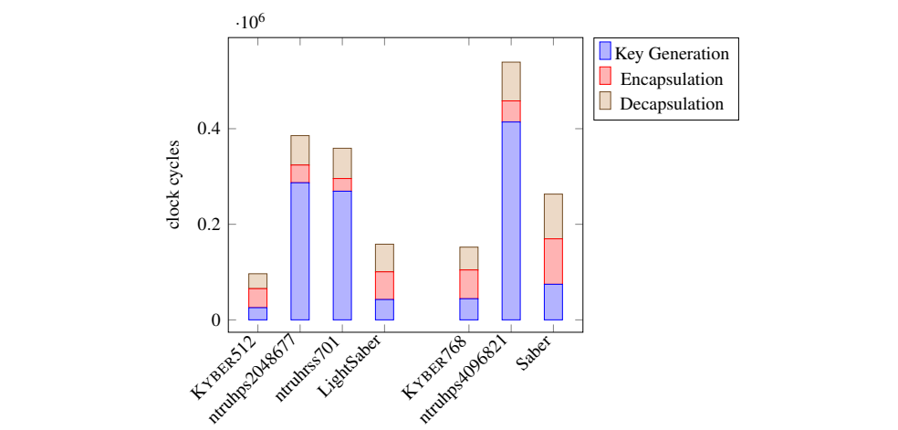
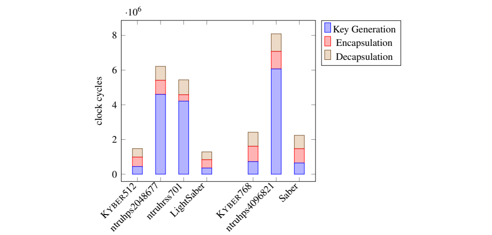
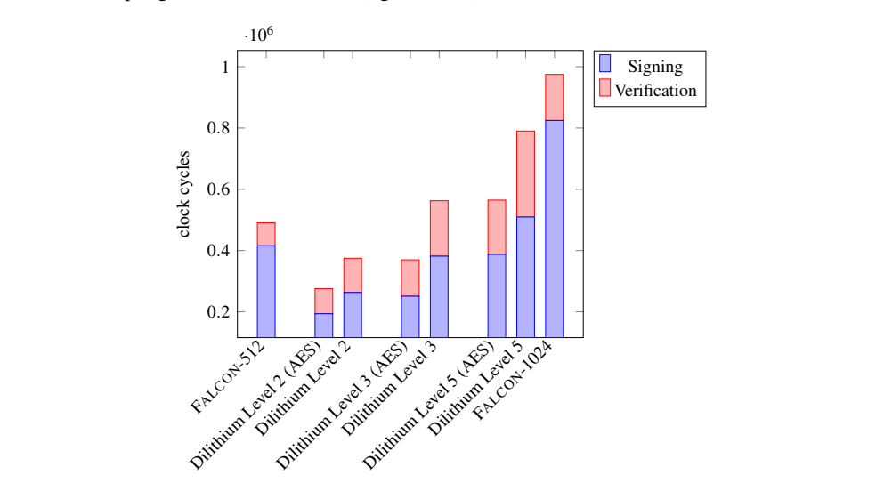
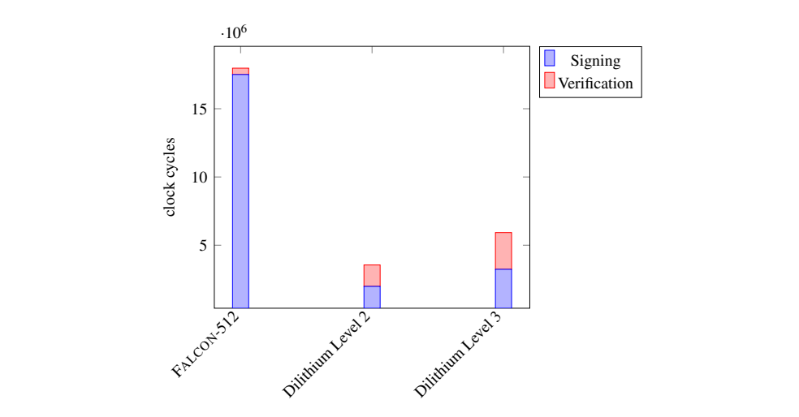
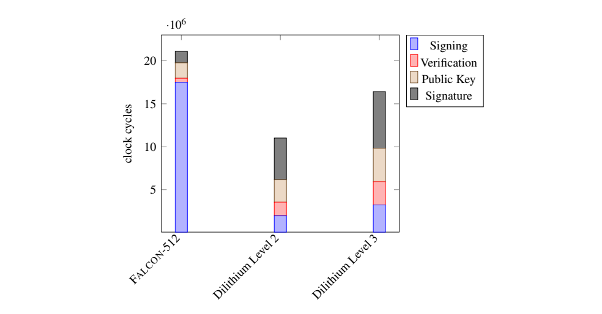

NIST IR 8413 日本語訳
英語タイトル : Status Report on the Third Round of the NIST Post-Quantum Cryptography Standardization Process日本語タイトル : NIST 耐量子暗号標準化プロセス第 3 ラウンドの状況報告
公開日 : 2022-09-29
原文URL : https://csrc.nist.gov/pubs/ir/8413/upd1/final
翻訳編集 : 自動生成（有志による非公式の日本語訳）, 原文取得日 : 2026-10-31, 訳文 : 923 / 923 ブロック
[要約] NIST IR 8413 は、一般からのフィードバックと内部レビューに基づく、NIST 耐量子暗号標準化プロセスの第 3 ラウンド候補の評価と選定のプロセスを説明する状況報告です。第 3 ラウンドの 15 の候補アルゴリズムのそれぞれを要約し、標準化に向けて選定されたもの、および第 4 ラウンドの分析で引き続き評価されるものを明らかにします。標準化される公開鍵暗号化および鍵確立のアルゴリズムは CRYSTALS–KYBER、デジタル署名は CRYSTALS–Dilithium、FALCON、および SPHINCS+ で、第 4 ラウンドには BIKE、Classic McEliece、HQC、SIKE が進みます。NIST はまた、署名のポートフォリオを拡充し多様化するため、公開鍵デジタル署名アルゴリズムの新たな提案募集を行います。
NIST IR 8413-upd1
NIST IR 8413-upd1
Status Report on the Third Round of the NIST Post-Quantum Cryptography Standardization Process
NIST 耐量子暗号標準化プロセス第 3 ラウンドの状況報告
Gorjan Alagic Daniel Apon David Cooper Quynh Dang Thinh Dang John Kelsey Jacob Lichtinger Yi-Kai Liu Carl Miller Dustin Moody Rene Peralta Ray Perlner Angela Robinson Daniel Smith-Tone
Gorjan Alagic Daniel Apon David Cooper Quynh Dang Thinh Dang John Kelsey Jacob Lichtinger Yi-Kai Liu Carl Miller Dustin Moody Rene Peralta Ray Perlner Angela Robinson Daniel Smith-Tone
This publication is available free of charge from: https://doi.org/10.6028/NIST.IR.8413-upd1
本刊行物は次の URL から無料で入手できます: https://doi.org/10.6028/NIST.IR.8413-upd1
NIST IR 8413-upd1
NIST IR 8413-upd1
Status Report on the Third Round of the NIST Post-Quantum Cryptography Standardization Process
NIST 耐量子暗号標準化プロセス第 3 ラウンドの状況報告
Gorjan Alagic
Gorjan Alagic
Daniel Apon*
Daniel Apon*
David Cooper
David Cooper
Quynh Dang
Quynh Dang
Thinh Dang
Thinh Dang
John Kelsey
John Kelsey
Jacob Lichtinger
Jacob Lichtinger
Carl Miller
Carl Miller
Dustin Moody
Dustin Moody
Rene Peralta
Rene Peralta
Ray Perlner
Ray Perlner
Angela Robinson
Angela Robinson
Daniel Smith-Tone
Daniel Smith-Tone
Computer Security Division
コンピュータセキュリティ部門（Computer Security Division）
Information Technology Laboratory
情報技術研究所（Information Technology Laboratory）
* Former NIST employee; all work for this publication was done while at or under contract with NIST.
* NIST の元職員。本刊行物に関するすべての作業は、NIST に在籍中、または NIST との契約の下で行われました。
Yi-Kai Liu
Yi-Kai Liu
Applied and Computational Mathematics Division
応用計算数学部門（Applied and Computational Mathematics Division）
Information Technology Laboratory
情報技術研究所（Information Technology Laboratory）
This publication is available free of charge from: https://doi.org/10.6028/NIST.IR.8413-upd1
本刊行物は次の URL から無料で入手できます: https://doi.org/10.6028/NIST.IR.8413-upd1
July 2022
2022 年 7 月
Includes updates as of 09-26-2022; see Appendix E
2022 年 9 月 26 日時点の更新を含みます。付録 E を参照してください
U.S. Department of Commerce Gina M. Raimondo, Secretary
米国商務省 Gina M. Raimondo 長官
National Institute of Standards and Technology
国立標準技術研究所（National Institute of Standards and Technology）
Laurie E. Locascio, NIST Director and Under Secretary of Commerce for Standards and Technology
Laurie E. Locascio、NIST 所長兼商務次官（標準・技術担当）
National Institute of Standards and Technology Interagency or Internal Report NIST IR 8413-upd1 102 pages (July 2022)
国立標準技術研究所 省庁間・内部報告書 NIST IR 8413-upd1 102 ページ（2022 年 7 月）
This publication is available free of charge from: https://doi.org/10.6028/NIST.IR.8413-upd1
本刊行物は次の URL から無料で入手できます: https://doi.org/10.6028/NIST.IR.8413-upd1
Certain commercial entities, equipment, or materials may be identified in this document in order to describe an experimental procedure or concept adequately. Such identification is not intended to imply recommendation or endorsement by NIST, nor is it intended to imply that the entities, materials, or equipment are necessarily the best available for the purpose.
本書では、実験手順や概念を適切に説明するため、特定の商業事業者、機器、または資材を明示する場合があります。そのような明示は、NIST による推奨や承認を意味するものではなく、また、これらの事業者、資材、または機器がその目的において必ずしも最善のものであることを意味するものでもありません。
There may be references in this publication to other publications currently under development by NIST in accordance with its assigned statutory responsibilities. The information in this publication, including concepts and methodologies, may be used by federal agencies even before the completion of such companion publications. Thus, until each publication is completed, current requirements, guidelines, and procedures, where they exist, remain operative. For planning and transition purposes, federal agencies may wish to closely follow the development of these new publications by NIST.
本刊行物には、NIST が法令で定められた責務に従って現在策定中の他の刊行物への言及が含まれる場合があります。概念や方法論を含む本刊行物の情報は、関連刊行物が完成する前であっても、連邦政府機関が使用してもよいです。したがって、各刊行物が完成するまでは、現行の要件、ガイドライン、および手順が存在する場合には、それらが引き続き有効です。計画および移行のため、連邦機関は、NIST によるこれらの新しい刊行物の策定状況を注意深く追うことを検討してもよいです。
Organizations are encouraged to review all draft publications during public comment periods and provide feedback to NIST. Many NIST cybersecurity publications, other than the ones noted above, are available at https://csrc.nist.gov/publications.
組織は、パブリックコメント期間中にすべてのドラフト版刊行物を確認し、NIST にフィードバックを提供することが推奨されています。上記のものを除く多くの NIST サイバーセキュリティ刊行物は、https://csrc.nist.gov/publications で入手できます。
Submit comments on this publication to: pqc-comments@nist.gov
本刊行物へのコメントの送付先: pqc-comments@nist.gov
National Institute of Standards and Technology Attn: Computer Security Division, Information Technology Laboratory 100 Bureau Drive (Mail Stop 8930) Gaithersburg, MD 20899-8930
国立標準技術研究所 宛先: Computer Security Division, Information Technology Laboratory 100 Bureau Drive (Mail Stop 8930) Gaithersburg, MD 20899-8930
All comments are subject to release under the Freedom of Information Act (FOIA).
すべてのコメントは、情報自由法（FOIA）に基づく公開の対象となります。
Reports on Computer Systems Technology
コンピュータシステム技術に関する報告書
The Information Technology Laboratory (ITL) at the National Institute of Standards and Technology (NIST) promotes the U.S. economy and public welfare by providing technical leadership for the Nation’s measurement and standards infrastructure. ITL develops tests, test methods, reference data, proof of concept implementations, and technical analyses to advance the development and productive use of information technology. ITL’s responsibilities include the development of management, administrative, technical, and physical standards and guidelines for the cost-effective security and privacy of other than national security-related information in federal information systems.
国立標準技術研究所（NIST）の情報技術研究所（ITL）は、国家の計測・標準インフラストラクチャに関する技術的リーダーシップを提供することで、米国経済と公共の福祉を促進しています。ITL は、情報技術の開発と生産的な利用を促進するため、試験、試験方法、参照データ、概念実証の実装、および技術分析を開発しています。ITL の責務には、連邦情報システムにおける国家安全保障関連以外の情報のセキュリティとプライバシーを費用対効果の高い方法で確保するための管理、事務、技術、および物理的な標準とガイドラインの策定が含まれます。
Abstract
要旨
The National Institute of Standards and Technology is in the process of selecting public-key cryptographic algorithms through a public, competition-like process. The new public-key cryptography standards will specify additional digital signature, public-key encryption, and key-establishment algorithms to augment Federal Information Processing Standard (FIPS) 186-4, Digital Signature Standard (DSS), as well as NIST Special Publication (SP) 800-56A Revision 3, Recommendation for Pair-Wise Key-Establishment Schemes Using Discrete Logarithm Cryptography, and SP 800-56B Revision 2, Recommendation for Pair-Wise Key Establishment Using Integer Factorization Cryptography. It is intended that these algorithms will be capable of protecting sensitive information well into the foreseeable future, including after the advent of quantum computers.
国立標準技術研究所は、競争形式に近い公開のプロセスにより、公開鍵暗号アルゴリズムを選定しているところです。新しい公開鍵暗号標準は、連邦情報処理標準（FIPS）186-4『Digital Signature Standard (DSS)』、ならびに NIST Special Publication（SP）800-56A Revision 3『Recommendation for Pair-Wise Key-Establishment Schemes Using Discrete Logarithm Cryptography』および SP 800-56B Revision 2『Recommendation for Pair-Wise Key Establishment Using Integer Factorization Cryptography』を補完するものとして、追加のデジタル署名、公開鍵暗号化、および鍵確立のアルゴリズムを規定します。これらのアルゴリズムは、量子コンピュータの出現後も含め、予見可能な将来にわたって機微な情報を保護できるようにすることを意図しています。
This report describes the evaluation and selection process of the NIST Post-Quantum Cryptography Standardization process third-round candidates based on public feedback and internal review. The report summarizes each of the 15 third-round candidate algorithms and identifies those selected for standardization, as well as those that will continue to be evaluated in a fourth round of analysis. The public-key encryption and key-establishment algorithm that will be standardized is CRYSTALS–KYBER. The digital signatures that will be standardized are CRYSTALS–Dilithium, FALCON, and SPHINCS+. While there are multiple signature algorithms selected, NIST recommends CRYSTALS–Dilithium as the primary algorithm to be implemented. In addition, four of the alternate key-establishment candidate algorithms will advance to a fourth round of evaluation: BIKE, Classic McEliece, HQC, and SIKE. These candidates are still being considered for future standardization. NIST will also issue a new Call for Proposals for public-key digital signature algorithms to augment and diversify its signature portfolio.
本報告書は、一般からのフィードバックと内部レビューに基づく、NIST 耐量子暗号標準化プロセスの第 3 ラウンド候補の評価と選定のプロセスを説明します。本報告書は、第 3 ラウンドの 15 の候補アルゴリズムのそれぞれを要約し、標準化に向けて選定されたもの、および第 4 ラウンドの分析で引き続き評価されるものを明らかにします。標準化される公開鍵暗号化および鍵確立のアルゴリズムは CRYSTALS–KYBER です。標準化されるデジタル署名は CRYSTALS–Dilithium、FALCON、および SPHINCS+ です。複数の署名アルゴリズムが選定されていますが、NIST は、主たるアルゴリズムとして CRYSTALS–Dilithium を実装することを推奨します。加えて、代替の鍵確立候補アルゴリズムのうち 4 つ、すなわち BIKE、Classic McEliece、HQC、および SIKE が第 4 ラウンドの評価に進みます。これらの候補は、将来の標準化に向けて引き続き検討されています。NIST はまた、署名のポートフォリオを拡充し多様化するため、公開鍵デジタル署名アルゴリズムの新たな提案募集を行います。
Keywords
キーワード
cryptography; digital signatures; key-encapsulation mechanism (KEM); key-establishment; post-quantum cryptography; public-key encryption; quantum resistant; quantum safe
暗号; デジタル署名; 鍵カプセル化メカニズム（KEM）; 鍵確立; 耐量子暗号; 公開鍵暗号化; 量子耐性; 量子安全
Supplemental Content
補足資料
The NIST Post-Quantum Cryptography Standardization Process webpage is available at https://csrc.nist.gov/projects/post-quantum-cryptography/post-quantum-cryptography-standardization
NIST 耐量子暗号標準化プロセスのウェブページは https://csrc.nist.gov/projects/post-quantum-cryptography/post-quantum-cryptography-standardization で公開されています。
Acknowledgments
謝辞
NIST would like to thank all of the candidate submission teams who developed, designed, and analyzed post-quantum public-key algorithms and prepared detailed submission packages describing their algorithms.
NIST は、耐量子公開鍵アルゴリズムを開発・設計・分析し、各アルゴリズムを詳述した提出資料一式を準備した、すべての候補提出チームに感謝します。
NIST is also grateful for the efforts of those in the cryptographic community who provided security, implementation, and performance analyses of the candidate algorithms during the first, second, and third rounds. NIST would not be able to select new post-quantum public-key algorithms for standardization without the combined efforts of these individuals and the algorithm submitters.
NIST はまた、第 1、第 2、および第 3 ラウンドの間に、候補アルゴリズムの安全性、実装、および性能の分析を提供した暗号コミュニティの方々の尽力にも感謝します。これらの方々とアルゴリズム提出者の総力がなければ、NIST は標準化のための新しい耐量子公開鍵アルゴリズムを選定できなかったでしょう。
The authors of this report are also appreciative of the efforts by other members of NIST’s Post-Quantum Cryptography team who reviewed candidate algorithms, analyses, and public comments; performed testing; provided technical and administrative support; and participated in numerous meetings to discuss the selection of the second-round candidates. They are Zuzana Bajcsy, Larry Bassham, Lily Chen, Morris Dworkin, Sara Kerman, and Andrew Regenscheid. Finally, the authors also would like to thank NIST legal counsel for helpful discussions.
本報告書の著者はさらに、NIST の耐量子暗号チームの他のメンバーの尽力にも感謝します。彼らは、候補アルゴリズム、分析、およびパブリックコメントをレビューし、試験を実施し、技術面・事務面の支援を提供し、第 2 ラウンド候補の選定を議論する数多くの会議に参加しました。メンバーは Zuzana Bajcsy、Larry Bassham、Lily Chen、Morris Dworkin、Sara Kerman、Andrew Regenscheid です。最後に、著者は、有益な議論をいただいた NIST の法務顧問にも感謝します。
Contents
目次
List of Tables
表の一覧
Table 7 Key and ciphertext sizes for the KEM alternates
表 7 KEM 代替候補の鍵サイズと暗号文サイズ
Table 8 Key and signature sizes for the signature finalists
表 8 署名ファイナリストの鍵サイズと署名サイズ
Table 9 Key and signature sizes for the alternate signatures
表 9 代替署名の鍵サイズと署名サイズ
Table 10 Claimed security metrics for the lattice KEM finalists
表 10 格子 KEM ファイナリストについて主張されている安全性指標
Table 11 Claimed security metrics for the lattice signature finalists
表 11 格子署名ファイナリストについて主張されている安全性指標
List of Figures
図の一覧
1. Introduction
1. はじめに
Over the past several years, there has been steady progress toward building quantum computers. The security of many commonly used public-key cryptosystems would be at risk if large-scale quantum computers were ever realized. In particular, this would include key-establishment schemes and digital signatures that are based on factoring, discrete logarithms, and elliptic curve cryptography. In contrast, symmetric cryptographic primitives, such as block ciphers and hash functions, would not be as drastically impacted. As a result, there has been intensified research into finding public-key cryptosystems that would be secure against adversaries with both quantum and classical computers. This field is often referred to as post-quantum cryptography (PQC), or sometimes quantum-resistant cryptography. The goal is to develop schemes that can be deployed in existing communication networks and protocols without significant modifications.
ここ数年、量子コンピュータの構築は着実に進展しています。大規模な量子コンピュータが実現した場合、広く使われている多くの公開鍵暗号システムの安全性が危険にさらされます。特に、素因数分解、離散対数、および楕円曲線暗号に基づく鍵確立方式とデジタル署名が該当します。これに対し、ブロック暗号やハッシュ関数などの共通鍵暗号プリミティブは、それほど大きな影響を受けません。その結果、量子コンピュータと古典コンピュータの両方を持つ敵対者に対して安全な公開鍵暗号システムを見つける研究が活発化しています。この分野はしばしば耐量子暗号（PQC）、または量子耐性暗号と呼ばれます。目標は、大幅な変更を加えずに既存の通信ネットワークやプロトコルに展開できる方式を開発することです。
In response, the National Institute of Standards and Technology (NIST) initiated a public, competition-like process to select quantum-resistant public-key cryptographic algorithms. The new public-key cryptography standards will specify algorithms for digital signatures, public-key encryption, and key establishment. The new standards will augment Federal Information Processing Standard (FIPS) 186-4, Digital Signature Standard (DSS) [1], Special Publication (SP) 800-56A Revision 3, Recommendation for Pair-Wise Key-Establishment Schemes Using Discrete Logarithm Cryptography [2], and SP 800-56B Revision 2, Recommendation for Pair-Wise Key Establishment Using Integer Factorization Cryptography [3]. It is intended that these algorithms will be capable of protecting sensitive U.S. Government information well into the foreseeable future, including after the advent of quantum computers. The process will be referred to as the NIST Post-Quantum Cryptography Standardization Process hereafter in this document.
これを受けて、国立標準技術研究所（NIST）は、量子耐性のある公開鍵暗号アルゴリズムを選定するため、競争形式に近い公開のプロセスを開始しました。新しい公開鍵暗号標準は、デジタル署名、公開鍵暗号化、および鍵確立のアルゴリズムを規定します。新しい標準は、連邦情報処理標準（FIPS）186-4『Digital Signature Standard (DSS)』[1]、Special Publication（SP）800-56A Revision 3『Recommendation for Pair-Wise Key-Establishment Schemes Using Discrete Logarithm Cryptography』[2]、および SP 800-56B Revision 2『Recommendation for Pair-Wise Key Establishment Using Integer Factorization Cryptography』[3] を補完するものとなります。これらのアルゴリズムは、量子コンピュータの出現後も含め、予見可能な将来にわたって米国政府の機微な情報を保護できるようにすることを意図しています。本書では、以降、このプロセスを NIST 耐量子暗号標準化プロセスと呼びます。
NIST issued a public call for submissions to the PQC Standardization Process in December 2016 [4]. Prior to the November 2017 deadline a total of 82 candidate algorithms were submitted. Shortly thereafter, the 69 candidates that met both the submission requirements and the minimum acceptability criteria were accepted into the first round of the standardization process. Submission packages for the first-round candidates were posted online for public review and comment [5].
NIST は 2016 年 12 月に、PQC 標準化プロセスへの提出を求める公募を行いました [4]。2017 年 11 月の締め切りまでに、合計 82 の候補アルゴリズムが提出されました。その後まもなく、提出要件と最低限の受理基準の両方を満たした 69 の候補が、標準化プロセスの第 1 ラウンドに受理されました。第 1 ラウンド候補の提出資料一式は、一般によるレビューとコメントのためにオンラインで公開されました [5]。
After a year-long review of the candidates, NIST selected 26 algorithms to move on to the second round of evaluation in January 2019 [6]. These algorithms were viewed as the most promising candidates for eventual standardization, and were selected based on both internal analysis and public feedback. During the second round, there was continued evaluation by NIST and the broader cryptographic community. After careful deliberation, NIST selected seven finalists and eight alternates to move on to the third round in July 2020 [7]. NIST’s intent was to standardize a small number of the finalists at the end of the third round, as well as a small number of the alternate candidates after a fourth round.
1 年にわたる候補のレビューを経て、NIST は 2019 年 1 月に、26 のアルゴリズムを第 2 ラウンドの評価に進めることを選定しました [6]。これらのアルゴリズムは、最終的な標準化に向けて最も有望な候補とみなされ、内部分析と一般からのフィードバックの両方に基づいて選ばれました。第 2 ラウンドでは、NIST と広範な暗号コミュニティによる評価が継続されました。慎重な審議の末、NIST は 2020 年 7 月に、7 つのファイナリストと 8 つの代替候補を第 3 ラウンドに進めることを選定しました [7]。NIST の意図は、第 3 ラウンドの終了時にファイナリストのうちの少数を標準化し、第 4 ラウンドの後に代替候補のうちの少数を標準化することでした。
The third round began in July 2020 and continued for approximately 18 months. During the third round, there was a more thorough analysis of the theoretical and empirical evidence used to justify the security of the candidates. There was also careful benchmarking of their performance using optimized implementations on a variety of software and hardware platforms. Similar to the first two rounds, NIST also held the (virtual) Third NIST PQC Standardization Conference in June 2021. Each of the finalists and alternates were invited to present an update on their candidate algorithm. In addition, several researchers presented work that was relevant to the PQC standardization process.
第 3 ラウンドは 2020 年 7 月に始まり、約 18 か月続きました。第 3 ラウンドでは、候補の安全性を裏付けるために用いられる理論的および経験的な根拠について、より徹底した分析が行われました。また、さまざまなソフトウェアおよびハードウェアプラットフォーム上で、最適化された実装を用いて性能の詳細なベンチマークも行われました。最初の 2 回のラウンドと同様に、NIST は 2021 年 6 月に、第 3 回 NIST PQC 標準化会議を（オンラインで）開催しました。ファイナリストと代替候補はそれぞれ、自らの候補アルゴリズムの最新状況を発表するよう招かれました。加えて、数名の研究者が、PQC 標準化プロセスに関連する研究を発表しました。
After three rounds of evaluation and analysis, NIST has selected the first algorithms it will standardize as a result of the PQC Standardization Process. The public-key encapsulation mechanism (KEM) that will be standardized is CRYSTALS–KYBER.1 The digital signatures that will be standardized are CRYSTALS–Dilithium, FALCON, and SPHINCS+. While there are multiple signature algorithms selected, NIST recommends CRYSTALS–Dilithium as the primary algorithm to be implemented. In addition, four of the alternate KEM candidate algorithms will advance to a fourth round of evaluation: BIKE, Classic McEliece, HQC, and SIKE. These candidates will be considered for future standardization at the conclusion of the fourth round.
3 回のラウンドにわたる評価と分析を経て、NIST は、PQC 標準化プロセスの成果として最初に標準化するアルゴリズムを選定しました。標準化される公開鍵カプセル化メカニズム（KEM）は CRYSTALS–KYBER です。1 標準化されるデジタル署名は CRYSTALS–Dilithium、FALCON、および SPHINCS+ です。複数の署名アルゴリズムが選定されていますが、NIST は、主たるアルゴリズムとして CRYSTALS–Dilithium を実装することを推奨します。加えて、代替の KEM 候補アルゴリズムのうち 4 つ、すなわち BIKE、Classic McEliece、HQC、および SIKE が第 4 ラウンドの評価に進みます。これらの候補は、第 4 ラウンドの終了時に、将来の標準化に向けて検討されます。
Table 1 shows a timeline of major events with respect to the NIST PQC Standardization Process to date.
表 1 は、これまでの NIST PQC 標準化プロセスに関する主な出来事の経過を示しています。
Table 1. Timeline of the NIST Post-Quantum Cryptography Standardization Process
表 1. NIST 耐量子暗号標準化プロセスの経過
| Date | Event |
|---|---|
| April 2015 | Workshop on Cybersecurity in a Post-Quantum World, NIST, Gaithersburg, MD |
| February 2016 | PQC Standardization: Announcement and outline of NIST’s Call for Submissions presentation given at PQCrypto 2016 |
| April 2016 | NISTIR 8105, Report on Post-Quantum Cryptography [8], released |
| December 2016 | Federal Register Notice – Announcing Request for Nominations for Public-Key Post-Quantum Cryptographic Algorithms [4] |
| November 30, 2017 | Submission Deadline for NIST PQC Standardization Process |
| December 2017 | First-round candidates announced. The public comment period on the first-round candidates began. |
| April 2018 | First NIST PQC Standardization Conference, Ft. Lauderdale, FL |
| January 2019 | Second-round candidates announced. NISTIR 8240, Status Report on the First Round of the NIST Post-Quantum Cryptography Standardization Process [6], released. The public comment period on the second-round candidates began. |
| August 2019 | Second NIST PQC Standardization Conference, Santa Barbara, CA |
| April 2020 | NIST invited comments from submitters and the community to inform its decision-making process for the selection of third-round candidates. |
| July 2020 | Third-round finalists and alternate candidates announced. NIST-IR 8309, Status Report on the Second Round of the NIST Post-Quantum Cryptography Standardization Process [7], released. The public comment period on the third-round candidates began. |
| June 2021 | Third NIST PQC Standardization Conference, held virtually |
| July 2022 | Candidate algorithms to be standardized are announced, along with alternate candidates advancing to the fourth round. NIST-IR 8413-upd1, Status Report on the Third Round of the NIST Post-Quantum Cryptography Standardization Process, released. |
| 日付 | 出来事 |
|---|---|
| 2015 年 4 月 | ポスト量子時代のサイバーセキュリティに関するワークショップ、NIST、Gaithersburg, MD |
| 2016 年 2 月 | PQC 標準化: NIST の提出募集の発表と概要のプレゼンテーション（PQCrypto 2016 にて） |
| 2016 年 4 月 | NISTIR 8105『Report on Post-Quantum Cryptography』[8] 公開 |
| 2016 年 12 月 | 連邦官報告示 – 公開鍵耐量子暗号アルゴリズムの推薦募集の告知 [4] |
| 2017 年 11 月 30 日 | NIST PQC 標準化プロセスの提出締め切り |
| 2017 年 12 月 | 第 1 ラウンド候補の発表。第 1 ラウンド候補に対するパブリックコメント期間が開始。 |
| 2018 年 4 月 | 第 1 回 NIST PQC 標準化会議、Ft. Lauderdale, FL |
| 2019 年 1 月 | 第 2 ラウンド候補の発表。NISTIR 8240『Status Report on the First Round of the NIST Post-Quantum Cryptography Standardization Process』[6] 公開。第 2 ラウンド候補に対するパブリックコメント期間が開始。 |
| 2019 年 8 月 | 第 2 回 NIST PQC 標準化会議、Santa Barbara, CA |
| 2020 年 4 月 | NIST は、第 3 ラウンド候補の選定に向けた意思決定プロセスの参考とするため、提出者およびコミュニティからのコメントを募集。 |
| 2020 年 7 月 | 第 3 ラウンドのファイナリストと代替候補の発表。NIST-IR 8309『Status Report on the Second Round of the NIST Post-Quantum Cryptography Standardization Process』[7] 公開。第 3 ラウンド候補に対するパブリックコメント期間が開始。 |
| 2021 年 6 月 | 第 3 回 NIST PQC 標準化会議、オンライン開催 |
| 2022 年 7 月 | 標準化される候補アルゴリズムと、第 4 ラウンドに進む代替候補の発表。NIST-IR 8413-upd1『Status Report on the Third Round of the NIST Post-Quantum Cryptography Standardization Process』公開。 |
1.1 Purpose and Organization of this Document
1.1 本書の目的と構成
The purpose of this document is to report on the third round of the NIST PQC Standardization Process. The report is organized as follows.
本書の目的は、NIST PQC 標準化プロセスの第 3 ラウンドについて報告することです。本報告書の構成は次のとおりです。
Section 2 enumerates the candidates that were included in the third round. Descriptions of the evaluation criteria and selection process used to ultimately select from the third-round finalists and alternate candidates are then provided. The algorithms that will be standardized are then named, along with the candidates moving into a fourth round of evaluation and analysis.
第 2 章では、第 3 ラウンドに含まれた候補を列挙します。続いて、第 3 ラウンドのファイナリストと代替候補から最終的に選定するために用いた評価基準と選定プロセスを説明します。そのうえで、標準化されるアルゴリズムと、評価と分析の第 4 ラウンドに進む候補を挙げます。
Section 3 contains some technical material relevant to the candidate algorithms. This includes a brief explanation of the underlying security problems, as well as the definitions of various computational models that NIST used in its evaluation.
第 3 章には、候補アルゴリズムに関連する技術的な内容が含まれます。ここでは、基礎となる安全性の問題の簡潔な説明と、NIST が評価で用いたさまざまな計算モデルの定義を示します。
Section 4 summarizes each of the third-round candidates. For each candidate, there is a brief description of the algorithm and its characteristics. This report presents reasons why candidate algorithms were either selected for standardization (or the fourth round), as well as reasons why the other candidate algorithms were not selected.
第 4 章では、第 3 ラウンドの各候補を要約します。各候補について、アルゴリズムとその特性を簡潔に説明します。本報告書は、候補アルゴリズムが標準化（または第 4 ラウンド）に向けて選定された理由と、それ以外の候補アルゴリズムが選定されなかった理由を示します。
Section 5 describes the next steps in the NIST PQC Standardization Process. More details are provided on standardizing the algorithms selected, and on the process for evaluating candidate algorithms selected for the fourth round. Section 5 also mentions a new Call for Proposals for public-key digital signature algorithms.
第 5 章では、NIST PQC 標準化プロセスの次のステップを説明します。選定されたアルゴリズムの標準化と、第 4 ラウンドに向けて選定された候補アルゴリズムの評価プロセスについて、より詳しく述べます。第 5 章ではまた、公開鍵デジタル署名アルゴリズムの新たな提案募集にも言及します。
2. Evaluation Criteria and the Selection Process
2. 評価基準と選定プロセス
2.1 Acceptance of the Third-Round Candidates
2.1 第 3 ラウンド候補の受理
NIST selected 15 candidate algorithms for the third round. Seven of the 15 algorithms were chosen to be ‘finalists,’ while the other eight algorithms were labelled ‘alternates’ [7]. The set of finalists included the algorithms that NIST considered to be the most promising to fit the majority of use cases and the most likely to be ready for standardization soon after the end of the third round. The alternate candidates were regarded as potential candidates for future standardization, most likely after another round of evaluation. Some of the alternate candidates have worse performance characteristics than the finalists but might yet be selected for standardization based on NIST’s high confidence in their security. Others have acceptable performance but require additional analysis or other work to inspire sufficient confidence in their security for NIST to standardize. In addition, some alternate candidates were selected based either on NIST’s desire for diversity in future post-quantum security standards or on their potential for further improvement.
NIST は第 3 ラウンドに向けて 15 の候補アルゴリズムを選定しました。15 のアルゴリズムのうち 7 つが「ファイナリスト」に選ばれ、残りの 8 つのアルゴリズムは「代替候補」とされました [7]。ファイナリストには、大半のユースケースに適合する最も有望なアルゴリズムであり、第 3 ラウンドの終了後まもなく標準化の準備が整う可能性が最も高いと NIST がみなしたアルゴリズムが含まれます。代替候補は、将来の標準化に向けた潜在的な候補、おそらくはもう 1 回の評価ラウンドを経た後の候補とみなされました。代替候補の一部は、ファイナリストより性能特性が劣りますが、安全性に対する NIST の高い信頼に基づいて、なお標準化に選定される可能性があります。それ以外の代替候補は、性能は許容できるものの、NIST が標準化するのに十分な安全性への信頼を得るには、追加の分析やその他の作業が必要です。加えて、一部の代替候補は、将来の耐量子安全性標準における多様性を NIST が望んだこと、あるいはさらなる改善の可能性があることに基づいて選ばれました。
The seven finalists included four key encapsulation mechanisms (KEMs), and three digital signature mechanisms. Of the eight alternates, five were KEMs and three were digital signatures. Submission teams were allowed to make minor modifications and resubmit their packages, which had to meet the same requirements as the original submissions. The complete updated specifications were posted on NIST’s PQC website [5] on October 23, 2020, for public review.
7 つのファイナリストには、4 つの鍵カプセル化メカニズム（KEM）と 3 つのデジタル署名メカニズムが含まれていました。8 つの代替候補のうち、5 つが KEM、3 つがデジタル署名でした。提出チームは、軽微な修正を加えて提出資料一式を再提出することが認められましたが、その資料は当初の提出と同じ要件を満たす必要がありました。更新された完全な仕様は、一般によるレビューのために、2020 年 10 月 23 日に NIST の PQC ウェブサイト [5] に公開されました。
Table 2. Third-Round Finalists
表 2. 第 3 ラウンドのファイナリスト
| Public-Key Encryption/KEMs | Digital Signatures |
|---|---|
| Classic McEliece | CRYSTALS–Dilithium |
| CRYSTALS–KYBER | FALCON |
| NTRU | Rainbow |
| Saber |
| 公開鍵暗号化／KEM | デジタル署名 |
|---|---|
| Classic McEliece | CRYSTALS–Dilithium |
| CRYSTALS–KYBER | FALCON |
| NTRU | Rainbow |
| Saber |
Table 3. Third-Round Alternate Candidates
表 3. 第 3 ラウンドの代替候補
| Public-Key Encryption/KEMs | Digital Signatures |
|---|---|
| BIKE | GeMSS |
| FrodoKEM | Picnic |
| HQC | SPHINCS+ |
| NTRU Prime | |
| SIKE |
| 公開鍵暗号化／KEM | デジタル署名 |
|---|---|
| BIKE | GeMSS |
| FrodoKEM | Picnic |
| HQC | SPHINCS+ |
| NTRU Prime | |
| SIKE |
2.2 Evaluation Criteria
2.2 評価基準
NIST’s Call for Proposals identified three broad aspects of the evaluation criteria that would be used to compare candidate algorithms throughout the NIST PQC Standardization Process: 1) security, 2) cost and performance, and 3) algorithm and implementation characteristics. These criteria are described below, along with a discussion of how they impacted the third-round candidate evaluations.
NIST の提案募集は、NIST PQC 標準化プロセス全体を通じて候補アルゴリズムの比較に用いる評価基準について、大きく 3 つの側面を示していました。すなわち、1) 安全性、2) コストと性能、3) アルゴリズムと実装の特性です。以下では、これらの基準を説明するとともに、それらが第 3 ラウンド候補の評価にどのように影響したかを論じます。
2.2.1 Security
2.2.1 安全性
As was the case for the past Advanced Encryption Standard (AES) and Secure Hash Algorithm 3 (SHA-3) competitions, security is the most important criterion that NIST uses when evaluating candidate post-quantum algorithms. NIST’s public-key standards are currently utilized in a wide variety of applications, including internet protocols like TLS, SSH, IKE, IPsec, and DNSSEC, as well as for certificates, software code signing, and secure boot-loaders. The new NIST public-key standards will provide post-quantum security for each of these applications.
過去の Advanced Encryption Standard（AES）や Secure Hash Algorithm 3（SHA-3）のコンペティションと同様に、安全性は、NIST が耐量子アルゴリズムの候補を評価する際に用いる最も重要な基準です。NIST の公開鍵標準は現在、TLS、SSH、IKE、IPsec、DNSSEC などのインターネットプロトコルのほか、証明書、ソフトウェアのコード署名、セキュアブートローダーなど、幅広い用途で利用されています。NIST の新しい公開鍵標準は、これらの各用途に耐量子安全性を提供します。
For the purpose of quantifying the security of candidate algorithms, NIST gave three possible security definitions—two for encryption and one for signatures. NIST also designated five security strength categories for classifying the computational complexity of attacks that violate the security definitions (see [9]).
候補アルゴリズムの安全性を定量化するため、NIST は 3 つの安全性の定義を示しました。暗号化について 2 つ、署名について 1 つです。NIST はまた、安全性の定義を破る攻撃の計算量を分類するために、5 つの安全強度カテゴリを指定しました（[9] を参照）。
NIST also mentioned other desirable security properties, such as forward secrecy, resistance to side-channel and multi-key attacks, and resistance to misuse, all of which continue to be of interest. In some cases, NIST has encouraged submitters to make minor tweaks to provide or enhance these additional desirable security properties (e.g., by adding a public salt to ciphertexts to avoid multi-target attacks against KEMs).
NIST はまた、前方秘匿性、サイドチャネル攻撃や複数鍵攻撃への耐性、誤用への耐性など、他の望ましい安全性の特性にも言及しており、これらはいずれも引き続き関心の対象です。場合によっては、NIST は、これらの望ましい追加の安全性特性を提供または強化するため、提出者に軽微な調整を行うよう促しました（たとえば、KEM に対する複数標的攻撃を避けるために、暗号文に公開ソルトを追加するなど）。
For general-use encryption and key-establishment schemes, the Call for Proposals [9] asked for “semantically secure” schemes with respect to adaptive chosen ciphertext attack (equivalently, IND-CCA2 security). For ephemeral use cases, NIST also accepted algorithms that provided semantic security with respect to chosen plaintext attack (equivalently, IND-CPA security). IND-CCA2 security is not required in strictly ephemeral use cases and attempting to meet the more stringent requirements of IND-CCA2 security may incur significant performance penalties for some schemes. Digital signature schemes were required to provide existentially unforgeable signatures with respect to an adaptive chosen message attack (EUF-CMA security). Submitters were encouraged but not required to provide proofs of security in relevant models.
汎用の暗号化方式および鍵確立方式について、提案募集 [9] は、適応的選択暗号文攻撃に対して「意味論的に安全」な方式（同義で、IND-CCA2 安全性）を求めていました。一時的な（ephemeral）ユースケースについては、NIST は、選択平文攻撃に対して意味論的安全性を提供するアルゴリズム（同義で、IND-CPA 安全性）も受け付けました。厳密に一時的なユースケースでは IND-CCA2 安全性は必須ではなく、より厳格な IND-CCA2 安全性の要件を満たそうとすると、一部の方式では大きな性能上の不利益が生じる場合があります。デジタル署名方式は、適応的選択メッセージ攻撃に対して、存在的偽造不可能な署名を提供すること（EUF-CMA 安全性）が求められました。提出者は、関連するモデルにおける安全性の証明を提供することが推奨されましたが、必須ではありませんでした。
The five security strength categories defined in [9] were based on the computational resources required to perform certain brute-force attacks against the existing NIST standards for AES and SHA in a variety of different models of the cost of computation, both classical and quantum. In some cases, questions have arisen regarding whether various parameter sets meet their claimed security strength categories. The uncertainty arises principally from two distinct considerations.
[9] で定義された 5 つの安全強度カテゴリは、古典と量子の両方を含む計算コストのさまざまなモデルにおいて、AES と SHA に関する既存の NIST 標準に対する特定の総当たり攻撃を実行するために必要な計算資源に基づいていました。場合によっては、さまざまなパラメータセットが主張する安全強度カテゴリを満たしているかどうかについて、疑問が生じています。この不確実性は、主に 2 つの異なる考慮事項から生じます。
First, the NIST security strength categories are defined in a way that leaves open the relative cost of various computational resources, including quantum gates, classical gates, quantum memory, classical memory, hardware, energy, and time. The idea is that in order to meet, for example, category 1, the best attack violating the security definition of a parameter set should cost more than a brute-force key search attack on a single instance of AES-128, according to any plausible assumption regarding the relative cost of the various computational resources involved in a real-world attack. Different opinions can therefore arise regarding what constitutes a plausible assumption regarding the relative cost of computational resources.
第 1 に、NIST の安全強度カテゴリは、量子ゲート、古典ゲート、量子メモリ、古典メモリ、ハードウェア、エネルギー、時間など、さまざまな計算資源の相対的なコストを定めない形で定義されています。その考え方は、たとえばカテゴリ 1 を満たすには、パラメータセットの安全性の定義を破る最良の攻撃が、現実の攻撃に関わるさまざまな計算資源の相対コストについてのどのような妥当な仮定に照らしても、AES-128 の単一インスタンスに対する総当たりの鍵探索攻撃より高コストでなければならない、というものです。そのため、計算資源の相対コストについて何が妥当な仮定であるかをめぐって、異なる意見が生じうるのです。
Second, even if one has agreed upon a model or a range of models for evaluating the relative cost of various computational resources, there may still be uncertainty how much of a given resource an attack actually requires. For example, many parameters of lattice reduction attacks (such as the BKZ block size, the number of required BKZ iterations, or the number of dimensions for free) are not proven optimal values but rather heuristic estimates based on simplified models, simulations, and mathematical conjectures. Additionally, while some submitters have rightly observed that many widely used cost models, such as the RAM model, underestimate the difficulty of certain memory intensive attacks, the comparative lack of published cryptanalysis using more realistic models may bring into question whether sufficient effort has been made to optimize the best-known attacks to perform well in these models.
第 2 に、さまざまな計算資源の相対コストを評価するモデルまたはモデルの範囲について合意できたとしても、攻撃が実際にある資源をどれだけ必要とするかについては、なお不確実性が残る場合があります。たとえば、格子基底簡約攻撃の多くのパラメータ（BKZ のブロックサイズ、必要な BKZ の反復回数、無償で得られる次元数など）は、最適であると証明された値ではなく、簡略化したモデル、シミュレーション、数学的予想に基づくヒューリスティックな推定値です。さらに、一部の提出者が正しく指摘したように、RAM モデルなど広く使われている多くのコストモデルは、メモリを多用する特定の攻撃の困難さを過小評価していますが、より現実的なモデルを用いて公表された暗号解読が比較的少ないために、既知の最良の攻撃をこれらのモデルで良好に機能するよう最適化する努力が十分に払われてきたのかという疑問が生じうるのです。
Submitters were asked to provide a preliminary classification of all proposed parameter sets according to the definitions of the five security strength categories. While category 1, 2, and 3 parameters were (and continue to be) the most important targets for NIST’s evaluation, NIST nevertheless strongly encouraged the submitters to provide at least one parameter set that meets category 5. Aside from NTRU, all of the third-round submission packages contained parameters that claimed to meet category 5. In June 2021, at NIST’s request, the NTRU team announced parameters designed to meet category 5 given the state of the art in lattice cryptanalysis [10].
提出者は、提案するすべてのパラメータセットについて、5 つの安全強度カテゴリの定義に従った暫定的な分類を提供するよう求められました。カテゴリ 1、2、3 のパラメータは、NIST の評価にとって最も重要な対象でした（現在もそうです）が、それでも NIST は、少なくとも 1 つのカテゴリ 5 を満たすパラメータセットを提供するよう、提出者に強く促しました。NTRU を除き、第 3 ラウンドのすべての提出資料一式に、カテゴリ 5 を満たすと主張するパラメータが含まれていました。2021 年 6 月に、NIST の要請を受けて、NTRU チームは、格子暗号解読の最新水準を踏まえてカテゴリ 5 を満たすよう設計したパラメータを発表しました [10]。
During the first, second, and third rounds of the NIST standardization process, a number of cryptanalytic results dramatically reduced the security assumed for some submitted schemes and undermined NIST’s confidence in the maturity of others. These results were the basis for many of NIST’s decisions thus far in the process, particularly for Rainbow and GeMSS [11–13]. Cryptanalysis has also brought some of the candidates’ security category claims into question or shown them to be false. In response, NIST may move some parameter sets down to a lower category (or refrain from standardizing them) if warranted.
NIST 標準化プロセスの第 1、第 2、および第 3 ラウンドの間に、いくつかの暗号解読の成果により、提出された一部の方式で想定されていた安全性が大幅に低下し、他の方式の成熟度に対する NIST の信頼が損なわれました。これらの成果は、これまでのプロセスにおける NIST の多くの決定の根拠となりました。特に Rainbow と GeMSS について、そうでした [11–13]。暗号解読はまた、一部の候補の安全性カテゴリの主張に疑問を投げかけ、あるいはそれが誤りであることを示しました。これを受けて、NIST は、正当な理由がある場合には、一部のパラメータセットをより低いカテゴリに下げる（または標準化を見送る）場合があります。
Progress was also made in clarifying some outstanding security questions during the third round. In lattice-based cryptography, methods were developed to replace the asymptotic security estimates represented by the core SVP methodology with concrete security estimates expressed as a gate count that can be more directly compared with security estimates for the non-lattice candidates (see [14, 15], as well as discussion on the pqc-forum [16]). Several of the finalists have also been implemented with countermeasures to side-channel attacks (see Section 2.2.3). Additionally, further investigations have been performed to determine whether the BIKE submission’s estimate of its decryption failure rate is accurate enough to justify a claim of IND-CCA2 security [17, 18].
第 3 ラウンドでは、未解決だった安全性に関するいくつかの問題の解明も進みました。格子ベース暗号では、コア SVP 手法で表される漸近的な安全性の推定を、ゲート数で表される具体的な安全性の推定に置き換える手法が開発され、格子以外の候補の安全性の推定とより直接的に比較できるようになりました（[14, 15]、および pqc-forum での議論 [16] を参照）。ファイナリストのいくつかは、サイドチャネル攻撃への対策を施した実装も作られています（2.2.3 節を参照）。さらに、BIKE の提出資料が示す復号失敗率の推定が、IND-CCA2 安全性の主張を正当化できるほど正確であるかどうかを判定するために、追加の調査が行われています [17, 18]。
NIST continues to see diversity of computational hardness assumptions as an important long-term security goal for its standards. NIST will standardize practically efficient schemes from different families of cryptosystems to reduce the risk that a single breakthrough in cryptanalysis will leave the world without a viable standard for either key-establishment or digital signatures. Nonetheless, NIST does not feel the need to establish these standards all at once but will rather prioritize those schemes that seem closest to being ready for standardization and wide adoption. NIST feels that this strategy balances the desire for diversity with the need for all standards to be thoroughly vetted before they are released.
NIST は、計算困難性の仮定の多様性を、標準にとって重要な長期的安全性の目標であるとの見方を引き続き持っています。NIST は、暗号解読における単一の突破口によって、鍵確立またはデジタル署名のいずれについても、世界が使用可能な標準を失うリスクを減らすため、異なる系統の暗号システムから、実用的に効率的な方式を標準化します。とはいえ、NIST は、これらの標準を一度にすべて確立する必要があるとは考えておらず、標準化と広範な採用の準備が最も整っているように見える方式を優先します。NIST は、この戦略が、多様性を求める要望と、すべての標準を公開前に徹底的に精査する必要性との均衡をとるものと考えています。
2.2.2 Cost and Performance
2.2.2 コストと性能
The original call for proposals [9] identified cost as the second most important criterion when evaluating candidate algorithms. Cost includes the computational efficiency of key generation and public and private key operations, the transmission costs for public keys and signatures or ciphertexts, and the implementation costs in terms of RAM (random-access memory) or gate counts.
当初の提案募集 [9] は、候補アルゴリズムを評価する際、コストを 2 番目に重要な基準として位置づけていました。コストには、鍵生成と公開鍵・秘密鍵の操作の計算効率、公開鍵と、署名または暗号文の伝送コスト、そして RAM（ランダムアクセスメモリ）やゲート数で表される実装コストが含まれます。
During the third round of the NIST PQC Standardization Process, more information about the computational efficiency of the finalists became available. Faster, constant-time implementations were provided for many of the algorithms (e.g., [19–26]), as were implementations that focused on limiting memory usage (e.g., [27–31]). More information about many of the alternate candidates became available as well. This section focuses on the cost and performance considerations that factored into NIST’s selections.
NIST PQC 標準化プロセスの第 3 ラウンドでは、ファイナリストの計算効率に関する情報がさらに得られました。多くのアルゴリズムについて、より高速な定数時間の実装が提供され（例: [19–26]）、メモリ使用量の抑制に重点を置いた実装も提供されました（例: [27–31]）。代替候補の多くについても、より多くの情報が得られました。本節では、NIST の選定に影響を与えたコストと性能の考慮事項に焦点を当てます。
When comparing the overall performance of the algorithms, both computational cost and data transfer cost were considered.2 For general-purpose use, the evaluation of overall performance considered the cost of transferring the public key in addition to the signature or ciphertext during each transaction. For KEMs, the cost of key generation was also taken into account, since many applications use a new KEM key pair for each transaction to provide forward secrecy. For signature algorithms, the cost of key generation was considered less important.
アルゴリズムの全体的な性能を比較する際には、計算コストとデータ転送コストの両方を考慮しました。2 汎用の用途では、全体的な性能の評価において、各トランザクションで署名または暗号文に加えて公開鍵を転送するコストを考慮しました。KEM については、多くのアプリケーションが前方秘匿性を提供するためにトランザクションごとに新しい KEM 鍵ペアを使用することから、鍵生成のコストも考慮に入れました。署名アルゴリズムについては、鍵生成のコストはさほど重要でないと考えました。
At the end of the second round of the NIST PQC Standardization Process, NIST selected KYBER, NTRU, and Saber as finalists for the selection of a general-purpose KEM and indicated an intention to select at most one of them [7]. All three have good performance on both x86-64 processors with AVX2 extensions [33, 34] and the ARM Cortex-M4 [35]. The overall performance of NTRU is not quite as good as KYBER or Saber as a result of its slower key generation and somewhat larger public keys and ciphertexts. However, the overall performance of any of these KEMs would be acceptable for general-use applications.
NIST PQC 標準化プロセスの第 2 ラウンドの終了時に、NIST は汎用 KEM の選定に向けたファイナリストとして KYBER、NTRU、Saber を選び、それらのうち多くても 1 つを選ぶ意向を示しました [7]。3 つとも、AVX2 拡張を備えた x86-64 プロセッサ [33, 34] と ARM Cortex-M4 [35] の両方で良好な性能を示します。NTRU の全体的な性能は、鍵生成がより遅く、公開鍵と暗号文がやや大きいことから、KYBER や Saber ほど良くはありません。しかし、これらの KEM のどれであっても、全体的な性能は汎用のアプリケーションにとって許容できるものです。
Figure 1 shows the computational performance numbers from [33] for the x86-64 processor with AVX2 extensions for KYBER, NTRU, and Saber for security categories 1 and 3.3 Figure 2 shows the “total costs” for KYBER, NTRU, and Saber when the cost of data transmission is added. Figure 2 was generated using an estimated cost of 2000 cycles/byte.
図 1 は、安全性カテゴリ 1 と 3 の KYBER、NTRU、Saber について、AVX2 拡張を備えた x86-64 プロセッサでの [33] の計算性能の数値を示しています。3 図 2 は、データ伝送のコストを加えた場合の KYBER、NTRU、Saber の「総コスト」を示しています。図 2 は、推定コスト 2000 サイクル/バイトを用いて作成されました。
Encapsulation and decapsulation is very fast with all three schemes. While Saber has the lowest total cost due to its smaller public keys and ciphertexts, the cost difference between KYBER and Saber was not large enough to be considered significant.
カプセル化と脱カプセル化は、3 つの方式のいずれでも非常に高速です。Saber は公開鍵と暗号文がより小さいため総コストが最も低いものの、KYBER と Saber のコストの差は、有意とみなすほど大きくはありませんでした。
The cost of key generation for ntruhps2048677 or ntruhrss701 is about 11 times as much as for KYBER512. However, as Figure 2 shows, the total cost for using these schemes tends to be dominated by the cost of data transmission, and so most of the difference in the total cost of the NTRU parameter sets compared to KYBER and Saber is because of NTRU’s somewhat larger public keys and ciphertexts. As a result, the total cost for ntruhps2048677 is less than 30% greater than for KYBER512. In addition, since the public keys and ciphertexts for the category 1 and 3 parameter sets for all three of the schemes are likely to fit within a single internet packet, their performance numbers may be considered comparable. It may also be noted that, according to [33], the cost for key generation for ntruhps2048677 or ntruhrss701 is comparable to the cost of key generation for the elliptic curve cryptography curve P-256, which is widely used for ephemeral key exchange.4
ntruhps2048677 または ntruhrss701 の鍵生成のコストは、KYBER512 の約 11 倍です。しかし、図 2 が示すように、これらの方式を使用する際の総コストはデータ伝送のコストに支配される傾向があり、そのため、NTRU のパラメータセットの総コストが KYBER や Saber と比べて大きい差の大半は、NTRU の公開鍵と暗号文がやや大きいことによるものです。その結果、ntruhps2048677 の総コストは、KYBER512 より 30% 未満しか大きくありません。加えて、3 つの方式すべてのカテゴリ 1 と 3 のパラメータセットの公開鍵と暗号文は、単一のインターネットパケットに収まる可能性が高いため、それらの性能の数値は同程度とみなせます。また、[33] によれば、ntruhps2048677 または ntruhrss701 の鍵生成のコストは、一時的な鍵交換に広く使われている楕円曲線暗号の曲線 P-256 の鍵生成のコストと同程度であることも注目されます。4

積み上げ棒グラフです。縦軸は「clock cycles」（クロックサイクル数）で、倍率「·10^6」、目盛りは 0、0.2、0.4 です。棒は左から順に（LightSaber の後に間隔あり）KYBER512、ntruhps2048677、ntruhrss701、LightSaber、KYBER768、ntruhps4096821、Saber です。凡例は「Key Generation」（鍵生成、青）、「Encapsulation」（カプセル化、赤）、「Decapsulation」（脱カプセル化、ベージュ）です。
Figure 1. KEM Benchmarks on x86-64 processors with AVX2 extensions
図 1. AVX2 拡張を備えた x86-64 プロセッサ上の KEM ベンチマーク

積み上げ棒グラフです。縦軸は「clock cycles」（クロックサイクル数）で、倍率「·10^6」、目盛りは 0、2、4、6 です。棒は左から順に（LightSaber の後に間隔あり）KYBER512、ntruhps2048677、ntruhrss701、LightSaber、KYBER768、ntruhps4096821、Saber です。凡例は「Key Generation」（鍵生成、青）、「Encapsulation」（カプセル化、赤）、「Decapsulation」（脱カプセル化、ベージュ）、「Public Key」（公開鍵、灰色）、「Ciphertext」（暗号文、紫）です。どの棒も、公開鍵と暗号文の部分が大半を占めています。
Figure 2. KEM Benchmarks on x86-64 processors with AVX2 extensions with 2000 cycles/byte transmission costs
図 2. 伝送コスト 2000 サイクル/バイトでの、AVX2 拡張を備えた x86-64 プロセッサ上の KEM ベンチマーク
Figure 3 shows the computational performance numbers from [35] for the ARM Cortex-M4 and Figure 4 shows the “total costs” when an estimated 2000 cycles/byte transmission cost is added. While in the case of the x86-64 processor the total cost is dominated by the cost of transmitting data, with the ARM Cortex-M4, using the same cycles/byte estimate, the cost of computation is a much more significant part of the total cost, especially the cost of key generation with the NTRU parameter sets. As a result, the total costs for ntruhps2048677 and ntruhrss701 are more than twice as much as for KYBER512. However, most of the extra cost is a result of NTRU’s slower key generation, and constrained devices are less likely to be used to perform a new key generation for every transaction. If the cost of key generation were removed from the total cost, then the total cost of ntruhps2048677 would be less than 30% greater than for KYBER512. Consequently, the performance difference between NTRU and KYBER or Saber that would actually be experienced on constrained devices would likely be much less than is depicted in Figures 3 and 4.
図 3 は ARM Cortex-M4 での [35] の計算性能の数値を示し、図 4 は、推定 2000 サイクル/バイトの伝送コストを加えた場合の「総コスト」を示しています。x86-64 プロセッサの場合は総コストがデータ伝送のコストに支配されますが、ARM Cortex-M4 では、同じサイクル/バイトの推定値を用いても、計算コストが総コストに占める割合ははるかに大きく、特に NTRU のパラメータセットでは鍵生成コストの割合が大きくなります。その結果、ntruhps2048677 と ntruhrss701 の総コストは KYBER512 の 2 倍を超えます。しかし、余分なコストの大半は NTRU の鍵生成が遅いことによるものであり、制約のあるデバイスでトランザクションごとに新たな鍵生成が行われる可能性は低いです。総コストから鍵生成コストを除けば、ntruhps2048677 の総コストは KYBER512 より 30% 未満しか大きくならないでしょう。したがって、制約のあるデバイスで実際に生じる NTRU と KYBER または Saber との性能差は、図 3 と図 4 に示される差よりはるかに小さいと考えられます。

積み上げ棒グラフです。縦軸は「clock cycles」（クロックサイクル数）で、倍率「·10^6」、目盛りは 0、2、4、6、8 です。棒は左から順に（LightSaber の後に間隔あり）KYBER512、ntruhps2048677、ntruhrss701、LightSaber、KYBER768、ntruhps4096821、Saber です。凡例は「Key Generation」（鍵生成、青）、「Encapsulation」（カプセル化、赤）、「Decapsulation」（脱カプセル化、ベージュ）です。
Figure 3. KEM Benchmarks on ARM Cortex-M4 processor
図 3. ARM Cortex-M4 プロセッサ上の KEM ベンチマーク
The pqm4 benchmark results [35] show that both KYBER and Saber are suitable for use on constrained devices, as each of these can be implemented (at least without protections against side-channel attacks) using less than 4 KiB of RAM with less than 20 KiB of storage for the code. While the specific implementation of NTRU in [35] may not be suitable for use on constrained devices, it is likely that efficient implementations for constrained devices of the NTRU parameter sets submitted to the NIST PQC Standardization Process are possible given that other NTRU parameter sets have been efficiently implemented on constrained devices [37–39].
pqm4 のベンチマーク結果 [35] は、KYBER と Saber がいずれも制約のあるデバイスでの使用に適していることを示しています。これらはそれぞれ、（少なくともサイドチャネル攻撃への防御なしであれば）4 KiB 未満の RAM と、コード用の 20 KiB 未満のストレージで実装できるためです。[35] における NTRU の特定の実装は制約のあるデバイスでの使用に適していない可能性がありますが、NTRU の他のパラメータセットが制約のあるデバイス上で効率的に実装されている [37–39] ことから、NIST PQC 標準化プロセスに提出された NTRU のパラメータセットについても、制約のあるデバイス向けの効率的な実装が可能である可能性が高いといえます。
There have been many hardware and hybrid hardware-software implementations of various candidates in the third round [40–53]. The benchmarks from [46] show results from multiple high-speed FPGA implementations of KYBER, NTRU, and Saber. As with the benchmark results for the x86-64 and ARM Cortex-M4, KYBER and Saber have fairly comparable performance, with KYBER requiring somewhat fewer hardware resources. NTRU requires similar hardware resources to Saber and has comparable encapsulation speed, but decapsulation is a little slower and key generation much slower. Overall, however, the performance numbers for all three schemes again show that they would be suitable for most use cases.
第 3 ラウンドでは、さまざまな候補について、多くのハードウェア実装およびハードウェアとソフトウェアの混合実装が作られました [40–53]。[46] のベンチマークは、KYBER、NTRU、Saber の複数の高速 FPGA 実装の結果を示しています。x86-64 と ARM Cortex-M4 のベンチマーク結果と同様に、KYBER と Saber の性能はかなり同等で、KYBER が必要とするハードウェア資源はやや少なくなります。NTRU は Saber と同程度のハードウェア資源を必要とし、カプセル化の速度も同等ですが、脱カプセル化はやや遅く、鍵生成ははるかに遅くなります。しかし全体として、3 つの方式すべての性能の数値は、ここでもほとんどのユースケースに適していることを示しています。

積み上げ棒グラフです。縦軸は「clock cycles」（クロックサイクル数）で、倍率「·10^6」、目盛りは 0、5、10 です。棒は左から順に（LightSaber の後に間隔あり）KYBER512、ntruhps2048677、ntruhrss701、LightSaber、KYBER768、ntruhps4096821、Saber です。凡例は「Key Generation」（鍵生成、青）、「Encapsulation」（カプセル化、赤）、「Decapsulation」（脱カプセル化、ベージュ）、「Public Key」（公開鍵、灰色）、「Ciphertext」（暗号文、紫）です。
Figure 4. KEM Benchmarks on ARM Cortex-M4 processor with 2000 cycles/byte transmission costs
図 4. 伝送コスト 2000 サイクル/バイトでの、ARM Cortex-M4 プロセッサ上の KEM ベンチマーク
Classic McEliece was also selected as a finalist at the end of the second round [7]. Classic McEliece has a performance profile that differs from the other KEMs under consideration and, as a result, its performance was not directly compared to the performance of the other KEMs. Classic McEliece has slow key generation and very large public keys, but its encapsulation and decapsulation speeds are comparable to those of the structured-lattice KEMs, and it has very small ciphertexts. As a result, Classic McEliece may provide the best performance in applications where the cost of key generation and public key transmission are not considered part of the transaction cost (e.g., [54]), but its total cost would be much greater than any of the other candidate KEMs if the cost of transmitting the public key were included.
Classic McEliece も、第 2 ラウンドの終了時にファイナリストとして選ばれました [7]。Classic McEliece の性能特性は、検討対象の他の KEM とは異なるため、その性能は他の KEM の性能とは直接比較されませんでした。Classic McEliece は鍵生成が遅く、公開鍵が非常に大きいものの、カプセル化と脱カプセル化の速度は構造化格子 KEM と同程度であり、暗号文は非常に小さくなります。そのため、Classic McEliece は、鍵生成と公開鍵の伝送のコストがトランザクションのコストの一部とみなされないアプリケーション（例: [54]）では最良の性能を提供する可能性がありますが、公開鍵を伝送するコストを含めた場合の総コストは、他のどの候補 KEM よりもはるかに大きくなります。
The Second Round Status Report selected Dilithium and FALCON as finalists for a general-purpose signature scheme and indicated an intention to select at most one of them [7]. The third finalist, Rainbow, while having an attractive performance profile for applications requiring small signatures or fast verification, suffered security losses which are described in Section 4.5.3; thus, the performance numbers of Rainbow will be omitted in the following.
『第 2 ラウンド状況報告』は、汎用の署名方式のファイナリストとして Dilithium と FALCON を選び、それらのうち多くても 1 つを選ぶ意向を示しました [7]。3 つ目のファイナリストである Rainbow は、小さな署名や高速な検証を必要とするアプリケーションにとっては魅力的な性能特性を持つものの、4.5.3 節で述べる安全性の低下を被りました。したがって、以下では Rainbow の性能の数値は省略します。
Figure 5 shows the computational performance numbers from [33] for the x86-64 processor with AVX2 extensions for Dilithium and FALCON. Unlike Figure 1, the figure does not include the cost of key generation since signature keys are not generated on a per-transaction basis. Figure 6 shows the “total costs” for Dilithium and FALCON when the cost of transmitting the public key and signature is added. As with Figures 2 and 4, an estimated cost of 2000 cycles/byte is used. When using the x86-64 processor, signature generation with Dilithium is slightly faster than with FALCON. However, data transmission dominates the total costs of using these schemes, so FALCON’s total cost is lower due to its smaller public key and signature sizes. For most applications using an x86-64 or similar processor, the performance numbers for either Dilithium or FALCON should be acceptable. However, unlike FALCON signatures, Dilithium signatures cannot fit within a single internet packet, so this may make adapting some applications to use Dilithium more difficult than adapting them to use FALCON (e.g., [55, 56]).
図 5 は、AVX2 拡張を備えた x86-64 プロセッサでの Dilithium と FALCON について、[33] の計算性能の数値を示しています。図 1 と異なり、この図には鍵生成のコストは含まれていません。署名鍵はトランザクションごとに生成されるものではないためです。図 6 は、公開鍵と署名を伝送するコストを加えた場合の Dilithium と FALCON の「総コスト」を示しています。図 2 や図 4 と同様に、推定コスト 2000 サイクル/バイトを用いています。x86-64 プロセッサを使用する場合、Dilithium による署名生成は FALCON よりわずかに高速です。しかし、これらの方式を使用する際の総コストはデータ伝送に支配されるため、FALCON は公開鍵と署名のサイズが小さいことから総コストがより低くなります。x86-64 または類似のプロセッサを使用するほとんどのアプリケーションでは、Dilithium と FALCON のどちらの性能の数値も許容できるはずです。ただし、FALCON の署名と異なり、Dilithium の署名は単一のインターネットパケットに収まらないため、一部のアプリケーションを Dilithium を使用するように適応させるのは、FALCON を使用するように適応させるより難しくなる可能性があります（例: [55, 56]）。

積み上げ棒グラフです。縦軸は「clock cycles」（クロックサイクル数）で、倍率「·10^6」、目盛りは 0.2、0.4、0.6、0.8、1 です。棒は左から順に FALCON-512、Dilithium Level 2 (AES)、Dilithium Level 2、Dilithium Level 3 (AES)、Dilithium Level 3、Dilithium Level 5 (AES)、Dilithium Level 5、FALCON-1024 です。凡例は「Signing」（署名生成、青）、「Verification」（検証、赤）です。
Figure 5. Signature Benchmarks on x86-64 processor with AVX2 extensions
図 5. AVX2 拡張を備えた x86-64 プロセッサ上の署名ベンチマーク
Figure 7 shows the computational performance numbers from [35] for the ARM Cortex-M4 processor for the security category 1, 2, and 3 parameter sets of Dilithium and FALCON parameter sets. Figure 8 shows the “total costs” when an estimated 2000 cycles/byte transmission cost is added. As the ARM Cortex-M4 does not have support for floating-point operations, signature generation using FALCON is much slower than signature generation using Dilithium, and the difference is great enough that the total cost of using Dilithium is lower even when Dilithium’s higher data transmission costs are taken into account.
図 7 は、Dilithium と FALCON の安全性カテゴリ 1、2、3 のパラメータセットについて、ARM Cortex-M4 プロセッサでの [35] の計算性能の数値を示しています。図 8 は、推定 2000 サイクル/バイトの伝送コストを加えた場合の「総コスト」を示しています。ARM Cortex-M4 は浮動小数点演算をサポートしていないため、FALCON を用いた署名生成は Dilithium を用いた署名生成よりはるかに遅く、その差は、Dilithium のより高いデータ伝送コストを考慮に入れても、Dilithium を使用する総コストのほうが低くなるほど大きなものです。

積み上げ棒グラフです。縦軸は「clock cycles」（クロックサイクル数）で、倍率「·10^6」、目盛りは 0、5、10、15 です。棒は左から順に FALCON-512、Dilithium Level 2 (AES)、Dilithium Level 2、Dilithium Level 3 (AES)、Dilithium Level 3、Dilithium Level 5 (AES)、Dilithium Level 5、FALCON-1024 です。凡例は「Signing」（署名生成、青）、「Verification」（検証、赤）、「Public Key」（公開鍵、灰色）、「Signature」（署名、灰色）です。どの棒も、署名と公開鍵の部分が大半を占めています。
Figure 6. Signature Benchmarks on x86-64 processor with AVX2 extensions with 2000 cycles/byte transmission costs
図 6. 伝送コスト 2000 サイクル/バイトでの、AVX2 拡張を備えた x86-64 プロセッサ上の署名ベンチマーク

積み上げ棒グラフです。縦軸は「clock cycles」（クロックサイクル数）で、倍率「·10^6」、目盛りは 5、10、15 です。棒は左から順に FALCON-512、Dilithium Level 2、Dilithium Level 3 です。凡例は「Signing」（署名生成、青）、「Verification」（検証、赤）です。
Figure 7. Signature Benchmarks on ARM Cortex-M4 processor
図 7. ARM Cortex-M4 プロセッサ上の署名ベンチマーク

積み上げ棒グラフです。縦軸は「clock cycles」（クロックサイクル数）で、倍率「·10^6」、目盛りは 5、10、15、20 です。棒は左から順に FALCON-512、Dilithium Level 2、Dilithium Level 3 です。凡例は「Signing」（署名生成、青）、「Verification」（検証、赤）、「Public Key」（公開鍵、灰色）、「Signature」（署名、灰色）です。
Figure 8. Signature Benchmarks on ARM Cortex-M4 processor with 2000 cycles/byte transmission costs
図 8. 伝送コスト 2000 サイクル/バイトでの、ARM Cortex-M4 プロセッサ上の署名ベンチマーク
For the digital signature schemes, [27] demonstrated that signature verification for each of the finalists could be implemented using less than 8 KiB of RAM and with less than 8 KiB of storage for the code, and [57] presented FPGA implementations of signature verification for both Dilithium and FALCON. However, whereas key generation and signing with Dilithium may be implemented using less than 9 KiB of RAM [30], FALCON appears to require significantly more RAM [58], which may make FALCON infeasible to implement on constrained devices, such as smart cards [59]. Furthermore, while a few hardware implementations of Dilithium were developed during the third round [22–24, 57], [22] notes that FALCON lacks any reported hardware implementations, which suggests that FALCON key and signature generation may be relatively difficult to implement in constrained environments.
デジタル署名方式については、[27] が、各ファイナリストの署名検証を 8 KiB 未満の RAM と、コード用の 8 KiB 未満のストレージで実装できることを示し、[57] は Dilithium と FALCON の両方について署名検証の FPGA 実装を示しました。しかし、Dilithium の鍵生成と署名は 9 KiB 未満の RAM で実装できる [30] のに対し、FALCON はかなり多くの RAM を必要とするようであり [58]、そのためスマートカードなどの制約のあるデバイスでは FALCON の実装が実現不可能になる可能性があります [59]。さらに、第 3 ラウンドでは Dilithium のハードウェア実装がいくつか開発された [22–24, 57] 一方で、[22] は FALCON についてはハードウェア実装の報告が存在しないと指摘しており、これは、FALCON の鍵生成と署名生成を制約のある環境で実装することが比較的困難である可能性を示唆しています。
Figures 9 and 10 show the benchmark numbers from [34] for security categories 1 and 3 for the KEM alternate candidates BIKE, FrodoKEM, HQC, NTRU Prime, and SIKE.5 As with KYBER, NTRU, and Saber (see Figure 2), with the exception of SIKE, the total cost for using these schemes on x86-64 processors is dominated by the cost of data transmission. NTRU Prime’s performance is comparable to that of NTRU. In general, BIKE and HQC have faster overall performance than either FrodoKEM or SIKE. Using a metric of 2000 cycles/byte, SIKE has somewhat better overall performance than FrodoKEM. However, for many use cases the cost of data transmission relative to computation will be lower, and FrodoKEM will provide better overall performance.
図 9 と図 10 は、KEM の代替候補である BIKE、FrodoKEM、HQC、NTRU Prime、SIKE について、安全性カテゴリ 1 と 3 の [34] のベンチマークの数値を示しています。5 KYBER、NTRU、Saber（図 2 を参照）と同様に、SIKE を除き、x86-64 プロセッサ上でこれらの方式を使用する総コストはデータ伝送のコストに支配されます。NTRU Prime の性能は NTRU と同程度です。一般に、BIKE と HQC は FrodoKEM や SIKE のどちらよりも全体的な性能が速くなります。2000 サイクル/バイトという指標を用いると、SIKE は FrodoKEM よりやや全体的な性能が優れています。しかし、多くのユースケースでは、計算に対するデータ伝送のコストはより低くなり、FrodoKEM のほうが全体的な性能が優れることになります。

積み上げ棒グラフです。縦軸は「clock cycles」（クロックサイクル数）で、倍率「·10^6」、目盛りは 0、20、40、60、80 です。棒は左から順に（SIKEp434_compressed と sntrup857 の後に間隔あり）BIKE Level-1、FrodoKEM-640-AES、hqc-128、ntrulpr653、sntrup653、SIKEp434、SIKEp434_compressed、ntrulpr857、sntrup857、BIKE Level-3、FrodoKEM-976-AES、hqc-192、SIKEp610、SIKEp610_compressed です。凡例は「Key Generation」（鍵生成、青）、「Encapsulation」（カプセル化、赤）、「Decapsulation」（カプセル化解除、ベージュ）です。
Figure 9. KEM Alternates Benchmarks on x86-64 processor
図 9. x86-64 プロセッサ上の KEM 代替候補のベンチマーク
![Stacked bar chart. Vertical axis "clock cycles" with the multiplier "·10^6" and ticks 0, 20, 40, 60, 80. Bars, left to right (with a gap after SIKEp434_compressed and after sntrup857): "BIKE Level-1", "FrodoKEM-640-AES", "hqc-128", "ntrulpr653", "sntrup653", "SIKEp434", "SIKEp434_compressed", "ntrulpr857", "sntrup857", "BIKE Level-3", "FrodoKEM-976-AES", "hqc-192", "SIKEp610", "SIKEp610_compressed". Legend: "Key Generation" (blue), "Encapsulation" (red), "Decapsulation" (beige), "Public Key" (gray), "Ciphertext" (purple).](assets/ir-8413upd1/p0024-drawing-02.png)
積み上げ棒グラフです。縦軸は「clock cycles」（クロックサイクル数）で、倍率「·10^6」、目盛りは 0、20、40、60、80 です。棒は左から順に（SIKEp434_compressed と sntrup857 の後に間隔あり）BIKE Level-1、FrodoKEM-640-AES、hqc-128、ntrulpr653、sntrup653、SIKEp434、SIKEp434_compressed、ntrulpr857、sntrup857、BIKE Level-3、FrodoKEM-976-AES、hqc-192、SIKEp610、SIKEp610_compressed です。凡例は「Key Generation」（鍵生成、青）、「Encapsulation」（カプセル化、赤）、「Decapsulation」（カプセル化解除、ベージュ）、「Public Key」（公開鍵、灰色）、「Ciphertext」（暗号文、紫）です。
Figure 10. KEM Alternates Benchmarks on x86-64 processor with 2000 cycles/byte transmission costs
図 10. 伝送コスト 2000 サイクル/バイトでの、x86-64 プロセッサ上の KEM 代替候補のベンチマーク
2.2.3 Algorithm and Implementation Characteristics
2.2.3 アルゴリズムと実装の特性
In considering other evaluation criteria beyond security and cost and performance, the original Call for Proposals [9] also listed various desirable algorithm and implementation characteristics. The specific characteristics mentioned were flexibility, simplicity, and adoption (the absence of factors that could hinder adoption). Note that this list was not meant to be all-encompassing. NIST hoped that careful attention would be paid to the finalists, as they were the algorithms that would most likely be ready for standardization at the conclusion of the third round.
安全性、コスト、性能以外の評価基準を検討するにあたり、当初の提案募集 [9] は、望ましいアルゴリズムと実装のさまざまな特性も挙げていました。具体的に挙げられた特性は、柔軟性、単純さ、採用（採用を妨げうる要因がないこと）でした。この一覧はすべてを網羅することを意図したものではないことに注意してください。NIST は、ファイナリストが第 3 ラウンドの終了時に標準化の準備が整う可能性が最も高いアルゴリズムであることから、それらに慎重な注意が払われることを期待しました。
The third-round candidates were allowed to make small changes to their specifications. Most of these changes were geared toward fixing minor issues that had been noticed during the second round, or to clarify or simplify the submission specification. In addition, some algorithms introduced additional parameter sets to demonstrate greater flexibility. No major redesigns or changes were allowed.
第 3 ラウンドの候補は、仕様に小さな変更を加えることが認められました。これらの変更の大半は、第 2 ラウンドで見つかった軽微な問題を修正すること、または提出仕様を明確化もしくは簡素化することを目的としていました。加えて、一部のアルゴリズムは、より高い柔軟性を示すために追加のパラメータセットを導入しました。大規模な再設計や変更は認められませんでした。
The Status Report on the Second Round [7] made particular mention of side-channel analysis. Historically (dating back to the AES standardization process), most side-channel analyses have been performed in the decades after the point of standardization. However, for the post-quantum cryptography standardization process, NIST asked the community to contribute side-channel analyses earlier in the standards cycle. During the third round (and before), the community responded with a large number of papers and other technical works that considered both side-channel attacks on the candidates, as well as ways of defending implementations against these attacks (see, for example, [61–92], or for a survey, see [93]). At the Third NIST PQC Standardization Conference, there were also several presentations on side-channels that mostly focused on the lattice-based KEM candidates KYBER, NTRU, and Saber [94–100].
『第 2 ラウンド状況報告』[7] は、サイドチャネル解析に特に言及しました。歴史的に（AES 標準化プロセスにまでさかのぼって）、サイドチャネル解析の大半は、標準化の時点から数十年後に行われてきました。しかし、耐量子暗号標準化プロセスでは、NIST はコミュニティに対し、標準化サイクルのより早い時期にサイドチャネル解析に貢献するよう求めました。第 3 ラウンド（およびそれ以前）の間に、コミュニティは、候補に対するサイドチャネル攻撃と、実装をこれらの攻撃から防御する方法の両方を検討した、多数の論文やその他の技術的成果で応えました（たとえば [61–92] を参照してください。概説は [93] を参照してください）。第 3 回 NIST PQC 標準化会議でも、主に格子ベースの KEM 候補である KYBER、NTRU、Saber に焦点を当てた、サイドチャネルに関するいくつかの発表がありました [94–100]。
NIST notes that future engineers and researchers will undoubtedly benefit from this initial study into post-quantum side-channel analyses. An initial desire had been to find, where possible, any algorithmic characteristics that would facilitate (or harm) the future deployment of side-channel-resistant implementations of any candidate-algorithm. In particular, NIST sought out any “distinguishing information” in the realm of side-channel analyses that would especially indicate a reason for NIST to prefer one of the finalists over the others. However, after extended study, the differences in the difficulty of protecting the candidate algorithms against side-channels appear to be small. NIST strongly appreciates the community’s efforts in this line of work. It is NIST’s hope and expectation that more such work will continue, especially with regard to protecting the implementations of the algorithms announced for standardization.
NIST は、耐量子サイドチャネル解析に関するこの初期の研究から、将来の技術者や研究者が間違いなく恩恵を受けるだろうと考えています。当初の希望は、可能な限り、いずれかの候補アルゴリズムのサイドチャネル耐性のある実装を将来展開する際に、それを容易にする（または妨げる）アルゴリズム上の特性を見つけることでした。特に NIST は、ファイナリストのうち 1 つを他より優先する理由を特に示すような、サイドチャネル解析の分野における「識別情報」を探し求めました。しかし、長期にわたる検討の結果、候補アルゴリズムをサイドチャネル攻撃から防御することの困難さの差は小さいようです。NIST は、この方面でのコミュニティの取り組みに深く感謝します。特に標準化対象として発表されたアルゴリズムの実装の保護に関して、こうした研究が今後も続くことが、NIST の希望であり期待です。
Another important characteristic of candidates is their potential performance impact in existing widely used protocols (e.g., TLS, IPSec, and SSH) and certificates. The 3rd Round saw some real-world experiments to see if there would be any performance problems arising from any of the algorithms (see, for example, [101–108]). NIST observed that the structured lattice finalists for both KEMs and signatures could be substituted into these protocols for existing public-key algorithms with relatively small (or no) performance loss.
候補のもう 1 つの重要な特性は、広く使われている既存のプロトコル（TLS、IPSec、SSH など）や証明書に与えうる性能上の影響です。第 3 ラウンドでは、いずれかのアルゴリズムによって性能上の問題が生じるかどうかを確かめる実世界での実験がいくつか行われました（たとえば [101–108] を参照してください）。NIST は、KEM と署名の両方について、構造化格子のファイナリストは、既存の公開鍵アルゴリズムの代わりにこれらのプロトコルに組み込んでも、性能の低下が比較的小さい（またはない）ことを観察しました。
While it is hard to measure simplicity concretely, simpler designs are preferable when comparing two similar schemes. In particular, simplicity was an important factor in NIST’s evaluation of FALCON, with the concern that the use of floating point arithmetic and more complex implementation could lead to errors that might affect security. In contrast, the simpler design of Dilithium was viewed positively.
単純さを具体的に測定することは困難ですが、2 つの類似した方式を比較する際には、より単純な設計が好ましいといえます。特に、単純さは NIST による FALCON の評価において重要な要素であり、浮動小数点演算の使用とより複雑な実装が、安全性に影響しうる誤りにつながる可能性が懸念されました。対照的に、Dilithium のより単純な設計は肯定的に捉えられました。
NIST believes it is important to select cryptographic standards that will be capable of protecting sensitive government information as well as being widely adopted for use in industry. In selecting a cryptographic algorithm for standardization, an evaluation factor is whether a patent might hinder adoption of the cryptographic standard. All submission teams were required to submit statements regarding knowledge of patents involving their algorithms and implementations. Such statements are available at the NIST PQC website, https://csrc.nist.gov/projects/post-quantum-cryptography/round-3-submissions.
NIST は、政府の機微な情報を保護できるだけでなく、産業界でも広く採用される暗号標準を選定することが重要だと考えています。標準化する暗号アルゴリズムを選定する際、評価要素の 1 つは、特許が暗号標準の採用を妨げるかどうかです。すべての提出チームは、自らのアルゴリズムと実装に関わる特許についての認識を述べた声明を提出することが求められました。これらの声明は NIST の PQC ウェブサイト https://csrc.nist.gov/projects/post-quantum-cryptography/round-3-submissions で入手できます。
In addition, NIST has engaged with third parties that own various patents directed to cryptography, and NIST acknowledges cooperation of ISARA, Philippe Gaborit, Carlos Aguilar Melchor, the laboratory XLIM, the French National Center for Scientific Research (CNRS), the University of Limoges, and Dr. Jintai Ding. NIST and these third parties are finalizing agreements such that the patents owned by the third parties will not be asserted against implementers (or end-users) of a standard for the selected cryptographic algorithm. NIST appreciates the efforts of those who helped obtain this outcome and the cooperation of the third parties.
加えて、NIST は暗号に関わるさまざまな特許を所有する第三者と協議を行っており、ISARA、Philippe Gaborit、Carlos Aguilar Melchor、XLIM 研究所、フランス国立科学研究センター（CNRS）、リモージュ大学、および Jintai Ding 博士の協力に謝意を表します。NIST とこれらの第三者は、第三者が所有する特許が、選定された暗号アルゴリズムの標準の実装者（またはエンドユーザー）に対して行使されないようにする合意を最終調整しています。NIST は、この結果を得るために尽力した方々と、第三者の協力に感謝します。
2.3 Selection of the Candidates for Standardization and Fourth Round
2.3 標準化および第 4 ラウンドに向けた候補の選定
This section describes how we made decisions for standardization, and for the algorithms moving to the fourth round. During the third round, there were some cryptanalytic results that had a significant effect on NIST’s selections. An attack on GeMSS [109] dramatically reduced its security and undermined NIST’s confidence in its maturity. This result led to the elimination of GeMSS from being considered for standardization by NIST.
本節では、標準化に向けた決定と、第 4 ラウンドに進むアルゴリズムの決定をどのように行ったかを説明します。第 3 ラウンドでは、NIST の選定に大きな影響を与えたいくつかの暗号解読の成果がありました。GeMSS に対する攻撃 [109] は、その安全性を大幅に低下させ、その成熟度に対する NIST の信頼を損ないました。この結果により、GeMSS は NIST による標準化の検討対象から外れました。
Rainbow also suffered significant attacks during the third round [11, 13]. The first attack, early in the third round, caused parameter sets to lose between 20 to 55 bits of security in the RAM model, with the higher security parameter sets losing more bits of security. This was followed by a more severe attack late in the third round that yielded private key recovery for security category 1 parameters in a little over two days of computation time on a single laptop. Lacking confidence in its security, NIST did not select Rainbow for standardization.
Rainbow も第 3 ラウンドの間に重大な攻撃を受けました [11, 13]。第 3 ラウンドの初期に発見された最初の攻撃により、RAM モデルでは、パラメータセットの安全性が 20〜55 ビット低下し、安全性パラメータが高いセットほど、失われるビット数が多くなりました。続いて第 3 ラウンドの終盤に、より深刻な攻撃が発見され、安全性カテゴリ 1 のパラメータについて、1 台のノート PC で 2 日強の計算時間で秘密鍵が復元されました。安全性への信頼を欠いたため、NIST は Rainbow を標準化に選定しませんでした。
NIST also decided to remove FrodoKEM, NTRU Prime and Picnic from consideration for standardization. FrodoKEM is a lattice-based candidate that had been chosen as an alternate during the second round. FrodoKEM is mainly distinguished by the fact that it does not rely on structured lattices (in contrast to the finalists KYBER, NTRU, and Saber). While NIST intends to select at least one additional KEM not based on structured lattices for standardization after the fourth round, three other KEM alternates (BIKE, HQC, and SIKE) are better suited than FrodoKEM for this role. FrodoKEM has generally worse performance than these three and so will not be considered further for standardization. NTRU Prime was also advanced as an alternate since it was viewed as less promising in comparison to the finalists. There were no results during the third round that significantly altered that view. As NIST will standardize one of the (structured lattice) finalist KEMs, NTRU Prime was not selected to continue on in the process. There was a similar situation for the signatures. Picnic was not selected because NIST is choosing to standardize SPHINCS+. Picnic and SPHINCS+ have similar performance profiles (small public keys and large signatures) and would be suitable for the same use cases. SPHINCS+ and Picnic both have several versions, making a direct comparison of cost and performance more involved (see Figures 11 and 12, and Table 9 for a comparison of some parameter sets). However, they each have much higher cost and much worse performance in comparison to Dilithium and FALCON, making these criteria less important. The security of Picnic is not better than that of SPHINCS+, and NIST feels that while SPHINCS+ is a mature design, Picnic and related schemes would continue to benefit from future research and improvements.
NIST はまた、FrodoKEM、NTRU Prime、および Picnic を標準化の検討対象から外すことを決定しました。FrodoKEM は、第 2 ラウンドで代替候補として選ばれた格子ベースの候補です。FrodoKEM の主な特徴は、（ファイナリストの KYBER、NTRU、Saber とは対照的に）構造化格子に依存しない点です。NIST は第 4 ラウンドの後に、構造化格子に基づかない KEM を少なくとも 1 つ追加で標準化するつもりですが、他の 3 つの KEM 代替候補（BIKE、HQC、SIKE）のほうが、この役割には FrodoKEM よりも適しています。FrodoKEM は一般にこれら 3 つより性能が劣るため、標準化に向けてこれ以上検討されません。NTRU Prime も、ファイナリストと比べて有望さが劣るとみなされたため、代替候補として進められていました。第 3 ラウンドでは、その見方を大きく変える成果はありませんでした。NIST は（構造化格子の）ファイナリスト KEM のうち 1 つを標準化するため、NTRU Prime はプロセスの継続に選ばれませんでした。署名についても同様の状況でした。NIST は SPHINCS+ を標準化することにしたため、Picnic は選定されませんでした。Picnic と SPHINCS+ は性能特性が似ており（公開鍵が小さく、署名が大きい）、同じユースケースに適しています。SPHINCS+ と Picnic はどちらも複数のバージョンがあり、コストと性能を直接比較するにはより手間がかかります（いくつかのパラメータセットの比較は、図 11、図 12、表 9 を参照してください）。しかし、いずれも Dilithium や FALCON と比べてコストがはるかに高く、性能もはるかに劣るため、これらの基準の重要性は低くなります。Picnic の安全性は SPHINCS+ に勝るものではなく、NIST は、SPHINCS+ は成熟した設計である一方、Picnic および関連する方式は今後の研究と改良からなお恩恵を受けるだろうと考えています。
When choosing between similar KEM algorithms, cost and performance were significant selection criteria. As noted in Section 2.2.2, both data transmission costs and computational efficiency were taken into account when comparing candidates. NIST considered benchmarks provided by the community (see, for example, [33, 35, 110–112]) across multiple platforms when determining computational efficiency.
類似した KEM アルゴリズムの中から選ぶ際には、コストと性能が重要な選定基準でした。2.2.2 節で述べたように、候補を比較する際には、データ伝送コストと計算効率の両方を考慮しました。NIST は、計算効率を判断する際に、コミュニティが提供した複数のプラットフォームにわたるベンチマーク（たとえば [33, 35, 110–112] を参照してください）を検討しました。
One of the difficult choices NIST faced was deciding between KYBER, NTRU, and Saber. All three were selected as finalists and were very comparable to each other. NIST is confident in the security that each provides. Most applications would be able to use any of them without significant performance penalties. At stated at the conclusion of the second round, NIST intended to standardize only one of these finalists, as all three were based on structured lattices. Issues relating to patents were a factor in NIST’s decision during the third round as NIST became aware of various third-party patents. As noted in Section 2.2.3, NIST negotiated with several third parties to enter into various agreements to overcome potential adoption challenges posed by third-party patents.6 One of the differences between KYBER, Saber, and NTRU is the specific security assumption each relies upon for security. NIST finds the MLWE problem, which KYBER depends upon, marginally more convincing than the other assumptions like MLWR or the NTRU problem. NIST also appreciated the KYBER team’s specification, which included a thorough and detailed security analysis. With regard to performance, KYBER was near the top (if not the top) in most benchmarks.
NIST が直面した難しい選択の 1 つは、KYBER、NTRU、Saber のいずれを選ぶかでした。3 つともファイナリストに選ばれ、互いに非常によく似ていました。NIST は、それぞれが提供する安全性に確信を持っています。ほとんどのアプリケーションは、大きな性能上の不利益なしに、そのいずれも使用できるでしょう。第 2 ラウンドの終了時に述べたとおり、3 つとも構造化格子に基づいていたため、NIST はこれらのファイナリストのうち 1 つだけを標準化するつもりでした。第 3 ラウンドでは、NIST がさまざまな第三者特許を認識するようになったため、それらの特許に関する問題が NIST の決定の要因となりました。2.2.3 節で述べたように、NIST は、第三者特許によって生じうる採用上の課題を克服するため、複数の第三者と交渉して各種の合意を結びました。6 KYBER、Saber、NTRU の違いの 1 つは、それぞれが安全性の拠り所とする具体的な安全性の仮定です。NIST は、KYBER が依拠する MLWE 問題のほうが、MLWR や NTRU 問題などの他の仮定よりも、わずかに説得力があると考えています。NIST はまた、徹底的かつ詳細な安全性分析を含む KYBER チームの仕様を評価しました。性能に関しては、KYBER はほとんどのベンチマークで上位に近い（最上位でないとしても）位置にありました。
The rest of the KEM candidates selected (BIKE, Classic McEliece, HQC, SIKE) will all continue to be evaluated in the fourth round. Both BIKE and HQC are based on structured codes and would be suitable as a general-purpose KEM that is not based on lattices. NIST may select at most one of these two candidates for standardization at the conclusion of the fourth round. SIKE remains an attractive candidate for standardization because of its small key and ciphertext sizes. NIST hopes that further study will continue on SIKE during the fourth round. Classic McEliece was a finalist, but is not being standardized by NIST at this time. Although it is widely regarded as secure, NIST does not yet anticipate it being widely used because of its large public key size . Thus, there is no urgency to standardize Classic McEliece yet.
選ばれた残りの KEM 候補（BIKE、Classic McEliece、HQC、SIKE）は、すべて第 4 ラウンドで引き続き評価されます。BIKE と HQC はどちらも構造化符号に基づいており、格子に基づかない汎用 KEM として適しているでしょう。NIST は、第 4 ラウンドの終了時に、これら 2 つの候補のうち多くても 1 つを標準化に選定する場合があります。SIKE は、鍵と暗号文のサイズが小さいため、標準化の有力な候補であり続けています。NIST は、第 4 ラウンドの間に SIKE のさらなる研究が続くことを期待しています。Classic McEliece はファイナリストでしたが、現時点では NIST による標準化の対象ではありません。広く安全であるとみなされているものの、公開鍵のサイズが大きいため、NIST は現時点では広く使われることを見込んでいません。したがって、Classic McEliece を直ちに標準化する緊急性はありません。
In [7], NIST indicated an intent to select at most one of Dilithium and FALCON, as both are based on structured lattices and could be used in most applications. Ultimately, however, NIST decided to select both schemes for standardization. As noted in Section 2.2.2, key and signature generation for FALCON appears to require more resources (gates and RAM) than Dilithium, which may make FALCON unsuitable for implementation on constrained devices, particularly in cases in which protection against side-channel attacks is required. In addition, NIST recognizes that the simpler design of Dilithium’s key and signature generation will help ensure secure implementations. For these reasons, NIST selected Dilithium as the primary signature algorithm that it will recommend for general use and will prioritize its standardization.
[7] で NIST は、Dilithium と FALCON はどちらも構造化格子に基づいており、ほとんどのアプリケーションで使用できることから、多くても 1 つを選ぶ意向を示しました。しかし最終的に、NIST は両方の方式を標準化に選定することにしました。2.2.2 節で述べたように、FALCON の鍵生成と署名生成は Dilithium より多くの資源（ゲートと RAM）を必要とするようであり、そのため、特にサイドチャネル攻撃への防御が必要な場合には、FALCON は制約のあるデバイスへの実装に適さない可能性があります。加えて、NIST は、Dilithium の鍵生成と署名生成のより単純な設計が、安全な実装の確保に役立つと認識しています。これらの理由から、NIST は Dilithium を、汎用として推奨する主たる署名アルゴリズムに選定し、その標準化を優先します。
NIST understands that some applications will not work as they are currently designed if the signature and the data being signed cannot fit in a single internet packet. For these applications, the implementation complexity of FALCON’s signature generation may not be a concern, but the difficulty of modifying the applications to work with Dilithium’s larger signature size may create a barrier to the transition to post-quantum signature schemes. For this reason, NIST decided to standardize FALCON as well. Given FALCON’s overall better performance when signature generation does not need to be performed on constrained devices, many applications may prefer to use FALCON over Dilithium, even in cases in which Dilithium’s signature size would not be a barrier to implementation.
NIST は、署名と署名対象のデータが単一のインターネットパケットに収まらない場合、一部のアプリケーションが現在の設計では動作しないことを理解しています。そのようなアプリケーションでは、FALCON の署名生成の実装の複雑さは問題にならないかもしれませんが、Dilithium のより大きな署名サイズに合わせてアプリケーションを修正することの困難さが、耐量子署名方式への移行の障壁となりうるでしょう。このため、NIST は FALCON も標準化することにしました。署名生成を制約のあるデバイスで行う必要がない場合の FALCON の全体的な性能の優位性を考えれば、Dilithium の署名サイズが実装の障壁とならない場合であっても、多くのアプリケーションが Dilithium より FALCON を使用することを好む可能性があります。
In order to not rely entirely on the security of lattices, NIST is also standardizing SPHINCS+. The security of SPHINCS+ is well-understood, although it is much larger and slower than the lattice signatures. SPHINCS+ is a mature scheme, and standardizing it creates a fallback option that helps minimize the risk that a single breakthrough in cryptanalysis would leave NIST without a viable signature. NIST recognizes that SPHINCS+ may not be suitable for many applications, given its performance profile. NIST made the choice to select SPHINCS+ now instead of perhaps including it in the fourth round. As such, this means the end of the current process for signature schemes. All signature candidates have either been selected for standardization or removed from consideration for standardization. NIST may standardize more signatures in the future,7 but this will take several years and there is no guarantee of better algorithms.
NIST は、格子の安全性だけに全面的に依拠しないため、SPHINCS+ も標準化します。SPHINCS+ の安全性はよく理解されていますが、格子署名よりはるかに大きく、遅くなります。SPHINCS+ は成熟した方式であり、これを標準化することは、暗号解読における単一の突破口によって NIST が使用可能な署名を失うリスクを最小化するのに役立つ、予備の選択肢を作り出します。NIST は、その性能特性を考えると、SPHINCS+ が多くのアプリケーションに適さない可能性があることを認識しています。NIST は、SPHINCS+ を第 4 ラウンドに含める可能性もあるなか、あえて今それを選定することにしました。したがって、これは署名方式に関する現在のプロセスの終了を意味します。署名の候補はすべて、標準化に選定されたか、標準化の検討対象から外されました。NIST は将来さらに署名を標準化する場合があります7が、それには数年かかり、より優れたアルゴリズムが得られる保証はありません。
In summary, NIST has selected four of the third-round candidates for standardization and four to advance to a fourth round for further evaluation and study. See Tables 4 and 5 for a list of these algorithms.
要約すると、NIST は第 3 ラウンドの候補のうち 4 つを標準化に選定し、4 つをさらなる評価と研究のために第 4 ラウンドに進めることにしました。これらのアルゴリズムの一覧は表 4 と表 5 を参照してください。
Table 4. Algorithms to be Standardized
表 4. 標準化されるアルゴリズム
| Public-Key Encryption/KEMs | Digital Signatures |
|---|---|
| CRYSTALS–KYBER | CRYSTALS–Dilithium |
| FALCON | |
| SPHINCS+ |
| 公開鍵暗号化／KEM | デジタル署名 |
|---|---|
| CRYSTALS–KYBER | CRYSTALS–Dilithium |
| FALCON | |
| SPHINCS+ |
Table 5. Candidates advancing to the Fourth Round
表 5. 第 4 ラウンドに進む候補
| Public-Key Encryption/KEMs | Digital Signatures |
|---|---|
| BIKE | |
| Classic McEliece | |
| HQC | |
| SIKE |
| 公開鍵暗号化／KEM | デジタル署名 |
|---|---|
| BIKE | |
| Classic McEliece | |
| HQC | |
| SIKE |
3. Preliminary Information
3. 予備的情報
The following preliminary information is given in advance of the summary of candidates to introduce some computational and security concepts (and history) that will be referenced throughout the subsequent section. This section will also serve to reduce redundancy as some of the candidates’ security analyses have properties in common. This section is not intended to be an exhaustive security or literature review.
以下の予備的情報は、候補の要約に先立ち、後続の節で全体を通じて参照される計算上および安全性上の概念（と経緯）を紹介するために示すものです。この節はまた、候補の安全性分析の一部に共通する性質があるため、重複を減らす役割も果たします。この節は、安全性や文献についての網羅的なレビューを意図したものではありません。
3.1 Computational Models
3.1 計算モデル
When selecting secure parameters for cryptosystems, the cost of the best-known attacks must be understood and estimated. There are several variables involved in assessing the cost of an actual attack, such as monetary cost of equipment and energy, number of operations needed to complete the attack, size of required memory, and time to read from or write to memory. Thus, the cost of an attack varies depending on the metric(s) selected for evaluation. Appendix B describes several cost models used in the literature and discusses assumptions and considerations for each.
暗号システムの安全なパラメータを選ぶ際には、既知の最良の攻撃のコストを理解し、見積もる必要があります。実際の攻撃のコストを評価するには、機器とエネルギーの金銭的コスト、攻撃を完了するために必要な演算の回数、必要なメモリのサイズ、メモリの読み書きにかかる時間など、いくつかの変数が関わります。したがって、攻撃のコストは、評価のために選ばれた指標によって変わります。付録 B では、文献で用いられているいくつかのコストモデルを説明し、それぞれの仮定と考慮事項を論じています。
3.2 Underlying Security Problems
3.2 基礎となる安全性の問題
This section presents some of the hard computational problems that are common to multiple code-based, multivariate-based or lattice-based schemes examined in the course of the NIST PQC Standardization Process. Other hard computational problems will be mentioned as needed in the individual candidate summaries in Section 4.
本節では、NIST PQC 標準化プロセスの過程で検討された複数の符号ベース、多変数ベース、または格子ベースの方式に共通する、いくつかの困難な計算問題を示します。その他の困難な計算問題は、第 4 章の個々の候補の要約で、必要に応じて言及します。
3.2.1 Code-based
3.2.1 符号ベース
The difficulty of the general- and syndrome-decoding problems (and some variants thereof) is a component of the security argument for the three code-based KEMs moving to the 4th round: BIKE, Classic McEliece, and HQC. All three schemes provide an IND-CPA secure PKE with proofs that depend on (a variant of) one of these two computational problems.
一般復号問題とシンドローム復号問題（およびそれらのいくつかの変種）の困難性は、第 4 ラウンドに進む 3 つの符号ベース KEM、すなわち BIKE、Classic McEliece、HQC の安全性の論拠の構成要素です。3 つの方式はいずれも、これら 2 つの計算問題のいずれか（の変種）に依拠する証明を伴う、IND-CPA 安全な PKE を提供します。
Let \(C\) be an \((n,k)\) binary linear code. Let \(\mathbb{F}_2\) denote the finite field of two elements. Then the set of \(2^k\) codewords of \(C\) form a \(k\)-dimensional subspace of \(\mathbb{F}_2^n\). For any vector \(v \in \mathbb{F}_2^m, m \in \mathbb{N}\), let \(|v|\) denote the Hamming weight of \(v\).
\(C\) は \((n,k)\) 二元線形符号とします。\(\mathbb{F}_2\) は 2 元からなる有限体を表します。このとき、\(C\) の \(2^k\) 個の符号語の集合は、\(\mathbb{F}_2^n\) の \(k\) 次元部分空間を形成します。任意のベクトル \(v \in \mathbb{F}_2^m, m \in \mathbb{N}\) について、\(|v|\) で \(v\) のハミング重みを表します。
Problem 3.1 ((Decisional) Syndrome Decoding problem) Given an \((n-k)\times n\) parity-check matrix \(H\) for \(C\), a vector \(y \in \mathbb{F}_2^{n-k}\), and a target \(t \in \mathbb{N}\), determine whether there exists \(x \in \mathbb{F}_2^n\) that satisfies \(Hx^T = y\) and \(|x| \le t\).
問題 3.1 （（判定版）シンドローム復号問題） \((n-k)\times n\) のパリティ検査行列 \(H\)（\(C\) 用）、ベクトル \(y \in \mathbb{F}_2^{n-k}\)、および目標 \(t \in \mathbb{N}\) が与えられたとき、\(x \in \mathbb{F}_2^n\) のうち \(Hx^T = y\) かつ \(|x| \le t\) を満たすものが存在するかどうかを判定せよ。
Problem 3.2 ((Decisional) Codeword Finding problem) Given an \((n-k)\times n\) parity-check matrix \(H\) for \(C\) and a target \(w \in \mathbb{N}\), determine whether there exists \(x \in \mathbb{F}_2^n\) that satisfies \(Hx^T = 0\) and \(|x| = w\).
問題 3.2 （（判定版）符号語探索問題） \((n-k)\times n\) のパリティ検査行列 \(H\)（\(C\) 用）と目標 \(w \in \mathbb{N}\) が与えられたとき、\(x \in \mathbb{F}_2^n\) のうち \(Hx^T = 0\) かつ \(|x| = w\) を満たすものが存在するかどうかを判定せよ。
For a general binary linear code \(C\), these two problems were shown to be NP-complete by Berlekamp, McEliece, and van Tilborg [114]. This does not guarantee that any given cryptographic instantiation of the problem is hard.
一般の二元線形符号 \(C\) について、これら 2 つの問題は Berlekamp、McEliece、van Tilborg [114] によって NP 完全であることが示されました。これは、この問題の特定の暗号的な具体化が困難であることを保証するものではありません。
The most effective known attacks against code-based KEMs are based on information set decoding (ISD). This approach ignores the structure of the binary code and seeks to recover the error vector based on its low Hamming weight. These techniques originated with Prange’s algorithm in 1962 [115] and have since undergone a series of improvements (e.g., [116–129]). The net effect of all these improvements has been fairly modest, and most of the changes in concrete security were due to results from more than 30 years ago. Quantum versions of ISD algorithms have also been studied [130–133]. These results represent a generic Grover-based speedup of classical ISD algorithms and indicate that ISD can be sped up nearly as much as brute-force search.
符号ベース KEM に対する既知の最も効果的な攻撃は、情報集合復号（ISD）に基づいています。この手法は二元符号の構造を無視し、誤りベクトルのハミング重みが小さいことに基づいてそれを復元しようとします。これらの手法は 1962 年の Prange のアルゴリズム [115] に端を発し、その後一連の改良を経ています（例: [116–129]）。これらすべての改良の正味の効果はかなり控えめであり、具体的な安全性の変化の大半は 30 年以上前の成果によるものでした。ISD アルゴリズムの量子版も研究されています [130–133]。これらの成果は、古典的な ISD アルゴリズムに対する Grover 法に基づく汎用的な高速化を表しており、ISD を総当たり探索とほぼ同程度まで高速化できることを示しています。
A few recent papers [134–136] have attempted to provide concrete security estimates for the parameter sets submitted to the NIST PQC Standardization Process based on the above classical and quantum ISD attack papers. The analysis of [134] gave an anomalously low estimate for the cost of the MMT attack [122]. The subsequent analysis of [135] determined that the previous analysis was in error and gave corrected estimates for the cost of several attacks (including MMT) in a variety of memory cost models. In [136] a software implementation was used to attempt to determine an appropriate memory cost model; however, since computationally intensive tasks typically benefit more from specialized hardware support than memory intensive tasks, this approach may underestimate the relative cost of memory access.
最近のいくつかの論文 [134–136] は、上記の古典および量子の ISD 攻撃に関する論文に基づいて、NIST PQC 標準化プロセスに提出されたパラメータセットの具体的な安全性の推定を試みています。[134] の分析は、MMT 攻撃 [122] のコストについて異常に低い推定値を示しました。その後の [135] の分析は、先の分析に誤りがあったと判断し、さまざまなメモリコストモデルにおける（MMT を含む）いくつかの攻撃のコストについて、修正した推定値を示しました。[136] では、適切なメモリコストモデルを決定しようとしてソフトウェア実装が用いられましたが、計算集約的なタスクは通常、メモリ集約的なタスクより専用ハードウェアによる支援の恩恵が大きいため、この手法ではメモリアクセスの相対的なコストを過小評価する可能性があります。
In a multi-ciphertext setting, a further improvement is possible, reducing the cost of decoding a single ciphertext by a factor equal to approximately the square root of the number of ciphertexts [137].
複数の暗号文がある設定では、さらなる改良が可能であり、暗号文 1 つあたりの復号コストを、暗号文の数の平方根にほぼ等しい係数だけ減らせます [137]。
3.2.2 Multivariate-based
3.2.2 多変数ベース
The security arguments for the two multivariate signature schemes, GeMSS and Rainbow, depend on the difficulty of the \(\mathcal{MQ}\) problem and the MinRank problem.
2 つの多変数署名方式 GeMSS と Rainbow の安全性の論拠は、\(\mathcal{MQ}\) 問題と MinRank 問題の困難性に依拠しています。
Problem 3.3 ((Decisional) Multivariate Quadratic (\(\mathcal{MQ}\)) polynomial problem) Given a finite field \(\mathbb{F}\) and a system of \(m\) quadratic polynomials of \(n\) variables \(x_i\): \[ f_k(x_1,\ldots,x_n) = \sum_{1\le i\le j\le n} a_{ij}^{(k)} x_i x_j + \sum_{1\le i\le n} b_i^{(k)} x_i + c^{(k)} = 0, \] for \(k\) from 1 to \(m\), where \(a_{ij}^{(k)}, b_i^{(k)}, c^{(k)}\) are all in \(\mathbb{F}\), determine if there exists a solution in \(\mathbb{F}^n\).
問題 3.3 （（判定版）多変数二次（\(\mathcal{MQ}\)）多項式問題） 有限体 \(\mathbb{F}\) と、\(n\) 個の変数 \(x_i\) からなる \(m\) 個の二次多項式の系 \[ f_k(x_1,\ldots,x_n) = \sum_{1\le i\le j\le n} a_{ij}^{(k)} x_i x_j + \sum_{1\le i\le n} b_i^{(k)} x_i + c^{(k)} = 0, \] （\(k\) は 1 から \(m\) まで。\(a_{ij}^{(k)}, b_i^{(k)}, c^{(k)}\) はすべて \(\mathbb{F}\) の元）が与えられたとき、\(\mathbb{F}^n\) に解が存在するかどうかを判定せよ。
Problem 3.4 ((Decisional) MinRank problem) Given a finite field \(\mathbb{F}\), \(k\) matrices \(M_i\) of size \(m \times n\) with entries in \(\mathbb{F}\), and a rank bound \(r\), determine if there exist values \(c_i \in \mathbb{F}\) to satisfy the following equation: \[ \operatorname{rank}\left(\sum_{i=1}^{k} c_i M_i\right) \le r. \]
問題 3.4 （（判定版）MinRank 問題） 有限体 \(\mathbb{F}\)、成分が \(\mathbb{F}\) の元である \(m \times n\) 行列 \(k\) 個 \(M_i\)、およびランクの上限 \(r\) が与えられたとき、次の式を満たす値 \(c_i \in \mathbb{F}\) が存在するかどうかを判定せよ: \[ \operatorname{rank}\left(\sum_{i=1}^{k} c_i M_i\right) \le r. \]
The \(\mathcal{MQ}\) problem was shown to be NP-hard in all fields in [138]. The MinRank problem was shown to be NP-hard in [139]. It is important to note that when the target rank \(r\) is fixed that the MinRank problem has polynomial complexity; thus, multivariate cryptosystems typically require a large value of \(r\) for any associated MinRank instance. Neither problem is known to be hard in the average case8, nor does the NP-hardness imply that instances arising from cryptographic schemes are intractable.
\(\mathcal{MQ}\) 問題は、[138] によりすべての体で NP 困難であることが示されました。MinRank 問題は [139] で NP 困難であることが示されました。注意すべき点として、目標ランク \(r\) が固定されている場合、MinRank 問題は多項式時間の計算量となります。したがって、多変数暗号システムは通常、関連する MinRank インスタンスについて大きな値の \(r\) を必要とします。どちらの問題も、平均ケースで困難であるとは知られておらず8、NP 困難性は、暗号方式から生じるインスタンスが計算困難であることを意味するものでもありません。
The most effective known generic attacks on the \(\mathcal{MQ}\) problem include Gröbner basis algorithms such as F4/F5, see [140, 141], and linearization algorithms such as XL, see [142]. The most effective attacks for MinRank vary depending on the size and number of matrices and the target rank. The main methods include combinatorial search methods, pioneered in [143], and the support minors method, see [144].
\(\mathcal{MQ}\) 問題に対する既知の最も効果的な汎用攻撃には、F4/F5 などの Gröbner 基底アルゴリズム（[140, 141] を参照）と、XL などの線形化アルゴリズム（[142] を参照）があります。MinRank に対する最も効果的な攻撃は、行列のサイズと数、および目標ランクによって異なります。主な手法には、[143] が先鞭をつけた組合せ探索法と、サポートマイナー法（[144] を参照）があります。
3.2.3 Lattice-based
3.2.3 格子ベース
Seven of the 15 third-round candidates are lattice-based cryptosystems.9 These cryptosystems are connected to a large body of academic research, which emphasizes (asymptotic) provable security based on the worst-case hardness of lattice problems (via worst-case-to-average-case reductions). An early milestone in this line of research was a 1996 paper by Ajtai [145], which defined the short integer solution (SIS) problem, and related its average-case complexity to the worst-case hardness of finding short vectors in every integer lattice, giving lattice-based one-way functions and lattice-based trapdoor functions.
第 3 ラウンドの 15 の候補のうち 7 つは、格子ベースの暗号システムです。9 これらの暗号システムは、（平均ケースから最悪ケースへの帰着を通じた）格子問題の最悪ケースの困難性に基づく（漸近的な）証明可能安全性を重視する、数多くの学術研究と結びついています。この研究の流れにおける初期の画期的な成果は、Ajtai による 1996 年の論文 [145] で、短い整数解（SIS）問題を定義し、その平均ケースの計算量を、あらゆる整数格子における短いベクトルの発見の最悪ケースの困難性に関連づけて、格子ベースの一方向性関数と格子ベースのトラップドア関数を与えました。
Concurrently in 1996, Hoffstein, Pipher, and Silverman [146] (with publication in 1998) described the NTRU public-key encryption system and the related ring-based NTRU problem from which it draws its security. As observed in that early work, the most direct mechanism by which to attack the system is based on lattice algorithms.
同じ 1996 年に、Hoffstein、Pipher、Silverman [146]（刊行は 1998 年）は、NTRU 公開鍵暗号システムと、それが安全性の拠り所とする関連する環ベースの NTRU 問題を記述しました。この初期の研究で指摘されているように、このシステムを攻撃する最も直接的な機構は、格子アルゴリズムに基づくものです。
Later, in 2005, the complexity-theoretic connection between public key encryption candidates and computationally hard problems on lattices was formalized in a seminal paper by Regev [147]. There, Regev defined the learning with errors (LWE) problem as a basis for a public-key encryption scheme, and asymptotically related the quantum security of that system to the worst-case hardness of finding short vectors in lattices, a problem known as the (approximate) Shortest Vector Problem (SVP). Solving SVP in general lattices (with sufficiently small approximation factors) is NP-hard under randomized reductions. However, practical lattice-based cryptosystems involve approximate SVP instances that are outside the regime that is known to be NP-hard [148]. In addition, these NP-hardness results only describe the worst-case asymptotic complexity of the problem and are not known to apply to algebraically structured lattices.
その後 2005 年に、公開鍵暗号の候補と格子上の計算困難な問題との計算量理論的なつながりが、Regev の画期的な論文 [147] で定式化されました。そこで Regev は、公開鍵暗号方式の基礎としてエラー付き学習（LWE）問題を定義し、そのシステムの量子安全性を、格子における短いベクトルを見つける最悪ケースの困難性、すなわち（近似）最短ベクトル問題（SVP）として知られる問題に、漸近的に関連づけました。一般の格子における（十分に小さい近似係数での）SVP を解くことは、ランダム化帰着の下で NP 困難です。しかし、実用的な格子ベース暗号システムは、NP 困難であることが知られている範囲の外にある近似 SVP のインスタンスを扱います [148]。加えて、これらの NP 困難性の結果は、問題の最悪ケースの漸近的な計算量を述べているにすぎず、代数的に構造化された格子に適用できることは知られていません。
Miccancio [149] introduced a ring-based analogue of Ajtai’s SIS problem in 2002. A search variant of ring-based LWE (and an associated public-key encryption scheme, relying on the Goldreich-Levin hardcore function [150]) was introduced by Stehle, Steinfeld, Tanaka, and Xagawa [151] in 2009. A decisional variant of Ring-LWE with associated public-key encryption scheme (and an associated search-to-decision reduction) was introduced by Lyubashevsky, Peikert, and Regev [152] in 2010. Further, an algebraically-structured (and in particular, module-based) formulation of SIS/LWE-type problems – which can be syntactically viewed as interpolating between the original integer-based presentation and the later polynomial-ring-based presentations – was first introduced by Brakerski, Gentry, and Vaikuntanathan [153] in 2011 under the name General Learning With Errors.
Miccancio [149] は 2002 年に、Ajtai の SIS 問題の環ベースの類似物を導入しました。環ベースの LWE の探索版（および、Goldreich-Levin のハードコア関数 [150] に依拠する関連の公開鍵暗号方式）は、2009 年に Stehle、Steinfeld、Tanaka、Xagawa [151] により導入されました。Ring-LWE の判定版と関連する公開鍵暗号方式（および関連する探索から判定への帰着）は、2010 年に Lyubashevsky、Peikert、Regev [152] により導入されました。さらに、SIS/LWE 型の問題を代数的に構造化した（特にモジュールベースの）定式化は、構文上は元の整数ベースの表現と後の多項式環ベースの表現との間を補間するものとみなせますが、2011 年に Brakerski、Gentry、Vaikuntanathan [153] により General Learning With Errors という名称で初めて導入されました。
In 2012, an efficient reconciliation-based mechanism for constructing a simple and provably secure key exchange scheme from LWE was discovered by Ding, Xie, and Lin [154]. This work can be viewed as discovering an analogue of the Diffie-Hellman key exchange but with errors. Later work by Peikert [155] and Alkim et al. [156] also proposed a reconciliation mechanism and a generalization, respectively.
2012 年に、LWE から単純で証明可能に安全な鍵交換方式を構成するための、効率的な調整（reconciliation）ベースの機構が、Ding、Xie、Lin [154] により発見されました。この研究は、Diffie-Hellman 鍵交換に対して、誤りを伴う類似物を見いだしたものとみなせます。その後の Peikert [155] と Alkim ら [156] による研究も、それぞれ調整機構とその一般化を提案しました。
Finally, the learning with rounding (LWR) problem was introduced by Banerjee, Peikert, and Rosen [157] in 2012 in order to construct the first (non-generic) pseudorandom functions from LWE. This has since been re-purposed to construct efficient candidate key exchange systems.
最後に、丸め付き学習（LWR）問題が、LWE から最初の（非汎用の）擬似乱数関数を構成するために、2012 年に Banerjee、Peikert、Rosen [157] により導入されました。これはその後、効率的な鍵交換システムの候補を構成するために転用されています。
In the following, the various underlying security problems for each of these systems are briefly described:10
以下では、これらのシステムのそれぞれの基礎となるさまざまな安全性の問題を簡潔に説明します:10
Problem 3.5 (The Short Integer Solution (\(\mathit{SIS}_{n,m,q,\beta}\)) problem) Let \(n, m, q\) be positive integers, and let \(\beta\) be a positive real number. Given a matrix \(\mathbf{A} \in \mathbb{Z}_q^{n\times m}\), chosen uniformly at random, find a nonzero integer vector \(\mathbf{z} \in \mathbb{Z}^m\) of Euclidean norm \(\|\mathbf{z}\| \le \beta\) such that \(\mathbf{Az} = \mathbf{0} \in \mathbb{Z}_q^n\).
問題 3.5 （短い整数解（\(\mathit{SIS}_{n,m,q,\beta}\)）問題） \(n, m, q\) を正の整数、\(\beta\) を正の実数とします。一様ランダムに選ばれた行列 \(\mathbf{A} \in \mathbb{Z}_q^{n\times m}\) が与えられたとき、ユークリッドノルム \(\|\mathbf{z}\| \le \beta\) の、ゼロでない整数ベクトル \(\mathbf{z} \in \mathbb{Z}^m\) で、\(\mathbf{Az} = \mathbf{0} \in \mathbb{Z}_q^n\) を満たすものを求めよ。
Several variants of the “NTRU problem” have been studied in the literature [158–161] (see also references to the “DSPR assumption” [162]). The precise definition of this problem varies somewhat, depending on the context, but a typical definition is as follows:
「NTRU 問題」のいくつかの変種が文献で研究されています [158–161]（「DSPR 仮定」[162] への言及も参照）。この問題の正確な定義は文脈によってやや異なりますが、典型的な定義は次のとおりです:
Problem 3.6 (The \(\mathit{Search} - \mathit{NTRU}_{R,q,\mathcal{D},\gamma}\) problem) Let \(q\) be a positive integer, \(\gamma\) be a positive real number, and \(R\) be a ring of the form \(R = \mathbb{Z}_q[x]/\Phi\) (where \(\Phi\) is a monic polynomial). Given an element \(h \in R\) drawn from some distribution \(\mathcal{D}\), such that there exists nonzero \((f,g) \in R^2\) that satisfy \(h \cdot f = g \bmod q\) and have small Euclidean norms \(\|f\|, \|g\| \le \sqrt{q}/\gamma\), find such a pair \((f,g)\).
問題 3.6 （\(\mathit{Search} - \mathit{NTRU}_{R,q,\mathcal{D},\gamma}\) 問題） \(q\) を正の整数、\(\gamma\) を正の実数、\(R\) を \(R = \mathbb{Z}_q[x]/\Phi\) の形の環（\(\Phi\) はモニック多項式）とします。ある分布 \(\mathcal{D}\) から抽出された要素 \(h \in R\) が与えられ、\(h \cdot f = g \bmod q\) を満たし、ユークリッドノルムが小さい（\(\|f\|, \|g\| \le \sqrt{q}/\gamma\)）ゼロでない \((f,g) \in R^2\) が存在するとします。そのような組 \((f,g)\) を求めよ。
The next few problems are all types of Learning With Errors (LWE) problems. For a vector \(\mathbf{s} \in \mathbb{Z}_q^n\) and error distribution \(\chi\), define the Learning with Errors (LWE) distribution \(A_{\mathbf{s},\chi}\) over \(\mathbb{Z}_q^n \times \mathbb{Z}_q\) by choosing \(\mathbf{a} \in \mathbb{Z}_q^n\) uniformly at random, choosing \(e \leftarrow \chi\) over \(\mathbb{Z}\), and outputting the pair \((\mathbf{a}, b)\) where \(b = \langle \mathbf{s}, \mathbf{a} \rangle + e \bmod q\).
次のいくつかの問題は、いずれもエラー付き学習（LWE）問題の一種です。ベクトル \(\mathbf{s} \in \mathbb{Z}_q^n\) と誤差分布 \(\chi\) に対して、\(\mathbb{Z}_q^n \times \mathbb{Z}_q\) 上のエラー付き学習（LWE）分布 \(A_{\mathbf{s},\chi}\) を、\(\mathbf{a} \in \mathbb{Z}_q^n\) を一様ランダムに選び、\(\mathbb{Z}\) 上で \(e \leftarrow \chi\) を選び、\(b = \langle \mathbf{s}, \mathbf{a} \rangle + e \bmod q\) として組 \((\mathbf{a}, b)\) を出力するものとして定義します。
Problem 3.7 (The \(\mathit{Search}\text{-}\mathit{LWE}_{n,m,q,\mathcal{B},\chi}\) problem) Let \(\mathbf{s} \in \mathbb{Z}_q^n\) be chosen from some distribution \(\mathcal{B}\). Given \(m\) samples \((\mathbf{a}_1, b_1), \ldots, (\mathbf{a}_m, b_m) \in \mathbb{Z}_q^n \times \mathbb{Z}_q\) drawn independently at random from the distribution \(A_{\mathbf{s},\chi}\), find \(\mathbf{s}\).
問題 3.7 （\(\mathit{Search}\text{-}\mathit{LWE}_{n,m,q,\mathcal{B},\chi}\) 問題） \(\mathbf{s} \in \mathbb{Z}_q^n\) を、ある分布 \(\mathcal{B}\) から選ばれたものとします。分布 \(A_{\mathbf{s},\chi}\) から独立にランダムに抽出された \(m\) 個のサンプル \((\mathbf{a}_1, b_1), \ldots, (\mathbf{a}_m, b_m) \in \mathbb{Z}_q^n \times \mathbb{Z}_q\) が与えられたとき、\(\mathbf{s}\) を求めよ。
Problem 3.8 (The \(\mathit{Decision}\text{-}\mathit{LWE}_{n,m,q,\mathcal{B},\chi}\) problem) Let \(\mathbf{s} \in \mathbb{Z}_q^n\) be chosen from some distribution \(\mathcal{B}\). Without knowing \(\mathbf{s}\), given \(m\) samples \((\mathbf{a}_1, b_1), \ldots, (\mathbf{a}_m, b_m) \in \mathbb{Z}_q^n \times \mathbb{Z}_q\), distinguish between the following two cases: (i) the samples are drawn independently from the distribution \(A_{\mathbf{s},\chi}\), or (ii) the samples are drawn independently from the uniform distribution on \(\mathbb{Z}_q^n \times \mathbb{Z}_q\).
問題 3.8 （\(\mathit{Decision}\text{-}\mathit{LWE}_{n,m,q,\mathcal{B},\chi}\) 問題） \(\mathbf{s} \in \mathbb{Z}_q^n\) を、ある分布 \(\mathcal{B}\) から選ばれたものとします。\(\mathbf{s}\) を知らない状態で、\(m\) 個のサンプル \((\mathbf{a}_1, b_1), \ldots, (\mathbf{a}_m, b_m) \in \mathbb{Z}_q^n \times \mathbb{Z}_q\) が与えられたとき、次の 2 つの場合を区別せよ: (i) サンプルが分布 \(A_{\mathbf{s},\chi}\) から独立に抽出されている場合、または (ii) サンプルが \(\mathbb{Z}_q^n \times \mathbb{Z}_q\) 上の一様分布から独立に抽出されている場合。
We further define some algebraically-structured SIS/LWE problems. Typically in these algebraically-structured variants, a ring \(R\) is taken to be a degree-\(n\) polynomial ring of the form \(R = R_q = \mathbb{Z}_q[X]/(f(X))\), for some positive integer \(q\). Broadly speaking, the choices of \(f(X)\) considered in the third round take the form \(f(X) = X^{2^d} + 1\) as in KYBER, Saber, Dilithium, and FALCON. Separately, \(f(X) = X^n - 1\) and \(f(X) = X^{n-1} + X^{n-2} + \ldots + X + 1\) are used by NTRU, and \(f(X) = X^p - X - 1\) for a prime \(p\) is chosen by NTRU LPrime and sNTRU Prime. In the third round, the uses of algebraic-SIS/LWE mostly took on a module-based formulation as follows.
ここからさらに、代数的に構造化されたいくつかの SIS/LWE 問題を定義します。これらの代数的に構造化された変種では、通常、環 \(R\) は、ある正の整数 \(q\) について \(R = R_q = \mathbb{Z}_q[X]/(f(X))\) の形の \(n\) 次多項式環とされます。大まかに言えば、第 3 ラウンドで検討された \(f(X)\) の選択は、KYBER、Saber、Dilithium、FALCON のように \(f(X) = X^{2^d} + 1\) の形をとります。これとは別に、\(f(X) = X^n - 1\) と \(f(X) = X^{n-1} + X^{n-2} + \ldots + X + 1\) は NTRU で使われ、\(f(X) = X^p - X - 1\)（\(p\) は素数）は NTRU LPrime と sNTRU Prime で選ばれています。第 3 ラウンドでは、代数的 SIS/LWE の利用は、次のようなモジュールベースの定式化をとることがほとんどでした。
Problem 3.9 (The \(\mathit{Module}\text{-}\mathit{SIS}_{R,m,k,q,\beta}\) problem) Given \(m\) vectors of polynomials \(\mathbf{a}_1, \ldots, \mathbf{a}_m \in R_q^k\), chosen uniformly at random, let us view them as the rows of a matrix \(\mathbf{A} \in R_q^{m\times k}\). Then find a nonzero polynomial vector \(\mathbf{z} \in R_q^k\) of norm \(\|\mathbf{z}\| \le \beta\) such that \(\mathbf{Az} = \mathbf{0}\).
問題 3.9 （\(\mathit{Module}\text{-}\mathit{SIS}_{R,m,k,q,\beta}\) 問題） 一様ランダムに選ばれた \(m\) 個の多項式ベクトル \(\mathbf{a}_1, \ldots, \mathbf{a}_m \in R_q^k\) が与えられたとき、これらを行列 \(\mathbf{A} \in R_q^{m\times k}\) の行とみなします。このとき、ノルム \(\|\mathbf{z}\| \le \beta\) の、ゼロでない多項式ベクトル \(\mathbf{z} \in R_q^k\) で、\(\mathbf{Az} = \mathbf{0}\) を満たすものを求めよ。
Problem 3.10 (The decisional \(\mathit{Module}\text{-}\mathit{LWE}_{R,m,k,q,\mathcal{B},\chi}\) problem) Let \(\mathbf{s} \in R_q^k\) be chosen from some distribution \(\mathcal{B}\). Without knowing \(\mathbf{s}\), given \(m\) samples \((\mathbf{a}_1, b_1), \ldots, (\mathbf{a}_m, b_m) \in R_q^k \times R_q\), distinguish between the following two cases: (i) every sample is drawn independently from the distribution \(A_{R,\mathbf{s},\chi}\) (the analogue of the LWE distribution \(A_{\mathbf{s},\chi}\), but over \(R_q\)), or (ii) every sample is drawn independently from the uniform distribution on \(R_q^k \times R_q\).
問題 3.10 （判定版 \(\mathit{Module}\text{-}\mathit{LWE}_{R,m,k,q,\mathcal{B},\chi}\) 問題） \(\mathbf{s} \in R_q^k\) を、ある分布 \(\mathcal{B}\) から選ばれたものとします。\(\mathbf{s}\) を知らない状態で、\(m\) 個のサンプル \((\mathbf{a}_1, b_1), \ldots, (\mathbf{a}_m, b_m) \in R_q^k \times R_q\) が与えられたとき、次の 2 つの場合を区別せよ: (i) すべてのサンプルが分布 \(A_{R,\mathbf{s},\chi}\)（LWE 分布 \(A_{\mathbf{s},\chi}\) の \(R_q\) 上の類似物）から独立に抽出されている場合、または (ii) すべてのサンプルが \(R_q^k \times R_q\) 上の一様分布から独立に抽出されている場合。
Finally, we introduce the family of Learning With Rounding (LWR) problems. The difference between LWE and LWR is that the samples are formed as rounded inner products rather than independently sampling from an error distribution \(\chi\). That is, LWR samples take the form \((\mathbf{a}_i, b_i) \in \mathbb{Z}_q^n \times \mathbb{Z}_p\) where \(b_i = \lfloor \langle \mathbf{s}, \mathbf{a}_i \rangle \rceil_p\), and \(\lfloor \cdot \rceil_p : \mathbb{Z}_q \to \mathbb{Z}_p\) (for \(p < q\)) is the modular rounding function defined as \(\lfloor x + q\mathbb{Z} \rceil_p := \lfloor x \cdot (p/q) \rceil + p\mathbb{Z}\).
最後に、丸め付き学習（LWR）問題の族を導入します。LWE と LWR の違いは、サンプルが、誤差分布 \(\chi\) から独立にサンプリングされるのではなく、丸めた内積として形成される点です。すなわち、LWR のサンプルは \((\mathbf{a}_i, b_i) \in \mathbb{Z}_q^n \times \mathbb{Z}_p\) の形をとり、ここで \(b_i = \lfloor \langle \mathbf{s}, \mathbf{a}_i \rangle \rceil_p\) であり、\(\lfloor \cdot \rceil_p : \mathbb{Z}_q \to \mathbb{Z}_p\)（\(p < q\) とする）は、\(\lfloor x + q\mathbb{Z} \rceil_p := \lfloor x \cdot (p/q) \rceil + p\mathbb{Z}\) と定義される剰余丸め関数です。
In algebraic settings, replacing each instance of addition by \(e \leftarrow \chi\) with an application of an analogous modular rounding function gives a natural way to extend LWR to any algebraically-structured LWE problem (e.g., defines the Module-LWR problem).
代数的な設定では、各インスタンスで \(e \leftarrow \chi\) による加算を、類似の剰余丸め関数の適用に置き換えることで、LWR を代数的に構造化された任意の LWE 問題に拡張できます（たとえば、Module-LWR 問題が定義されます）。
The known attacks against lattice-based cryptosystems can be organized into a few broad classes, including primal [163], dual [164–166], and hybrid [167, 168] attacks. In most cases, the cost of these attacks depends on the cost of finding sufficiently short vectors in some lattice. Depending on the context, this problem is known as the Shortest Vector Problem (SVP) or the Gap Shortest Vector Problem (gapSVP). SVP asks to find the shortest vector in some presented lattice, whereas gapSVP asks to estimate the length of the shortest vector in the presented lattice. Another version of these problems is the Shortest Independent Vector Problem (SIVP), which asks to find \(n\)-many shortest vectors that are linearly independent of each other (\(n\) is the dimension of the lattice).
格子ベース暗号システムに対する既知の攻撃は、プライマル攻撃 [163]、デュアル攻撃 [164–166]、ハイブリッド攻撃 [167, 168] など、いくつかの大まかなクラスに整理できます。ほとんどの場合、これらの攻撃のコストは、ある格子において十分に短いベクトルを見つけるコストに依存します。文脈に応じて、この問題は最短ベクトル問題（SVP）またはギャップ最短ベクトル問題（gapSVP）として知られています。SVP は、与えられた格子における最短ベクトルを見つけることを求め、gapSVP は、与えられた格子における最短ベクトルの長さを推定することを求めます。これらの問題のもう 1 つの版が最短独立ベクトル問題（SIVP）で、互いに線形独立な \(n\) 個の最短ベクトルを見つけることを求めます（\(n\) は格子の次元です）。
Estimating the cost of solving these critical security problems on real-world lattice instances is highly non-trivial, as it involves selecting the best type of attack, and optimizing the parameters of the attack to find the best possible solution with a specified amount of computational resources. Theoretical bounds and computer simulations are both used, in order to estimate the cost of solving extremely large instances of these problems. This has been a focus of intense research in recent years, leading to credible estimates of the concrete security of lattice-based cryptosystems. See Appendix C for more discussion of the techniques used in these estimates.
これらの重要な安全性の問題を現実の格子インスタンスで解くコストを推定することは、極めて難しい作業です。最良の種類の攻撃を選び、指定された量の計算資源で可能な限り最良の解を見つけるよう攻撃のパラメータを最適化する必要があるためです。これらの問題の極めて大きなインスタンスを解くコストを推定するために、理論的な限界とコンピュータシミュレーションの両方が用いられます。これは近年、活発な研究の焦点となっており、格子ベース暗号システムの具体的な安全性について信頼できる推定をもたらしています。これらの推定に用いられる手法の詳しい議論は、付録 C を参照してください。
3.3 Security Models and Definitions
3.3 安全性モデルと定義
3.3.1 IND-CPA, IND-CCA2, and EUF-CMA Security
3.3.1 IND-CPA、IND-CCA2、および EUF-CMA 安全性
In the original CFP [9], NIST gave security definitions, which were to be taken as statements of what NIST considered to be the relevant attack model. NIST planned on standardizing KEMs that would enable “semantically secure” encryption or key encapsulation for general use – in particular, a scheme that provides indistinguishability of ciphertexts under adaptive chosen ciphertext attack. Roughly speaking, a scheme is secure in this definition if no adversary can distinguish “challenge encryptions” of two messages of their choosing, despite having oracle access to both encryption and decryption (the latter not being usable on the challenge.) This property is denoted IND-CCA2 security in the academic literature [169]. Throughout this report, the terms IND-CCA or CCA-security will also be used to refer to this property.
当初の CFP [9] で、NIST は安全性の定義を示しました。これは、NIST が関連する攻撃モデルとみなすものの記述として解釈されるものでした。NIST は、汎用の「意味論的に安全」な暗号化または鍵カプセル化を可能にする KEM、特に、適応的選択暗号文攻撃の下で暗号文の識別不可能性を提供する方式を標準化するつもりでした。大まかに言えば、ある方式がこの定義で安全であるとは、暗号化と復号の両方へのオラクルアクセスを持っていても（後者はチャレンジに対しては使えません）、どの敵対者も、自ら選んだ 2 つのメッセージの「チャレンジ暗号文」を識別できないことをいいます。この性質は、学術文献では IND-CCA2 安全性と呼ばれます [169]。本報告書では全体を通じて、IND-CCA または CCA 安全性という用語も、この性質を指すために用います。
Almost all of the KEM candidates submitted to NIST attained this feature by first specifying an IND-CPA public-key encryption scheme. An IND-CPA encryption scheme is one that provides indistinguishability of ciphertexts under chosen plaintext attack; this is the same definition as above, except the adversary does not have oracle access to decryption. The full IND-CCA2 KEMs were then constructed by combining the IND-CPA encryption schemes with some type of Fujisaki-Okamoto (FO) transform [170–172].
NIST に提出された KEM 候補のほぼすべてが、まず IND-CPA 安全な公開鍵暗号方式を規定することで、この特徴を実現しています。IND-CPA 暗号方式とは、選択平文攻撃の下で暗号文の識別不可能性を提供するものです。これは上記と同じ定義ですが、敵対者が復号へのオラクルアクセスを持たない点が異なります。完全な IND-CCA2 KEM は、その後、IND-CPA 暗号方式を何らかの種類の Fujisaki-Okamoto（FO）変換 [170–172] と組み合わせることで構成されました。
For the signature schemes, the relevant security definition was existential unforgeability under adaptive chosen message attack. Roughly speaking, in this definition the adversary is granted oracle access to the signing function and must produce a valid signature for a message that has not previously been signed by the oracle. This property is denoted EUF-CMA security in the academic literature [169].
署名方式については、関連する安全性の定義は、適応的選択メッセージ攻撃の下での存在的偽造不可能性でした。大まかに言えば、この定義では、敵対者に署名関数へのオラクルアクセスが与えられ、オラクルがこれまでに署名していないメッセージに対する有効な署名を生成しなければなりません。この性質は、学術文献では EUF-CMA 安全性と呼ばれます [169]。
In addition to these security definitions, there are additional security properties that have been discussed in the literature (see, for example, [173, 174]). While not required for submission, such properties may be desirable.
これらの安全性の定義に加えて、文献では追加の安全性の性質が議論されています（たとえば [173, 174] を参照してください）。提出には必須ではありませんが、そのような性質は望ましい場合があります。
3.3.2 Idealized Security Models
3.3.2 理想化された安全性モデル
The Random Oracle Model (ROM). Proving security of cryptographic schemes that make use of hashing can be challenging, particularly in the “plain model” in which the adversary simply receives the full description of the hash function as input. For this reason, many of the schemes in the NIST PQC Standardization Process are instead supported by proofs in the idealized Random Oracle Model, or ROM [175]. In this model, a uniformly random function \(H\) is sampled at the beginning of time, and all parties are provided black-box access to \(H\); any evaluations of the hash function in the real setting are then replaced with queries to \(H\). Proving security of a cryptographic scheme in the ROM can be interpreted as indicating security against certain kinds of attacks (e.g., ones that do not exploit special structural properties of the hash function). While the ROM has certain shortcomings that are important to keep in mind (see, e.g., [176]), it has a successful history in both theoretical and applied cryptography [177].
ランダムオラクルモデル（ROM）。ハッシュを利用する暗号方式の安全性を証明することは、特に、敵対者がハッシュ関数の完全な記述を入力として単に受け取る「素のモデル（plain model）」では、困難な場合があります。このため、NIST PQC 標準化プロセスの方式の多くは、代わりに、理想化されたランダムオラクルモデル（ROM）[175] における証明によって裏づけられています。このモデルでは、一様ランダムな関数 \(H\) が最初にサンプリングされ、すべての当事者に \(H\) へのブラックボックスアクセスが与えられます。現実の設定でのハッシュ関数の評価は、その後、\(H\) への問い合わせに置き換えられます。ROM における暗号方式の安全性の証明は、特定の種類の攻撃（たとえば、ハッシュ関数の特別な構造的性質を利用しないもの）に対する安全性を示すものと解釈できます。ROM には、心に留めておくべき重要な欠点がありますが（たとえば [176] を参照してください）、理論暗号と応用暗号の両方で成功してきた歴史があります [177]。
The Quantum-accessible Random Oracle Model (QROM). A classical adversary who knows a circuit for some function \(f\) can certainly evaluate that function in black-box form (i.e., \(x \mapsto f(x)\)) by locally implementing the circuit for \(f\). A quantum adversary who knows a circuit for \(f\) has the added ability to implement a certain unitary circuit associated to \(f\), enabling queries in superposition (e.g., \(\sum_x \alpha_x |x\rangle \mapsto \sum_x \alpha_x |x\rangle |f(x)\rangle\)). This is a generic ability that does not require any specific properties of \(f\).
量子アクセス可能ランダムオラクルモデル（QROM）。ある関数 \(f\) の回路を知っている古典的な敵対者は、\(f\) の回路をローカルに実装することで、確かにその関数をブラックボックス形式（すなわち \(x \mapsto f(x)\)）で評価できます。\(f\) の回路を知っている量子的な敵対者は、さらに、\(f\) に関連するあるユニタリ回路を実装する能力を持ち、重ね合わせでの問い合わせ（たとえば \(\sum_x \alpha_x |x\rangle \mapsto \sum_x \alpha_x |x\rangle |f(x)\rangle\)）が可能になります。これは、\(f\) の特定の性質を必要としない汎用的な能力です。
The above observation motivated the definition of the Quantum-accessible Random Oracle Model, or QROM [178]. This model simply expands the ROM (as defined above) by allowing all parties with quantum computers black-box access to the unitary \[ U_H : |x\rangle|y\rangle \mapsto |x\rangle|y \oplus H(x)\rangle . \]
上記の観察が、量子アクセス可能ランダムオラクルモデル、すなわち QROM [178] の定義の動機となりました。このモデルは、上で定義した ROM を、量子コンピュータを持つすべての当事者にユニタリ \[ U_H : |x\rangle|y\rangle \mapsto |x\rangle|y \oplus H(x)\rangle . \] へのブラックボックスアクセスを許すことで、単純に拡張したものです。
The relevance of this model is justified by the existence of nontrivial quantum attacks that use such quantum queries but no specific properties of the hash function itself. A standard example is the use of Grover’s algorithm [179] to find preimages with quadratically fewer queries than is possible in the classical-query model.
このモデルの妥当性は、そのような量子問い合わせを用いつつ、ハッシュ関数自体の特定の性質は用いない、非自明な量子攻撃が存在することによって裏づけられます。標準的な例は、Grover のアルゴリズム [179] を用いて、古典的な問い合わせモデルで可能な回数より二次関数的に少ない問い合わせで原像を見つけることです。
4. Summary of Third-Round Candidates
4. 第 3 ラウンド候補の概要
Each of the third-round candidates is discussed below, including summaries of their advantages and disadvantages. In addition, the discussion provides reasons why a scheme was (or was not) selected for either standardization or advancing to the fourth round.
第 3 ラウンドの各候補について、その長所と短所の要約を含めて、以下で論じます。加えて、その議論では、方式が標準化または第 4 ラウンドへの進出に選定された（あるいは選定されなかった）理由を示します。
The nine public-key encryption/key-encapsulation mechanisms are discussed first (in Sections 4.1 to 4.3), and the six digital signature schemes follow (in Sections 4.4 and 4.5). For both KEMs and signatures, the algorithms selected for standardization are presented first, followed by candidates selected for the fourth round and, finally, the algorithms not selected to continue on in the NIST PQC Standardization Process.
9 つの公開鍵暗号化／鍵カプセル化メカニズムを最初に論じ（4.1 節から 4.3 節）、続いて 6 つのデジタル署名方式を論じます（4.4 節と 4.5 節）。KEM と署名のいずれについても、標準化に選定されたアルゴリズムを最初に示し、次に第 4 ラウンドに選定された候補、最後に NIST PQC 標準化プロセスの継続に選ばれなかったアルゴリズムを示します。
4.1 KEM Selected for Standardization
4.1 標準化に向けて選定された KEM
NIST has selected one KEM for standardization at this time. Four additional KEMs will continue to be evaluated, and NIST anticipates standardizing at least one of them at the conclusion of the fourth round.
NIST は現時点で、1 つの KEM を標準化に選定しました。さらに 4 つの KEM が引き続き評価され、NIST は、第 4 ラウンドの終了時にそのうち少なくとも 1 つを標準化することを見込んでいます。
4.1.1 CRYSTALS-Kyber
4.1.1 CRYSTALS-Kyber
KYBER is a module learning with errors (MLWE)-based key encapsulation mechanism with its original design presented in [180]. As compared to similar schemes based on unstructured LWE, this design offers significant efficiency advantages.
KYBER は、誤差付きモジュール学習（MLWE）に基づく鍵カプセル化メカニズムで、その原設計は [180] に示されています。構造化されていない LWE に基づく類似の方式と比べて、この設計は大きな効率上の利点を提供します。
Design. Like other LWE-style KEM candidates in the third round, KYBER is constructed first as an IND-CPA-secure PKE scheme, then boosted to an IND-CCA-secure KEM by a Fujisaki-Okomoto (FO) type of transform [170].
設計。第 3 ラウンドの他の LWE 型 KEM 候補と同様に、KYBER はまず IND-CPA 安全な PKE 方式として構成され、その後、Fujisaki-Okamoto（FO）型の変換 [170] によって IND-CCA 安全な KEM に強化されます。
The base PKE scheme is derived from the MLWE problem. The ring is a cyclotomic power-of-2 ring, \(R = \mathbb{Z}[X]/(X^{256}+1)\), and the module rank \(k\) is set to \(k = 2, 3\), or 4 (corresponding to security categories 1, 3, 5). Other parameters include the integer modulus \(q = 3329\), a distribution \(\chi\) on “short” polynomials of \(R_q\), and a public matrix of polynomials \(\mathbf{A} \in R_q^{k\times k}\) pseudorandomly generated from a uniformly random 256-bit string. Two secret vectors of polynomials \(\mathbf{s}, \mathbf{e} \in R_q^k\) are sampled independently from \(\chi\) coefficient-wise. The vector \(\mathbf{s}\) is regarded as the secret key, and the vector \(\mathbf{e}\) is called the error term. This forms the MLWE public key \(pk := (\mathbf{A}, \mathbf{b}) := (\mathbf{A}, \mathbf{As} + \mathbf{e})\).
基礎となる PKE 方式は、MLWE 問題から導かれます。環は 2 の冪の円分環 \(R = \mathbb{Z}[X]/(X^{256}+1)\) で、モジュールランク \(k\) は \(k = 2, 3\)、または 4 に設定されます（安全性カテゴリ 1、3、5 に対応）。その他のパラメータには、整数の法 \(q = 3329\)、\(R_q\) の「短い」多項式上の分布 \(\chi\)、および一様ランダムな 256 ビット列から擬似ランダムに生成される多項式の公開行列 \(\mathbf{A} \in R_q^{k\times k}\) があります。多項式の 2 つの秘密ベクトル \(\mathbf{s}, \mathbf{e} \in R_q^k\) が、\(\chi\) から係数ごとに独立にサンプリングされます。ベクトル \(\mathbf{s}\) は秘密鍵とみなされ、ベクトル \(\mathbf{e}\) は誤差項と呼ばれます。これにより、MLWE の公開鍵 \(pk := (\mathbf{A}, \mathbf{b}) := (\mathbf{A}, \mathbf{As} + \mathbf{e})\) が形成されます。
Encryption and decryption instantiate the Lindner-Peikert paradigm [181]. To encrypt a message \(m\) (a 256-bit string), one samples two vectors of polynomials \(\mathbf{r}, \mathbf{e}_1 \in R_q^k\) as well as a polynomial \(e_2 \in R_q\), with all coefficients of each polynomial chosen independently from \(\chi\). Then, the ciphertext \(c\) is formed as \[ c := (c_1, c_2) := \left(\mathbf{rA} + \mathbf{e}_1, \mathbf{rb} + e_2 + \left\lceil \frac{q}{2} \right\rfloor \cdot m\right) \in R_q^k \times R_q, \] where \(\left\lceil \frac{q}{2} \right\rfloor \cdot m\) should be interpreted in the natural way – as the vector of coefficients of a single polynomial in \(R_q\) (with padding as needed). In the actual KYBER PKE scheme, some of the low-order bits of the ciphertexts are discarded; that is, the ciphertexts are “compressed” in a precise way.
暗号化と復号は、Lindner-Peikert パラダイム [181] を具体化したものです。メッセージ \(m\)（256 ビット列）を暗号化するには、2 つの多項式ベクトル \(\mathbf{r}, \mathbf{e}_1 \in R_q^k\) と多項式 \(e_2 \in R_q\) をサンプリングします。各多項式のすべての係数は、\(\chi\) から独立に選ばれます。次に、暗号文 \(c\) を次のように形成します。\[ c := (c_1, c_2) := \left(\mathbf{rA} + \mathbf{e}_1, \mathbf{rb} + e_2 + \left\lceil \frac{q}{2} \right\rfloor \cdot m\right) \in R_q^k \times R_q, \] ここで \(\left\lceil \frac{q}{2} \right\rfloor \cdot m\) は、自然な方法で、すなわち \(R_q\) の単一の多項式の係数ベクトルとして（必要に応じてパディングして）解釈すべきものです。実際の KYBER PKE 方式では、暗号文の下位ビットの一部が破棄されます。すなわち、暗号文は正確に定められた方法で「圧縮」されます。
To decrypt a ciphertext \(c\) using the secret key \(\mathbf{s}\), after first “decompressing” the ciphertext, one computes the intermediate value \(v = c_2 - \mathbf{c}_1 \mathbf{s}\) then rounds each coefficient of the polynomial \(v\) modulo 2 to extract the transmitted bit-string \(m\).
秘密鍵 \(\mathbf{s}\) を用いて暗号文 \(c\) を復号するには、まず暗号文を「展開」した後、中間値 \(v = c_2 - \mathbf{c}_1 \mathbf{s}\) を計算し、多項式 \(v\) の各係数を 2 を法として丸めて、送信されたビット列 \(m\) を取り出します。
Security. KYBER inherits a strong theoretical security foundation from decades of lattice cryptography literature. Moreover, a series of results over the past decade support the notion that the Module version of LWE is suitable for high-performance cryptosystems without sacrificing security. In particular, a 2012 work by Langlois and Stehlé [182] provides a relatively tight reduction from worst-case Module-SIVP to average-case Module-LWE. Additional results have given evidence that, roughly speaking, transitioning from rank one (i.e., Ring-LWE) to constant rank (i.e., Module-LWE) is likely to increase performance and unlikely to sacrifice security [183–185].
安全性。KYBER は、数十年にわたる格子暗号の文献から、強固な理論的安全性の基盤を受け継いでいます。さらに、過去 10 年間の一連の成果は、LWE のモジュール版が、安全性を犠牲にすることなく高性能な暗号システムに適しているという考えを裏づけています。特に、Langlois と Stehlé による 2012 年の研究 [182] は、最悪ケースの Module-SIVP から平均ケースの Module-LWE への比較的タイトな帰着を与えています。追加の成果は、大まかに言えば、ランク 1（すなわち Ring-LWE）から定数ランク（すなわち Module-LWE）に移行すると、性能が向上する可能性が高く、安全性が損なわれる可能性は低いという証拠を示しています [183–185]。
Beyond discussion of lattice cryptographic theory, it was mentioned above that KYBER employs a particular variant of the FO transform to achieve CCA security. The security proofs hold tightly in the ROM [171, 172] and non-tightly in the QROM. Yet under various other natural assumptions, KYBER may also achieve a tight security reduction in the QROM [186].
格子暗号の理論に関する議論を超えて、上述のとおり、KYBER は CCA 安全性を実現するために FO 変換の特定の変種を採用しています。安全性の証明は、ROM ではタイトに成立し [171, 172]、QROM ではタイトでない形で成立します。しかし、その他のさまざまな自然な仮定の下では、KYBER は QROM でもタイトな安全性の帰着を達成できる可能性があります [186]。
In the third round, the KYBER team also provided an extensive analysis of the system’s concrete security ([14, Sections 5.2 and 5.3]). While many of the details in this section remain somewhat speculative, the overall conclusions appear consistent with the state of the art in lattice cryptanalysis. In addition to a best guess concrete security estimate for all the parameter sets, that section contains a list of open questions in lattice cryptanalysis, and gives a range of estimates for the possible effect on concrete security corresponding to each open question. According to the analysis provided in the KYBER specification, in the very worst case, if every open question is resolved in the worst case for KYBER, some of the parameter sets may fall below their targeted security level in the gate-count model, although even in this case, it is likely the submitted parameter sets will still meet their targeted security levels in any cost model which realistically models the cost of memory access.
第 3 ラウンドでは、KYBER チームはシステムの具体的な安全性についての広範な分析も提供しました（[14, 5.2 節および 5.3 節]）。この節の詳細の多くはなお幾分推測的ですが、全体的な結論は格子暗号解読の最新水準と整合しているようです。この節には、すべてのパラメータセットについての最良推定の具体的な安全性の見積もりに加えて、格子暗号解読における未解決の問題の一覧が含まれ、それぞれの未解決の問題が具体的な安全性に及ぼしうる影響について、推定の範囲が示されています。KYBER の仕様で示された分析によれば、最悪の場合として、すべての未解決の問題が KYBER にとって最悪の形で解決されれば、一部のパラメータセットはゲート数モデルで目標とする安全性レベルを下回る可能性があります。ただし、その場合でも、提出されたパラメータセットは、メモリアクセスのコストを現実的にモデル化するどのコストモデルでも、目標とする安全性レベルを満たす可能性が高いといえます。
Performance. Like the other structured lattice KEMs, KYBER’s public key and ciphertext sizes are on the order of a thousand bytes, which should be acceptable for most applications (see Table 6). In comparison, KYBER’s bandwidth is smaller than NTRU but about 10% larger than Saber.
性能。KYBER の公開鍵と暗号文のサイズは、他の構造化格子 KEM と同様に 1,000 バイト程度であり、ほとんどのアプリケーションで許容可能です（表 6 を参照）。比較すると、KYBER の帯域幅は NTRU より小さく、Saber より約 10% 大きくなります。
KYBER has fast key generation, encapsulation and decapsulation in software [33] (see Section 2.2.2). There have been several works on optimizing implementations of KYBER in both software and hardware, as well as in hybrid hardware/software settings [35, 40–45, 80]. For high-speed FPGA implementations, [46] shows that in terms of speed and resource realization, KYBER is a leading performer for all operations: key generation, encapsulation and decapsulation (among the finalist lattice KEMs).
KYBER は、ソフトウェアでの鍵生成、カプセル化、脱カプセル化が高速です [33]（2.2.2 節を参照）。ソフトウェア、ハードウェア、およびハードウェアとソフトウェアの混合設定のいずれにおいても、KYBER の実装の最適化に関する研究が数多くあります [35, 40–45, 80]。高速な FPGA 実装については、[46] が、速度とリソース使用の観点から、KYBER が（ファイナリストの格子 KEM の中で）鍵生成、カプセル化、脱カプセル化のすべての操作で優れた性能を発揮することを示しています。
Overall, the performance data reported from these referred works indicate that KYBER has sufficient performance in many different environments.
全体として、先に言及した研究で報告された性能データは、KYBER がさまざまな環境で十分な性能を備えていることを示しています。
Significant events since Round 2. At the beginning of the third round, the KYBER team increased the binomial noise parameter \(\eta\) from 2 to 3 for the centered binomial distribution used to sample public-key components in its category 1 parameter set. This was partly due to a suggestion from the NIST PQC team. Mildly increasing the noise resulted in a stronger defense against lattice reduction attacks without raising the decryption failure rate above the requisite threshold for security.
第 2 ラウンド以降の重要な出来事。第 3 ラウンドの開始時に、KYBER チームは、カテゴリ 1 のパラメータセットで公開鍵の構成要素のサンプリングに用いられる中心二項分布について、二項ノイズパラメータ \(\eta\) を 2 から 3 に引き上げました。これは一部には、NIST PQC チームからの提案によるものでした。ノイズをわずかに増やした結果、復号失敗率を安全性に必要なしきい値より高めることなく、格子基底簡約攻撃に対する防御が強化されました。
To compensate for the increase in decryption failure probability, the number of dropped bits for each coefficient of the second component of the ciphertext was changed from 4 to 3 for the category 1 parameters (KYBER512). In addition, during key generation the uniform sampling was made more efficient by using rejection sampling on 12-bit integers instead of 2-byte integers.
復号失敗確率の増加を補うため、カテゴリ 1 のパラメータ（KYBER512）では、暗号文の第 2 成分の各係数について破棄されるビット数が 4 から 3 に変更されました。加えて、鍵生成における一様サンプリングは、2 バイト整数ではなく 12 ビット整数に対する棄却サンプリングを用いることで、より効率的になりました。
To provide a more precise core SVP estimate of KYBER512, the KYBER team accounted for the noise added from the rounding operation of the ciphertext. Assuming a weak version of LWR, the added noise yields 6 more bits of core SVP hardness for KYBER512.
KYBER512 のコア SVP の推定をより精密にするため、KYBER チームは、暗号文の丸め操作によって加わるノイズを考慮しました。LWR の弱いバージョンを仮定すると、加わるノイズにより、KYBER512 のコア SVP の困難性が 6 ビット分増加します。
During the third round, some improvements to the dual attack were proposed [165, 166], leading to lower estimated security in the RAM model than was claimed in the KYBER specification. These results suggest that all three KYBER parameter sets fall slightly below the security targets for their claimed security levels when the cost of memory access for the attacker is not explicitly taken into account.
第 3 ラウンドの間に、デュアル攻撃にいくつかの改良が提案され [165, 166]、RAM モデルでの推定安全性が、KYBER の仕様で主張されていたよりも低くなりました。これらの成果は、攻撃者にとってのメモリアクセスのコストを明示的に考慮しない場合、KYBER の 3 つのパラメータセットがすべて、主張する安全性レベルの目標をわずかに下回ることを示唆しています。
Overall assessment. The security of KYBER has been thoroughly analyzed and is based on a strong framework of results in lattice-based cryptography. KYBER has excellent performance overall in software, hardware and many hybrid settings.
総合評価。KYBER の安全性は徹底的に分析されており、格子ベース暗号における成果の強固な枠組みに基づいています。KYBER は、ソフトウェア、ハードウェア、および多くの混合設定で、全体的に優れた性能を持っています。
While the three structured lattice finalists are all strong candidates, NIST has selected KYBER for standardization. A significant factor in the decision to choose KYBER over NTRU was NTRU’s performance (particularly key generation), which was not quite as efficient as that of KYBER. There is arguably more evidence to support the MLWE problem (which KYBER is based upon) than the MLWR or NTRU assumptions which Saber and NTRU respectively rely upon.
3 つの構造化格子ファイナリストはいずれも有力な候補ですが、NIST は KYBER を標準化に選定しました。NTRU ではなく KYBER を選ぶ決定の重要な要因は、NTRU の性能（特に鍵生成）が KYBER ほど効率的ではなかったことです。KYBER が基づく MLWE 問題は、Saber と NTRU がそれぞれ依拠する MLWR や NTRU の仮定よりも、おそらくそれを裏づける根拠が多くあります。
4.2 KEMs Advancing to the 4th Round
4.2 第 4 ラウンドに進む KEM
4.2.1 BIKE
4.2.1 BIKE
BIKE (Bit Flipping Key Encapsulation) is a KEM based on binary linear quasi-cyclic moderate density parity check (QC-MDPC) codes [187]. The BIKE cryptosystem was initially designed for ephemeral key use but has now been claimed to also support static key use.
BIKE（Bit Flipping Key Encapsulation）は、二元線形準巡回中密度パリティ検査（QC-MDPC）符号 [187] に基づく KEM です。BIKE 暗号システムは当初、一時的な鍵の使用向けに設計されましたが、現在では静的な鍵の使用もサポートすると主張されています。
Design. The binary linear QC-MDPC code \(C(n,k)\) used in BIKE is constructed as follows. The secret key is a parity check matrix \(H_{r\times 2r}\) for a quasi-cyclic moderate density parity check code, composed of two circulant blocks, where \(r\) is prime and chosen so that \(x^{r-1}\) has only two irreducible factors modulo 2. Each row of \(H\) has Hamming weight \(w \approx \sqrt{n}\), where \(w \equiv 2 \bmod 4\). All matrix operations in BIKE can be viewed as polynomial operations due to the isomorphism between the ring of \(v \times v\) circulant matrices and the polynomial ring \(\mathbb{F}_2[x]/(x^v + 1)\), for any \(v \in \mathbb{N}\). The secret key may then be thought of as a \(1 \times 2\) module, \((h_0, h_1)\). The public key \(H_{\mathrm{pub}} = (1, h_0^{-1} h_1)\) is the secret key in systematic form, which is computed by multiplying \(H\) by \(h_0^{-1}\).
設計。BIKE で用いられる二元線形 QC-MDPC 符号 \(C(n,k)\) は、次のように構成されます。秘密鍵は、準巡回中密度パリティ検査符号のパリティ検査行列 \(H_{r\times 2r}\) で、2 つの巡回ブロックからなり、\(r\) は素数で、\(x^{r-1}\) が 2 を法として既約因子をちょうど 2 つだけ持つように選ばれます。\(H\) の各行はハミング重み \(w \approx \sqrt{n}\) を持ち、\(w \equiv 2 \bmod 4\) です。BIKE におけるすべての行列演算は、任意の \(v \in \mathbb{N}\) について、\(v \times v\) 巡回行列の環と多項式環 \(\mathbb{F}_2[x]/(x^v + 1)\) との間の同型により、多項式演算とみなせます。したがって、秘密鍵は \(1 \times 2\) モジュール \((h_0, h_1)\) とみなせます。公開鍵 \(H_{\mathrm{pub}} = (1, h_0^{-1} h_1)\) は組織形で表した秘密鍵であり、\(H\) に \(h_0^{-1}\) を乗じて計算されます。
The underlying BIKE PKE follows Neiderreitter-style encryption. At a high level, a message is encoded as an error vector \(e\) of weight \(t\) and the corresponding ciphertext is computed as \(H_{\mathrm{pub}} e^T\). Decryption is accomplished by multiplying the ciphertext by \(h_0\) to produce the syndrome \(He^T\) and then using the recommended Black-Grey-Flip bit-flipping decoder [188] to recover \(e\).
基礎となる BIKE の PKE は、Niederreiter 型の暗号化に従います。大まかには、メッセージは重み \(t\) の誤りベクトル \(e\) として符号化され、対応する暗号文は \(H_{\mathrm{pub}} e^T\) として計算されます。復号は、暗号文に \(h_0\) を乗じてシンドローム \(He^T\) を求め、推奨される Black-Grey-Flip ビット反転復号器 [188] を用いて \(e\) を復元することで行われます。
Security. The proof of IND-CPA security of the underlying PKE in the ROM depends on the difficulty of solving the decisional Quasi-cyclic Syndrome Decoding (QCSD) and the decisional Quasi-cyclic Codeword Finding (QCCF) problems. These problems are as defined below. Let \(\mathcal{R} = \mathbb{F}_2[x]/(x^r - 1)\).
安全性。ROM における基礎となる PKE の IND-CPA 安全性の証明は、判定版の準巡回シンドローム復号（QCSD）問題と判定版の準巡回符号語探索（QCCF）問題を解く困難性に依拠しています。これらの問題は以下のとおり定義されます。\(\mathcal{R} = \mathbb{F}_2[x]/(x^r - 1)\) とします。
Problem 4.1 (Decisional QCSD) Given \(h \in \mathcal{R}\), a vector \(y \in \mathcal{R}\), and target \(t > 0\), determine whether there exists \((e_0, e_1) \in \mathcal{R}^2\) such that \(|e_0| + |e_1| = t\) and \(e_0 + e_1 h = y\).
問題 4.1 （判定版 QCSD） \(h \in \mathcal{R}\)、ベクトル \(y \in \mathcal{R}\)、および目標 \(t > 0\) が与えられたとき、\(|e_0| + |e_1| = t\) かつ \(e_0 + e_1 h = y\) を満たす \((e_0, e_1) \in \mathcal{R}^2\) が存在するかどうかを判定せよ。
Problem 4.2 (Decisional QCCF) Given \(h \in \mathcal{R}\) and target \(v > 0\), determine whether there exists \((c_0, c_1) \in \mathcal{R}^2\) such that \(|c_0| + |c_1| = v\) and \(c_0 + c_1 h = \boldsymbol{0}\).
問題 4.2 （判定版 QCCF） \(h \in \mathcal{R}\) と目標 \(v > 0\) が与えられたとき、\(|c_0| + |c_1| = v\) かつ \(c_0 + c_1 h = \boldsymbol{0}\) を満たす \((c_0, c_1) \in \mathcal{R}^2\) が存在するかどうかを判定せよ。
To avoid trivial distinguishers, the parity of \(|h|\) is restricted to be odd, the parity of \(|y|\) is restricted to equal the parity of \(t\). [189]. The best known algorithms for solving these problems are information set decoding (ISD) and its variants, as described in Section 3.2.1.
自明な識別器を避けるため、\(|h|\) のパリティは奇数に、\(|y|\) のパリティは \(t\) のパリティに等しくなるように制限されます [189]。これらの問題を解くための既知の最良のアルゴリズムは、3.2.1 節で述べた情報集合復号（ISD）とその変種です。
To achieve \(\lambda\) bits of security against an IND-CPA attacker, the cost of breaking both problems 4.1 and 4.2 must exceed \(2^\lambda\). The work factor for solving linear decoding problems using ISD was shown to be asymptotically equivalent across all variants of ISD [127] and was used to derive the following approximation:
IND-CPA 攻撃者に対して \(\lambda\) ビットの安全性を達成するには、問題 4.1 と 4.2 の両方を破るコストが \(2^\lambda\) を超えなければなりません。ISD を用いた線形復号問題を解く作業量は、ISD のすべての変種にわたって漸近的に等価であることが示されており [127]、次の近似式の導出に用いられました:
\[ \lambda \approx t - \frac{1}{2}\log_2 r \approx w - \log_2 r, \tag{1} \]
\[ \lambda \approx t - \frac{1}{2}\log_2 r \approx w - \log_2 r, \tag{1} \]
where \(t, r, w\) are as described above. The BIKE parameters for each security level were selected according to (1).
ここで \(t, r, w\) は上述のとおりです。各安全性レベルの BIKE のパラメータは、(1) に従って選ばれました。
The \(\mathrm{FO}^{\not\perp}\) transform, as described in [172], is applied to the CPA-secure PKE to achieve a claimed IND-CCA KEM. The PKE must be \(\delta\)-correct,11 for \(\delta \le 2^{-\lambda}\), to apply this transformation. The maximum decryption failure rate over all messages is difficult to compute in BIKE’s case as certain messages (near codewords, etc.) are known to cause more decoding failures than others. To avoid this issue, BIKE updated the specification to randomize the message [17]. The decryption failure rate must also be sufficiently low in the static-key scenario to prevent the key recovery attack in [190].
CPA 安全な PKE に \(\mathrm{FO}^{\not\perp}\) 変換 [172] を適用して、IND-CCA の KEM が実現されると主張されています。この変換を適用するには、PKE が \(\delta \le 2^{-\lambda}\) に対して \(\delta\)-正確11でなければなりません。BIKE の場合、特定のメッセージ（符号語に近いものなど）が他より多くの復号失敗を引き起こすことが知られているため、すべてのメッセージにわたる最大の復号失敗率を計算するのは困難です。この問題を避けるため、BIKE は仕様を更新してメッセージをランダム化しました [17]。静的鍵のシナリオでは、[190] の鍵復元攻撃を防ぐために、復号失敗率も十分に低くなければなりません。
Performance. The quasi-cyclic structure of BIKE enables public key and ciphertext sizes comparable to – though slightly larger – than the structured lattice KEMs. In comparison to HQC, BIKE has smaller bandwidth. See Tables 6 and 7.
性能。BIKE の準巡回構造により、公開鍵と暗号文のサイズは、構造化格子 KEM と同程度（ただしわずかに大きい）になります。HQC と比べると、BIKE は帯域幅が小さくなります。表 6 と表 7 を参照してください。
Figure 9 shows, we see that BIKE is one of the more efficient alternate KEM candidates. This is especially true when considering the overall performance measures in Figure 10, as the smaller bandwidth of BIKE is significant. It can be noted that BIKE’s key generation algorithm runs significantly slower than the other structured code- and lattice-based schemes. In addition, the computation of \(10r\) inner products during the decoding procedure results in a decapsulation that runs 6 to 9 times slower than that of HQC. Several hardware benchmarks also confirm that performance of BIKE would be suitable for most applications [191–194].
図 9 に示すように、BIKE はより効率的な代替 KEM 候補の 1 つです。これは、図 10 の全体的な性能指標を考慮すると特に当てはまります。BIKE の帯域幅が小さいことが大きな意味を持つためです。BIKE の鍵生成アルゴリズムは、他の構造化符号ベースおよび格子ベースの方式よりかなり遅いことが指摘できます。加えて、復号手順で \(10r\) 回の内積を計算するため、脱カプセル化は HQC より 6〜9 倍遅くなります。いくつかのハードウェアベンチマークも、BIKE の性能がほとんどのアプリケーションに適していることを裏づけています [191–194]。
Significant events since round 2. At the beginning of the third round, the BIKE team narrowed down the included variants to just one and updated the recommended decoder to the Black-Grey-Flip [188]. Security category 5 parameters were added, at NIST’s encouragement. BIKE no longer uses the Parallel-Hash algorithm; all random oracles are now implemented as SHA-3-based constructions to improve hardware performance and to avoid any IP issues.
第 2 ラウンド以降の重要な出来事。第 3 ラウンドの開始時に、BIKE チームは含まれる変種を 1 つだけに絞り込み、推奨される復号器を Black-Grey-Flip [188] に更新しました。NIST の勧めにより、安全性カテゴリ 5 のパラメータが追加されました。BIKE はもはや Parallel-Hash アルゴリズムを使用していません。ハードウェア性能を改善し、知的財産上の問題を避けるため、すべてのランダムオラクルが SHA-3 ベースの構成で実装されるようになりました。
The BIKE specification now claims IND-CCA security, citing additional analysis to support their claim [195, 196]. Iterative, bit-flipping decoders are not characterized by a bounded decoding radius; thus, there is an expected nonzero probability of decoding failure. Vasseur’s work on the classification of BIKE weak keys and classes of near codewords expected to disrupt decoding does not disprove IND-CCA security of BIKE [195, 196]. However, these classes are not known to be exhaustive and an upper bound on the decoding failure rate has yet to be found.
BIKE の仕様は現在、その主張を裏づける追加の分析 [195, 196] を引用して、IND-CCA 安全性を主張しています。反復的なビット反転復号器は、有界な復号半径によって特徴づけられないため、復号失敗が起こる確率はゼロではありません。Vasseur による BIKE の弱い鍵の分類と、復号を妨げると見込まれる符号語に近いもののクラスに関する研究は、BIKE の IND-CCA 安全性を否定するものではありません [195, 196]。しかし、これらのクラスが網羅的であるかどうかは分かっておらず、復号失敗率の上界はまだ見つかっていません。
Overall assessment. BIKE has the most competitive performance among the non-lattice-based KEMs. The recent, explicit claim of IND-CCA security by the BIKE team is encouraging. NIST anticipates that additional time in the fourth round will allow more vetting by the community of BIKE’s security claims.
総合評価。BIKE は、格子ベースでない KEM の中で最も競争力のある性能を持ちます。BIKE チームによる、IND-CCA 安全性についての最近の明示的な主張は、心強いものです。NIST は、第 4 ラウンドの追加の時間によって、BIKE の安全性に関する主張がコミュニティによってより精査されることを見込んでいます。
NIST intends to select at least one additional KEM for standardization at the end of the fourth round. BIKE remains under consideration due to its overall performance and substantially different security assumption from the currently selected KEM.
NIST は、第 4 ラウンドの終了時に、少なくとも 1 つの KEM を追加で標準化に選定するつもりです。BIKE は、その全体的な性能と、現在選定されている KEM とは大きく異なる安全性の仮定のために、引き続き検討対象となっています。
4.2.2 Classic McEliece
4.2.2 Classic McEliece
Design. Classic McEliece is a code-based KEM that uses a binary Goppa code in the Niederreiter variant of the McEliece cryptosystem combined with standard techniques to achieve CCA security. Due to the use of Goppa codes, the KEM has perfect correctness.12 It is a merger of the second-round submissions Classic McEliece and NTS-KEM. The original McEliece cryptosystem was published in [197] and was also based on a binary Goppa code.
設計。Classic McEliece は符号ベースの KEM で、McEliece 暗号システムの Niederreiter 変種における二元 Goppa 符号を、CCA 安全性を実現する標準的な手法と組み合わせて使用します。Goppa 符号を使用するため、この KEM は完全な正確性（perfect correctness）を持ちます。12 これは、第 2 ラウンドの提出物である Classic McEliece と NTS-KEM を統合したものです。元の McEliece 暗号システムは [197] で公表され、これも二元 Goppa 符号に基づいていました。
Security. The Classic McEliece submission cites [198] and other results as giving a tight proof of the submitted KEM’s IND-CCA2 security in the quantum random oracle model, based on the assumption that the 1978 McEliece scheme provides one-way under chosen-plaintext attacks (OW-CPA) security. Confidence in the security of the 1978 scheme is mostly established based on the scheme’s long history of surviving cryptanalysis with only minor changes in the complexity of the best-known attack. Alternatively, the security of the scheme could be established under the assumptions that row-reduced parity check matrices for the binary Goppa codes used by Classic McEliece are indistinguishable from row-reduced parity check matrices for random linear codes of the same dimensions and that the syndrome decoding problem is hard for random linear codes with those dimensions. The state of the art in cryptanalysis does not contradict these assumptions, although binary Goppa codes with very different dimensions from those used by the Classic McEliece submission have been shown to be distinguishable from random codes [199].
安全性。Classic McEliece の提出物は、1978 年の McEliece 方式が選択平文攻撃下での一方向性（OW-CPA）安全性を提供するという仮定に基づいて、提出された KEM の量子ランダムオラクルモデルにおける IND-CCA2 安全性のタイトな証明を与えるものとして、[198] とその他の成果を引用しています。1978 年の方式の安全性に対する信頼は、主として、その方式が長い歴史にわたり暗号解読に耐えてきて、既知の最良の攻撃の計算量がわずかにしか変化していないことに基づいています。あるいは、この方式の安全性は、Classic McEliece が用いる二元 Goppa 符号の簡約化されたパリティ検査行列が、同じ次元のランダム線形符号の簡約化されたパリティ検査行列と識別不可能であり、同じ次元のランダム線形符号に対するシンドローム復号問題が困難であるという仮定の下で確立することもできます。暗号解読の最新水準はこれらの仮定と矛盾しませんが、Classic McEliece の提出物が用いるものとは大きく異なる次元の二元 Goppa 符号は、ランダム符号と識別可能であることが示されています [199]。
A number of approaches to the cryptanalysis of Classic McEliece have been studied. The most effective known attacks, and those used to set the parameters of Classic McEliece, are information set decoding attacks, as described in Section 3.2.1. Key recovery attacks have also been studied. These either attempt to find the private key by algebraic techniques or brute force search. While algebraic techniques have been used to break variants of McEliece based on other algebraic codes [200–204] or based on Goppa codes with additional structure imposed [205], these techniques appear to be significantly more costly than information set decoding for attacking Classic McEliece.
Classic McEliece の暗号解読には、多くのアプローチが研究されてきました。既知の最も効果的な攻撃であり、Classic McEliece のパラメータの設定に用いられたものは、3.2.1 節で述べた情報集合復号攻撃です。鍵復元攻撃も研究されています。これらは、代数的手法または総当たり探索によって秘密鍵を見つけようとするものです。代数的手法は、他の代数的符号に基づく McEliece の変種 [200–204] や、追加の構造を課した Goppa 符号に基づくもの [205] を破るために用いられてきましたが、Classic McEliece を攻撃する場合には、これらの手法は情報集合復号よりもかなりコストが高いようです。
Performance. Classic McEliece has a very large public key size and fairly slow key generation. This is likely to make Classic McEliece undesirable in many common settings. However, in settings where a public key is reused many times and does not be need to be retransmitted for each new communication, it is possible that the performance profile of Classic McEliece could have some advantages. In particular, Classic McEliece has the smallest ciphertext sizes of any of the NIST PQC candidates.
性能。Classic McEliece は、公開鍵のサイズが非常に大きく、鍵生成がかなり遅くなります。このため、Classic McEliece は多くの一般的な設定では望ましくない可能性があります。しかし、公開鍵が何度も再利用され、新しい通信ごとに公開鍵を再送する必要がない設定では、Classic McEliece の性能特性が利点となる可能性があります。特に、Classic McEliece は、NIST PQC の候補の中で暗号文のサイズが最小です。
Significant events since Round 2. While there has been no significant cryptanalysis on Classic McEliece, it did spark a large amount of discussion on the pqc-forum. Much of this discussion concerned issues that are generally applicable to code-based schemes or even KEMs in general. However, a few issues specific to the Classic McEliece submission were uncovered. In particular, based on the concrete analyses of [135], at least one of the parameter sets (targeting category 3) appears to fall slightly short of its target security level (probably meeting category 2 instead). The submission document also contains a potentially misleading implementation note that NIST recommends be removed. A misuse scenario was also brought up, where reusing the same error vector when encapsulating for multiple public keys can result in a significant security loss. This scenario should not happen assuming the random number generator is functioning properly, but it could be made even less likely through fairly simple countermeasures like incorporating the public key in the derivation of the error vector. A similar misuse scenario with similar countermeasures also applies to BIKE, HQC, and NTRU.
第 2 ラウンド以降の重要な出来事。Classic McEliece に対する重大な暗号解読はありませんでしたが、pqc-forum で多くの議論を呼びました。この議論の多くは、符号ベースの方式一般、さらには KEM 一般に適用できる問題に関するものでした。しかし、Classic McEliece の提出物に固有のいくつかの問題も明らかになりました。特に、[135] の具体的な分析に基づくと、（カテゴリ 3 を目標とする）パラメータセットの少なくとも 1 つは、目標とする安全性レベルにわずかに届かない（おそらくカテゴリ 2 を満たす）ようです。提出文書には、誤解を招く可能性のある実装上の注記も含まれており、NIST はこれを削除するよう推奨します。誤用のシナリオも提起されました。複数の公開鍵に対するカプセル化で同じ誤りベクトルを再利用すると、安全性が大きく損なわれる可能性があります。乱数生成器が正常に機能していれば、このシナリオは起こるべきではありませんが、誤りベクトルの導出に公開鍵を組み込むなど、かなり単純な対策によって、さらに起こりにくくすることができます。同様の対策を伴う類似の誤用シナリオは、BIKE、HQC、NTRU にも当てはまります。
Overall assessment. NIST is confident in the security of Classic McEliece and would be comfortable standardizing the submitted parameter sets (under a different claimed security strength in some cases). However, it is unclear whether Classic McEliece represents the best option for enough applications to justify standardizing it at this time. For general-purpose systems wishing to base their security on codes rather than lattices, BIKE or HQC may represent a more attractive option. For applications that need a very small ciphertext, SIKE may turn out to be more attractive. NIST will, therefore, consider Classic McEliece in the fourth round along with BIKE, HQC, and SIKE. NIST would like feedback on specific use cases for which Classic McEliece would be a good solution.
総合評価。NIST は Classic McEliece の安全性に確信を持っており、（場合によっては異なる主張安全強度の下で）提出されたパラメータセットを標準化することに支障はありません。しかし、Classic McEliece が、現時点での標準化を正当化するのに十分な数のアプリケーションにとって最良の選択肢であるかどうかは明らかではありません。安全性を格子ではなく符号に基づかせたい汎用システムには、BIKE または HQC のほうが魅力的な選択肢かもしれません。非常に小さな暗号文を必要とするアプリケーションには、SIKE のほうが魅力的であると判明する可能性があります。したがって、NIST は Classic McEliece を、BIKE、HQC、SIKE とともに第 4 ラウンドで検討します。NIST は、Classic McEliece が良い解決策となる具体的なユースケースについて、フィードバックを求めています。
4.2.3 HQC
4.2.3 HQC
HQC (Hamming Quasi-Cyclic) is a KEM based on QC-MDPC codes, where no trapdoor is hidden in the code [206]. The motivation for the HQC framework was to generate a code-based scheme that could benefit from a quasi-cyclic structure but have a more direct security reduction to the problem of decoding a random linear code. In particular, the submitters contend that it is difficult to reduce the security of a code-based scheme to a general decoding problem (like Problems 3.1 or 3.2) when the public key masks the secret key by scrambling or permutation operations. [206, 207].
HQC（Hamming Quasi-Cyclic）は、QC-MDPC 符号に基づく KEM で、符号にトラップドアが隠されていません [206]。HQC の枠組みの動機は、準巡回構造の恩恵を受けつつ、ランダム線形符号の復号問題へのより直接的な安全性帰着を持つ、符号ベースの方式を構成することでした。特に提出者は、公開鍵が攪乱や置換の操作によって秘密鍵を隠蔽している場合、符号ベースの方式の安全性を（問題 3.1 や 3.2 のような）一般的な復号問題に帰着させることは困難であると主張しています [206, 207]。
Design. HQC is based on QC-MDPC codes and follows an LWE-like encryption protocol. The IND-CPA secure PKE can be described as follows. Let \(\mathcal{R} = \mathbb{F}_2[x]/(x^n - 1)\) for \(n\) prime such that \(x^{n-1}\) has only two irreducible factors modulo 2. The secret key is a randomly sampled pair \((x, y) \in \mathcal{R}^2\), and the public key is the pair \((h, s = x + h \cdot y)\) where \(h\) is randomly sampled from \(\mathcal{R}\) and used to construct the generator matrix \(G \in \mathbb{F}_2^{k \times n}\) of the code. Because the secret key is generated independently of the code, there is no hidden structure in the HQC public parity-check matrix. This enables the security reduction to be independent of the decoding algorithm used for decryption [206].
設計。HQC は QC-MDPC 符号に基づき、LWE 型の暗号化プロトコルに従います。IND-CPA 安全な PKE は次のように記述できます。\(\mathcal{R} = \mathbb{F}_2[x]/(x^n - 1)\) とし、\(n\) は素数で、\(x^{n-1}\) が 2 を法として既約因子を 2 つだけ持つとします。秘密鍵はランダムにサンプリングされた組 \((x, y) \in \mathcal{R}^2\) であり、公開鍵は組 \((h, s = x + h \cdot y)\) です。ここで \(h\) は \(\mathcal{R}\) からランダムにサンプリングされ、符号の生成行列 \(G \in \mathbb{F}_2^{k \times n}\) の構成に用いられます。秘密鍵は符号とは独立に生成されるため、HQC の公開パリティ検査行列には隠された構造がありません。これにより、安全性の帰着を、復号に用いられる復号アルゴリズムから独立にすることができます [206]。
To encrypt a message \(m \in \mathbb{F}_2^k\), the sender randomly samples three polynomials \(e, r_1, r_2 \in \mathcal{R}\) of appropriate weights and responds with the ciphertext
メッセージ \(m \in \mathbb{F}_2^k\) を暗号化するには、送信者は適切な重みを持つ 3 つの多項式 \(e, r_1, r_2 \in \mathcal{R}\) をランダムにサンプリングし、暗号文を次のように定めます。
\[ c = (u, v) := (r_1 + h \cdot r_2, mG + s \cdot r_2 + e). \tag{2} \]
\[ c = (u, v) := (r_1 + h \cdot r_2, mG + s \cdot r_2 + e). \tag{2} \]
To decrypt, the receiver uses the decoding algorithm to decode \((v - u \cdot y)\). The HQC decoder is a concatenation of Reed-Solomon Reed-Muller codes (RMRS).
復号するには、受信者は復号アルゴリズムを用いて \((v - u \cdot y)\) を復号します。HQC の復号器は、Reed-Solomon 符号と Reed-Muller 符号の連接（RMRS）です。
Security. The IND-CPA security of HQC relies on the difficulty of the QCSD with parity problem, a close variant of Problem 4.1. The \(\mathrm{FO}^{\not\perp}\) transform [172] is applied to the CPA-secure PKE to achieve an IND-CCA KEM.
安全性。HQC の IND-CPA 安全性は、問題 4.1 に近い変種である、パリティ付き QCSD 問題の困難性に依拠しています。CPA 安全な PKE に \(\mathrm{FO}^{\not\perp}\) 変換 [172] を適用して、IND-CCA の KEM が実現されます。
The decoder used in HQC has a well-defined minimum distance \(d\) and, consequently, a determinable error-correction capability \(\delta = \lfloor \frac{d-1}{2} \rfloor\). The probability that an HQC ciphertext includes error \(e\) such that \(|e| > \delta\) is captured in a closed-form analysis and used to produce an upper bound on the decryption failure rate. The provably and sufficiently low decryption failure rate is required for proper application of the \(FO^{\not\perp}\) transform [172] and to resist key recovery attacks [190].
HQC で用いられる復号器は、明確に定義された最小距離 \(d\) を持ち、その結果、決定可能な誤り訂正能力 \(\delta = \lfloor \frac{d-1}{2} \rfloor\) を持ちます。HQC の暗号文が \(|e| > \delta\) となる誤り \(e\) を含む確率は、閉じた形の分析で捉えられており、復号失敗率の上界を導くために用いられています。\(FO^{\not\perp}\) 変換 [172] を適切に適用し、鍵復元攻撃 [190] に耐えるためには、証明可能で十分に低い復号失敗率が必要です。
As with the other code-based schemes, the best known attacks are based on information set decoding; see Section 3.2.1.
他の符号ベースの方式と同様に、既知の最良の攻撃は情報集合復号に基づいています。3.2.1 節を参照してください。
Performance. The quasi-cyclic structure of HQC enables small public key and ciphertext sizes, although they are noticeably larger than the structured lattice KEMs. HQC ciphertexts and public keys are roughly 2.9 and 1.5 times the size of BIKE ciphertexts and public keys, respectively. See Tables 6 and 7.
性能。HQC の準巡回構造により、公開鍵と暗号文のサイズは小さくなりますが、構造化格子 KEM より目立って大きくなります。HQC の暗号文と公開鍵は、それぞれ BIKE の暗号文と公開鍵の約 2.9 倍と 1.5 倍のサイズです。表 6 と表 7 を参照してください。
Although the bandwidth of HQC exceeds that of BIKE, HQC’s key generation and decapsulation only require a fraction of the kilocycles required by BIKE. When factoring in the bandwidth with performance numbers, HQC is one of the top two alternate KEMs advancing for overall performance in software (see Figures 9 and 10).
HQC の帯域幅は BIKE を上回りますが、HQC の鍵生成と脱カプセル化に必要なキロサイクル数は、BIKE の何分の一かにすぎません。帯域幅を性能値と合わせて考慮すると、HQC はソフトウェアでの全体性能が上位 2 つに入る KEM 代替候補の 1 つです（図 9 と図 10 を参照）。
The HQC submission included some benchmarks for a hardware implementation, but there do not seem to be any other implementations in the literature.
HQC の提出物にはハードウェア実装のベンチマークがいくつか含まれていましたが、文献にはほかに実装がないようです。
Significant events since Round 2. The Round 2 submission included three parameter sets for security category 5: HQC-256-1, HQC-256-2, and HQC-256-3, each targeting different decryption failure rates. The parameter set HQC-256-1 was broken during the second round [208]. The updated HQC specification now contains only one parameter set for each security category, and each has a sufficiently low decryption failure rate to avoid the attack [208].
第 2 ラウンド以降の重要な出来事。第 2 ラウンドの提出物には、安全性カテゴリ 5 のパラメータセットが 3 つ、すなわち HQC-256-1、HQC-256-2、HQC-256-3 が含まれており、それぞれ異なる復号失敗率を目標としていました。パラメータセット HQC-256-1 は、第 2 ラウンドの間に破られました [208]。更新された HQC の仕様には、現在では安全性カテゴリごとに 1 つのパラメータセットしか含まれず、それぞれが攻撃 [208] を避けるのに十分低い復号失敗率を持っています。
Side-channel attacks were found against HQC [209, 210], but the current implementations of HQC are said to run in constant time and avoid secret-dependent memory access.
HQC に対するサイドチャネル攻撃が見つかりました [209, 210] が、HQC の現在の実装は定数時間で動作し、秘密に依存するメモリアクセスを避けているとされています。
Another significant change to the HQC specification (after the second round) was the removal of the BCH-repetition decoder due to overall improvements offered by the RMRS decoder [207].
HQC の仕様に対する（第 2 ラウンド後の）もう 1 つの重要な変更は、RMRS 復号器による全体的な改善のため、BCH 反復復号器が削除されたことです [207]。
Overall assessment. HQC offers strong security assurances and a mature decryption failure rate analysis. Although the quasi-cyclic structure of HQC enables reasonable sizes for public keys and ciphertexts, HQC public keys and ciphertexts are larger than all of the other remaining structured code- and structured lattice-based KEMs (see Tables 6 and 7). The overall performance of HQC is acceptable, though not optimal.
総合評価。HQC は、強力な安全性の保証と、成熟した復号失敗率の分析を提供します。HQC の準巡回構造により、公開鍵と暗号文のサイズは妥当なものになりますが、HQC の公開鍵と暗号文は、残る他のすべての構造化符号ベースおよび構造化格子ベースの KEM より大きくなります（表 6 と表 7 を参照）。HQC の全体的な性能は許容できるものの、最適ではありません。
NIST intends to select at least one additional KEM for standardization at the end of the fourth round. HQC remains under consideration due to the rigorous security analysis and substantially different security assumption from the currently selected KEM.
NIST は、第 4 ラウンドの終了時に、少なくとも 1 つの KEM を追加で標準化に選定するつもりです。HQC は、厳密な安全性分析と、現在選定されている KEM とは大きく異なる安全性の仮定のために、引き続き検討対象となっています。
4.2.4 SIKE
4.2.4 SIKE
SIKE (Supersingular Isogeny Key Encapsulation) is a specific realization of the SIDH (Supersingular Isogeny Diffie-Hellman) protocol first proposed by de Feo, Jao and Plût [211, 212]. SIDH is a Diffie-Hellman-like key exchange protocol whose security is based on the hardness of finding isogenies between supersingular elliptic curves. SIKE is a key exchange mechanism with security against chosen-ciphertext attacks that is built around an optimized implementation of SIDH.
SIKE（Supersingular Isogeny Key Encapsulation）は、de Feo、Jao、Plût [211, 212] が最初に提案した SIDH（Supersingular Isogeny Diffie-Hellman）プロトコルの具体的な実現です。SIDH は Diffie-Hellman 型の鍵交換プロトコルで、その安全性は超特異楕円曲線間の同種写像を見つける困難性に基づいています。SIKE は、選択暗号文攻撃に対する安全性を持つ鍵交換メカニズムで、SIDH の最適化された実装を中心に構築されています。
The motivation for designing post-quantum cryptosystems based on isogenies is as follows. In some sense, the isogeny-finding problem can be viewed as a loose analogue of the discrete log problem but using a large graph (the isogeny graph) rather than an abelian group. However, while there is a polynomial-time quantum algorithm for computing discrete logs over elliptic curves, the currently known quantum algorithms for finding isogenies are much slower: they take subexponential time over ordinary elliptic curves [213] and exponential time over supersingular elliptic curves.
同種写像に基づく耐量子暗号システムを設計する動機は、次のとおりです。ある意味で、同種写像を見つける問題は、アーベル群ではなく大きなグラフ（同種写像グラフ）を用いる、離散対数問題の緩やかな類似物とみなせます。しかし、楕円曲線上の離散対数を計算する多項式時間の量子アルゴリズムがある一方で、現在知られている同種写像を見つける量子アルゴリズムははるかに遅く、通常の楕円曲線上では準指数時間 [213]、超特異楕円曲線上では指数時間を要します。
Design. There are two main challenges in the design of the SIDH protocol. The first is how to describe and compute isogenies efficiently. The second is how to make Alice and Bob’s operations “commute” so that one can construct a Diffie-Hellman-like protocol where the same shared key can be computed by applying Alice’s operations followed by Bob’s operations or vice versa.
設計。SIDH プロトコルの設計には、2 つの主な課題があります。1 つ目は、同種写像をどのように記述し、効率的に計算するかです。2 つ目は、Alice と Bob の操作をどのように「可換」にするかで、Alice の操作に続けて Bob の操作を適用しても、その逆でも、同じ共有鍵を計算できる Diffie-Hellman 型のプロトコルを構成できるようにします。
In the SIDH protocol, isogenies are described by specifying their kernels, and only isogenies whose kernels can be generated by single points that are of “smooth order” are used (that is, the order of the point is a number whose prime factors are all small). The second issue is addressed by having Alice and Bob use different torsion groups \(E[\ell]\) and \(E[\ell']\), where \(\ell\) and \(\ell'\) are relatively prime, and having Alice and Bob exchange some additional torsion point information over a public channel (roughly speaking, Alice reveals the action of her isogeny on Bob’s torsion group and vice versa). See [211, 212] for more details.
SIDH プロトコルでは、同種写像はその核を指定することで記述され、核が「滑らかな位数」の単一の点によって生成できる同種写像のみが用いられます（つまり、その点の位数が、素因数がすべて小さい数であるものです）。2 つ目の課題には、Alice と Bob が異なる捩れ群 \(E[\ell]\) と \(E[\ell']\)（\(\ell\) と \(\ell'\) は互いに素）を使用し、Alice と Bob が公開チャネル上で追加の捩れ点の情報を交換する（大まかには、Alice は自分の同種写像が Bob の捩れ群に及ぼす作用を明らかにし、Bob はその逆を行う）ことで対処します。詳細は [211, 212] を参照してください。
SIKE consists of an optimized implementation of the SIDH protocol combined with a modified transformation of [172] (an extension of the FO transform). The optimized implementation reduces the amount of communication and computation needed to run the protocol and also protects against side-channel attacks. The transformation is needed to provide security against chosen-ciphertext attacks.
SIKE は、SIDH プロトコルの最適化された実装と、[172] の変換（FO 変換の拡張）を修正したものを組み合わせたものです。最適化された実装は、プロトコルの実行に必要な通信量と計算量を減らし、サイドチャネル攻撃からも防御します。この変換は、選択暗号文攻撃に対する安全性を提供するために必要です。
Security. In essence, the security of SIKE follows from the hardness of finding isogenies between supersingular elliptic curves. This problem can be solved using a meet-in-the-middle algorithm or by using quantum algorithms for claw-finding and collision-finding. The cost of running these algorithms is fairly well-studied [214]. However, there is a technical question about how to measure the cost of using large amounts of memory in these attacks. Previous estimates assumed that an attacker could use – at most – \(2^{96}\) bits of memory, which is unreasonably low for a hypothetical adversary capable of threatening security categories 3 or 5 [7]. While this error in analysis is unlikely to lead to a practical break, the parameters currently claimed by SIKE to meet categories 3 and 5 should most likely be considered to fall short of their security targets, meeting instead categories 2 and 4 respectively.
安全性。本質的に、SIKE の安全性は、超特異楕円曲線間の同種写像を見つける困難性に由来します。この問題は、中間一致（meet-in-the-middle）アルゴリズムを使うか、claw 探索や衝突探索の量子アルゴリズムを使うことで解くことができます。これらのアルゴリズムを実行するコストは、かなりよく研究されています [214]。しかし、これらの攻撃で大量のメモリを使用するコストをどう測定するかについては、技術的な疑問があります。従来の推定では、攻撃者が使用できるメモリは多くても \(2^{96}\) ビットと仮定されていましたが、これは安全性カテゴリ 3 や 5 を脅かしうる仮想的な敵対者としては不当に低い値です [7]。この分析上の誤りが実用的な突破口につながる可能性は低いものの、SIKE が現在カテゴリ 3 と 5 を満たすと主張しているパラメータは、おそらく安全性の目標に届かず、代わりにそれぞれカテゴリ 2 と 4 を満たすものとみなすべきです。
In addition, while there is a subexponential-time quantum algorithm for finding isogenies between ordinary elliptic curves [213], there are some obstacles to applying this algorithm in the supersingular case because the endomorphism ring of a supersingular elliptic curve is non-commutative. Finally, there has been recent progress in understanding how isogeny-finding is related to other computational problems involving endomorphism rings of supersingular elliptic curves [215].
加えて、通常の楕円曲線間の同種写像を見つける準指数時間の量子アルゴリズムは存在する [213] ものの、超特異楕円曲線の自己準同型環は非可換であるため、超特異の場合にこのアルゴリズムを適用するにはいくつかの障害があります。最後に、同種写像の探索が、超特異楕円曲線の自己準同型環に関わる他の計算問題とどのように関連しているかを理解する面でも、最近進展がありました [215]。
However, the above picture becomes more complicated when one considers attacks that make use of the torsion point information that is revealed by the SIDH and SIKE protocols. Some progress in these torsion-point attacks have weakened the security of some variants of the SIDH protocol, although there has been no impact on SIKE itself [216]. There are also some plausible countermeasures to these torsion-point attacks [217]. There is some recent evidence that one can exploit the torsion point information revealed by the SIDH protocol to get a subexponential-time quantum attack on certain overstretched parameterizations of SIDH (bypassing the obstacle mentioned earlier, that is, the non-commutative structure of the endomorphism ring) [218]. There is no direct impact of this work on SIKE.
しかし、SIDH および SIKE プロトコルによって明らかにされる捩れ点の情報を利用する攻撃を考えると、上記の状況はより複雑になります。これらの捩れ点攻撃のいくつかの進展は、SIDH プロトコルの一部の変種の安全性を弱めましたが、SIKE 自体への影響はありませんでした [216]。これらの捩れ点攻撃に対する妥当な対策もいくつかあります [217]。SIDH プロトコルによって明らかにされる捩れ点の情報を利用して、SIDH の特定の過度に引き伸ばされたパラメータ化に対する準指数時間の量子攻撃が可能になる（先に述べた障害、すなわち自己準同型環の非可換構造を回避する）ことを示す最近の証拠があります [218]。この研究が SIKE に直接影響することはありません。
Finally, there has been a good amount of research on side-channel attacks and countermeasures for SIKE [219–221]. Certain countermeasures for SIKE were already known from previous work on implementing elliptic-curve cryptography [222, 223].
最後に、SIKE に対するサイドチャネル攻撃と対策については、多くの研究が行われています [219–221]。SIKE に対する一部の対策は、楕円曲線暗号の実装に関する従来の研究から、すでに知られていました [222, 223]。
Performance. SIKE has relatively low communication costs on the order of hundreds of bytes (see Table 7). However, SIKE requires both parties to perform computations that are relatively expensive. To improve performance, one can use specialized algorithms for performing calculations with elliptic curves, and one can implement certain critical operations (such as finite field arithmetic) in x64 assembly code. Using such an implementation, SIKE encapsulation and decapsulation take on the order of tens of millions of cycles, which is still relatively slow compared to other post-quantum schemes (see Figure 9).
性能。SIKE は、通信コストが数百バイト程度と比較的低くなります（表 7 を参照）。しかし、SIKE は双方の当事者に比較的高コストな計算を要求します。性能を向上させるには、楕円曲線を用いた計算を行う専用のアルゴリズムを使用し、特定の重要な演算（有限体の算術など）を x64 アセンブリコードで実装できます。このような実装を用いても、SIKE のカプセル化と脱カプセル化には数千万サイクル程度を要し、他の耐量子方式と比べると依然として比較的遅いといえます（図 9 を参照）。
SIKE’s performance on embedded devices may be an issue because the time to perform a single key encapsulation/decapsulation (on a low-end 32-bit ARM processor, for instance) can be noticeable. Implementing SIKE in FPGAs may be a good route to achieving better performance in embedded devices [224, 225]. In addition, it may be attractive to construct hybrid protocols that use SIKE together with pre-quantum-secure ECDH (elliptic curve Diffie-Hellman key exchange), since SIKE and ECDH can share some common subroutines.
組込みデバイスでの SIKE の性能は、問題になる可能性があります。（たとえば低価格帯の 32 ビット ARM プロセッサ上で）1 回の鍵カプセル化／脱カプセル化を行う時間が、体感できるほど長くなりうるためです。SIKE を FPGA に実装することは、組込みデバイスでより良い性能を達成するための良い方法かもしれません [224, 225]。加えて、SIKE は ECDH（楕円曲線 Diffie-Hellman 鍵交換）と一部の共通のサブルーチンを共有できるため、SIKE を耐量子でない ECDH と併用するハイブリッドプロトコルを構成することも魅力的でしょう。
Significant events since Round 2. There has been additional progress in developing faster implementations of SIKE on small ARM processors and FPGAs [226], as well as more refined analyses of the concrete security of SIKE, using budget-based models to estimate the cost of using large amounts of memory for cryptanalysis [227]. In addition, the SIKE team has announced some public challenges with cash prizes to encourage practical cryptanalysis of SIKE [217].
第 2 ラウンド以降の重要な出来事。小型 ARM プロセッサと FPGA 上での SIKE のより高速な実装の開発に追加の進展があった [226] ほか、暗号解読で大量のメモリを使用するコストを見積もるために予算ベースのモデルを用いた、SIKE の具体的な安全性のより洗練された分析も行われました [227]。加えて、SIKE チームは、SIKE の実践的な暗号解読を促すため、賞金付きの公開チャレンジをいくつか発表しました [217]。
Overall assessment. SIKE is an unusual candidate, as it relies on a different hard problem than all of the other post-quantum cryptosystems being evaluated by NIST. In terms of performance, it has both advantages (small key sizes) and disadvantages (slow running times). SIKE seems promising but needs further study, as it is still a relatively new scheme.
総合評価。SIKE は、NIST が評価している他のすべての耐量子暗号システムとは異なる困難問題に依拠しているため、特異な候補です。性能面では、利点（鍵サイズが小さい）と欠点（実行時間が遅い）の両方があります。SIKE は有望そうですが、比較的新しい方式であるため、さらなる研究が必要です。
4.3 KEMs no longer being considered
4.3 検討対象から外れた KEM
4.3.1 FrodoKEM
4.3.1 FrodoKEM
FrodoKEM is an LWE-based key encapsulation mechanism. Unlike the other LWE-based candidate KEMs, it relies only on the hardness of the “plain” or “unstructured” variant of LWE. While this offers a potential security advantage, it also comes with a significant cost in performance.
FrodoKEM は LWE ベースの鍵カプセル化メカニズムです。他の LWE ベースの KEM 候補と異なり、「素の」すなわち「構造化されていない」LWE の変種の困難性にのみ依拠しています。これは安全性上の潜在的な利点を提供する一方で、性能面でも大きなコストを伴います。
Design. The decisional LWE problem (see subsection 3.2.3) naturally leads to a public-key encryption scheme: the secret vector \(\mathbf{s}\) is the secret key, and a collection of LWE samples \([\mathbf{A} \mid \mathbf{A}\mathbf{s} + \mathbf{e}]\) (organized as a matrix) is the public key. To encrypt a bit \(b\), one sums a random subset of the samples and then adds \((0, 0, \ldots, 0, b \cdot q/2)\). Here \(q \le 2^{16}\) is the integer modulus and is selected to be a power of 2. Distinguishing ciphertexts then amounts to distinguishing “nearly true” from “far from true” equations mod \(q\) in the unknown variables \(\mathbf{s}\), a problem which is as hard as the decisional LWE problem.
設計。判定版 LWE 問題（3.2.3 節を参照）は、自然に公開鍵暗号方式につながります。秘密ベクトル \(\mathbf{s}\) が秘密鍵であり、LWE サンプルの集まり \([\mathbf{A} \mid \mathbf{A}\mathbf{s} + \mathbf{e}]\)（行列として整理したもの）が公開鍵です。ビット \(b\) を暗号化するには、サンプルのランダムな部分集合を合計し、そこに \((0, 0, \ldots, 0, b \cdot q/2)\) を加えます。ここで \(q \le 2^{16}\) は整数の法で、2 の冪に選ばれます。暗号文を識別することは、未知の変数 \(\mathbf{s}\) に関する法 \(q\) の方程式について、「ほぼ真」であるものと「真から遠い」ものを識別することに相当し、これは判定版 LWE 問題と同程度に困難な問題です。
FrodoPKE is an IND-CPA-secure PKE that relies on an optimized version of the above concept due to Lindner and Peikert [181]. The private key is now a matrix \(\mathbf{S}\) and the public key is \((\mathbf{A}, \mathbf{B} := \mathbf{A}\mathbf{S} + \mathbf{E})\) with the entries of \(\mathbf{S}\) and \(\mathbf{E}\) sampled from a discrete Gaussian distribution \(\chi\) on \(\mathbb{Z}_q\). To encrypt a message encoded into a matrix \(\mathbf{M}\) over \(\mathbb{Z}_q\), the sender chooses random Gaussian matrices \(\mathbf{S}', \mathbf{E}', \mathbf{E}''\) and sends the ciphertext
FrodoPKE は IND-CPA 安全な PKE であり、Lindner と Peikert [181] による上記の概念の最適化版に依拠しています。秘密鍵は行列 \(\mathbf{S}\) となり、公開鍵は \((\mathbf{A}, \mathbf{B} := \mathbf{A}\mathbf{S} + \mathbf{E})\) で、\(\mathbf{S}\) と \(\mathbf{E}\) の成分は \(\mathbb{Z}_q\) 上の離散ガウス分布 \(\chi\) からサンプリングされます。\(\mathbb{Z}_q\) 上の行列 \(\mathbf{M}\) に符号化されたメッセージを暗号化するには、送信者はランダムなガウス行列 \(\mathbf{S}', \mathbf{E}', \mathbf{E}''\) を選び、次の暗号文を送ります
\[ (\mathbf{C}_1, \mathbf{C}_2) := (\mathbf{S}'\mathbf{A} + \mathbf{E}', \mathbf{S}'\mathbf{B} + \mathbf{E}'' + \mathbf{M}) \tag{3} \]
\[ (\mathbf{C}_1, \mathbf{C}_2) := (\mathbf{S}'\mathbf{A} + \mathbf{E}', \mathbf{S}'\mathbf{B} + \mathbf{E}'' + \mathbf{M}) \tag{3} \]
To decrypt, the receiver computes \(\mathbf{C}_2 - \mathbf{C}_1\mathbf{S} \approx \mathbf{M}\). Provided that the receiver’s original encoding is robust to noise in the lower order bits of \(\mathbf{M}\), the sender can then recover the receiver’s message. Note that, in the FrodoPKE implementation, the matrix \(\mathbf{A}\) above is pseudorandomly generated using AES-128 or SHAKE128.
復号するには、受信者は \(\mathbf{C}_2 - \mathbf{C}_1\mathbf{S} \approx \mathbf{M}\) を計算します。受信者の元の符号化が \(\mathbf{M}\) の下位ビットのノイズに対して頑健であれば、送信者は受信者のメッセージを復元できます。FrodoPKE の実装では、上記の行列 \(\mathbf{A}\) は AES-128 または SHAKE128 を用いて擬似ランダムに生成される点に注意してください。
From FrodoPKE, the authors apply a certain Fujisaki-Okamoto (FO) transform [171] to obtain FrodoKEM, an IND-CCA secure key encapsulation mechanism. The specific FO transform is (a slightly adapted version of) the “implicit rejection” transform from [172].
FrodoPKE から、著者らは特定の Fujisaki-Okamoto（FO）変換 [171] を適用して、IND-CCA 安全な鍵カプセル化メカニズムである FrodoKEM を得ています。具体的な FO 変換は、[172] の「暗黙の拒否（implicit rejection）」変換を（わずかに適応させた版で）用いたものです。
Security. The cryptanalysis history relevant to Frodo is largely positive. Despite some marginal progress, both the LWE problem and KEMs in the style above seem resistant to classical and quantum attacks. Security is also supported by theoretical asymptotic proofs: a series of reductions show that breaking Frodo (for large parameter choices) would imply a fast algorithm for certain worst-case lattice problems (e.g., bounded distance decoding) that are believed to be hard [228]. As is typical, these theorems do not hold for the concrete parameter choices used in Frodo. However, they do indicate some fundamental soundness in the core idea underlying the Frodo approach.
安全性。Frodo に関連する暗号解読の歴史は、おおむね良好です。若干の進展はあったものの、LWE 問題も、上記のような形式の KEM も、古典的攻撃と量子攻撃のいずれにも耐性があるようです。安全性は、理論的な漸近的証明によっても裏づけられています。一連の帰着により、（大きなパラメータを選んだ場合の）Frodo を破ることは、困難であると考えられているある種の最悪ケースの格子問題（たとえば有界距離復号）に対する高速なアルゴリズムを意味することが示されています [228]。通常そうであるように、これらの定理は Frodo で使われている具体的なパラメータの選択には当てはまりません。しかし、Frodo のアプローチの根底にある中核的な考え方に、ある根本的な健全性があることは示しています。
A notable strength of Frodo is that the random matrix \(\mathbf{A}\) is completely unstructured, and as a consequence, the security of FrodoKEM depends on the plain LWE problem rather than on its structured variants (Module-LWE or Ring-LWE). This means that FrodoKEM could remain secure even in a future world where structured lattices are broken.
Frodo の顕著な強みは、ランダム行列 \(\mathbf{A}\) が完全に構造化されていないことであり、その結果、FrodoKEM の安全性は、構造化された変種（Module-LWE や Ring-LWE）ではなく、素の LWE 問題に依存します。これは、将来、構造化格子が破られる世界になったとしても、FrodoKEM は安全であり続けうることを意味します。
Performance. Unfortunately, the conservative security choices of FrodoKEM also make it the lattice scheme with the worst performance overall. Roughly speaking, the structural LWE assumption on the matrix \(\mathbf{A}\) made by other lattice schemes results in a quadratic savings. As a result, Frodo is clearly not an immediate drop-in general-purpose scheme. For example, its best-performing parameter set would mean a public key + ciphertext package of roughly 20 000 bytes (see Table 7).
性能。残念ながら、FrodoKEM の保守的な安全性の選択は、全体として最も性能の悪い格子方式にもしています。大まかには、他の格子方式が行列 \(\mathbf{A}\) に対して置いている構造的な LWE の仮定が、2 次の節約をもたらしています。その結果、Frodo は明らかに、そのまま差し替えられる汎用方式ではありません。たとえば、最も性能の良いパラメータセットでも、公開鍵と暗号文のパッケージは約 20,000 バイトになります（表 7 を参照）。
Significant events since Round 2. Around the start of the third round, an attack was found on the implementation of Frodo, which turned out not to be constant time [229]. This issue has since been fixed by the Frodo team.
第 2 ラウンド以降の重要な出来事。第 3 ラウンドの開始前後に、Frodo の実装に対する攻撃が見つかり、実装が定数時間ではないことが判明しました [229]。この問題はその後、Frodo チームによって修正されています。
Overall assessment. In terms of security, Frodo’s conservative design choices are laudable. At the same time, these choices mean that Frodo’s performance is significantly worse than schemes based on structured lattices. While NIST does intend to select at least one additional KEM for standardization at the end of the fourth round, three KEMs (BIKE, HQC and SIKE) are better placed than Frodo for this role. They have generally better performance, and they are based on substantially different assumptions from the KEM being standardized at present. Therefore, NIST did not select FrodoKEM to continue into the fourth round.
総合評価。安全性の面では、Frodo の保守的な設計上の選択は称賛に値します。同時に、これらの選択は、Frodo の性能が構造化格子に基づく方式より大幅に劣ることを意味します。NIST は第 4 ラウンドの終了時に、少なくとも 1 つの KEM を追加で標準化に選定するつもりですが、この役割には、3 つの KEM（BIKE、HQC、SIKE）のほうが Frodo よりも適した位置にあります。これらは一般に性能がより優れており、現在標準化されている KEM とは大きく異なる仮定に基づいています。したがって、NIST は FrodoKEM を第 4 ラウンドに進めることを選定しませんでした。
4.3.2 NTRU
4.3.2 NTRU
The NTRU encryption scheme was first presented in 1996 [146, 230]. It was among the first publicly known lattice-based encryption schemes. While there have been a few versions of NTRU considered over the years, the central design features have remained consistent and are present in the NTRU submission. NTRU is based on a different computational hardness assumption from LWE- or LWR-based cryptosystems like KYBER and Saber.
NTRU 暗号方式は 1996 年に初めて発表されました [146, 230]。これは、公に知られた最初期の格子ベース暗号方式の 1 つでした。長年にわたり NTRU のいくつかのバージョンが検討されてきましたが、中心的な設計上の特徴は一貫しており、NTRU の提出物にも備わっています。NTRU は、KYBER や Saber のような LWE ベースまたは LWR ベースの暗号システムとは異なる計算困難性の仮定に基づいています。
Design. The third-round finalist NTRU is a merger of two earlier submissions: NTRU-HRSS-KEM [231] and NTRUEncrypt [232]. NTRU includes parameter sets based on each of the earlier submissions, which are denoted NTRU-HPS and NTRU-HRSS. All parameters of the merged submissions are perfectly correct (i.e., they have a decryption failure of 0 for honestly generated ciphertexts).
設計。第 3 ラウンドのファイナリストである NTRU は、以前の 2 つの提出物、NTRU-HRSS-KEM [231] と NTRUEncrypt [232] を統合したものです。NTRU には、以前の各提出物に基づくパラメータセットが含まれ、それぞれ NTRU-HPS と NTRU-HRSS と表記されます。統合された提出物のすべてのパラメータは完全に正当です（すなわち、正直に生成された暗号文の復号失敗は 0 です）。
Informally, the basic version of NTRU encryption is implemented using polynomials from the ring \(\mathcal{R} = \mathbb{Z}_q[x]/(x^n - 1)\), where \(q\) is a power of two. Two polynomials \(f\) and \(g\) are generated with coefficients in the set \(\{-1, 0, 1\}\), and \(h = g \cdot f^{-1}\) in \(\mathcal{R}\). The public key is \(h\), while the polynomials \(f\) and \(g\) are private. To encrypt a uniformly random message \(m\) represented by a polynomial in \(\mathcal{R}\) with \(\{-1, 0, 1\}\)-coefficients, the sender computes \(c = 3hr + m\), where \(r \in \mathcal{R}\) is a polynomial with coefficients chosen uniformly at random from the set \(\{-1, 0, 1\}\). To decrypt, the private key holder calculates \(e = cf \bmod q\) and then recovers the message \(m\) from \(e \cdot f^{-1} \bmod 3\).
非形式的に言えば、NTRU 暗号の基本版は、環 \(\mathcal{R} = \mathbb{Z}_q[x]/(x^n - 1)\)（\(q\) は 2 の冪）の多項式を用いて実装されます。集合 \(\{-1, 0, 1\}\) の係数を持つ 2 つの多項式 \(f\) と \(g\) が生成され、\(\mathcal{R}\) において \(h = g \cdot f^{-1}\) とします。公開鍵は \(h\) であり、多項式 \(f\) と \(g\) は秘密です。\(\{-1, 0, 1\}\) 係数を持つ \(\mathcal{R}\) の多項式で表された一様ランダムなメッセージ \(m\) を暗号化するには、送信者は \(c = 3hr + m\) を計算します。ここで \(r \in \mathcal{R}\) は、係数が集合 \(\{-1, 0, 1\}\) から一様ランダムに選ばれた多項式です。復号するには、秘密鍵の保持者が \(e = cf \bmod q\) を計算し、その後 \(e \cdot f^{-1} \bmod 3\) からメッセージ \(m\) を復元します。
The NTRU version called NTRU-HPS uses fixed weight sample spaces for generating polynomials. Here, fixed weight means that when looking at the coefficients, which are all drawn from \(\{-1, 0, 1\}\), the number of the total 1s and -1s is a fixed value. In comparison, the NTRU-HRSS version uses arbitrary random weight sample spaces, meaning that each coefficient is chosen uniformly at random from the set \(\{-1, 0, 1\}\).
NTRU-HPS と呼ばれる NTRU のバージョンは、多項式の生成に固定重みのサンプル空間を使用します。ここで固定重みとは、すべて \(\{-1, 0, 1\}\) から抽出される係数を見たとき、1 と -1 の総数が固定値であることを意味します。これに対し、NTRU-HRSS バージョンは任意のランダム重みのサンプル空間を使用します。つまり、各係数は集合 \(\{-1, 0, 1\}\) から一様ランダムに選ばれます。
As specified, the NTRU PKEs are not IND-CCA secure. Like the other KEMs in the NIST PQC Standardization Process, a version of the Fujisaka-Okamoto transform is used to convert the PKEs into IND-CCA2 secure KEMs. Specifically, NTRU uses the SXY transform [186], which basically re-encrypts to check the output from decryption and to output a random value when the check fails. As a consequence, the attacker would not get any noticeable information from seeing the output when an ineligible ciphertext is input into the decapsulation function.
規定されているとおり、NTRU の PKE は IND-CCA 安全ではありません。NIST PQC 標準化プロセスの他の KEM と同様に、PKE を IND-CCA2 安全な KEM に変換するために、Fujisaka-Okamoto 変換のバージョンが用いられます。具体的には、NTRU は SXY 変換 [186] を用います。これは基本的に、復号の出力を確認するために再暗号化を行い、確認が失敗した場合にランダムな値を出力するものです。その結果、不適格な暗号文が脱カプセル化関数に入力された場合、攻撃者は出力を見ても、目立った情報を得られません。
Security. In addition to RLWE, the security of NTRU is also based on the NTRU assumption described in Section 3.2.3. The NTRU KEMs have tight CCA-security reductions to the underlying PKEs in the ROM, and non-tight security reductions in the QROM. Making some additional non-standard assumptions, one of the QROM security proofs can be made tight. The CCA security proofs are obtained from the OW-CPA assumption for the PKEs, thus relating the security of the NTRU submission to the original 1996 NTRU design.
安全性。RLWE に加えて、NTRU の安全性は、3.2.3 節で説明した NTRU 仮定にも基づいています。NTRU の KEM は、ROM では基礎となる PKE へのタイトな CCA 安全性の帰着を持ち、QROM ではタイトでない安全性の帰着を持ちます。いくつかの追加の非標準的な仮定を置くと、QROM における安全性証明の 1 つをタイトにできます。CCA 安全性の証明は PKE に対する OW-CPA 仮定から得られており、したがって NTRU の提出物の安全性を、1996 年の元の NTRU 設計に関連づけています。
The submission specification uses both local and non-local cost models for determining the security category of their parameter sets. For a more direct comparison with the other KEM finalists, the assignment of security categories according to the non-local cost model is appropriate. This is what NIST used for NTRU in the figures and tables in this report.
提出仕様は、パラメータセットの安全性カテゴリを決定するために、局所的なコストモデルと非局所的なコストモデルの両方を使用しています。他の KEM ファイナリストとのより直接的な比較のためには、非局所的なコストモデルに従って安全性カテゴリを割り当てるのが適切です。本報告書の図と表では、NIST は NTRU についてこの方法を用いました。
The design and parameter choices of NTRU protect against all the attacks known today. In their specification, analysis is provided for the primal and dual lattice attacks. The specification analyzes quantum versions of the above attacks as well but notes that all existing claims of a quantum speedup for lattice reduction algorithms rely on the Quantum-RAM model of computation, which the submission describes as sufficiently unrealistic to be irrelevant to the security of NTRU in practice.
NTRU の設計とパラメータの選択は、現在知られているすべての攻撃から保護します。その仕様では、プライマル格子攻撃とデュアル格子攻撃の分析が示されています。仕様は上記の攻撃の量子版も分析していますが、格子基底簡約アルゴリズムの量子高速化に関する既存の主張はすべて、量子 RAM という計算モデルに依拠しています。提出物は、このモデルが実用上の NTRU の安全性とは無関係といえるほど非現実的であると述べています。
The NTRU problem was first posed in 1996 and it remains unbroken despite many research advances in lattice attacks over the past few decades. This long security analysis provides confidence in the security of NTRU.
NTRU 問題は 1996 年に初めて提起されましたが、過去数十年の格子攻撃における多くの研究の進展にもかかわらず、破られていません。この長期にわたる安全性分析は、NTRU の安全性への信頼をもたらします。
Performance. The public key and ciphertext sizes for NTRU are comparable to the other structured lattice KEM candidates, although about 25% larger (see Table 6). NTRU KEMs have very good performance in software, especially on an AVX2 machine (see Figure 1). NTRU key generation is noticeably slower than that of the other two lattice KEM finalists.
性能。NTRU の公開鍵と暗号文のサイズは、他の構造化格子 KEM 候補と同程度ですが、約 25% 大きくなります（表 6 を参照）。NTRU の KEM は、特に AVX2 搭載マシンで、ソフトウェアでの性能が非常に良好です（図 1 を参照）。NTRU の鍵生成は、他の 2 つの格子 KEM ファイナリストより目立って遅くなります。
Significant events since Round 2. After being selected to be a finalist in the third round, NTRU made a few minor changes. This included an updated security analysis, as well as some patches to some reported bugs. In addition, the NTRU team created a large number of potential parameter sets to illustrate the flexibility of being able to easily make security/performance trade-offs. Later on during the third round, NTRU officially provided parameter sets for the security category 5 level after a request from NIST [10].
第 2 ラウンド以降の重要な出来事。第 3 ラウンドのファイナリストに選ばれた後、NTRU はいくつかの軽微な変更を行いました。これには、更新された安全性分析と、報告されたいくつかのバグに対する修正パッチが含まれます。加えて、NTRU チームは、安全性と性能のトレードオフを容易に行える柔軟性を示すため、多数の候補パラメータセットを作成しました。第 3 ラウンドの後半には、NTRU は NIST の要請を受けて、安全性カテゴリ 5 レベルのパラメータセットを正式に提供しました [10]。
Overall assessment. One important feature of NTRU is that because it has been around for longer, its IP situation is more clearly understood. The original designers put their patents into the public domain [113], in addition to most of them having expired.
総合評価。NTRU の重要な特徴の 1 つは、存在してきた期間がより長いため、その知的財産の状況がより明確に理解されていることです。元の設計者は特許をパブリックドメインに置き [113]、そのほとんどは失効してもいます。
As noted by the submitters, NTRU may not be the fastest or smallest among the lattice KEM finalists, and for most applications and use cases, the performance would not be a problem. Nonetheless, as NIST has selected KYBER for standardization, NTRU will therefore not be considered for standardization in the fourth round.
提出者が指摘しているとおり、NTRU は格子 KEM ファイナリストの中で最速でも最小でもないかもしれませんが、ほとんどのアプリケーションとユースケースにとって、その性能は問題にならないでしょう。それでも、NIST は標準化に KYBER を選定したため、NTRU は第 4 ラウンドでの標準化の検討対象にはなりません。
4.3.3 NTRU Prime
4.3.3 NTRU Prime
The NTRU Prime submission [60], which consists of two structured-lattice-based cryptosystems, was first proposed in [233] as an exploration of the design space of “NTRU-like” cryptosystems, with the goal of reducing the attack surface with only minor loss of efficiency.
NTRU Prime の提出物 [60] は、2 つの構造化格子ベースの暗号システムからなり、効率のわずかな低下のみで攻撃対象領域を縮小することを目標として、「NTRU 型」暗号システムの設計空間の探究として [233] で最初に提案されました。
Design. NTRU Prime has several unusual design features. It has two variants: Streamlined NTRU Prime, which is modeled after the original NTRU, and NTRU LPRime, which combines some aspects of NTRU with some aspects of Ring-LWE cryptosystems (in the style of Lyubashevsky-Peikert-Regev [152]). In addition, NTRU Prime is constructed over a different ring: the “NTRU Prime ring,” \(\mathbb{Z}_q[x]/(x^p - x - 1)\). Finally, certain key parts of NTRU Prime are designed to operate deterministically (e.g., using rounding rather than random noise and eliminating the possibility of random decryption failures). The submitters have argued that these features improve the security of the scheme.
設計。NTRU Prime には、いくつかの特異な設計上の特徴があります。変種は 2 つあり、元の NTRU を模範とする Streamlined NTRU Prime と、NTRU のいくつかの側面と Ring-LWE 暗号システムのいくつかの側面を（Lyubashevsky-Peikert-Regev [152] 流に）組み合わせた NTRU LPRime です。加えて、NTRU Prime は異なる環、すなわち「NTRU Prime 環」\(\mathbb{Z}_q[x]/(x^p - x - 1)\) 上に構成されています。最後に、NTRU Prime の特定の主要部分は、決定的に動作するよう設計されています（たとえば、ランダムなノイズではなく丸めを用い、ランダムな復号失敗の可能性を排除する）。提出者は、これらの特徴が方式の安全性を向上させると主張しています。
Security. The current version of NTRU Prime has performance and concrete security estimates (e.g., quantitative estimates of the computational resources required for usage and cryptanalysis) that are roughly comparable to other lattice-based cryptosystems.13 As a result, the current version of NTRU Prime is notable more for its unusual design features, and claims that it offers higher security in a qualitative sense.
安全性。NTRU Prime の現行版は、他の格子ベース暗号システムとおおよそ同等の性能と具体的な安全性の推定（たとえば、使用と暗号解読に必要な計算資源の定量的な推定）を持っています。13 その結果、NTRU Prime の現行版は、その特異な設計上の特徴と、定性的な意味でより高い安全性を提供するという主張によって、より注目されています。
In order to state these claims, the designers of NTRU Prime have advocated for a specific approach to security analysis, based on a taxonomy of security risks [15]. This taxonomy is used to justify various design decisions, such as using rounding rather than random noise, and eliminating the possibility of decryption failures. However, some care is needed when reading this taxonomy, as it is a matter of subjective judgement which risks are the most serious and what is the best way of mitigating those risks.
これらの主張を述べるために、NTRU Prime の設計者は、安全性リスクの分類 [15] に基づく、安全性分析の特定のアプローチを提唱してきました。この分類は、ランダムなノイズではなく丸めを用いることや、復号失敗の可能性を排除することなど、さまざまな設計上の決定を正当化するために用いられます。しかし、どのリスクが最も深刻で、それらのリスクを緩和する最良の方法は何かは主観的な判断の問題であるため、この分類を読む際にはある程度の注意が必要です。
One particular issue is the choice of the NTRU Prime ring (rather than a cyclotomic ring), which is claimed to eliminate the possibility of certain kinds of algebraic attacks. To date, most work on the cryptanalysis of algebraically structured lattices (see Appendix C) has focused on cyclotomic rings, because they are widely used and simpler to analyze. Relatively little is known about the security of cryptographic schemes that use the NTRU Prime ring.
特に問題となるのは、（円分環ではなく）NTRU Prime 環の選択です。これは、ある種の代数的攻撃の可能性を排除すると主張されています。現在までのところ、代数的に構造化された格子の暗号解読に関する研究の大半（付録 C を参照）は、円分環に焦点を当ててきました。円分環は広く使われており、分析がより単純であるためです。NTRU Prime 環を使用する暗号方式の安全性については、比較的わずかしか知られていません。
Another topic of interest is acquiring accurate estimates of the cost of running lattice basis reduction algorithms, which are used for cryptanalysis. The NTRU Prime team has used a variety of different methods to estimate these costs, leading to different estimates of the concrete security strength of NTRU Prime.
もう 1 つの関心のある話題は、暗号解読に用いられる格子基底簡約アルゴリズムの実行コストの正確な推定を得ることです。NTRU Prime チームは、これらのコストを推定するためにさまざまな異なる手法を用いており、そのため NTRU Prime の具体的な安全強度について異なる推定値が得られています。
Performance. Streamlined NTRU Prime’s performance profile is fairly similar to that of NTRU. In particular, Streamlined NTRU Prime’s key generation is relatively slow. NTRU LPRime’s key generation is much faster, resulting in a performance profile more similar to that of KYBER and Saber. The choice of the NTRU Prime ring prevents the use of certain fast algorithms for polynomial multiplication. However, the use of a ring whose degree is not a power of 2 allows for more flexibility in tuning the parameters of the cryptosystem to reach the desired security levels.
性能。Streamlined NTRU Prime の性能特性は NTRU にかなり似ています。特に、Streamlined NTRU Prime の鍵生成は比較的遅くなります。NTRU LPRime の鍵生成ははるかに速く、その結果、性能特性は KYBER や Saber により近くなります。NTRU Prime 環の選択により、多項式乗算の特定の高速アルゴリズムは使用できません。しかし、次数が 2 の冪でない環を使用することで、目的の安全性レベルに到達するよう暗号システムのパラメータを調整する際の柔軟性が高まります。
NTRU Prime’s public keys and ciphertexts are each on the order of 1000-2000 bytes (see Table 7). On an Intel x86-64 processor, depending on the desired security level, encryption takes on the order of 50-100 thousand cycles, decryption takes on the order of 50-150 thousand cycles, and key generation takes on the order of 500-2500 thousand cycles (for Streamlined NTRU Prime) and 50-100 thousand cycles (for NTRU LPRime). Faster performance can be obtained by generating many keys simultaneously in batches and implementing the scheme in an FPGA [234, 235].
NTRU Prime の公開鍵と暗号文は、それぞれ 1000〜2000 バイト程度です（表 7 を参照）。Intel x86-64 プロセッサでは、望ましい安全性レベルに応じて、暗号化に 5 万〜10 万サイクル程度、復号に 5 万〜15 万サイクル程度、鍵生成に（Streamlined NTRU Prime では）50 万〜250 万サイクル程度、（NTRU LPRime では）5 万〜10 万サイクル程度を要します。多数の鍵をバッチで同時に生成し、方式を FPGA に実装することで、より高速な性能を得られます [234, 235]。
Significant events since Round 2. Recent work on NTRU Prime has focused on adding new parameter sets for NIST security categories 4 and 5, detailed security analysis of other lattice-based cryptosystems [15], demonstrating a post-quantum TLS protocol (integrating NTRU Prime with the OpenSSL software library) [234], and faster FPGA hardware implementations [235].
第 2 ラウンド以降の重要な出来事。NTRU Prime に関する最近の取り組みは、NIST の安全性カテゴリ 4 と 5 のための新しいパラメータセットの追加、他の格子ベース暗号システムの詳細な安全性分析 [15]、（NTRU Prime を OpenSSL ソフトウェアライブラリに統合した）耐量子 TLS プロトコルの実演 [234]、およびより高速な FPGA ハードウェア実装 [235] に焦点を当てています。
Overall assessment. The case for NTRU Prime relies substantially on the claim that its unusual choice of ring provides a security benefit over the algebraic structures used by the other lattice candidates, i.e., the claim that (1) there is likely to be an attack that significantly diminishes the security of NTRU, KYBER, and Saber, and (2) no similar attack is likely to affect NTRU Prime. At the end of the third round, the evidence for these two points is not particularly convincing. No algebraic attack has been published that directly impacts the concrete or asymptotic security of any of the third-round structured lattice candidates.14 From a practical perspective, it seems likely that an unexpected breakthrough in cryptanalysis of any structured lattice scheme would reduce the community’s confidence in all such schemes, including NTRU Prime.
総合評価。NTRU Prime を支持する論拠は、環の特異な選択が、他の格子候補が用いる代数構造よりも安全性上の利点を提供するという主張、すなわち、(1) NTRU、KYBER、Saber の安全性を大幅に低下させる攻撃が存在する可能性が高く、(2) 同様の攻撃が NTRU Prime に影響する可能性は低い、という主張に大きく依拠しています。第 3 ラウンドの終了時点では、これら 2 点の根拠は特に説得力があるとはいえません。第 3 ラウンドの構造化格子候補のいずれについても、その具体的または漸近的な安全性に直接影響する代数的攻撃は公表されていません。14 実際的な観点からは、いずれかの構造化格子方式の暗号解読における予期せぬ突破口は、NTRU Prime を含むすべてのそうした方式に対するコミュニティの信頼を低下させる可能性が高いと思われます。
For these reasons, NIST is not moving NTRU Prime to the fourth round of the evaluation process. In order to hedge against the possibility of a security vulnerability involving structured lattice KEMs, NIST will consider standardizing a KEM that is not based on lattices, after a fourth round of evaluation.
これらの理由から、NIST は NTRU Prime を評価プロセスの第 4 ラウンドに進めません。構造化格子 KEM に関わる安全性の脆弱性の可能性に備えるため、NIST は、第 4 ラウンドの評価の後に、格子に基づかない KEM の標準化を検討します。
4.3.4 Saber
4.3.4 Saber
Saber is an IND-CCA2 KEM based on module learning with rounding (MLWR). Saber was selected as a finalist at the end of the second round.
Saber は、モジュール丸め付き学習（MLWR）に基づく IND-CCA2 の KEM です。Saber は第 2 ラウンドの終了時にファイナリストに選ばれました。
Saber can be thought of as a variant of Regev’s LWE encryption scheme [147] and differs in that it uses a module structured lattice and Learning with Rounding (LWR) instead of LWE. The LWR problem was defined by Banerjee, Peikert, and Rosen [157], with Saber citing [182], [236] as precedent for the use of modules in lattice cryptography.
Saber は、Regev の LWE 暗号方式 [147] の変種とみなすことができ、LWE の代わりにモジュール構造の格子と丸め付き学習（LWR）を用いる点が異なります。LWR 問題は Banerjee、Peikert、Rosen [157] により定義され、Saber は格子暗号でモジュールを使用する先例として [182]、[236] を引用しています。
Design. Like the LWE-style KEM candidate KYBER in the third round, Saber is constructed first as an IND-CPA-secure PKE scheme, then boosted to an IND-CCA-secure KEM by a version of the Fujisaki-Okamoto (FO) transform [170].
設計。第 3 ラウンドの LWE 型 KEM 候補 KYBER と同様に、Saber はまず IND-CPA 安全な PKE 方式として構成され、その後、Fujisaki-Okamoto（FO）変換のバージョン [170] によって IND-CCA 安全な KEM に強化されます。
The base PKE scheme is derived from the MLWR problem. The ring is a cyclotomic power-of-2 ring, \(R = \mathbb{Z}[X]/(X^{256} + 1)\), and the module rank \(k\) is set to \(k = 2, 3\), or 4 (corresponding to security categories 1, 3, 5). For each parameter set, Saber uses three integer moduli, \(p\), \(q\), and \(T\), all powers of 2, \(q = 2^{13}\) and \(p = 2^{10}\) for all parameter sets, while \(T\) is \(2^3\), \(2^4\) or \(2^6\) (corresponding to security categories 1, 3, 5). Saber also uses a rounding operation \(\mathrm{Round}_p\), which can be thought of (roughly) as taking elements of \(\mathbb{Z}_q\) and mapping them to \(\mathbb{Z}_p\) by rounding to the nearest multiple of \(\frac{q}{p}\) and dropping the \(\log_2(q) - \log_2(p)\) lowest order bits to produce an \(\log_2(p)\) bit quantity that can be thought of as an element of \(\mathbb{Z}_p\). Similar operations \(\mathrm{Round}_T\) and \(\mathrm{Round}_2\) map to elements of \(\mathbb{Z}_T\) and \(\mathbb{Z}_2\), respectively.
基礎となる PKE 方式は、MLWR 問題から導かれます。環は 2 の冪の円分環 \(R = \mathbb{Z}[X]/(X^{256} + 1)\) で、モジュールランク \(k\) は \(k = 2, 3\)、または 4 に設定されます（安全性カテゴリ 1、3、5 に対応）。パラメータセットごとに、Saber は 3 つの整数の法 \(p\)、\(q\)、\(T\) を使用し、いずれも 2 の冪です。すべてのパラメータセットで \(q = 2^{13}\)、\(p = 2^{10}\) であり、\(T\) は \(2^3\)、\(2^4\)、または \(2^6\) です（安全性カテゴリ 1、3、5 に対応）。Saber はまた、丸め操作 \(\mathrm{Round}_p\) も使用します。これは（大まかには）\(\mathbb{Z}_q\) の元を取り、\(\frac{q}{p}\) の最も近い倍数に丸め、下位 \(\log_2(q) - \log_2(p)\) ビットを捨てることで、\(\mathbb{Z}_p\) の元とみなせる \(\log_2(p)\) ビットの量を生成して、\(\mathbb{Z}_p\) に写すものとみなせます。同様の操作 \(\mathrm{Round}_T\) と \(\mathrm{Round}_2\) は、それぞれ \(\mathbb{Z}_T\) と \(\mathbb{Z}_2\) の元に写します。
In key generation, a matrix \(\mathbf{A} \in R_q^{k \times k}\) is sampled uniformly at random, while a short vector \(\mathbf{s} \in R^k\) is sampled at random coefficient-wise from a centered binomial distribution. The public key is \(pk := (\mathbf{A}, \mathbf{b}) = (\mathbf{A}, \mathrm{Round}_p(\mathbf{A}^{\mathrm{T}}\mathbf{s}))\), while the secret key is \(\mathbf{s}\). Encryption and decryption instantiate a variant of the Lindner-Peikert paradigm [181]. To encrypt a message \(m\) (a 256-bit string), one samples coefficient-wise from a centered binomial distribution, a vector of polynomials \(\mathbf{s}' \in R^k\). Then, the ciphertext \(c\) is formed as
鍵生成では、行列 \(\mathbf{A} \in R_q^{k \times k}\) が一様ランダムにサンプリングされ、短いベクトル \(\mathbf{s} \in R^k\) が中心二項分布から係数ごとにランダムにサンプリングされます。公開鍵は \(pk := (\mathbf{A}, \mathbf{b}) = (\mathbf{A}, \mathrm{Round}_p(\mathbf{A}^{\mathrm{T}}\mathbf{s}))\) で、秘密鍵は \(\mathbf{s}\) です。暗号化と復号は、Lindner-Peikert パラダイム [181] の変種を具体化したものです。メッセージ \(m\)（256 ビット列）を暗号化するには、中心二項分布から係数ごとに、多項式のベクトル \(\mathbf{s}' \in R^k\) をサンプリングします。次に、暗号文 \(c\) を次のように形成します
\[ c := (c_m, \mathbf{b}') := \left(\mathrm{Round}_T(\mathbf{b}^{\mathrm{T}}\mathbf{s}') + mT/2, \mathrm{Round}_p(\mathbf{A}\mathbf{s}')\right) \]
\[ c := (c_m, \mathbf{b}') := \left(\mathrm{Round}_T(\mathbf{b}^{\mathrm{T}}\mathbf{s}') + mT/2, \mathrm{Round}_p(\mathbf{A}\mathbf{s}')\right) \]
To decrypt a ciphertext \(c\) using the secret key \(\mathbf{s}\), one computes \(m = \mathrm{Round}_2(\mathbf{b}'^{\mathrm{T}}\mathbf{s} - c_m)\).
秘密鍵 \(\mathbf{s}\) を用いて暗号文 \(c\) を復号するには、\(m = \mathrm{Round}_2(\mathbf{b}'^{\mathrm{T}}\mathbf{s} - c_m)\) を計算します。
Security. Saber’s submission document gives a tight IND-CCA security proof in the random oracle model based on the decisional MLWR assumption and a loose proof in the quantum random oracle model. The Saber specification further suggests that it may be possible to provide a tighter security proof in the quantum random oracle model using the techniques of [237].
安全性。Saber の提出文書は、判定版 MLWR 仮定に基づく、ランダムオラクルモデルにおけるタイトな IND-CCA 安全性の証明と、量子ランダムオラクルモデルにおけるゆるい証明を示しています。Saber の仕様はさらに、[237] の手法を用いて、量子ランダムオラクルモデルでより厳密な安全性証明を提供できる可能性を示唆しています。
While MLWR does not have as extensive a network of security reductions as MLWE, there have been some results such as [238]. Moreover, all experimental investigations to date have indicated that MLWR (at least the MLWR instances relevant to cryptosystems like Saber) does not differ from MLWE in terms of the cryptanalytic techniques that are applicable or in terms of how successful those techniques are. Likewise, similar techniques, like the core SVP methodology, are used to estimate the concrete security of parameters for both MLWE and MLWR cryptosystems.
MLWR は MLWE ほど広範な安全性帰着のネットワークを持ちませんが、[238] などいくつかの成果はあります。さらに、これまでのすべての実験的調査は、MLWR（少なくとも Saber のような暗号システムに関連する MLWR インスタンス）が、適用可能な暗号解読手法の面でも、それらの手法がどれだけ成功するかの面でも、MLWE と変わらないことを示しています。同様に、コア SVP 手法のような類似の手法が、MLWE と MLWR の暗号システムの双方のパラメータの具体的な安全性を推定するために用いられています。
Performance. Saber’s use of power of 2 moduli and rounding is intended to make implementation easier relative to other designs, such as KYBER, that use prime moduli and variants of LWE. This is particularly true for masked implementations which protect against side-channel attacks. The disadvantage of power of 2 moduli is that they do not allow an NTT implementation of polynomial multiplication. Despite these differences, Saber has a very similar performance profile to KYBER. It has fast key generation, encryption and decryption. Both schemes are typically the fastest or second fastest among the third-round candidates depending on the platform. Additionally, Saber has keys and ciphertexts that are about 10% smaller than those of KYBER for all of the 3 targeted security levels (see Table 6).
性能。Saber が 2 の冪の法と丸めを使用するのは、素数の法と LWE の変種を使用する KYBER などの他の設計と比べて、実装を容易にするためです。これは特に、サイドチャネル攻撃から防御するマスク化実装で当てはまります。2 の冪の法の欠点は、多項式乗算の NTT 実装ができないことです。こうした違いにもかかわらず、Saber は KYBER と非常によく似た性能特性を持ちます。鍵生成、暗号化、復号は高速です。プラットフォームによって、両方式は通常、第 3 ラウンドの候補の中で最速か 2 番目に速い方式です。加えて、Saber の鍵と暗号文は、対象とする 3 つの安全性レベルすべてで KYBER のものより約 10% 小さくなります（表 6 を参照）。
Significant events since Round 2. As with all of the lattice submissions, the best estimates of concrete security have been affected by ongoing research progress in lattice cryptanalysis. Nonetheless, Saber’s parameters have stayed the same in the third round, as they have throughout the NIST PQC standardization process. In its third-round submission, Saber gave updated security estimates for its parameter sets, correcting an error pointed out on the pqc-forum during the second round. Saber also added some variants, a “90s version,” modeled after KYBER’s “90s version” and a uniform sampling version, which were described in their appendix. The Saber team also added discussion of side-channel attacks to their submission document citing a masked implementations of Saber [99].
第 2 ラウンド以降の重要な出来事。すべての格子の提出物と同様に、具体的な安全性の最良の推定は、格子暗号解読研究の継続的な進展によって影響を受けてきました。それでも、Saber のパラメータは、NIST PQC 標準化プロセスを通じてそうであったように、第 3 ラウンドでも変わりませんでした。第 3 ラウンドの提出物で、Saber は、第 2 ラウンドの間に pqc-forum で指摘された誤りを修正し、そのパラメータセットの更新された安全性の推定を示しました。Saber はまた、KYBER の「90s 版」を模範とした「90s 版」と、一様サンプリング版という、いくつかの変種を追加し、それらは付録で説明されています。Saber チームはまた、Saber のマスク化実装 [99] を引用し、提出文書にサイドチャネル攻撃に関する議論を追加しました。
During the third round, some improvements to the dual attack were proposed [166], leading to lower estimated security in the RAM model than was claimed in the Saber specification. These results suggest that all three Saber parameter sets fall slightly below the security targets for their claimed security levels when the cost of memory access for the attacker is not explicitly taken into account.
第 3 ラウンドの間に、デュアル攻撃にいくつかの改良が提案され [166]、RAM モデルでの推定安全性が、Saber の仕様で主張されていたよりも低くなりました。これらの成果は、攻撃者にとってのメモリアクセスのコストを明示的に考慮しない場合、Saber の 3 つのパラメータセットがすべて、主張する安全性レベルの目標をわずかに下回ることを示唆しています。
Overall assessment. Like the other structured lattice KEMs under consideration, Saber is a very efficient scheme whose security is supported by a large body of cryptographic research. Nonetheless, NIST determined that there was no compelling reason to standardize multiple different structured lattice KEMs and chose KYBER instead of Saber. One factor that led to this decision was NIST’s assessment that the MLWE problem, which accounts for most of the security of KYBER, is better studied than the MLWR problem on which the security of Saber is entirely based. While it did not seem particularly likely that the use of MLWR as opposed to MLWE would result in a significant loss of security, KYBER and Saber were similar enough in security and performance profile that factors such as this could determine the decision.
総合評価。検討対象の他の構造化格子 KEM と同様に、Saber は非常に効率的な方式であり、その安全性は多くの暗号研究によって裏づけられています。それでも、NIST は、複数の異なる構造化格子 KEM を標準化する説得力のある理由はないと判断し、Saber ではなく KYBER を選びました。この決定につながった要因の 1 つは、KYBER の安全性の大部分を担う MLWE 問題のほうが、Saber の安全性が全面的に基づいている MLWR 問題よりもよく研究されているという、NIST の評価でした。MLWE ではなく MLWR を使用することで安全性が大きく損なわれる可能性が特に高いようには思われませんでしたが、KYBER と Saber は安全性と性能の特性が十分に似ていたため、このような要因が決定を左右しえたのです。
4.4 Signatures Selected for Standardization
4.4 標準化に向けて選定された署名
4.4.1 CRYSTALS-Dilithium
4.4.1 CRYSTALS-Dilithium
Dilithium is a lattice-based digital signature algorithm based on the Fiat-Shamir paradigm.
Dilithium は、Fiat-Shamir パラダイムに基づく格子ベースのデジタル署名アルゴリズムです。
Design. Dilithium uses the ring \(R_q := \mathbb{Z}_q[X]/(X^{256} + 1)\), where \(q\) is the prime number \(2^{23} - 2^{13} + 1\). The public key for Dilithium is essentially a Module-LWE sample of the form \((\mathbf{A}, \mathbf{t} := \mathbf{A}\mathbf{s}_1 + \mathbf{s}_2)\), where \(\mathbf{A}\) is a matrix over \(R_q\) and \(\mathbf{s}_1\) and \(\mathbf{s}_2\) are error vectors over \(R_q\). One distinctive feature of Dilithium is its error distribution: whereas lattice-based signature algorithms typically use a truncated Gaussian distribution to compute the coefficients in their error vectors, Dilithium uses a uniform distribution over \(\{-\eta, -\eta + 1, \ldots, \eta\}\), where \(\eta\) is a small positive integer.
設計。Dilithium は環 \(R_q := \mathbb{Z}_q[X]/(X^{256} + 1)\) を使用し、ここで \(q\) は素数 \(2^{23} - 2^{13} + 1\) です。Dilithium の公開鍵は、本質的に \((\mathbf{A}, \mathbf{t} := \mathbf{A}\mathbf{s}_1 + \mathbf{s}_2)\) の形の Module-LWE サンプルで、ここで \(\mathbf{A}\) は \(R_q\) 上の行列、\(\mathbf{s}_1\) と \(\mathbf{s}_2\) は \(R_q\) 上の誤りベクトルです。Dilithium の特徴的な点の 1 つは誤差分布です。格子ベースの署名アルゴリズムが通常、誤りベクトルの係数の計算に切断ガウス分布を使用するのに対し、Dilithium は \(\{-\eta, -\eta + 1, \ldots, \eta\}\) 上の一様分布を使用します。ここで \(\eta\) は小さな正の整数です。
Dilithium is based on the “Fiat-Shamir with aborts” approach of Lyubashevsky [239]. At the core of this approach is a three-message lattice-based identification scheme that enables a prover to convince a verifier that they hold the secret key \((\mathbf{s}_1, \mathbf{s}_2)\) without revealing it. This begins with the prover computing a vector \(\mathbf{w}\) consisting of the high-order bits of \(\mathbf{A}\mathbf{y}\) (for random \(\mathbf{y}\)) and sending it to the verifier. The verifier responds with a random challenge polynomial \(c \in R_q\) with small coefficients. The prover then responds with the vector \(\mathbf{z} := \mathbf{y} + c\mathbf{s}_1\). The catch is that \(\mathbf{z}\) may actually leak information about \(\mathbf{s}_1\), so a careful rejection sampling step has to be added to ensure that \(\mathbf{z}\) has coefficients of appropriate magnitude. In the end, the verifier accepts only if \(\mathbf{A}\mathbf{z} \approx \mathbf{w} + c\mathbf{t}\).
Dilithium は、Lyubashevsky の「中断付き Fiat-Shamir（Fiat-Shamir with aborts）」アプローチ [239] に基づいています。このアプローチの中核は、3 メッセージの格子ベース識別方式で、証明者が検証者に対し、秘密鍵 \((\mathbf{s}_1, \mathbf{s}_2)\) を明かすことなく、それを保持していることを納得させることができます。これは、証明者が（ランダムな \(\mathbf{y}\) について）\(\mathbf{A}\mathbf{y}\) の上位ビットからなるベクトル \(\mathbf{w}\) を計算し、それを検証者に送ることから始まります。検証者は、係数が小さいランダムなチャレンジ多項式 \(c \in R_q\) を返します。次に証明者は、ベクトル \(\mathbf{z} := \mathbf{y} + c\mathbf{s}_1\) を返します。問題は、\(\mathbf{z}\) が実際に \(\mathbf{s}_1\) に関する情報を漏らす可能性があることで、そのため、\(\mathbf{z}\) の係数が適切な大きさになるよう、慎重な棄却サンプリングのステップを追加しなければなりません。最終的に、検証者は \(\mathbf{A}\mathbf{z} \approx \mathbf{w} + c\mathbf{t}\) の場合にのみ受理します。
To get a signature scheme, one applies the Fiat-Shamir transform. This amounts to having the prover generate \(c\) by hashing the commitment \(\mathbf{w}\) together with the message \(\mu\). The actual Dilithium scheme involves a few additional optimizations. Notably, the public key is compressed by both the use of pseudorandomness and by omitting more than half of the low-order bits of \(\mathbf{t}\). To make up for these dropped bits, the signer provides “hints” as part of each signature. These hints are essentially certain carries that allow the verifier to still correctly perform the check described above.
署名方式を得るには、Fiat-Shamir 変換を適用します。これは、証明者が、コミットメント \(\mathbf{w}\) をメッセージ \(\mu\) とともにハッシュして \(c\) を生成することに相当します。実際の Dilithium 方式には、いくつかの追加の最適化が含まれます。特に、公開鍵は、擬似乱数の使用と、\(\mathbf{t}\) の下位ビットの半分超を省略することの両方によって圧縮されます。これらの破棄されたビットを補うため、署名者は各署名の一部として「ヒント」を提供します。これらのヒントは本質的に、検証者が上記の検査を正しく実行できるようにする、特定の繰り上がりです。
Security. The starting point for establishing the security of Dilithium is the decisional Module-LWE assumption, which suffices to show that the public key does not leak any information about the secret key. With an additional assumption called SelfTargetMSIS (a variant of the Module-SIS assumption) [240], one can show that Dilithium is strongly unforgeable (i.e., SUF-CMA) in the QROM.15 An alternative version of Dilithium has been proved secure in the QROM based only on Module-LWE but at the cost of increasing the size of public keys by \(\approx 5\times\) and signatures by \(\approx 2\times\) [241]. Dilithium also satisfies several desirable “beyond unforgeability” security properties [173]. Notably, it satisfies a strong binding property that may be useful for non-repudiation: a given Dilithium signature can be identified with a unique public key and message.
安全性。Dilithium の安全性を確立する出発点は判定版 Module-LWE 仮定で、これは公開鍵が秘密鍵に関する情報を一切漏らさないことを示すのに十分です。SelfTargetMSIS（Module-SIS 仮定の変種）と呼ばれる追加の仮定 [240] を置くと、Dilithium が QROM で強存在的偽造不可能（すなわち SUF-CMA）であることを示せます。15 Dilithium の別バージョンは、Module-LWE のみに基づいて QROM で安全であることが証明されていますが、公開鍵のサイズが \(\approx 5\times\)、署名のサイズが \(\approx 2\times\) に増加するという代償を伴います [241]。Dilithium はまた、望ましいいくつかの「偽造不可能性を超える」安全性の性質も満たします [173]。特に、否認防止に有用な強い束縛性を満たします。つまり、ある Dilithium 署名は、一意の公開鍵とメッセージに対応づけることができます。
As with other lattice-based schemes, the best-known attacks on Dilithium (not exploiting side-channels) amount to applying generic algorithms for finding short vectors in lattices. Under fairly conservative estimates, the core SVP security of Dilithium is 124, 186, and 265 for NIST levels 2, 3, and 5, respectively. Dilithium offers a number of options for varying parameters in order to increase security at the cost of either increased sizes and/or slower performance.
他の格子ベース方式と同様に、Dilithium に対する既知の最良の攻撃（サイドチャネルを利用しないもの）は、格子における短いベクトルを見つける汎用アルゴリズムを適用することに相当します。かなり保守的な推定では、Dilithium のコア SVP 安全性は、NIST レベル 2、3、5 でそれぞれ 124、186、265 です。Dilithium は、サイズの増加または性能の低下、あるいはその両方を代償として安全性を高めるために、パラメータを変更する複数の選択肢を提供します。
Performance. As noted above, pseudorandomness and truncated storage techniques are used to improve the performance of Dilithium. Additionally, for efficiency, elements of \(R_q\) are computed and stored using an NTT-based implementation for fast multiplication of polynomials. Dilithium is, along with FALCON, one of the two most efficient signature protocols in Round 3. FALCON generally has shorter keys and signatures than Dilithium (see Table 8), although Dilithium has the benefit of not requiring floating-point arithmetic. See subsection 2.2.2 for a detailed comparison between FALCON and Dilithium.
性能。上述のとおり、Dilithium の性能を向上させるために、擬似乱数と切り詰め保存の手法が用いられています。加えて、効率のため、\(R_q\) の元は、多項式の高速な乗算のための NTT ベースの実装を用いて計算・保存されます。Dilithium は、FALCON とともに、第 3 ラウンドで最も効率的な署名プロトコルの 2 つです。FALCON は一般に Dilithium より鍵と署名が短くなります（表 8 を参照）が、Dilithium には浮動小数点演算を必要としないという利点があります。FALCON と Dilithium の詳細な比較は、2.2.2 節を参照してください。
Significant events since Round 2. The Dilithium team made some minor changes and slightly adjusted parameter sets to better match NIST security levels.
第 2 ラウンド以降の重要な出来事。Dilithium チームはいくつかの軽微な変更を行い、NIST の安全性レベルによりよく合致するよう、パラメータセットをわずかに調整しました。
During the third round, some improvements to the dual attack were proposed [165, 166], leading to lower estimated security in the RAM model than was claimed in the Dilithium specification. These results suggest that two of the three Dilithium parameter sets fall slightly below the security targets for their claimed security levels when the cost of memory access for the attacker is not explicitly taken into account.
第 3 ラウンドの間に、デュアル攻撃にいくつかの改良が提案され [165, 166]、RAM モデルでの推定安全性が、Dilithium の仕様で主張されていたよりも低くなりました。これらの成果は、攻撃者にとってのメモリアクセスのコストを明示的に考慮しない場合、Dilithium の 3 つのパラメータセットのうち 2 つが、主張する安全性レベルの目標をわずかに下回ることを示唆しています。
Overall assessment. Dilithium is a signature scheme with high efficiency, relatively simple implementation, a strong theoretical security basis, and an encouraging cryptanalytic history. It is an excellent choice for a broad range of cryptographic applications and is, thus, the primary signature algorithm selected by NIST for standardization at this time.
総合評価。Dilithium は、高い効率、比較的単純な実装、強固な理論的安全性の基盤、そして心強い暗号解読の歴史を持つ署名方式です。これは幅広い暗号アプリケーションにとって優れた選択肢であり、したがって、現時点で NIST が標準化に選定した主たる署名アルゴリズムです。
4.4.2 Falcon
4.4.2 Falcon
FALCON (Fast Fourier Lattice-based Compact Signatures over NTRU) is a lattice-based signature scheme utilizing the “hash-and-sign” paradigm.
FALCON（Fast Fourier Lattice-based Compact Signatures over NTRU）は、「ハッシュして署名する（hash-and-sign）」パラダイムを利用する格子ベースの署名方式です。
Design. FALCON follows the GPV framework, introduced by Gentry, Peikert, and Vaikuntanathan in 2007 [242], for constructing hash-and-sign signature schemes from lattice-based trapdoor functions with preimage sampling. The FALCON submission builds on a sequence of works whose aim is to instantiate the GPV approach efficiently in NTRU lattices [243–245], with a particular focus on the compactness of the package consisting of one public key and one signature.
設計。FALCON は、Gentry、Peikert、Vaikuntanathan が 2007 年に導入した GPV の枠組み [242] に従っており、これは原像サンプリングを伴う格子ベースのトラップドア関数から hash-and-sign 署名方式を構成するものです。FALCON の提出物は、GPV のアプローチを NTRU 格子上で効率的に具体化することを目的とした一連の研究 [243–245] の上に構築されており、特に公開鍵 1 つと署名 1 つからなるパッケージのコンパクトさに焦点を当てています。
The instantiation of NTRU lattices in FALCON is relatively straightforward. Specifically, the secret is a set of polynomials \(f, g, F, G \in \mathbb{Z}[x]/(x^n + 1)\) such that \(fG - gF \equiv q\), and the public key is \(h \equiv g \cdot f^{-1}\). For appropriately generated secrets, \(h\) will appear random while the bases \[ \begin{bmatrix} 1 & h \\ 0 & q \end{bmatrix} \quad \text{and} \quad \begin{bmatrix} f & g \\ F & G \end{bmatrix} \tag{4} \] generate the same lattice.
FALCON における NTRU 格子の具体化は、比較的単純です。具体的には、秘密は \(fG - gF \equiv q\) を満たす多項式 \(f, g, F, G \in \mathbb{Z}[x]/(x^n + 1)\) の組であり、公開鍵は \(h \equiv g \cdot f^{-1}\) です。適切に生成された秘密に対して、\(h\) はランダムに見えますが、基底 \[ \begin{bmatrix} 1 & h \\ 0 & q \end{bmatrix} \quad \text{と} \quad \begin{bmatrix} f & g \\ F & G \end{bmatrix} \tag{4} \] は同じ格子を生成します。
Unlike the instantiation of NTRU lattices, the trapdoor preimage sampling algorithm of FALCON is fairly involved. In particular, its implementation requires the use of operations such as floating-point arithmetic, which leads to difficulties in secure implementations (e.g., for achieving constant-time signing) [246]. FALCON also has complex data structures, like the FALCON tree. This makes FALCON significantly more challenging to implement than other lattice signature schemes (notably, Dilithium) [58]. NIST encourages further work on how to best implement FALCON, as well as on how to verify implementations.
NTRU 格子の具体化と異なり、FALCON のトラップドア原像サンプリングアルゴリズムはかなり複雑です。特に、その実装には浮動小数点演算などの操作の使用が必要であり、これが安全な実装（たとえば、定数時間の署名を実現すること）の困難につながります [246]。FALCON はまた、FALCON tree のような複雑なデータ構造も持ちます。このため、FALCON の実装は、他の格子署名方式（特に Dilithium）より大幅に困難になります [58]。NIST は、FALCON を最もうまく実装する方法と、実装を検証する方法について、さらなる取り組みを奨励します。
Security. The theoretical security of FALCON is established by a proof of unforgeability in the QROM, based on the hardness of the SIS Problem over NTRU lattices (see subsection 3.2.3) [178]. Conservative estimates place the core SVP hardness of forging a FALCON signature at roughly the same level as for Dilithium (see Table 11). Parameterizing FALCON for intermediate security levels is possible but may require a different choice of modulus and ring, which could further complicate implementation.
安全性。FALCON の理論的安全性は、NTRU 格子上の SIS 問題の困難性に基づく、QROM における偽造不可能性の証明によって確立されています（3.2.3 節を参照）[178]。保守的な推定では、FALCON 署名を偽造するコア SVP の困難性は、Dilithium とほぼ同じレベルに置かれます（表 11 を参照）。FALCON を中間の安全性レベルにパラメータ化することは可能ですが、法と環の異なる選択が必要になる可能性があり、実装がさらに複雑になるおそれがあります。
It should be noted that FALCON does not offer certain desirable “beyond unforgeability” security properties [173]. However, a relatively simple transformation can add these properties to FALCON at a minimal performance cost [173].
FALCON が、望ましいいくつかの「偽造不可能性を超える」安全性の性質 [173] を提供しないことに注意すべきです。ただし、比較的単純な変換により、最小限の性能コストでこれらの性質を FALCON に付加できます [173]。
As is the case with Dilithium, a secure implementation of FALCON will require side-channel protections (see [58, 247]).
Dilithium の場合と同様に、FALCON の安全な実装にはサイドチャネル対策が必要になります（[58, 247] を参照）。
Performance. FALCON has the smallest bandwidth (public key size plus signature size) among the third-round digital signature schemes (see Tables 8 and 9). FALCON is also fast when verifying a signature. Signing is somewhat slower than Dilithium and key generation is significantly slower. Due to its low bandwidth and fast verification, FALCON may be a superior choice in some constrained protocol scenarios.
性能。FALCON は、第 3 ラウンドのデジタル署名方式の中で、帯域幅（公開鍵サイズと署名サイズの和）が最小です（表 8 と表 9 を参照）。FALCON は署名の検証も高速です。署名は Dilithium よりやや遅く、鍵生成は大幅に遅くなります。帯域幅が小さく検証が高速であるため、FALCON は、一部の制約のあるプロトコルのシナリオでは優れた選択肢となりえます。
Significant events since Round 2. The FALCON team has made some minor adjustments to parameters and algorithms in the FALCON specification. One notable change is that the signature encoding is now non-malleable and constant-size. The team has also expanded on the formal specification of the trapdoor sampling algorithm mentioned above.
第 2 ラウンド以降の重要な出来事。FALCON チームは、FALCON の仕様のパラメータとアルゴリズムにいくつかの軽微な調整を行いました。注目すべき変更の 1 つは、署名の符号化が非可鍛性（non-malleable）かつ固定サイズになったことです。チームはまた、上述のトラップドアサンプリングアルゴリズムの形式的仕様も拡充しました。
Overall assessment. FALCON was chosen for standardization because NIST has confidence in its security (under the assumption that it is correctly implemented) and because its small bandwidth may be necessary in certain applications.
総合評価。FALCON が標準化に選ばれたのは、NIST がその安全性に（正しく実装されているという仮定の下で）確信を持っていること、そしてその小さな帯域幅が特定のアプリケーションで必要となる可能性があることによります。
4.4.3 SPHINCS+
4.4.3 SPHINCS+
SPHINCS+ is a stateless hash-based signature scheme.
SPHINCS+ は、ステートレスなハッシュベースの署名方式です。
Design. The scheme combines the use of one-time signatures, few-times signatures, Merkle trees, and hypertrees to construct a digital signature scheme that is suitable for general use. It does not require the user to keep track of any state between signatures. In contrast, there are also stateful hash-based signature schemes which are faster and produce smaller signatures but require the user to keep state across signatures with disastrous consequences if the state is mismanaged. Like Picnic, the security of SPHINCS+ is based only on the security of the underlying symmetric primitives. However, unlike Picnic, SPHINCS+ is defined to use a standard hash function like SHA-256, rather than a new block cipher optimized for efficient multiparty computation. SPHINCS+ includes parameter sets based on three different hash functions: SHAKE256, SHA-256, and Haraka.
設計。この方式は、一回署名、数回署名、Merkle 木、ハイパーツリーの使用を組み合わせて、汎用に適したデジタル署名方式を構成します。利用者が署名間でいかなる状態も追跡し続けることを必要としません。これに対し、より高速で署名も小さいですが、署名をまたいで状態を保持することを利用者に要求し、状態が誤って管理されると壊滅的な結果を招く、ステートフルなハッシュベースの署名方式もあります。Picnic と同様に、SPHINCS+ の安全性は、基礎となる共通鍵プリミティブの安全性のみに基づいています。ただし、Picnic と異なり、SPHINCS+ は、効率的なマルチパーティ計算に最適化された新しいブロック暗号ではなく、SHA-256 のような標準的なハッシュ関数を使用するよう定義されています。SPHINCS+ には、SHAKE256、SHA-256、Haraka という 3 つの異なるハッシュ関数に基づくパラメータセットが含まれます。
SPHINCS+ is a complex scheme that involves many different parameters for each security category. Each set of parameters determines some trade-off between the complexity of different steps of the signing and verification process and the size of the final signature. The designers of SPHINCS+ have considered a wide range of parameter set choices and have proposed two sets for each security category. One set makes the signatures faster at the cost of larger signatures, and the other set makes the signatures smaller at the cost of slower signatures. While these parameter sets are well-suited for most general-purpose uses of SPHINCS+, it is possible to make other more extreme trade-offs (e.g., making signatures very slow in order to make the signature a couple thousand bytes shorter) that might be sensible in some cases.
SPHINCS+ は、安全性カテゴリごとに多くの異なるパラメータを伴う、複雑な方式です。各パラメータの組は、署名と検証のプロセスにおけるさまざまなステップの複雑さと、最終的な署名のサイズとの間の、あるトレードオフを定めます。SPHINCS+ の設計者は、幅広いパラメータセットの選択肢を検討し、安全性カテゴリごとに 2 つのセットを提案しました。一方のセットは、署名が大きくなる代わりに署名生成を高速にし、もう一方のセットは、署名生成が遅くなる代わりに署名を小さくします。これらのパラメータセットは、SPHINCS+ のほとんどの汎用的な用途に適していますが、場合によっては妥当となりうる、他のより極端なトレードオフ（たとえば、署名を数千バイト短くするために署名生成を非常に遅くするなど）も可能です。
The design of SPHINCS+ imposes a limit on the number of allowable signatures from a given public key. For any number of signatures using the public key, \(g\), there is some very low probability that they will reveal enough of the private key to allow an attacker to forge a signature. As \(g\) grows, so does the probability of this disaster. The total number of signatures must be kept low enough that this probability remains negligible. NIST’s call for proposals [9] required the ability to securely perform \(2^{64}\) signatures, which imposes requirements on the parameters of SPHINCS+. A smaller maximum number of signatures would result in somewhat smaller and faster signatures. NIST intends to ask for public feedback on whether such a version of SPHINCS+ would be beneficial.
SPHINCS+ の設計は、ある公開鍵から許容される署名数に上限を課します。公開鍵を使った署名の数が \(g\) 個であるとき、それらが攻撃者に署名を偽造させるのに十分な量の秘密鍵を明らかにしてしまう確率は、非常に低いもののゼロではありません。\(g\) が増えるにつれ、この破局の確率も高まります。署名の総数は、この確率が無視できるままであるように、十分低く保たなければなりません。NIST の提案募集 [9] は、\(2^{64}\) 回の署名を安全に行える能力を要求しており、これが SPHINCS+ のパラメータに要件を課します。署名の最大数をより小さくすれば、署名はやや小さく、速くなります。NIST は、そのような SPHINCS+ のバージョンが有益かどうかについて、一般からのフィードバックを求めるつもりです。
Security. The complexity of SPHINCS+ is a potential issue for implementation security and also for evaluating the security of the whole scheme (since an error in the specification or design is easier to miss in a more complicated algorithm). In contrast, the cryptographic security of SPHINCS+ relies only on the security of the underlying hash functions used [248–250]. This security assumption is independent of the ones on which other finalist signature schemes (like Dilithium and FALCON) are based, so SPHINCS+ provides a useful fallback in case of unforeseen cryptanalytic attacks. The difficulty of protecting SPHINCS+ from side-channel attacks is mostly determined by the difficulty of protecting a keyed hash implementation from side-channel attacks.
安全性。SPHINCS+ の複雑さは、実装の安全性にとっても、方式全体の安全性の評価にとっても（より複雑なアルゴリズムでは仕様や設計の誤りを見落としやすいため）、潜在的な問題です。対照的に、SPHINCS+ の暗号学的安全性は、使用される基礎となるハッシュ関数の安全性のみに依拠しています [248–250]。この安全性の仮定は、他のファイナリスト署名方式（Dilithium や FALCON など）が基づく仮定とは独立しているため、SPHINCS+ は、予期しない暗号解読攻撃があった場合の有用な予備を提供します。SPHINCS+ をサイドチャネル攻撃から防御する難しさは、主に、鍵付きハッシュの実装をサイドチャネル攻撃から防御する難しさによって決まります。
Performance. Because of the way SPHINCS+ signatures are formed, key generation and verification are much faster than signing. SPHINCS+ public keys are very short, but SPHINCS+ signatures are quite long. Even for Category 1 security, the smallest (and slowest) parameter choices yield a signature of about 8 KiB – far larger than alternative signature schemes such as FALCON or Dilithium. See Table 9.
性能。SPHINCS+ の署名が形成される仕組みのため、鍵生成と検証は署名生成よりはるかに高速です。SPHINCS+ の公開鍵は非常に短いものの、SPHINCS+ の署名はかなり長くなります。カテゴリ 1 の安全性であっても、最小の（そして最も遅い）パラメータ選択では約 8 KiB の署名になり、FALCON や Dilithium のような代替の署名方式よりはるかに大きくなります。表 9 を参照してください。
Significant events since Round 2. At the beginning of the Round 3, new parameter sets were selected for security categories 1 and 3. In addition, a flaw was discovered in the security reduction for SPHINCS+, which was corrected during the third round [250]. In January 2022, the SPHINCS+ team announced tweaks to the key generation and signing procedures in order to protect against multi-user attacks [251].
第 2 ラウンド以降の重要な出来事。第 3 ラウンドの開始時に、安全性カテゴリ 1 と 3 の新しいパラメータセットが選ばれました。加えて、SPHINCS+ の安全性帰着に欠陥が発見され、第 3 ラウンドの間に修正されました [250]。2022 年 1 月に、SPHINCS+ チームは、マルチユーザー攻撃から保護するため、鍵生成と署名の手順に調整を加えることを発表しました [251]。
During the third round, two attacks were discovered which called into question the claimed category 5 security of parameter sets using SHA-256. The first attack was described on the pqc-forum in February 2021 [252], and a month later the SPHINCS+ team proposed a patch [253]. The second attack [254] was announced on the pqc-forum in April 2022. This attack similarly affects claimed category 5 parameters of SPHINCS+ using SHA-256, but is not mitigated by the previously proposed patch.
第 3 ラウンドの間に、SHA-256 を使用するパラメータセットが主張するカテゴリ 5 の安全性に疑問を投げかける 2 つの攻撃が発見されました。1 つ目の攻撃は 2021 年 2 月に pqc-forum で説明され [252]、その 1 か月後に SPHINCS+ チームが修正パッチを提案しました [253]。2 つ目の攻撃 [254] は、2022 年 4 月に pqc-forum で発表されました。この攻撃も同様に、SHA-256 を使用する SPHINCS+ の、主張されるカテゴリ 5 のパラメータに影響しますが、先に提案されたパッチでは緩和されません。
Overall Assessment. While our existing stateful hash-based signature standards, XMSS and LMS, are based on similar assumptions to SPHINCS+, the requirement to keep state in XMSS and LMS makes them more difficult to implement in a way that avoids misuse (see [255]). SPHINCS+ was selected for standardization because it provides a workable (albeit rather large and slow) signature scheme whose security seems quite solid and is based on an entirely different set of assumptions than those of our other signature schemes to be standardized.
総合評価。既存のステートフルなハッシュベース署名標準である XMSS と LMS は、SPHINCS+ と類似の仮定に基づいていますが、XMSS と LMS では状態を保持する必要があるため、誤用を避けられる形での実装がより困難になります（[255] を参照）。SPHINCS+ が標準化に選ばれたのは、（かなり大きく遅いとはいえ）実用的な署名方式を提供し、その安全性がかなり堅固に思われ、かつ標準化される他の署名方式とはまったく異なる仮定の集合に基づいているためです。
The two attacks related to SHA-256-based parameters claiming category 5 security will need to be carefully considered when selecting which parameters of SPHINCS+ to standardize. In both cases, the underlying issue is that, due to its 256-bit internal state, SHA-256 is not well designed to provide more than category 2 security in a wide variety of circumstances. While some applications of SHA-256 do appear to provide more security strength than this, gaining confidence in a SHA-256-based construction claiming more than category 2 security will require a security proof that explicitly considers that SHA-256 is a Merkle-Damgård hash with a Davies-Meyer compression function. The existing security proof for SPHINCS+ does not analyze the internal structure of the hash functions it uses. Ignoring the internal structure of the hash function is better motivated for the SHAKE256 parameter sets, due to results such as [256].
カテゴリ 5 の安全性を主張する SHA-256 ベースのパラメータに関連する 2 つの攻撃は、SPHINCS+ のどのパラメータを標準化するかを選ぶ際に、慎重に検討する必要があります。どちらの場合も、根本的な問題は、256 ビットの内部状態のために、SHA-256 が、幅広い状況においてカテゴリ 2 を超える安全性を提供するようには十分に設計されていないことです。SHA-256 の一部の用途は、これより高い安全強度を提供するようにも見えますが、カテゴリ 2 を超える安全性を主張する SHA-256 ベースの構成に信頼を得るには、SHA-256 が Davies-Meyer 圧縮関数を持つ Merkle-Damgård ハッシュであることを明示的に考慮した安全性証明が必要になります。SPHINCS+ の既存の安全性証明は、使用するハッシュ関数の内部構造を分析していません。ハッシュ関数の内部構造を無視することは、[256] のような成果があるため、SHAKE256 のパラメータセットのほうが、より十分に動機づけられます。
4.5 Signatures no longer being considered
4.5 検討対象から外れた署名
4.5.1 GeMSS
4.5.1 GeMSS
GeMSS (a Great Multivariate Short Signature) is a signature scheme that follows the hash-and-sign paradigm with the application of Feistel–Patarin iterations. GeMSS uses a trapdoor function based on Hidden Field Equation with Vinegar variables and the Minus modifier (HFEv-).
GeMSS（a Great Multivariate Short Signature）は、hash-and-sign パラダイムに従い、Feistel–Patarin 反復を適用する署名方式です。GeMSS は、Vinegar 変数と Minus 修飾子を伴う隠れ体方程式（HFEv-）に基づくトラップドア関数を使用します。
Design. GeMSS belongs to the big field family of multivariate cryptosystems. The basic idea of these schemes is to use a bijective mapping between \(GF(q^n)\) and \(GF(q)^n\) so that the multivariate trapdoor function (expressed in terms of the small field \(GF(q)\)) can be re-expressed as a univariate function over the big field, \(GF(q^n)\). So expressed, the function can be efficiently inverted. To produce a public key, the function is composed with linear maps over the small field, which is presumed to hide the structure. The HFE cryptosystem [257] was introduced after the original big field scheme of Matsumoto and Imai [258] was broken by [259]. However, HFE with secure parameters has very slow signing. The Vinegar and Minus modifier were added by [260] in an effort to increase security at little cost in performance.
設計。GeMSS は、多変数暗号システムの大きな体の族に属します。これらの方式の基本的な考え方は、\(GF(q^n)\) と \(GF(q)^n\) の間の全単射写像を用いて、（小さな体 \(GF(q)\) で表現された）多変数のトラップドア関数を、大きな体 \(GF(q^n)\) 上の一変数関数として表現し直せるようにすることです。そのように表現すると、この関数は効率的に逆算できます。公開鍵を生成するため、この関数は小さな体上の線形写像と合成され、これにより構造が隠蔽されると想定されています。HFE 暗号システム [257] は、Matsumoto と Imai による元の大きな体の方式 [258] が [259] により破られた後に導入されました。しかし、安全なパラメータの HFE は署名が非常に遅くなります。Vinegar と Minus 修飾子は、性能をほとんど犠牲にせずに安全性を高める試みとして、[260] により追加されました。
Security. The security of GeMSS depends on multiple assumptions. It is assumed that, on average, instances of GeMSS produce hard instances of the \(\mathcal{MQ}\) problem in, the context of directly inverting the public key, and of the MinRank problem (see Section 3.2.2).
安全性。GeMSS の安全性は、複数の仮定に依存します。平均的には、GeMSS のインスタンスが、公開鍵を直接逆算する文脈での \(\mathcal{MQ}\) 問題と、MinRank 問題（3.2.2 節を参照）の困難なインスタンスを生成すると仮定されています。
Performance. Like most other multivariate schemes, GeMSS produces small signatures but has a very large public key (see Table 9). Compared to Rainbow, the submitted parameters for GeMSS yield slightly smaller signatures, but the public key is significantly larger, and the signing and key generation operations are significantly slower. GeMSS defines six sets of parameters: GeMSS, BlueGeMSS, RedGeMSS, WhiteGeMSS, CyanGeMSS and MagentaGeMSS. The WhiteGeMSS, CyanGeMSS and MagentaGeMSS parameter sets were added in the third round and use fewer rounds in the Feistel-Patarin construction than the GeMSS, BlueGeMSS and RedGeMSS parameter sets. GeMSS and WhiteGeMSS rely the least (although still significantly) on the vinegar and minus modifiers for their security. These parameter sets have the slowest signing algorithms as a result. RedGeMSS and MagentaGeMSS rely the most on the vinegar and minus modifiers and are the fastest. BlueGeMSS and CyanGeMSS are intermediate.
性能。他のほとんどの多変数方式と同様に、GeMSS は小さな署名を生成しますが、公開鍵は非常に大きくなります（表 9 を参照）。Rainbow と比べると、提出された GeMSS のパラメータは署名がわずかに小さくなりますが、公開鍵ははるかに大きく、署名と鍵生成の操作ははるかに遅くなります。GeMSS は 6 つのパラメータセット、すなわち GeMSS、BlueGeMSS、RedGeMSS、WhiteGeMSS、CyanGeMSS、MagentaGeMSS を定義しています。WhiteGeMSS、CyanGeMSS、MagentaGeMSS のパラメータセットは第 3 ラウンドで追加されたもので、GeMSS、BlueGeMSS、RedGeMSS のパラメータセットより、Feistel-Patarin 構成のラウンド数が少なくなっています。GeMSS と WhiteGeMSS は、安全性を vinegar と minus の修飾子に依存する度合いが（それでもかなりありますが）最も低くなります。その結果、これらのパラメータセットは署名アルゴリズムが最も遅くなります。RedGeMSS と MagentaGeMSS は vinegar と minus の修飾子への依存度が最も高く、最も高速です。BlueGeMSS と CyanGeMSS はその中間です。
Significant events since Round 2. In Round 3, GeMSS suffered a catastrophic key-recovery attack (see [12, 109]). The attack introduces a new MinRank instance whose resolution reveals the structure of the private key. While previous MinRank attacks on HFE schemes model MinRank in essentially the same way (see [261–263]), they are all exponential in the number of vinegar variables and the number of removed equations. In contrast, the attack of [109] is polynomial in the number of vinegar variables and is not affected greatly by the number of removed equations. This attack is further improved by the techniques in [264], where it is shown how to implement the much more efficient support minors MinRank approach [144] in the case that the solution is in an extension field.
第 2 ラウンド以降の重要な出来事。第 3 ラウンドで、GeMSS は壊滅的な鍵復元攻撃を受けました（[12, 109] を参照）。この攻撃は新しい MinRank インスタンスを導入し、その解が秘密鍵の構造を明らかにします。HFE 方式に対する従来の MinRank 攻撃は MinRank を本質的に同じ方法でモデル化していました（[261–263] を参照）が、いずれも vinegar 変数の数と除去された方程式の数に関して指数時間でした。対照的に、[109] の攻撃は vinegar 変数の数について多項式時間であり、除去された方程式の数による影響をあまり受けません。この攻撃は、[264] の手法によってさらに改良されており、解が拡大体にある場合に、はるかに効率的なサポートマイナー MinRank アプローチ [144] を実装する方法が示されています。
Overall Assessment. This cryptanalysis effectively establishes that the vinegar and minus modifiers fail to provide any substantial security benefit in an HFEv- construction. The result undermines the basic design principles of HFEv-. Possible modifications to repair the scheme – such as abandoning the vinegar and minus modifiers and increasing the degree of the HFE polynomial to reach the target security level or adding a projection or plus modifier to thwart the new attacks, as suggested in [265] – would both represent too large a change to the original submission and render the performance of the resulting scheme unacceptable, as shown in [264]. Therefore, NIST decided not to advance GeMSS.
総合評価。この暗号解読は、vinegar と minus の修飾子が HFEv- 構成において実質的な安全性上の利点を何ら提供しないことを、事実上確立しています。この結果は、HFEv- の基本的な設計原理を損なうものです。方式を修復するための修正案、たとえば [265] で示唆されているように、vinegar と minus の修飾子を放棄して目標の安全性レベルに達するよう HFE 多項式の次数を上げること、あるいは新たな攻撃を阻止するために射影修飾子または plus 修飾子を追加することは、いずれも元の提出物に対する変更が大きすぎ、[264] で示されているように、結果として得られる方式の性能を許容できないものにするでしょう。したがって、NIST は GeMSS を進めないことを決定しました。
4.5.2 Picnic
4.5.2 Picnic
A Picnic signature is a non-interactive zero-knowledge proof of knowledge of a secret key bound to the message being signed. Picnic was an alternate signature scheme during the third round.
Picnic の署名は、署名対象のメッセージに束縛された秘密鍵の知識の、非対話的ゼロ知識証明です。Picnic は第 3 ラウンドでは代替の署名方式でした。
Design. Picnic uses a symmetric block cipher called LowMC. A circuit \(C\) takes as input a plaintext block \(p\) and a secret key \(sk\), and outputs \(\mathrm{LowMC}(sk, p)\). A randomly chosen plaintext block \(p\) serves as a public key. LowMC was designed so as to allow an XOR-AND circuit with fewer AND gates than other ciphers such as AES. The “number of AND gates required” metric is called multiplicative complexity [266]. Zero-knowledge proofs of knowledge of the input to an AND-XOR circuit, given its output, are of length proportional to the number of AND gates of the circuit. AES can be computed with 32 AND gates per S-box [267] (it is not known if it can be done with fewer AND gates). This results in over 5000 AND gates in AES-128. A comparable LowMC parametrization uses under 1000 AND gates [268].
設計。Picnic は、LowMC と呼ばれる共通鍵ブロック暗号を使用します。回路 \(C\) は、平文ブロック \(p\) と秘密鍵 \(sk\) を入力として受け取り、\(\mathrm{LowMC}(sk, p)\) を出力します。ランダムに選ばれた平文ブロック \(p\) が公開鍵として機能します。LowMC は、AES など他の暗号より AND ゲートの少ない XOR-AND 回路を可能にするよう設計されました。「必要な AND ゲート数」という指標は乗法的複雑度（multiplicative complexity）と呼ばれます [266]。AND-XOR 回路の出力が与えられたときの、その入力の知識のゼロ知識証明は、回路の AND ゲート数に比例した長さになります。AES は S-box あたり 32 個の AND ゲートで計算できます [267]（それより少ない AND ゲートでできるかどうかは知られていません）。これにより、AES-128 には 5000 を超える AND ゲートが必要になります。同等の LowMC のパラメータ化では、1000 個未満の AND ゲートを使用します [268]。
A Picnic signature is a non-interactive zero-knowledge proof of knowledge of the secret key. The message being signed is incorporated (via hashing) into the challenges of the proof of knowledge in such a way that only the holder of the secret key can produce the proof. The length of the signature depends on the multiplicative complexity of the encryption scheme and the MPCitH (multi-party computation in the head) technique to construct a zero-knowledge proof of knowledge from the field of secure multi-party computation (see [269]).
Picnic の署名は、秘密鍵の知識の非対話的ゼロ知識証明です。署名対象のメッセージは、秘密鍵の保持者だけがその証明を生成できるように、（ハッシュを介して）知識証明のチャレンジに組み込まれます。署名の長さは、暗号方式の乗法的複雑度と、安全なマルチパーティ計算の分野からゼロ知識知識証明を構成する MPCitH（multi-party computation in the head）手法に依存します（[269] を参照）。
Picnic is a highly modular design. The cryptographic primitives – a hash function and block cipher – could be instantiated in different ways. LowMC has not been studied as much as AES and hence needs much more analysis before it can be standardized by NIST. However, the security requirements for the underlying block cipher in Picnic are much less stringent than the general security requirements of a block cipher, as only a single plaintext/ciphertext pair is ever revealed, and an attacker needs to find a key that maps that plaintext to that ciphertext in order to forge Picnic signatures.
Picnic は高度にモジュール化された設計です。暗号プリミティブ、すなわちハッシュ関数とブロック暗号は、さまざまな方法で具体化できます。LowMC は AES ほど研究されておらず、NIST が標準化するには、はるかに多くの分析が必要です。しかし、Picnic の基礎となるブロック暗号に対する安全性要件は、ブロック暗号の一般的な安全性要件よりはるかに緩やかです。明らかにされるのは平文と暗号文の組が 1 つだけであり、攻撃者が Picnic 署名を偽造するには、その平文をその暗号文に写す鍵を見つける必要があるためです。
Security. Picnic uses no number-theoretic or structured hardness assumptions. Its security depends on the underlying hash function behaving as a random oracle (a common cryptographic assumption) and on the security of the LowMC block cipher [268] against an adversary given a single plaintext/ciphertext pair. The security of LowMC has not been as extensively studied as that of older symmetric-key ciphers, although recent attempts to analyze LowMC’s security have found weaknesses [270–275].
安全性。Picnic は、整数論的な、あるいは構造化された困難性の仮定を一切使用しません。その安全性は、基礎となるハッシュ関数がランダムオラクルとして振る舞うこと（一般的な暗号学的仮定）と、平文と暗号文の組が 1 つ与えられた敵対者に対する LowMC ブロック暗号 [268] の安全性に依存します。LowMC の安全性は、古くからある共通鍵暗号ほど広範に研究されていませんが、LowMC の安全性を分析する最近の試みでは、弱点が見つかっています [270–275]。
As with other candidates, a straightforward implementation of Picnic would have significant side-channel issues (see [97, 276]).
他の候補と同様に、Picnic の素直な実装には、サイドチャネルに関する重大な問題があります（[97, 276] を参照）。
Performance. Picnic has a small public key size and relatively large signatures. Signing speed is much faster than SPHINCS+, and verification is somewhat slower.
性能。Picnic は、公開鍵のサイズが小さく、署名は比較的大きくなります。署名の速度は SPHINCS+ よりはるかに速く、検証はやや遅くなります。
Significant events since Round 2. As noted in the Security section above, there were several papers which cryptanalyzed LowMC [270–275].
第 2 ラウンド以降の重要な出来事。上の安全性の項で述べたとおり、LowMC を暗号解読した論文がいくつかありました [270–275]。
Variants of Picnic based on AES have been proposed [277]. The signature scheme Banquet [278] uses AES and achieves performance close to that of Picnic. Obtaining further improvements under the same paradigm as Picnic is an active area of research (see, for example, [279, 280]) and may eventually lead to a signature scheme with significantly better performance than the current design.
AES に基づく Picnic の変種が提案されています [277]。署名方式 Banquet [278] は AES を使用し、Picnic に近い性能を達成します。Picnic と同じパラダイムの下でさらなる改良を得ることは、活発な研究分野であり（たとえば [279, 280] を参照）、最終的には、現行の設計より大幅に性能の良い署名方式につながる可能性があります。
Overall assessment. Picnic and SPHINCS+ were the two candidate signature schemes that relied mostly on the security of symmetric primitives. NIST chose SPHINCS+ largely because it could not confidently quantify the security of LowMC (see, for example, [271–273]) and because future cryptosystems that evolve out of the multi-party-computation-in-the-head paradigm may eventually prove significantly superior to the third-round Picnic design.
総合評価。Picnic と SPHINCS+ は、主として共通鍵プリミティブの安全性に依拠する、2 つの署名方式の候補でした。NIST が SPHINCS+ を選んだのは、主に、LowMC の安全性を自信を持って定量化できなかったこと（たとえば [271–273] を参照）と、MPC-in-the-head パラダイムから発展する将来の暗号システムが、最終的に第 3 ラウンドの Picnic の設計を大幅に上回ると判明する可能性があることによります。
4.5.3 Rainbow
4.5.3 Rainbow
Rainbow is a multivariate signature scheme using the hash-and-sign paradigm with the modification of [281]. Rainbow is a layered generalization of the unbalanced oil-vinegar (UOV) scheme.
Rainbow は、[281] の修正を加えた hash-and-sign パラダイムを用いる多変数署名方式です。Rainbow は、不均衡 oil-vinegar（UOV）方式を階層化して一般化したものです。
Design. Rainbow belongs to the small field family of multivariate cryptosystems and to the lineage of oil-vinegar schemes such as UOV (see [282]). UOV schemes use two types of variables – oil variables and vinegar variables – to generate a multivariate quadratic map for which preimages are easily computed. Specifically, this map contains terms that are quadratic in the vinegar variables and terms that are bilinear in the oil and vinegar variables but contains no terms that are quadratic in exclusively the oil variables. In this way, the owner of the private key can randomly assign values to the vinegar variables and solve linearly for values of the oil variables.
設計。Rainbow は、多変数暗号システムの小さな体の族に属し、UOV（[282] を参照）のような oil-vinegar 方式の系譜にあります。UOV 方式は、oil 変数と vinegar 変数という 2 種類の変数を使用して、原像を容易に計算できる多変数二次写像を生成します。具体的には、この写像は、vinegar 変数について二次の項と、oil 変数と vinegar 変数について双線形の項を含みますが、oil 変数のみについて二次の項は含みません。このようにして、秘密鍵の所有者は、vinegar 変数にランダムに値を割り当て、oil 変数の値を線形に解くことができます。
Rainbow generalizes this basic construction by defining layers with differing sets of oil variables that can be sequentially solved, layer by layer (see [283]). The entire map is then composed with linear maps to hide the structure. The use of layers in the Rainbow construction allows smaller signatures and faster verification than traditional UOV at the cost of extra structure.
Rainbow は、この基本的な構成を、異なる oil 変数の集合を持つ層を定義することで一般化しており、これらの層は、層ごとに順次解くことができます（[283] を参照）。その後、構造を隠すために、写像全体が線形写像と合成されます。Rainbow の構成で層を用いることで、追加の構造を持つ代償として、従来の UOV よりも署名が小さく、検証が高速になります。
Security. Rainbow’s security depends on several hardness assumptions. It is assumed that, on average, instances of Rainbow produce hard instances of several problems including the \(\mathcal{MQ}\) problem, in the context of directly inverting the public key, and the MinRank problem (see subsection 3.2.2).
安全性。Rainbow の安全性は、いくつかの困難性の仮定に依存します。平均的には、Rainbow のインスタンスが、公開鍵を直接逆算する文脈での \(\mathcal{MQ}\) 問題や、MinRank 問題（3.2.2 節を参照）を含む、いくつかの問題の困難なインスタンスを生成すると仮定されています。
Performance. Rainbow has efficient signing and verification, and produces very short signatures. Rainbow key generation, however, is significantly slower than signing or verifying. Still, key generation is comparable to that of FALCON. The key sizes of Rainbow parameters are quite large in comparison to other finalists but are still significantly smaller than GeMSS (see Tables 8 and 9).
性能。Rainbow は署名と検証が効率的で、非常に短い署名を生成します。ただし、Rainbow の鍵生成は、署名や検証よりも大幅に遅くなります。それでも、鍵生成は FALCON と同程度です。Rainbow のパラメータの鍵サイズは、他のファイナリストと比べるとかなり大きいものの、GeMSS よりは大幅に小さくなります（表 8 と表 9 を参照）。
Significant events since Round 2. Parameters were updated between Round 2 and Round 3 due to updated analysis in [284] showing that the second round parameters of Rainbow were very slightly below the NIST security categories. A new method of generating a MinRank problem from the Rainbow public key was discovered in [11]. Together with the support minors method of solving MinRank instances (see [144]), this new “rectangular MinRank attack” reduced the complexity of the best known attacks on the various Rainbow parameter sets by 20 to 55 bits of security in the gate metric, showing that all of the Rainbow parameter sets fall significantly below their security targets, when memory costs are ignored. Subsequently, an analysis incorporating the significant memory access cost of this attack [264] suggests that all of the Rainbow parameters fail to meet their purported security levels, even when memory costs are taken into account. Finally, a new attack [13] provides a new hybrid combinatorial/algebraic attack and an improvement of the rectangular MinRank attacks that further reduces the security of all parameter sets to the extent that an attack on Rainbow-I has become practical.
第 2 ラウンド以降の重要な出来事。第 2 ラウンドの Rainbow のパラメータが NIST の安全性カテゴリをわずかに下回っていたことを示す [284] の更新分析により、第 2 ラウンドと第 3 ラウンドの間にパラメータが更新されました。Rainbow の公開鍵から MinRank 問題を生成する新しい方法が [11] で発見されました。MinRank インスタンスを解くサポートマイナー法（[144] を参照）と合わせて、この新しい「長方形 MinRank 攻撃」は、メモリコストを無視した場合、ゲート数を指標とした既知最良の攻撃の計算量を、Rainbow の各パラメータセットについて安全性ビットで 20～55 ビット低下させ、すべてのパラメータセットが安全性目標を大幅に下回ることを示しました。その後、この攻撃に伴う大きなメモリアクセスコストを織り込んだ分析 [264] は、メモリコストを考慮しても Rainbow のすべてのパラメータが主張されている安全性レベルを満たさないことを示唆しています。最後に、新しい攻撃 [13] は、新たな組合せ的・代数的ハイブリッド攻撃を提示するとともに長方形 MinRank 攻撃を改良し、すべてのパラメータセットの安全性をさらに低下させ、Rainbow-I への攻撃が実用的になるほどにしました。
Overall assessment. The best known attacks of Rainbow have significantly affected the security of the scheme. In fact, in light of the new attacks, it is not clear that secure instantiations of Rainbow can offer any performance advantage in comparison to the less structured UOV scheme without significant re-engineering. Therefore, NIST decided not to advance Rainbow.
総合評価。Rainbow に対する既知の最良の攻撃は、方式の安全性に大きな影響を与えました。実際、新たな攻撃を踏まえると、大幅な再設計なしには、Rainbow の安全な具体化が、構造の少ない UOV 方式に比べて何らかの性能上の利点を提供できるかどうかは明らかではありません。したがって、NIST は Rainbow を進めないことを決定しました。
5. Conclusion
5. 結論
NIST greatly appreciates the participation in the NIST PQC Standardization Process. It has been a long and complex process so far. Six years have passed since NIST issued its Call for Proposals for PQC algorithms, and there have been significant efforts from submitters, researchers, implementers, industry, and the cryptographic community. With the conclusion of the third round, NIST is pleased to announce the first public-key algorithms that will provide protection from quantum attacks to be standardized.
NIST は、NIST PQC 標準化プロセスへの参加に深く感謝します。これまでのところ、長く複雑なプロセスでした。NIST が PQC アルゴリズムの提案募集を発行してから 6 年が経ち、提出者、研究者、実装者、産業界、暗号コミュニティによる多大な努力がありました。第 3 ラウンドの終了にあたり、NIST は、量子攻撃からの保護を提供する、標準化される最初の公開鍵アルゴリズムを発表できることを喜ばしく思います。
The primary algorithms NIST recommends for most use cases are CRYSTALS–KYBER (key-establishment) and CRYSTALS–Dilithium (digital signatures). In addition, the signature schemes FALCON and SPHINCS+ will also be standardized. The candidates BIKE, Classic McEliece, HQC, and SIKE will all continue for further study in a fourth round of evaluation. The reasons for these choices were provided earlier in this report.
NIST が大半のユースケースに推奨する主たるアルゴリズムは、CRYSTALS–KYBER（鍵確立）と CRYSTALS–Dilithium（デジタル署名）です。加えて、署名方式の FALCON と SPHINCS+ も標準化されます。候補の BIKE、Classic McEliece、HQC、SIKE は、すべて第 4 ラウンドの評価でさらなる研究のために継続されます。これらの選択の理由は、本報告書の前半で示しました。
NIST will create new draft standards for these algorithms, with coordination of the submission teams to ensure that the standards are in agreement with the specifications. As part of the drafting process, NIST will seek input on which specific parameter sets to include, particularly for any at security category 1. When finished, the standards will be posted for public comment. After the close of the comment period, NIST will revise the draft standards as appropriate based on the feedback received. A final review, approval, and promulgation process will then follow. NIST hopes to publish the completed standard by 2024.
NIST は、これらのアルゴリズムの新しい標準のドラフトを、標準が仕様と一致することを確実にするために提出チームと調整しながら作成します。ドラフト作成プロセスの一環として、NIST は、特に安全性カテゴリ 1 のものについて、どの具体的なパラメータセットを含めるかに関する意見を求めます。完成したら、標準はパブリックコメントのために公開されます。コメント期間の終了後、NIST は、受け取ったフィードバックに基づいて、ドラフト標準を適宜改訂します。その後、最終的なレビュー、承認、公布のプロセスが続きます。NIST は、完成した標準を 2024 年までに公開することを望んでいます。
The fourth round of evaluation and analysis will proceed similar to the earlier rounds. As before, the four candidate algorithms will be allowed to make relatively minor modifications to their submissions, which must be submitted to NIST, and must meet the same requirements as defined in [9]. Further details and instructions will be provided on the pqc-forum. After the fourth round concludes, NIST may decide to select some of the fourth round candidates for standardization.
第 4 ラウンドの評価と分析は、以前のラウンドと同様に進められます。以前と同様に、4 つの候補アルゴリズムは、提出物に比較的軽微な変更を加えることが認められ、それを NIST に提出しなければならず、[9] で定義されたものと同じ要件を満たさなければなりません。さらなる詳細と指示は pqc-forum で提供されます。第 4 ラウンドの終了後、NIST は、第 4 ラウンドの候補のいくつかを標準化に選定することを決定する場合があります。
As first indicated in [7] and emphasized during the third round:
[7] で最初に示され、第 3 ラウンドの間に強調されたとおり、
“NIST is pleased with the progress of the PQC standardization effort but recognizes that current and future research may lead to promising schemes which were not part of the NIST PQC Standardization Project. NIST may adopt a mechanism to accept such proposals at a later date. In particular, NIST would be interested in a general-purpose digital signature scheme which is not based on structured lattices.”
「NIST は PQC 標準化活動の進展に満足していますが、現在および将来の研究によって、NIST PQC 標準化プロジェクトの一部ではなかった有望な方式が生まれる可能性があることを認識しています。NIST は、そのような提案を後日受け付ける仕組みを採用する場合があります。特に NIST は、構造化格子に基づかない汎用のデジタル署名方式に関心があります。」
NIST plans to issue a new Call for Proposals for public-key (quantum-resistant) digital signature algorithms in the summer of 2022. NIST primarily seeks to diversify its signature portfolio with non-structured lattice signature schemes. NIST may also be interested in signature schemes that have short signatures and fast verification. Submissions in response to this call will be due in 2023. Submitters are encouraged to communicate with NIST ahead of time. NIST will decide which (if any) of the submitted signature algorithms to accept and initiate a new process for evaluation. NIST expects this process to be much smaller in scope than the current PQC process. The signature schemes accepted to this process will need to be thoroughly analyzed, which will similarly take several years.
NIST は、2022 年夏に、公開鍵（量子耐性）デジタル署名アルゴリズムの新たな提案募集を発行する予定です。NIST は主に、構造化されていない格子の署名方式によって、署名のポートフォリオを多様化することを目指しています。NIST は、署名が短く検証が高速な署名方式にも関心を持つ場合があります。この募集に応じる提出は、2023 年が期限となります。提出者は、事前に NIST と連絡をとることが奨励されます。NIST は、提出された署名アルゴリズムのうちどれを（もしあれば）受理するかを決定し、新たな評価プロセスを開始します。NIST は、このプロセスの範囲が現在の PQC プロセスよりはるかに小さくなると見込んでいます。このプロセスに受理された署名方式は、徹底的に分析する必要があり、これにも同様に数年を要します。
Even though the third round is ending and NIST will begin to draft the first PQC standards, standardization efforts in this area will continue for some time. This should not be interpreted to mean that users should wait to adopt post-quantum algorithms. NIST hopes for rapid adoption of these first standardized algorithms and will issue future guidance on the transition. The transition will undoubtedly have many complexities, and there will be challenges for some use cases, such as IoT devices or Certificate Transparency [285]. The National Cybersecurity Center of Excellence has initiated a project to develop practices to ease some of the anticipated migration challenges [286, 287].
第 3 ラウンドは終了し、NIST は最初の PQC 標準のドラフト作成を開始しますが、この分野の標準化の取り組みはしばらく続きます。これを、利用者が耐量子アルゴリズムの採用を待つべきという意味に解釈すべきではありません。NIST は、これら最初の標準化されたアルゴリズムが迅速に採用されることを望み、移行に関する今後のガイダンスを発行します。移行には間違いなく多くの複雑さが伴い、IoT デバイスや Certificate Transparency [285] など、一部のユースケースには課題があるでしょう。国立サイバーセキュリティ卓越センター（National Cybersecurity Center of Excellence）は、予想される移行上の課題の一部を緩和するための実践方法を開発するプロジェクトを開始しました [286, 287]。
NIST plans to host a 4th NIST PQC Standardization Conference in the winter of 2022. More details will be provided at a later date.
NIST は、2022 年冬に、第 4 回 NIST PQC 標準化会議を開催する予定です。詳細は後日提供されます。
Once again, NIST is grateful to the community for all of the research, support, and analysis provided during the first three rounds. These efforts have been indispensable in helping NIST during the PQC standardization process.
あらためて、NIST は、最初の 3 回のラウンドの間にコミュニティが提供したすべての研究、支援、分析に感謝します。これらの取り組みは、PQC 標準化プロセスにおける NIST にとって、不可欠なものでした。
References
参考文献
[1] National Institute of Standards and Technology (2013) Digital signature standard (DSS) (U.S. Department of Commerce, Washington, D.C.), Federal Information Processing Standards (FIPS) Publication 186-4. https://doi.org/10.6028/NIST.FIPS.186-4
[1] National Institute of Standards and Technology (2013) Digital signature standard (DSS) (U.S. Department of Commerce, Washington, D.C.), Federal Information Processing Standards (FIPS) Publication 186-4. https://doi.org/10.6028/NIST.FIPS.186-4
[2] Barker EB, Chen L, Roginsky AL, Vassilev A, Davis R (2018) Recommendation for pair-wise key-establishment schemes using discrete logarithm cryptography (U.S. Department of Commerce, Washington, D.C.), Special Publication 800-56A Revision 3. https://doi.org/10.6028/NIST.SP.800-56Ar3
[2] Barker EB, Chen L, Roginsky AL, Vassilev A, Davis R (2018) Recommendation for pair-wise key-establishment schemes using discrete logarithm cryptography (U.S. Department of Commerce, Washington, D.C.), Special Publication 800-56A Revision 3. https://doi.org/10.6028/NIST.SP.800-56Ar3
[3] Barker EB, Chen L, Roginsky AL, Vassilev A, Davis R, Simon S (2019) Recommendation for pair-wise key-establishment using integer factorization cryptography (U.S. Department of Commerce, Washington, D.C.), Special Publication 800-56B Revision 2. https://doi.org/10.6028/NIST.SP.800-56Br2
[3] Barker EB, Chen L, Roginsky AL, Vassilev A, Davis R, Simon S (2019) Recommendation for pair-wise key-establishment using integer factorization cryptography (U.S. Department of Commerce, Washington, D.C.), Special Publication 800-56B Revision 2. https://doi.org/10.6028/NIST.SP.800-56Br2
[4] National Institute of Standards and Technology (2016) Announcing request for nominations for public-key post-quantum cryptographic algorithms. Federal Register 81(244):92787–92788. https://federalregister.gov/a/2016-30615.
[4] National Institute of Standards and Technology (2016) Announcing request for nominations for public-key post-quantum cryptographic algorithms. Federal Register 81(244):92787–92788. https://federalregister.gov/a/2016-30615.
[5] National Institute of Standards and Technology (2016) NIST post-quantum cryptography standardization. Available at https://csrc.nist.gov/projects/post-quantum-cryptography/post-quantum-cryptography-standardization.
[5] National Institute of Standards and Technology (2016) NIST post-quantum cryptography standardization. 入手先: https://csrc.nist.gov/projects/post-quantum-cryptography/post-quantum-cryptography-standardization.
[6] Alagic G, Alperin-Sheriff J, Apon D, Cooper D, Dang Q, Liu YK, Miller C, Moody D, Peralta R, Perlner R, Robinson A, Smith-Tone D (2019) Status report on the first round of the NIST post-quantum cryptography standardization process (National Institute of Standards and Technology, Gaithersburg, MD), NIST Interagency or Internal Report (IR) 8240. https://doi.org/10.6028/NIST.IR.8240
[6] Alagic G, Alperin-Sheriff J, Apon D, Cooper D, Dang Q, Liu YK, Miller C, Moody D, Peralta R, Perlner R, Robinson A, Smith-Tone D (2019) Status report on the first round of the NIST post-quantum cryptography standardization process (National Institute of Standards and Technology, Gaithersburg, MD), NIST Interagency or Internal Report (IR) 8240. https://doi.org/10.6028/NIST.IR.8240
[7] Alagic G, Alperin-Sheriff J, Apon D, Cooper D, Dang Q, Kelsey J, Liu YK, Miller C, Moody D, Peralta R, Perlner R, Robinson A, Smith-Tone D (2020) Status report on the second round of the NIST post-quantum cryptography standardization process (National Institute of Standards and Technology, Gaithersburg, MD), NIST Interagency or Internal Report (IR) 8309. https://doi.org/10.6028/NIST.IR.8309
[7] Alagic G, Alperin-Sheriff J, Apon D, Cooper D, Dang Q, Kelsey J, Liu YK, Miller C, Moody D, Peralta R, Perlner R, Robinson A, Smith-Tone D (2020) Status report on the second round of the NIST post-quantum cryptography standardization process (National Institute of Standards and Technology, Gaithersburg, MD), NIST Interagency or Internal Report (IR) 8309. https://doi.org/10.6028/NIST.IR.8309
[8] Chen L, Jordan S, Liu YK, Moody D, Peralta R, Perlner R, Smith-Tone D (2016) Report on post-quantum cryptography (National Institute of Standards and Technology, Gaithersburg, MD), NIST Interagency or Internal Report (IR) 8105. https://doi.org/10.6028/NIST.IR.8105
[8] Chen L, Jordan S, Liu YK, Moody D, Peralta R, Perlner R, Smith-Tone D (2016) Report on post-quantum cryptography (National Institute of Standards and Technology, Gaithersburg, MD), NIST Interagency or Internal Report (IR) 8105. https://doi.org/10.6028/NIST.IR.8105
[9] National Institute of Standards and Technology (2016) Submission requirements and evaluation criteria for the post-quantum cryptography standardization process. Available at https://csrc.nist.gov/CSRC/media/Projects/Post-Quantum-Cryptography/documents/call-for-proposals-final-dec-2016.pdf.
[9] National Institute of Standards and Technology (2016) Submission requirements and evaluation criteria for the post-quantum cryptography standardization process. 入手先: https://csrc.nist.gov/CSRC/media/Projects/Post-Quantum-Cryptography/documents/call-for-proposals-final-dec-2016.pdf.
[10] Schank J (2021) Category 5 NTRU parameters. https://groups.google.com/a/list.nist.gov/g/pqc-forum/c/t1JCgzSS-uk/m/VXXQaJgFCQAJ.
[10] Schank J (2021) Category 5 NTRU parameters. https://groups.google.com/a/list.nist.gov/g/pqc-forum/c/t1JCgzSS-uk/m/VXXQaJgFCQAJ.
[11] Beullens W (2021) Improved cryptanalysis of UOV and Rainbow. Advances in Cryptology – EUROCRYPT 2021, eds Canteaut A, Standaert FX (Springer International Publishing, Cham), pp 348–373.
[11] Beullens W (2021) Improved cryptanalysis of UOV and Rainbow. Advances in Cryptology – EUROCRYPT 2021, eds Canteaut A, Standaert FX (Springer International Publishing, Cham), pp 348–373.
[12] Tao C, Petzoldt A, Ding J (2021) Efficient key recovery for all HFE signature variants. Advances in Cryptology – CRYPTO 2021, eds Malkin T, Peikert C (Springer International Publishing, Cham), pp 70–93.
[12] Tao C, Petzoldt A, Ding J (2021) Efficient key recovery for all HFE signature variants. Advances in Cryptology – CRYPTO 2021, eds Malkin T, Peikert C (Springer International Publishing, Cham), pp 70–93.
[13] Beullens W (2022) Breaking Rainbow takes a weekend on a laptop, Cryptology ePrint Archive, Report 2022/214. https://ia.cr/2022/214.
[13] Beullens W (2022) Breaking Rainbow takes a weekend on a laptop, Cryptology ePrint Archive, Report 2022/214. https://ia.cr/2022/214.
[14] Avanzi R, Bos J, Ducas L, Kiltz E, Lepoint T, Lyubashevsky V, Schanck JM, Schwabe P, Seiler G, Stehlé D (2020) CRYSTALS-KYBER algorithm specifications and supporting documentation, 3rd Round submission to the NIST’s post-quantum cryptography standardization process. https://csrc.nist.gov/projects/post-quantum-cryptography/round-3-submissions.
[14] Avanzi R, Bos J, Ducas L, Kiltz E, Lepoint T, Lyubashevsky V, Schanck JM, Schwabe P, Seiler G, Stehlé D (2020) CRYSTALS-KYBER algorithm specifications and supporting documentation, 3rd Round submission to the NIST’s post-quantum cryptography standardization process. https://csrc.nist.gov/projects/post-quantum-cryptography/round-3-submissions.
[15] NTRU Prime Risk-Management Team (2021) Risks of lattice KEMs. https://ntruprime.cr.yp.to/latticerisks-20211031.pdf.
[15] NTRU Prime Risk-Management Team (2021) Risks of lattice KEMs. https://ntruprime.cr.yp.to/latticerisks-20211031.pdf.
[16] (2022) NIST pqc-forum mailing list. Available at https://groups.google.com/a/list.nist.gov/g/pqc-forum.
[16] (2022) NIST pqc-forum mailing list. 入手先: https://groups.google.com/a/list.nist.gov/g/pqc-forum.
[17] Drucker N, Gueron S, Kostic D, Persichetti E (2021) On the applicability of the Fujisaki–Okamoto transformation to the BIKE KEM. International Journal of Computer Mathematics: Computer Systems Theory 6(4):364–374. https://doi.org/10.1080/23799927.2021.1930176
[17] Drucker N, Gueron S, Kostic D, Persichetti E (2021) On the applicability of the Fujisaki–Okamoto transformation to the BIKE KEM. International Journal of Computer Mathematics: Computer Systems Theory 6(4):364–374. https://doi.org/10.1080/23799927.2021.1930176
[18] Kostic D (2020) Analysis of the BIKE post-quantum cryptographic protocols and the Legendre pseudorandom function. Ph.D. thesis. École Polytechnique Fédérale de Lausanne, Lausanne, Switzerland. https://doi.org/10.5075/epfl-thesis-7212
[18] Kostic D (2020) Analysis of the BIKE post-quantum cryptographic protocols and the Legendre pseudorandom function. Ph.D. thesis. École Polytechnique Fédérale de Lausanne, Lausanne, Switzerland. https://doi.org/10.5075/epfl-thesis-7212
[19] Becker H, Hwang V, Kannwischer MJ, Yang BY, Yang SY (2021) Neon NTT: Faster Dilithium, Kyber, and Saber on Cortex-A72 and Apple M1, Cryptology ePrint Archive, Report 2021/986. https://ia.cr/2021/986.
[19] Becker H, Hwang V, Kannwischer MJ, Yang BY, Yang SY (2021) Neon NTT: Faster Dilithium, Kyber, and Saber on Cortex-A72 and Apple M1, Cryptology ePrint Archive, Report 2021/986. https://ia.cr/2021/986.
[20] Nguyen DT, Gaj K (2021) Fast NEON-based multiplication for lattice-based NIST post-quantum cryptography finalists. Post-Quantum Cryptography, eds Cheon JH, Tillich JP (Springer International Publishing, Cham), pp 234–254.
[20] Nguyen DT, Gaj K (2021) Fast NEON-based multiplication for lattice-based NIST post-quantum cryptography finalists. Post-Quantum Cryptography, eds Cheon JH, Tillich JP (Springer International Publishing, Cham), pp 234–254.
[21] Chung CMM, Hwang V, Kannwischer MJ, Seiler G, Shih CJ, Yang BY (2021) NTT multiplication for NTT-unfriendly rings: New speed records for Saber and NTRU on Cortex-M4 and AVX2. IACR Transactions on Cryptographic Hardware and Embedded Systems 2021(2):159–188. https://doi.org/10.46586/tches.v2021.i2.159-188
[21] Chung CMM, Hwang V, Kannwischer MJ, Seiler G, Shih CJ, Yang BY (2021) NTT multiplication for NTT-unfriendly rings: New speed records for Saber and NTRU on Cortex-M4 and AVX2. IACR Transactions on Cryptographic Hardware and Embedded Systems 2021(2):159–188. https://doi.org/10.46586/tches.v2021.i2.159-188
[22] Beckwith L, Nguyen DT, Gaj K (2021) High-performance hardware implementation of CRYSTALS-Dilithium, Cryptology ePrint Archive, Report 2021/1451. https://ia.cr/2021/1451.
[22] Beckwith L, Nguyen DT, Gaj K (2021) High-performance hardware implementation of CRYSTALS-Dilithium, Cryptology ePrint Archive, Report 2021/1451. https://ia.cr/2021/1451.
[23] Land G, Sasdrich P, Güneysu T (2021) A hard crystal - implementing Dilithium on reconfigurable hardware, Cryptology ePrint Archive, Report 2021/355. https://ia.cr/2021/355.
[23] Land G, Sasdrich P, Güneysu T (2021) A hard crystal - implementing Dilithium on reconfigurable hardware, Cryptology ePrint Archive, Report 2021/355. https://ia.cr/2021/355.
[24] Ricci S, Malina L, Jedlicka P, Smékal D, Hajny J, Cibik P, Dzurenda P, Dobias P (2021) Implementing CRYSTALS-Dilithium signature scheme on FPGAs. The 16th International Conference on Availability, Reliability and Security ARES 2021 (Association for Computing Machinery, New York, NY, USA), pp 1–11. https://doi.org/10.1145/3465481.3465756
[24] Ricci S, Malina L, Jedlicka P, Smékal D, Hajny J, Cibik P, Dzurenda P, Dobias P (2021) Implementing CRYSTALS-Dilithium signature scheme on FPGAs. The 16th International Conference on Availability, Reliability and Security ARES 2021 (Association for Computing Machinery, New York, NY, USA), pp 1–11. https://doi.org/10.1145/3465481.3465756
[25] Sanal P, Karagoz E, Seo H, Azarderakhsh R, Mozaffari-Kermani M (2021) Kyber on ARM64: Compact implementations of Kyber on 64-bit ARM Cortex-A processors, Cryptology ePrint Archive, Report 2021/561. https://ia.cr/2021/561.
[25] Sanal P, Karagoz E, Seo H, Azarderakhsh R, Mozaffari-Kermani M (2021) Kyber on ARM64: Compact implementations of Kyber on 64-bit ARM Cortex-A processors, Cryptology ePrint Archive, Report 2021/561. https://ia.cr/2021/561.
[26] Wang B, Gu X, Yang Y (2020) Saber on ESP32. Applied Cryptography and Network Security, eds Conti M, Zhou J, Casalicchio E, Spognardi A (Springer International Publishing, Cham), pp 421–440.
[26] Wang B, Gu X, Yang Y (2020) Saber on ESP32. Applied Cryptography and Network Security, eds Conti M, Zhou J, Casalicchio E, Spognardi A (Springer International Publishing, Cham), pp 421–440.
[27] Gonzalez R, Hülsing A, Kannwischer MJ, Krämer J, Lange T, Stöttinger M, Waitz E, Wiggers T, Yang BY (2021) Verifying post-quantum signatures in 8 kB of RAM. Post-Quantum Cryptography, eds Cheon JH, Tillich JP (Springer International Publishing, Cham), pp 215–233.
[27] Gonzalez R, Hülsing A, Kannwischer MJ, Krämer J, Lange T, Stöttinger M, Waitz E, Wiggers T, Yang BY (2021) Verifying post-quantum signatures in 8 kB of RAM. Post-Quantum Cryptography, eds Cheon JH, Tillich JP (Springer International Publishing, Cham), pp 215–233.
[28] Chen MS, Chou T (2021) Classic McEliece on the ARM Cortex-M4. IACR Transactions on Cryptographic Hardware and Embedded Systems 2021(3):125–148. https://doi.org/10.46586/tches.v2021.i3.125-148
[28] Chen MS, Chou T (2021) Classic McEliece on the ARM Cortex-M4. IACR Transactions on Cryptographic Hardware and Embedded Systems 2021(3):125–148. https://doi.org/10.46586/tches.v2021.i3.125-148
[29] Roth J, Karatsiolis E, Krämer J (2021) Classic McEliece implementation with low memory footprint. Smart Card Research and Advanced Applications, eds Liardet PY, Mentens N (Springer International Publishing, Cham), pp 34–49.
[29] Roth J, Karatsiolis E, Krämer J (2021) Classic McEliece implementation with low memory footprint. Smart Card Research and Advanced Applications, eds Liardet PY, Mentens N (Springer International Publishing, Cham), pp 34–49.
[30] Greconici DOC, Kannwischer MJ, Sprenkels D (2020) Compact Dilithium implementations on Cortex-M3 and Cortex-M4. IACR Transactions on Cryptographic Hardware and Embedded Systems 2021(1):1–24. https://doi.org/10.46586/tches.v2021.i1.1-24
[30] Greconici DOC, Kannwischer MJ, Sprenkels D (2020) Compact Dilithium implementations on Cortex-M3 and Cortex-M4. IACR Transactions on Cryptographic Hardware and Embedded Systems 2021(1):1–24. https://doi.org/10.46586/tches.v2021.i1.1-24
[31] Niederhagen R, Roth J, Wälde J (2021) Streaming SPHINCS+ for embedded devices using the example of TPMs, Cryptology ePrint Archive, Report 2021/1072. https://ia.cr/2021/1072.
[31] Niederhagen R, Roth J, Wälde J (2021) Streaming SPHINCS+ for embedded devices using the example of TPMs, Cryptology ePrint Archive, Report 2021/1072. https://ia.cr/2021/1072.
[32] (2020) Round 2 embedded energy results and general comments. Available at https://groups.google.com/a/list.nist.gov/g/pqc-forum/c/UH-8hkFODac/m/ydY1y_5-AAAJ.
[32] (2020) Round 2 embedded energy results and general comments. 入手先: https://groups.google.com/a/list.nist.gov/g/pqc-forum/c/UH-8hkFODac/m/ydY1y_5-AAAJ.
[33] Bernstein D, Lange T (eds.), eBACS: ECRYPT Benchmarking of Cryptographic Systems - SUPERCOP (2020). Available at https://bench.cr.yp.to/supercop.html.
[33] Bernstein D, Lange T (eds.), eBACS: ECRYPT Benchmarking of Cryptographic Systems - SUPERCOP (2020). 入手先: https://bench.cr.yp.to/supercop.html.
[34] Open quantum safe (OQS) algorithm performance visualizations. Available at https://openquantumsafe.org/benchmarking.
[34] Open quantum safe (OQS) algorithm performance visualizations. 入手先: https://openquantumsafe.org/benchmarking.
[35] pqm4: Post-quantum crypto library for the ARM Cortex-M4 (2020). Available at https://github.com/mupq/pqm4.
[35] pqm4: Post-quantum crypto library for the ARM Cortex-M4 (2020). 入手先: https://github.com/mupq/pqm4.
[36] Bernstein DJ (2021) Kyber’s inefficiency: some data points. Available at https://groups.google.com/a/list.nist.gov/g/pqc-forum/c/ik1pXoAZk8s/m/hTt5Z1v8AQAJ.
[36] Bernstein DJ (2021) Kyber’s inefficiency: some data points. 入手先: https://groups.google.com/a/list.nist.gov/g/pqc-forum/c/ik1pXoAZk8s/m/hTt5Z1v8AQAJ.
[37] Cheng H, Großschädl J, Rønne PB, Ryan PYA (2021) A lightweight implementation of NTRUEncrypt for 8-bit AVR microcontrollers, https://csrc.nist.gov/CSRC/media/Events/Second-PQC-Standardization-Conference/documents/accepted-papers/grobschadl-lighteight-implmentation-NTRUE.pdf. Third NIST PQC Standardization Conference.
[37] Cheng H, Großschädl J, Rønne PB, Ryan PYA (2021) A lightweight implementation of NTRUEncrypt for 8-bit AVR microcontrollers, https://csrc.nist.gov/CSRC/media/Events/Second-PQC-Standardization-Conference/documents/accepted-papers/grobschadl-lighteight-implmentation-NTRUE.pdf. Third NIST PQC Standardization Conference.
[38] Guillen OM, Pöppelmann T, Mera JMB, Bongenaar EF, Sigl G, Sepulveda J (2017) Towards post-quantum security for IoT endpoints with NTRU. Proceedings of the Conference on Design, Automation & Test in Europe DATE ’17 (European Design and Automation Association, Leuven, BEL), p 698–703.
[38] Guillen OM, Pöppelmann T, Mera JMB, Bongenaar EF, Sigl G, Sepulveda J (2017) Towards post-quantum security for IoT endpoints with NTRU. Proceedings of the Conference on Design, Automation & Test in Europe DATE ’17 (European Design and Automation Association, Leuven, BEL), p 698–703.
[39] Boorghany A, Sarmadi SB, Jalili R (2015) On constrained implementation of lattice-based cryptographic primitives and schemes on smart cards. ACM Transactions on Embedded Computing Systems 14(3). https://doi.org/10.1145/2700078
[39] Boorghany A, Sarmadi SB, Jalili R (2015) On constrained implementation of lattice-based cryptographic primitives and schemes on smart cards. ACM Transactions on Embedded Computing Systems 14(3). https://doi.org/10.1145/2700078
[40] Xin G, Han J, Yin T, Zhou Y, Yang J, Cheng X, Zeng X (2020) VPQC: A domain-specific vector processor for post-quantum cryptography based on RISC-V architecture. IEEE Transactions on Circuits and Systems I: Regular Papers 67(8):2672–2684.
[40] Xin G, Han J, Yin T, Zhou Y, Yang J, Cheng X, Zeng X (2020) VPQC: A domain-specific vector processor for post-quantum cryptography based on RISC-V architecture. IEEE Transactions on Circuits and Systems I: Regular Papers 67(8):2672–2684.
[41] Banerjee U, Ukyab TS, Chandrakasan AP (2019) Sapphire: A configurable crypto-processor for post-quantum lattice-based protocols. IACR Transactions on Cryptographic Hardware and Embedded Systems 2019(4):17–61. https://doi.org/10.13154/tches.v2019.i4.17-61
[41] Banerjee U, Ukyab TS, Chandrakasan AP (2019) Sapphire: A configurable crypto-processor for post-quantum lattice-based protocols. IACR Transactions on Cryptographic Hardware and Embedded Systems 2019(4):17–61. https://doi.org/10.13154/tches.v2019.i4.17-61
[42] Basu K, Soni D, Nabeel M, Karri R (2019) NIST post-quantum cryptography- a hardware evaluation study, Cryptology ePrint Archive, Report 2019/047. https://ia.cr/2019/047.
[42] Basu K, Soni D, Nabeel M, Karri R (2019) NIST post-quantum cryptography- a hardware evaluation study, Cryptology ePrint Archive, Report 2019/047. https://ia.cr/2019/047.
[43] Fritzmann T, Sigl G, Sepúlveda J (2020) RISQ-V: Tightly coupled RISC-V accelerators for post-quantum cryptography. IACR Transactions on Cryptographic Hardware and Embedded Systems 2020(4):239–280. https://doi.org/10.13154/tches.v2020.i4.239-280
[43] Fritzmann T, Sigl G, Sepúlveda J (2020) RISQ-V: Tightly coupled RISC-V accelerators for post-quantum cryptography. IACR Transactions on Cryptographic Hardware and Embedded Systems 2020(4):239–280. https://doi.org/10.13154/tches.v2020.i4.239-280
[44] Alkim E, Evkan H, Lahr N, Niederhagen R, Petri R (2020) ISA extensions for finite field arithmetic - accelerating Kyber and NewHope on RISC-V, Cryptology ePrint Archive, Report 2020/049. https://ia.cr/2020/049.
[44] Alkim E, Evkan H, Lahr N, Niederhagen R, Petri R (2020) ISA extensions for finite field arithmetic - accelerating Kyber and NewHope on RISC-V, Cryptology ePrint Archive, Report 2020/049. https://ia.cr/2020/049.
[45] Dang VB, Farahmand F, Andrzejczak M, Gaj K (2019) Implementing and benchmarking three lattice-based post-quantum cryptography algorithms using software/hardware codesign. 2019 International Conference on Field-Programmable Technology (ICFPT), pp 206–214. https://doi.org/10.1109/ICFPT47387.2019.00032
[45] Dang VB, Farahmand F, Andrzejczak M, Gaj K (2019) Implementing and benchmarking three lattice-based post-quantum cryptography algorithms using software/hardware codesign. 2019 International Conference on Field-Programmable Technology (ICFPT), pp 206–214. https://doi.org/10.1109/ICFPT47387.2019.00032
[46] Dang VB, Mohajerani K, Gaj K (2021) High-speed hardware architectures and FPGA benchmarking of CRYSTALS-Kyber, NTRU, and Saber, Cryptology ePrint Archive, Report 2021/1508. https://ia.cr/2021/1508.
[46] Dang VB, Mohajerani K, Gaj K (2021) High-speed hardware architectures and FPGA benchmarking of CRYSTALS-Kyber, NTRU, and Saber, Cryptology ePrint Archive, Report 2021/1508. https://ia.cr/2021/1508.
[47] Farahmand F, Dang VB, Nguyen DT, Gaj K (2019) Evaluating the potential for hardware acceleration of four NTRU-based key encapsulation mechanisms using software/hardware codesign. Post-Quantum Cryptography, eds Ding J, Steinwandt R (Springer International Publishing, Cham), pp 23–43.
[47] Farahmand F, Dang VB, Nguyen DT, Gaj K (2019) Evaluating the potential for hardware acceleration of four NTRU-based key encapsulation mechanisms using software/hardware codesign. Post-Quantum Cryptography, eds Ding J, Steinwandt R (Springer International Publishing, Cham), pp 23–43.
[48] Bisheh-Niasar M, Azarderakhsh R, Mozaffari-Kermani M (2021) A monolithic hardware implementation of Kyber: Comparing apples to apples in PQC candidates. Progress in Cryptology – LATINCRYPT 2021, eds Longa P, Ràfols C (Springer International Publishing, Cham), pp 108–126.
[48] Bisheh-Niasar M, Azarderakhsh R, Mozaffari-Kermani M (2021) A monolithic hardware implementation of Kyber: Comparing apples to apples in PQC candidates. Progress in Cryptology – LATINCRYPT 2021, eds Longa P, Ràfols C (Springer International Publishing, Cham), pp 108–126.
[49] Jati A, Gupta N, Chattopadhyay A, Sanadhya SK (2021) A configurable Crystals-Kyber hardware implementation with side-channel protection, Cryptology ePrint Archive, Report 2021/1189. https://ia.cr/2021/1189.
[49] Jati A, Gupta N, Chattopadhyay A, Sanadhya SK (2021) A configurable Crystals-Kyber hardware implementation with side-channel protection, Cryptology ePrint Archive, Report 2021/1189. https://ia.cr/2021/1189.
[50] Yarman F, Mert AC, Öztürk E, Savaş E (2021) A hardware accelerator for polynomial multiplication operation of CRYSTALS-KYBER PQC scheme. 2021 Design, Automation Test in Europe Conference Exhibition (DATE), pp 1020–1025. https://doi.org/10.23919/DATE51398.2021.9474139
[50] Yarman F, Mert AC, Öztürk E, Savaş E (2021) A hardware accelerator for polynomial multiplication operation of CRYSTALS-KYBER PQC scheme. 2021 Design, Automation Test in Europe Conference Exhibition (DATE), pp 1020–1025. https://doi.org/10.23919/DATE51398.2021.9474139
[51] Xing Y, Li S (2021) A compact hardware implementation of CCA-secure key exchange mechanism CRYSTALS-KYBER on FPGA. IACR Transactions on Cryptographic Hardware and Embedded Systems 2021(2):328–356. https://doi.org/10.46586/tches.v2021.i2.328-356
[51] Xing Y, Li S (2021) A compact hardware implementation of CCA-secure key exchange mechanism CRYSTALS-KYBER on FPGA. IACR Transactions on Cryptographic Hardware and Embedded Systems 2021(2):328–356. https://doi.org/10.46586/tches.v2021.i2.328-356
[52] Qin Z, Tong R, Wu X, Bai G, Wu L, Su L (2021) A compact full hardware implementation of PQC algorithm NTRU. 2021 International Conference on Communications, Information System and Computer Engineering (CISCE), pp 792–797. https://doi.org/10.1109/CISCE52179.2021.9446042
[52] Qin Z, Tong R, Wu X, Bai G, Wu L, Su L (2021) A compact full hardware implementation of PQC algorithm NTRU. 2021 International Conference on Communications, Information System and Computer Engineering (CISCE), pp 792–797. https://doi.org/10.1109/CISCE52179.2021.9446042
[53] Sinha Roy S, Basso A (2020) High-speed instruction-set coprocessor for lattice-based key encapsulation mechanism: Saber in hardware. IACR Transactions on Cryptographic Hardware and Embedded Systems 2020(4):443–466. https://doi.org/10.13154/tches.v2020.i4.443-466
[53] Sinha Roy S, Basso A (2020) High-speed instruction-set coprocessor for lattice-based key encapsulation mechanism: Saber in hardware. IACR Transactions on Cryptographic Hardware and Embedded Systems 2020(4):443–466. https://doi.org/10.13154/tches.v2020.i4.443-466
[54] Hülsing A, Ning K, Schwabe P, Weber F, Zimmermann PR (2021) Post-quantum WireGuard. 2021 IEEE Symposium on Security and Privacy (SP) (IEEE Computer Society, Los Alamitos, CA, USA), pp 304–321. https://doi.org/10.1109/SP40001.2021.00030
[54] Hülsing A, Ning K, Schwabe P, Weber F, Zimmermann PR (2021) Post-quantum WireGuard. 2021 IEEE Symposium on Security and Privacy (SP) (IEEE Computer Society, Los Alamitos, CA, USA), pp 304–321. https://doi.org/10.1109/SP40001.2021.00030
[55] Shulman H, Goodman J, Housley R, Kaliski B, Risk V, Stebila D, van Rijswijk-Deij R (2021) PANEL: PQC considerations for DNSSEC, Third PQC Standardization Conference. Available at https://www.nist.gov/video/third-pqc-standardization-conference-session-v-applications.
[55] Shulman H, Goodman J, Housley R, Kaliski B, Risk V, Stebila D, van Rijswijk-Deij R (2021) PANEL: PQC considerations for DNSSEC, Third PQC Standardization Conference. 入手先: https://www.nist.gov/video/third-pqc-standardization-conference-session-v-applications.
[56] Bindel N (2021) Suitability of 3rd round signature candidates for vehicle-to-vehicle communication, Workshop Record of the Third PQC Standardization Conference. Available at https://csrc.nist.gov/Presentations/2021/suitability-of-3rd-round-signature-candidates-for.
[56] Bindel N (2021) Suitability of 3rd round signature candidates for vehicle-to-vehicle communication, Workshop Record of the Third PQC Standardization Conference. 入手先: https://csrc.nist.gov/Presentations/2021/suitability-of-3rd-round-signature-candidates-for.
[57] Beckwith L, Nguyen DT, Gaj K (2022) High-performance hardware implementation of lattice-based digital signatures, Cryptology ePrint Archive, Report 2022/217. https://ia.cr/2022/217.
[57] Beckwith L, Nguyen DT, Gaj K (2022) High-performance hardware implementation of lattice-based digital signatures, Cryptology ePrint Archive, Report 2022/217. https://ia.cr/2022/217.
[58] Pornin T (2019) New efficient, constant-time implementations of Falcon, Cryptology ePrint Archive, Report 2019/893. https://ia.cr/2019/893.
[58] Pornin T (2019) New efficient, constant-time implementations of Falcon, Cryptology ePrint Archive, Report 2019/893. https://ia.cr/2019/893.
[59] Greuet A (2021) Smartcard and post-quantum crypto, Workshop Record of the Third PQC Standardization Conference. Available at https://csrc.nist.gov/Presentations/2021/smartcard-and-post-quantum-crypto.
[59] Greuet A (2021) Smartcard and post-quantum crypto, Workshop Record of the Third PQC Standardization Conference. 入手先: https://csrc.nist.gov/Presentations/2021/smartcard-and-post-quantum-crypto.
[60] Bernstein DJ, Brumley BB, Chen MS, Chuengsatiansup C, Lange T, Marotzke A, Peng BY, Tuveri N, van Vredendaal C, Yang BY (2020) NTRU Prime: round 3, Submission to the NIST’s post-quantum cryptography standardization process.
[60] Bernstein DJ, Brumley BB, Chen MS, Chuengsatiansup C, Lange T, Marotzke A, Peng BY, Tuveri N, van Vredendaal C, Yang BY (2020) NTRU Prime: round 3, Submission to the NIST’s post-quantum cryptography standardization process.
[61] Gross H, Schaffenrath D, Mangard S (2017) Higher-order side-channel protected implementations of KECCAK, Cryptology ePrint Archive, Report 2017/395. https://ia.cr/2017/395.
[61] Gross H, Schaffenrath D, Mangard S (2017) Higher-order side-channel protected implementations of KECCAK, Cryptology ePrint Archive, Report 2017/395. https://ia.cr/2017/395.
[62] Albrecht MR, Deo A, Paterson KG (2018) Cold boot attacks on ring and module LWE keys under the NTT. IACR Transactions on Cryptographic Hardware and Embedded Systems 2018(3):173–213. https://doi.org/10.13154/tches.v2018.i3.173-213
[62] Albrecht MR, Deo A, Paterson KG (2018) Cold boot attacks on ring and module LWE keys under the NTT. IACR Transactions on Cryptographic Hardware and Embedded Systems 2018(3):173–213. https://doi.org/10.13154/tches.v2018.i3.173-213
[63] Migliore V, Gérard B, Tibouchi M, Fouque PA (2019) Masking Dilithium. Applied Cryptography and Network Security, eds Deng RH, Gauthier-Umaña V, Ochoa M, Yung M (Springer International Publishing, Cham), pp 344–362.
[63] Migliore V, Gérard B, Tibouchi M, Fouque PA (2019) Masking Dilithium. Applied Cryptography and Network Security, eds Deng RH, Gauthier-Umaña V, Ochoa M, Yung M (Springer International Publishing, Cham), pp 344–362.
[64] Ravi P, Roy DB, Bhasin S, Chattopadhyay A, Mukhopadhyay D (2019) Number “not used” once - practical fault attack on pqm4 implementations of NIST candidates. Constructive Side-Channel Analysis and Secure Design, eds Polian I, Stöttinger M (Springer International Publishing, Cham), pp 232–250.
[64] Ravi P, Roy DB, Bhasin S, Chattopadhyay A, Mukhopadhyay D (2019) Number “not used” once - practical fault attack on pqm4 implementations of NIST candidates. Constructive Side-Channel Analysis and Secure Design, eds Polian I, Stöttinger M (Springer International Publishing, Cham), pp 232–250.
[65] Liu Y, Zhou Y, Sun S, Wang T, Zhang R, Ming J (2021) On the security of lattice-based Fiat-Shamir signatures in the presence of randomness leakage. IEEE Transactions on Information Forensics and Security 16:1868–1879. https://doi.org/10.1109/TIFS.2020.3045904
[65] Liu Y, Zhou Y, Sun S, Wang T, Zhang R, Ming J (2021) On the security of lattice-based Fiat-Shamir signatures in the presence of randomness leakage. IEEE Transactions on Information Forensics and Security 16:1868–1879. https://doi.org/10.1109/TIFS.2020.3045904
[66] Ravi P, Jhanwar MP, Howe J, Chattopadhyay A, Bhasin S (2019) Exploiting determinism in lattice-based signatures: Practical fault attacks on pqm4 implementations of NIST candidates. Proceedings of the 2019 ACM Asia Conference on Computer and Communications Security Asia CCS ’19 (Association for Computing Machinery, New York, NY, USA), p 427–440. https://doi.org/10.1145/3321705.3329821
[66] Ravi P, Jhanwar MP, Howe J, Chattopadhyay A, Bhasin S (2019) Exploiting determinism in lattice-based signatures: Practical fault attacks on pqm4 implementations of NIST candidates. Proceedings of the 2019 ACM Asia Conference on Computer and Communications Security Asia CCS ’19 (Association for Computing Machinery, New York, NY, USA), p 427–440. https://doi.org/10.1145/3321705.3329821
[67] Schneider T, Paglialonga C, Oder T, Güneysu T (2019) Efficiently masking binomial sampling at arbitrary orders for lattice-based crypto. Public-Key Cryptography – PKC 2019, eds Lin D, Sako K (Springer International Publishing, Cham), pp 534–564.
[67] Schneider T, Paglialonga C, Oder T, Güneysu T (2019) Efficiently masking binomial sampling at arbitrary orders for lattice-based crypto. Public-Key Cryptography – PKC 2019, eds Lin D, Sako K (Springer International Publishing, Cham), pp 534–564.
[68] Lahr N, Niederhagen R, Petri R, Samardjiska S (2020) Side channel information set decoding using iterative chunking. Advances in Cryptology – ASIACRYPT 2020, eds Moriai S, Wang H (Springer International Publishing, Cham), pp 881–910.
[68] Lahr N, Niederhagen R, Petri R, Samardjiska S (2020) Side channel information set decoding using iterative chunking. Advances in Cryptology – ASIACRYPT 2020, eds Moriai S, Wang H (Springer International Publishing, Cham), pp 881–910.
[69] Dachman-Soled D, Ducas L, Gong H, Rossi M (2020) LWE with side information: Attacks and concrete security estimation. Advances in Cryptology – CRYPTO 2020, eds Micciancio D, Ristenpart T (Springer International Publishing, Cham), pp 329–358.
[69] Dachman-Soled D, Ducas L, Gong H, Rossi M (2020) LWE with side information: Attacks and concrete security estimation. Advances in Cryptology – CRYPTO 2020, eds Micciancio D, Ristenpart T (Springer International Publishing, Cham), pp 329–358.
[70] Apon D (2020) Passing the final checkpoint! NIST PQC 3rd round begins. https://www.scribd.com/document/474476570/PQC-Overview-Aug-2020-NIST.
[70] Apon D (2020) Passing the final checkpoint! NIST PQC 3rd round begins. https://www.scribd.com/document/474476570/PQC-Overview-Aug-2020-NIST.
[71] Ravi P, Bhasin S, Sinha Roy S, Chattopadhyay A (2020) On exploiting message leakage in (few) NIST PQC candidates for practical message recovery and key recovery attacks, Cryptology ePrint Archive, Report 2020/1559. https://ia.cr/2020/1559.
[71] Ravi P, Bhasin S, Sinha Roy S, Chattopadhyay A (2020) On exploiting message leakage in (few) NIST PQC candidates for practical message recovery and key recovery attacks, Cryptology ePrint Archive, Report 2020/1559. https://ia.cr/2020/1559.
[72] Bache F, Paglialonga C, Oder T, Schneider T, Güneysu T (2020) High-speed masking for polynomial comparison in lattice-based KEMs. IACR Transactions on Cryptographic Hardware and Embedded Systems 2020(3):483–507. https://doi.org/10.13154/tches.v2020.i3.483-507
[72] Bache F, Paglialonga C, Oder T, Schneider T, Güneysu T (2020) High-speed masking for polynomial comparison in lattice-based KEMs. IACR Transactions on Cryptographic Hardware and Embedded Systems 2020(3):483–507. https://doi.org/10.13154/tches.v2020.i3.483-507
[73] Xu Z, Pemberton O, Sinha Roy S, Oswald D (2020) Magnifying side-channel leakage of lattice-based cryptosystems with chosen ciphertexts: The case study of Kyber, Cryptology ePrint Archive, Report 2020/912. https://ia.cr/2020/912.
[73] Xu Z, Pemberton O, Sinha Roy S, Oswald D (2020) Magnifying side-channel leakage of lattice-based cryptosystems with chosen ciphertexts: The case study of Kyber, Cryptology ePrint Archive, Report 2020/912. https://ia.cr/2020/912.
[74] Pessl P, Prokop L (2021) Fault attacks on CCA-secure lattice KEMs. IACR Transactions on Cryptographic Hardware and Embedded Systems 2021(2):37–60. https://doi.org/10.46586/tches.v2021.i2.37-60
[74] Pessl P, Prokop L (2021) Fault attacks on CCA-secure lattice KEMs. IACR Transactions on Cryptographic Hardware and Embedded Systems 2021(2):37–60. https://doi.org/10.46586/tches.v2021.i2.37-60
[75] Ravi P, Ezerman MF, Bhasin S, Chattopadhyay A, Sinha Roy S (2021) Will you cross the threshold for me? - Generic side-channel assisted chosen-ciphertext attacks on NTRU-based KEMs, Cryptology ePrint Archive, Report 2021/718. https://ia.cr/2021/718.
[75] Ravi P, Ezerman MF, Bhasin S, Chattopadhyay A, Sinha Roy S (2021) Will you cross the threshold for me? - Generic side-channel assisted chosen-ciphertext attacks on NTRU-based KEMs, Cryptology ePrint Archive, Report 2021/718. https://ia.cr/2021/718.
[76] Howe J, Apon D (2021) Attacks on NIST PQC 3rd round candidates, Real World Crypto 2021. https://iacr.org/submit/files/slides/2021/rwc/rwc2021/22/slides.pdf.
[76] Howe J, Apon D (2021) Attacks on NIST PQC 3rd round candidates, Real World Crypto 2021. https://iacr.org/submit/files/slides/2021/rwc/rwc2021/22/slides.pdf.
[77] Ngo K, Dubrova E, Guo Q, Johansson T (2021) A side-channel attack on a masked IND-CCA secure Saber KEM implementation. IACR Transactions on Cryptographic Hardware and Embedded Systems 2021(4):676–707. https://doi.org/10.46586/tches.v2021.i4.676-707
[77] Ngo K, Dubrova E, Guo Q, Johansson T (2021) A side-channel attack on a masked IND-CCA secure Saber KEM implementation. IACR Transactions on Cryptographic Hardware and Embedded Systems 2021(4):676–707. https://doi.org/10.46586/tches.v2021.i4.676-707
[78] Bhasin S, D’Anvers JP, Heinz D, Pöppelmann T, Van Beirendonck M (2021) Attacking and defending masked polynomial comparison for lattice-based cryptography. IACR Transactions on Cryptographic Hardware and Embedded Systems 2021(3):334–359. https://doi.org/10.46586/tches.v2021.i3.334-359
[78] Bhasin S, D’Anvers JP, Heinz D, Pöppelmann T, Van Beirendonck M (2021) Attacking and defending masked polynomial comparison for lattice-based cryptography. IACR Transactions on Cryptographic Hardware and Embedded Systems 2021(3):334–359. https://doi.org/10.46586/tches.v2021.i3.334-359
[79] Horlemann AL, Puchinger S, Renner J, Schamberger T, Wachter-Zeh A (2021) Information-set decoding with hints, Cryptology ePrint Archive, Report 2021/279. https://ia.cr/2021/279.
[79] Horlemann AL, Puchinger S, Renner J, Schamberger T, Wachter-Zeh A (2021) Information-set decoding with hints, Cryptology ePrint Archive, Report 2021/279. https://ia.cr/2021/279.
[80] Bos JW, Gourjon M, Renes J, Schneider T, van Vredendaal C (2021) Masking Kyber: First- and higher-order implementations. IACR Transactions on Cryptographic Hardware and Embedded Systems 2021(4):173–214. https://doi.org/10.46586/tches.v2021.i4.173-214
[80] Bos JW, Gourjon M, Renes J, Schneider T, van Vredendaal C (2021) Masking Kyber: First- and higher-order implementations. IACR Transactions on Cryptographic Hardware and Embedded Systems 2021(4):173–214. https://doi.org/10.46586/tches.v2021.i4.173-214
[81] Xagawa K, Ito A, Ueno R, Takahashi J, Homma N (2021) Fault-injection attacks against NIST’s post-quantum cryptography round 3 KEM candidates. Advances in Cryptology – ASIACRYPT 2021, eds Tibouchi M, Wang H (Springer International Publishing, Cham), pp 33–61.
[81] Xagawa K, Ito A, Ueno R, Takahashi J, Homma N (2021) Fault-injection attacks against NIST’s post-quantum cryptography round 3 KEM candidates. Advances in Cryptology – ASIACRYPT 2021, eds Tibouchi M, Wang H (Springer International Publishing, Cham), pp 33–61.
[82] Ueno R, Xagawa K, Tanaka Y, Ito A, Takahashi J, Homma N (2021) Curse of re-encryption: A generic power/EM analysis on post-quantum KEMs. IACR Transactions on Cryptographic Hardware and Embedded Systems 2022(1):296–322. https://doi.org/10.46586/tches.v2022.i1.296-322
[82] Ueno R, Xagawa K, Tanaka Y, Ito A, Takahashi J, Homma N (2021) Curse of re-encryption: A generic power/EM analysis on post-quantum KEMs. IACR Transactions on Cryptographic Hardware and Embedded Systems 2022(1):296–322. https://doi.org/10.46586/tches.v2022.i1.296-322
[83] Ngo K, Dubrova E, Johansson T (2021) Breaking masked and shuffled CCA secure Saber KEM by power analysis. Proceedings of the 5th Workshop on Attacks and Solutions in Hardware Security (Association for Computing Machinery, New York, NY, USA), p 51–61.
[83] Ngo K, Dubrova E, Johansson T (2021) Breaking masked and shuffled CCA secure Saber KEM by power analysis. Proceedings of the 5th Workshop on Attacks and Solutions in Hardware Security (Association for Computing Machinery, New York, NY, USA), p 51–61.
[84] Hamburg M, Hermelink J, Primas R, Samardjiska S, Schamberger T, Streit S, Strieder E, van Vredendaal C (2021) Chosen ciphertext k-trace attacks on masked CCA2 secure Kyber. IACR Transactions on Cryptographic Hardware and Embedded Systems 2021(4):88–113. https://doi.org/10.46586/tches.v2021.i4.88-113
[84] Hamburg M, Hermelink J, Primas R, Samardjiska S, Schamberger T, Streit S, Strieder E, van Vredendaal C (2021) Chosen ciphertext k-trace attacks on masked CCA2 secure Kyber. IACR Transactions on Cryptographic Hardware and Embedded Systems 2021(4):88–113. https://doi.org/10.46586/tches.v2021.i4.88-113
[85] Picek S, Perin G, Mariot L, Wu L, Batina L (2021) SoK: Deep learning-based physical side-channel analysis, Cryptology ePrint Archive, Report 2021/1092. https://ia.cr/2021/1092.
[85] Picek S, Perin G, Mariot L, Wu L, Batina L (2021) SoK: Deep learning-based physical side-channel analysis, Cryptology ePrint Archive, Report 2021/1092. https://ia.cr/2021/1092.
[86] Coron JS, Gérard F, Montoya S, Zeitoun R (2021) High-order table-based conversion algorithms and masking lattice-based encryption, Cryptology ePrint Archive, Report 2021/1314. https://ia.cr/2021/1314.
[86] Coron JS, Gérard F, Montoya S, Zeitoun R (2021) High-order table-based conversion algorithms and masking lattice-based encryption, Cryptology ePrint Archive, Report 2021/1314. https://ia.cr/2021/1314.
[87] Bettale L, Montoya S, Renault G (2021) Safe-error analysis of post-quantum cryptography mechanisms. FDTC 2021 - Fault Diagnosis and Tolerance in Cryptographie (Virtual event, France), pp 39–44.
[87] Bettale L, Montoya S, Renault G (2021) Safe-error analysis of post-quantum cryptography mechanisms. FDTC 2021 - Fault Diagnosis and Tolerance in Cryptographie (Virtual event, France), pp 39–44.
[88] D’Anvers JP, Heinz D, Pessl P, van Beirendonck M, Verbauwhede I (2021) Higher-order masked ciphertext comparison for lattice-based cryptography, Cryptology ePrint Archive, Report 2021/1422. https://ia.cr/2021/1422.
[88] D’Anvers JP, Heinz D, Pessl P, van Beirendonck M, Verbauwhede I (2021) Higher-order masked ciphertext comparison for lattice-based cryptography, Cryptology ePrint Archive, Report 2021/1422. https://ia.cr/2021/1422.
[89] Coron JS, Gérard F, Montoya S, Zeitoun R (2021) High-order polynomial comparison and masking lattice-based encryption, Cryptology ePrint Archive, Report 2021/1615. https://ia.cr/2021/1615.
[89] Coron JS, Gérard F, Montoya S, Zeitoun R (2021) High-order polynomial comparison and masking lattice-based encryption, Cryptology ePrint Archive, Report 2021/1615. https://ia.cr/2021/1615.
[90] Azouaoui M, Bronchain O, Hoffmann C, Kuzovkova Y, Schneider T, Standaert FX (2022) Systematic study of decryption and re-encryption leakage: the case of Kyber, Cryptology ePrint Archive, Report 2022/036. https://ia.cr/2022/036.
[90] Azouaoui M, Bronchain O, Hoffmann C, Kuzovkova Y, Schneider T, Standaert FX (2022) Systematic study of decryption and re-encryption leakage: the case of Kyber, Cryptology ePrint Archive, Report 2022/036. https://ia.cr/2022/036.
[91] D’Anvers JP, Van Beirendonck M, Verbauwhede I (2022) Revisiting higher-order masked comparison for lattice-based cryptography: Algorithms and bit-sliced implementations, Cryptology ePrint Archive, Report 2022/110. https://ia.cr/2022/110.
[91] D’Anvers JP, Van Beirendonck M, Verbauwhede I (2022) Revisiting higher-order masked comparison for lattice-based cryptography: Algorithms and bit-sliced implementations, Cryptology ePrint Archive, Report 2022/110. https://ia.cr/2022/110.
[92] Bronchain O, Cassiers G (2022) Bitslicing arithmetic/boolean masking conversions for fun and profit with application to lattice-based KEMs, Cryptology ePrint Archive, Report 2022/158. https://ia.cr/2022/158.
[92] Bronchain O, Cassiers G (2022) Bitslicing arithmetic/boolean masking conversions for fun and profit with application to lattice-based KEMs, Cryptology ePrint Archive, Report 2022/158. https://ia.cr/2022/158.
[93] Howe J, Prest T, Apon D (2021) SoK: How (not) to design and implement post-quantum cryptography. Topics in Cryptology – CT-RSA 2021, ed Paterson KG (Springer International Publishing, Cham), pp 444–477.
[93] Howe J, Prest T, Apon D (2021) SoK: How (not) to design and implement post-quantum cryptography. Topics in Cryptology – CT-RSA 2021, ed Paterson KG (Springer International Publishing, Cham), pp 444–477.
[94] Askeland A, Rønjom S (2021) A side-channel assisted attack on NTRU, Cryptology ePrint Archive, Report 2021/790. https://ia.cr/2021/790.
[94] Askeland A, Rønjom S (2021) A side-channel assisted attack on NTRU, Cryptology ePrint Archive, Report 2021/790. https://ia.cr/2021/790.
[95] Kamucheka T, Fahr M, Teague T, Nelson A, Andrews D, Huang M (2021) Power-based side channel attack analysis on PQC algorithms, Cryptology ePrint Archive, Report 2021/1021. https://ia.cr/2021/1021.
[95] Kamucheka T, Fahr M, Teague T, Nelson A, Andrews D, Huang M (2021) Power-based side channel attack analysis on PQC algorithms, Cryptology ePrint Archive, Report 2021/1021. https://ia.cr/2021/1021.
[96] Heinz D, Kannwischer MJ, Land G, Pöppelmann T, Schwabe P, Sprenkels D (2022) First-order masked Kyber on ARM Cortex-M4, Cryptology ePrint Archive, Report 2022/058. https://ia.cr/2022/058.
[96] Heinz D, Kannwischer MJ, Land G, Pöppelmann T, Schwabe P, Sprenkels D (2022) First-order masked Kyber on ARM Cortex-M4, Cryptology ePrint Archive, Report 2022/058. https://ia.cr/2022/058.
[97] Aranha DF, Berndt S, Eisenbarth T, Seker O, Takahashi A, Wilke L, Zaverucha G (2021) Side-channel protections for Picnic signatures. IACR Transactions on Cryptographic Hardware and Embedded Systems 2021(4):239–282. https://doi.org/10.46586/tches.v2021.i4.239-282
[97] Aranha DF, Berndt S, Eisenbarth T, Seker O, Takahashi A, Wilke L, Zaverucha G (2021) Side-channel protections for Picnic signatures. IACR Transactions on Cryptographic Hardware and Embedded Systems 2021(4):239–282. https://doi.org/10.46586/tches.v2021.i4.239-282
[98] Ravi P, Sinha Roy S, Chattopadhyay A, Bhasin S (2020) Generic side-channel attacks on CCA-secure lattice-based PKE and KEMs. IACR Transactions on Cryptographic Hardware and Embedded Systems 2020(3):307–335. https://doi.org/10.13154/tches.v2020.i3.307-335
[98] Ravi P, Sinha Roy S, Chattopadhyay A, Bhasin S (2020) Generic side-channel attacks on CCA-secure lattice-based PKE and KEMs. IACR Transactions on Cryptographic Hardware and Embedded Systems 2020(3):307–335. https://doi.org/10.13154/tches.v2020.i3.307-335
[99] Beirendonck MV, D’anvers JP, Karmakar A, Balasch J, Verbauwhede I (2021) A side-channel-resistant implementation of SABER. Journal on Emerging Technologies in Computing Systems 17(2). https://doi.org/10.1145/3429983
[99] Beirendonck MV, D’anvers JP, Karmakar A, Balasch J, Verbauwhede I (2021) A side-channel-resistant implementation of SABER. Journal on Emerging Technologies in Computing Systems 17(2). https://doi.org/10.1145/3429983
[100] Fritzmann T, Van Beirendonck M, Basu Roy D, Karl P, Schamberger T, Verbauwhede I, Sigl G (2021) Masked accelerators and instruction set extensions for post-quantum cryptography. IACR Transactions on Cryptographic Hardware and Embedded Systems 2022(1):414–460. https://doi.org/10.46586/tches.v2022.i1.414-460
[100] Fritzmann T, Van Beirendonck M, Basu Roy D, Karl P, Schamberger T, Verbauwhede I, Sigl G (2021) Masked accelerators and instruction set extensions for post-quantum cryptography. IACR Transactions on Cryptographic Hardware and Embedded Systems 2022(1):414–460. https://doi.org/10.46586/tches.v2022.i1.414-460
[101] Kwiatkowski K, Sullivan N, Langley A, Levin D, Mislove A (2019) Measuring TLS key exchange with post-quantum KEM, Workshop Record of the Second PQC Standardization Conference. Available at https://csrc.nist.gov/CSRC/media/Events/Second-PQC-Standardization-Conference/documents/accepted-papers/kwiatkowski-measuring-tls.pdf.
[101] Kwiatkowski K, Sullivan N, Langley A, Levin D, Mislove A (2019) Measuring TLS key exchange with post-quantum KEM, Workshop Record of the Second PQC Standardization Conference. 入手先: https://csrc.nist.gov/CSRC/media/Events/Second-PQC-Standardization-Conference/documents/accepted-papers/kwiatkowski-measuring-tls.pdf.
[102] Langley A (2018) CECPQ2. imperial violet, blog. Available at https://www.chromium.org/cecpq2/.
[102] Langley A (2018) CECPQ2. imperial violet, blog. 入手先: https://www.chromium.org/cecpq2/.
[103] Schwabe P, Stebila D, Wiggers T (2020) Post-quantum TLS without handshake signatures. Proceedings of the 2020 ACM SIGSAC Conference on Computer and Communications Security CCS ’20 (Association for Computing Machinery, New York, NY, USA), p 1461–1480. https://doi.org/10.1145/3372297.3423350
[103] Schwabe P, Stebila D, Wiggers T (2020) Post-quantum TLS without handshake signatures. Proceedings of the 2020 ACM SIGSAC Conference on Computer and Communications Security CCS ’20 (Association for Computing Machinery, New York, NY, USA), p 1461–1480. https://doi.org/10.1145/3372297.3423350
[104] Weibel A (2020) AWS security blog: Round 2 post-quantum TLS is now supported in AWS KMS. Available at https://aws.amazon.com/blogs/security/round-2-post-quantum-tls-is-now-supported-in-aws-kms/.
[104] Weibel A (2020) AWS security blog: Round 2 post-quantum TLS is now supported in AWS KMS. 入手先: https://aws.amazon.com/blogs/security/round-2-post-quantum-tls-is-now-supported-in-aws-kms/.
[105] Sikeridis D, Kampanakis P, Devetsikiotis M (2020) Post-quantum authentication in TLS 1.3: A performance study. 27th Annual Network and Distributed System Security Symposium, NDSS 2020, San Diego, California, USA, February 23-26, 2020 (The Internet Society), pp –.
[105] Sikeridis D, Kampanakis P, Devetsikiotis M (2020) Post-quantum authentication in TLS 1.3: A performance study. 27th Annual Network and Distributed System Security Symposium, NDSS 2020, San Diego, California, USA, February 23-26, 2020 (The Internet Society), pp –.
[106] Sikeridis D, Kampanakis P, Devetsikiotis M (2020) Assessing the overhead of post-quantum cryptography in TLS 1.3 and SSH. Proceedings of the 16th International Conference on Emerging Networking EXperiments and Technologies CoNEXT ’20 (Association for Computing Machinery, New York, NY, USA), p 149–156. https://doi.org/10.1145/3386367.3431305
[106] Sikeridis D, Kampanakis P, Devetsikiotis M (2020) Assessing the overhead of post-quantum cryptography in TLS 1.3 and SSH. Proceedings of the 16th International Conference on Emerging Networking EXperiments and Technologies CoNEXT ’20 (Association for Computing Machinery, New York, NY, USA), p 149–156. https://doi.org/10.1145/3386367.3431305
[107] Paul S, Kuzovkova Y, Lahr N, Niederhagen R (2021) Mixed certificate chains for the transition to post-quantum authentication in TLS 1.3, Cryptology ePrint Archive, Report 2021/1447. https://ia.cr/2021/1447.
[107] Paul S, Kuzovkova Y, Lahr N, Niederhagen R (2021) Mixed certificate chains for the transition to post-quantum authentication in TLS 1.3, Cryptology ePrint Archive, Report 2021/1447. https://ia.cr/2021/1447.
[108] Sizing up post-quantum signatures. Available at https://blog.cloudflare.com/sizing-up-post-quantum-signatures/.
[108] Sizing up post-quantum signatures. 入手先: https://blog.cloudflare.com/sizing-up-post-quantum-signatures/.
[109] Tao C, Petzoldt A, Ding J (2020) Improved key recovery of the HFEv- signature scheme, Cryptology ePrint Archive, Report 2020/1424. https://ia.cr/2020/1424.
[109] Tao C, Petzoldt A, Ding J (2020) Improved key recovery of the HFEv- signature scheme, Cryptology ePrint Archive, Report 2020/1424. https://ia.cr/2020/1424.
[110] Florida Atlantic University (2020) PQC-Wiki. Available at https://pqc-wiki.fau.edu/w/Special:DatabaseHome.
[110] Florida Atlantic University (2020) PQC-Wiki. 入手先: https://pqc-wiki.fau.edu/w/Special:DatabaseHome.
[111] PQShield (2020) PQCzoo. Available at https://pqczoo.com.
[111] PQShield (2020) PQCzoo. 入手先: https://pqczoo.com.
[112] PQClean (2020). Available at https://github.com/PQClean/PQClean.
[112] PQClean (2020). 入手先: https://github.com/PQClean/PQClean.
[113] Security innovation makes NTRUEncrypt patent-free, https://www.globenewswire.com/news-release/2017/03/28/945815/0/en/Security-Innovation-Makes-NTRUEncrypt-Patent-Free.html. Accessed: 2022-01-25.
[113] Security innovation makes NTRUEncrypt patent-free, https://www.globenewswire.com/news-release/2017/03/28/945815/0/en/Security-Innovation-Makes-NTRUEncrypt-Patent-Free.html. 参照日: 2022-01-25.
[114] Berlekamp E, McEliece R, van Tilborg H (1978) On the inherent intractability of certain coding problems (corresp.). IEEE Transactions on Information Theory 24(3):384–386. https://doi.org/10.1109/TIT.1978.1055873
[114] Berlekamp E, McEliece R, van Tilborg H (1978) On the inherent intractability of certain coding problems (corresp.). IEEE Transactions on Information Theory 24(3):384–386. https://doi.org/10.1109/TIT.1978.1055873
[115] Prange E (1962) The use of information sets in decoding cyclic codes. IRE Transactions on Information Theory 8(5):5–9. https://doi.org/10.1109/TIT.1962.1057777
[115] Prange E (1962) The use of information sets in decoding cyclic codes. IRE Transactions on Information Theory 8(5):5–9. https://doi.org/10.1109/TIT.1962.1057777
[116] Stern J (1989) A method for finding codewords of small weight. Coding Theory and Applications, eds Cohen G, Wolfmann J (Springer Berlin Heidelberg, Berlin, Heidelberg), pp 106–113.
[116] Stern J (1989) A method for finding codewords of small weight. Coding Theory and Applications, eds Cohen G, Wolfmann J (Springer Berlin Heidelberg, Berlin, Heidelberg), pp 106–113.
[117] Dumer I (1991) On minimum distance decoding of linear codes. Proc. 5th Joint Soviet-Swedish Int. Workshop Inform. Theory, pp 50–52.
[117] Dumer I (1991) On minimum distance decoding of linear codes. Proc. 5th Joint Soviet-Swedish Int. Workshop Inform. Theory, pp 50–52.
[118] Canteaut A, Chabaud F (1998) A new algorithm for finding minimum-weight words in a linear code: application to McEliece’s cryptosystem and to narrow-sense BCH codes of length 511. IEEE Transactions on Information Theory 44(1):367–378. https://doi.org/10.1109/18.651067
[118] Canteaut A, Chabaud F (1998) A new algorithm for finding minimum-weight words in a linear code: application to McEliece’s cryptosystem and to narrow-sense BCH codes of length 511. IEEE Transactions on Information Theory 44(1):367–378. https://doi.org/10.1109/18.651067
[119] Bernstein DJ, Lange T, Peters C (2008) Attacking and defending the McEliece cryptosystem. Post-Quantum Cryptography, eds Buchmann J, Ding J (Springer Berlin Heidelberg, Berlin, Heidelberg), pp 31–46.
[119] Bernstein DJ, Lange T, Peters C (2008) Attacking and defending the McEliece cryptosystem. Post-Quantum Cryptography, eds Buchmann J, Ding J (Springer Berlin Heidelberg, Berlin, Heidelberg), pp 31–46.
[120] Bernstein DJ, Lange T, Peters C, van Tilborg HCA (2009) Explicit bounds for generic decoding algorithms for code-based cryptography. Pre-proceedings of WCC 2009, pp 168–180.
[120] Bernstein DJ, Lange T, Peters C, van Tilborg HCA (2009) Explicit bounds for generic decoding algorithms for code-based cryptography. Pre-proceedings of WCC 2009, pp 168–180.
[121] Finiasz M, Sendrier N (2009) Security bounds for the design of code-based cryptosystems. Advances in Cryptology – ASIACRYPT 2009, ed Matsui M (Springer Berlin Heidelberg, Berlin, Heidelberg), pp 88–105.
[121] Finiasz M, Sendrier N (2009) Security bounds for the design of code-based cryptosystems. Advances in Cryptology – ASIACRYPT 2009, ed Matsui M (Springer Berlin Heidelberg, Berlin, Heidelberg), pp 88–105.
[122] May A, Meurer A, Thomae E (2011) Decoding random linear codes in \(\tilde{O}(2^{0.054n})\). Advances in Cryptology – ASIACRYPT 2011, eds Lee DH, Wang X (Springer Berlin Heidelberg, Berlin, Heidelberg), pp 107–124.
[122] May A, Meurer A, Thomae E (2011) Decoding random linear codes in \(\tilde{O}(2^{0.054n})\). Advances in Cryptology – ASIACRYPT 2011, eds Lee DH, Wang X (Springer Berlin Heidelberg, Berlin, Heidelberg), pp 107–124.
[123] Bernstein DJ, Lange T, Peters C (2011) Smaller decoding exponents: Ball-collision decoding. Advances in Cryptology – CRYPTO 2011, ed Rogaway P (Springer Berlin Heidelberg, Berlin, Heidelberg), pp 743–760.
[123] Bernstein DJ, Lange T, Peters C (2011) Smaller decoding exponents: Ball-collision decoding. Advances in Cryptology – CRYPTO 2011, ed Rogaway P (Springer Berlin Heidelberg, Berlin, Heidelberg), pp 743–760.
[124] Becker A, Joux A, May A, Meurer A (2012) Decoding random binary linear codes in \(2^{n/20}\): How \(1 + 1 = 0\) improves information set decoding. Advances in Cryptology – EUROCRYPT 2012, eds Pointcheval D, Johansson T (Springer Berlin Heidelberg, Berlin, Heidelberg), pp 520–536.
[124] Becker A, Joux A, May A, Meurer A (2012) Decoding random binary linear codes in \(2^{n/20}\): How \(1 + 1 = 0\) improves information set decoding. Advances in Cryptology – EUROCRYPT 2012, eds Pointcheval D, Johansson T (Springer Berlin Heidelberg, Berlin, Heidelberg), pp 520–536.
[125] Hamdaoui Y, Sendrier N (2013) A non asymptotic analysis of information set decoding, Cryptology ePrint Archive, Report 2013/162. https://ia.cr/2013/162.
[125] Hamdaoui Y, Sendrier N (2013) A non asymptotic analysis of information set decoding, Cryptology ePrint Archive, Report 2013/162. https://ia.cr/2013/162.
[126] May A, Ozerov I (2015) On computing nearest neighbors with applications to decoding of binary linear codes. Advances in Cryptology – EUROCRYPT 2015, eds Oswald E, Fischlin M (Springer Berlin Heidelberg, Berlin, Heidelberg), pp 203–228.
[126] May A, Ozerov I (2015) On computing nearest neighbors with applications to decoding of binary linear codes. Advances in Cryptology – EUROCRYPT 2015, eds Oswald E, Fischlin M (Springer Berlin Heidelberg, Berlin, Heidelberg), pp 203–228.
[127] Canto Torres R, Sendrier N (2016) Analysis of information set decoding for a sub-linear error weight. Post-Quantum Cryptography, ed Takagi T (Springer International Publishing, Cham), pp 144–161.
[127] Canto Torres R, Sendrier N (2016) Analysis of information set decoding for a sub-linear error weight. Post-Quantum Cryptography, ed Takagi T (Springer International Publishing, Cham), pp 144–161.
[128] Both L, May A (2017) Optimizing BJMM with nearest neighbors: full decoding in \(2^{2n/21}\) and McEliece security. The Tenth International Workshop on Coding and Cryptography, pp –.
[128] Both L, May A (2017) Optimizing BJMM with nearest neighbors: full decoding in \(2^{2n/21}\) and McEliece security. The Tenth International Workshop on Coding and Cryptography, pp –.
[129] Both L, May A (2018) Decoding linear codes with high error rate and its impact for LPN security. Post-Quantum Cryptography, eds Lange T, Steinwandt R (Springer International Publishing, Cham), pp 25–46.
[129] Both L, May A (2018) Decoding linear codes with high error rate and its impact for LPN security. Post-Quantum Cryptography, eds Lange T, Steinwandt R (Springer International Publishing, Cham), pp 25–46.
[130] Bernstein DJ (2010) Grover vs. McEliece. Post-Quantum Cryptography, ed Sendrier N (Springer Berlin Heidelberg, Berlin, Heidelberg), pp 73–80.
[130] Bernstein DJ (2010) Grover vs. McEliece. Post-Quantum Cryptography, ed Sendrier N (Springer Berlin Heidelberg, Berlin, Heidelberg), pp 73–80.
[131] Kachigar G, Tillich JP (2017) Quantum information set decoding algorithms. Post-Quantum Cryptography, eds Lange T, Takagi T (Springer International Publishing, Cham), pp 69–89.
[131] Kachigar G, Tillich JP (2017) Quantum information set decoding algorithms. Post-Quantum Cryptography, eds Lange T, Takagi T (Springer International Publishing, Cham), pp 69–89.
[132] Kirshanova E (2018) Improved quantum information set decoding. Post-Quantum Cryptography, eds Lange T, Steinwandt R (Springer International Publishing, Cham), pp 507–527.
[132] Kirshanova E (2018) Improved quantum information set decoding. Post-Quantum Cryptography, eds Lange T, Steinwandt R (Springer International Publishing, Cham), pp 507–527.
[133] Esser A, Ramos-Calderer S, Bellini E, Latorre JI, Manzano M (2021) An optimized quantum implementation of ISD on scalable quantum resources, Cryptology ePrint Archive, Report 2021/1608. https://ia.cr/2021/1608.
[133] Esser A, Ramos-Calderer S, Bellini E, Latorre JI, Manzano M (2021) An optimized quantum implementation of ISD on scalable quantum resources, Cryptology ePrint Archive, Report 2021/1608. https://ia.cr/2021/1608.
[134] Baldi M, Barenghi A, Chiaraluce F, Pelosi G, Santini P (2019) A finite regime analysis of information set decoding algorithms. Algorithms 12(10). https://doi.org/10.3390/a12100209
[134] Baldi M, Barenghi A, Chiaraluce F, Pelosi G, Santini P (2019) A finite regime analysis of information set decoding algorithms. Algorithms 12(10). https://doi.org/10.3390/a12100209
[135] Esser A, Bellini E (2021) Syndrome decoding estimator, Cryptology ePrint Archive, Report 2021/1243. https://ia.cr/2021/1243.
[135] Esser A, Bellini E (2021) Syndrome decoding estimator, Cryptology ePrint Archive, Report 2021/1243. https://ia.cr/2021/1243.
[136] Esser A, May A, Zweydinger F (2021) McEliece needs a break – solving McEliece-1284 and quasi-cyclic-2918 with modern ISD, Cryptology ePrint Archive, Report 2021/1634. https://ia.cr/2021/1634.
[136] Esser A, May A, Zweydinger F (2021) McEliece needs a break – solving McEliece-1284 and quasi-cyclic-2918 with modern ISD, Cryptology ePrint Archive, Report 2021/1634. https://ia.cr/2021/1634.
[137] Sendrier N (2011) Decoding one out of many. Post-Quantum Cryptography, ed Yang BY (Springer Berlin Heidelberg, Berlin, Heidelberg), pp 51–67.
[137] Sendrier N (2011) Decoding one out of many. Post-Quantum Cryptography, ed Yang BY (Springer Berlin Heidelberg, Berlin, Heidelberg), pp 51–67.
[138] Patarin J, Goubin L (1997) Trapdoor one-way permutations and multivariate polynominals. Proceedings of the First International Conference on Information and Communication Security ICICS ’97 (Springer-Verlag, Berlin, Heidelberg), p 356–368.
[138] Patarin J, Goubin L (1997) Trapdoor one-way permutations and multivariate polynominals. Proceedings of the First International Conference on Information and Communication Security ICICS ’97 (Springer-Verlag, Berlin, Heidelberg), p 356–368.
[139] Buss JF, Frandsen GS, Shallit JO (1996) The computational complexity of some problems of linear algebra. BRICS Report Series 3(33). https://doi.org/10.7146/brics.v3i33.20013
[139] Buss JF, Frandsen GS, Shallit JO (1996) The computational complexity of some problems of linear algebra. BRICS Report Series 3(33). https://doi.org/10.7146/brics.v3i33.20013
[140] Faugére JC (1999) A new efficient algorithm for computing Gröbner bases (\(F_4\)). Journal of Pure and Applied Algebra 139(1):61–88. https://doi.org/https://doi.org/10.1016/S0022-4049(99)00005-5
[140] Faugére JC (1999) A new efficient algorithm for computing Gröbner bases (\(F_4\)). Journal of Pure and Applied Algebra 139(1):61–88. https://doi.org/https://doi.org/10.1016/S0022-4049(99)00005-5
[141] Faugère JC (2002) A new efficient algorithm for computing Gröbner bases without reduction to zero (\(F_5\)). Proceedings of the 2002 International Symposium on Symbolic and Algebraic Computation ISSAC ’02 (Association for Computing Machinery, New York, NY, USA), p 75–83. https://doi.org/10.1145/780506.780516
[141] Faugère JC (2002) A new efficient algorithm for computing Gröbner bases without reduction to zero (\(F_5\)). Proceedings of the 2002 International Symposium on Symbolic and Algebraic Computation ISSAC ’02 (Association for Computing Machinery, New York, NY, USA), p 75–83. https://doi.org/10.1145/780506.780516
[142] Courtois N, Klimov A, Patarin J, Shamir A (2000) Efficient algorithms for solving overdefined systems of multivariate polynomial equations. Advances in Cryptology — EUROCRYPT 2000, ed Preneel B (Springer Berlin Heidelberg, Berlin, Heidelberg), pp 392–407.
[142] Courtois N, Klimov A, Patarin J, Shamir A (2000) Efficient algorithms for solving overdefined systems of multivariate polynomial equations. Advances in Cryptology — EUROCRYPT 2000, ed Preneel B (Springer Berlin Heidelberg, Berlin, Heidelberg), pp 392–407.
[143] Goubin L, Courtois NT (2000) Cryptanalysis of the TTM cryptosystem. Advances in Cryptology — ASIACRYPT 2000, ed Okamoto T (Springer Berlin Heidelberg, Berlin, Heidelberg), pp 44–57.
[143] Goubin L, Courtois NT (2000) Cryptanalysis of the TTM cryptosystem. Advances in Cryptology — ASIACRYPT 2000, ed Okamoto T (Springer Berlin Heidelberg, Berlin, Heidelberg), pp 44–57.
[144] Bardet M, Bros M, Cabarcas D, Gaborit P, Perlner R, Smith-Tone D, Tillich JP, Verbel J (2020) Improvements of algebraic attacks for solving the rank decoding and MinRank problems. Advances in Cryptology – ASIACRYPT 2020, eds Moriai S, Wang H (Springer International Publishing, Cham), pp 507–536.
[144] Bardet M, Bros M, Cabarcas D, Gaborit P, Perlner R, Smith-Tone D, Tillich JP, Verbel J (2020) Improvements of algebraic attacks for solving the rank decoding and MinRank problems. Advances in Cryptology – ASIACRYPT 2020, eds Moriai S, Wang H (Springer International Publishing, Cham), pp 507–536.
[145] Ajtai M (1996) Generating hard instances of lattice problems (extended abstract). Proceedings of the Twenty-Eighth Annual ACM Symposium on Theory of Computing STOC ’96 (Association for Computing Machinery, New York, NY, USA), p 99–108. https://doi.org/10.1145/237814.237838
[145] Ajtai M (1996) Generating hard instances of lattice problems (extended abstract). Proceedings of the Twenty-Eighth Annual ACM Symposium on Theory of Computing STOC ’96 (Association for Computing Machinery, New York, NY, USA), p 99–108. https://doi.org/10.1145/237814.237838
[146] Hoffstein J, Pipher J, Silverman JH (1998) NTRU: A ring-based public key cryptosystem. Algorithmic Number Theory, ed Buhler JP (Springer Berlin Heidelberg, Berlin, Heidelberg), pp 267–288.
[146] Hoffstein J, Pipher J, Silverman JH (1998) NTRU: A ring-based public key cryptosystem. Algorithmic Number Theory, ed Buhler JP (Springer Berlin Heidelberg, Berlin, Heidelberg), pp 267–288.
[147] Regev O (2005) On lattices, learning with errors, random linear codes, and cryptography. Proceedings of the Thirty-Seventh Annual ACM Symposium on Theory of Computing STOC ’05 (Association for Computing Machinery, New York, NY, USA), p 84–93. https://doi.org/10.1145/1060590.1060603
[147] Regev O (2005) On lattices, learning with errors, random linear codes, and cryptography. Proceedings of the Thirty-Seventh Annual ACM Symposium on Theory of Computing STOC ’05 (Association for Computing Machinery, New York, NY, USA), p 84–93. https://doi.org/10.1145/1060590.1060603
[148] Peikert C (2016) A decade of lattice cryptography. Foundations and Trends® in Theoretical Computer Science 10(4):283–424. https://doi.org/10.1561/0400000074
[148] Peikert C (2016) A decade of lattice cryptography. Foundations and Trends® in Theoretical Computer Science 10(4):283–424. https://doi.org/10.1561/0400000074
[149] Micciancio D (2002) Generalized compact knapsacks, cyclic lattices, and efficient one-way functions from worst-case complexity assumptions. The 43rd Annual IEEE Symposium on Foundations of Computer Science, 2002. Proceedings., pp 356–365. https://doi.org/10.1109/SFCS.2002.1181960
[149] Micciancio D (2002) Generalized compact knapsacks, cyclic lattices, and efficient one-way functions from worst-case complexity assumptions. The 43rd Annual IEEE Symposium on Foundations of Computer Science, 2002. Proceedings., pp 356–365. https://doi.org/10.1109/SFCS.2002.1181960
[150] Goldreich O, Levin LA (1989) A hard-core predicate for all one-way functions. Proceedings of the twenty-first annual ACM symposium on Theory of computing, pp 25–32.
[150] Goldreich O, Levin LA (1989) A hard-core predicate for all one-way functions. Proceedings of the twenty-first annual ACM symposium on Theory of computing, pp 25–32.
[151] Stehlé D, Steinfeld R, Tanaka K, Xagawa K (2009) Efficient public key encryption based on ideal lattices. International Conference on the Theory and Application of Cryptology and Information Security (Springer), pp 617–635.
[151] Stehlé D, Steinfeld R, Tanaka K, Xagawa K (2009) Efficient public key encryption based on ideal lattices. International Conference on the Theory and Application of Cryptology and Information Security (Springer), pp 617–635.
[152] Lyubashevsky V, Peikert C, Regev O (2010) On ideal lattices and learning with errors over rings. Advances in Cryptology – EUROCRYPT 2010, ed Gilbert H (Springer Berlin Heidelberg, Berlin, Heidelberg), pp 1–23.
[152] Lyubashevsky V, Peikert C, Regev O (2010) On ideal lattices and learning with errors over rings. Advances in Cryptology – EUROCRYPT 2010, ed Gilbert H (Springer Berlin Heidelberg, Berlin, Heidelberg), pp 1–23.
[153] Brakerski Z, Gentry C, Vaikuntanathan V (2012) (Leveled) fully homomorphic encryption without bootstrapping. Proceedings of the 3rd Innovations in Theoretical Computer Science Conference ITCS ’12 (Association for Computing Machinery, New York, NY, USA), p 309–325. https://doi.org/10.1145/2090236.2090262
[153] Brakerski Z, Gentry C, Vaikuntanathan V (2012) (Leveled) fully homomorphic encryption without bootstrapping. Proceedings of the 3rd Innovations in Theoretical Computer Science Conference ITCS ’12 (Association for Computing Machinery, New York, NY, USA), p 309–325. https://doi.org/10.1145/2090236.2090262
[154] Jintai Ding XL Xiang Xie (2012) A simple provably secure key exchange scheme based on the learning with errors problem, Cryptology ePrint Archive, Report 2012/688. https://ia.cr/2012/688.
[154] Jintai Ding XL Xiang Xie (2012) A simple provably secure key exchange scheme based on the learning with errors problem, Cryptology ePrint Archive, Report 2012/688. https://ia.cr/2012/688.
[155] Peikert C (2014) Lattice cryptography for the internet. Post-Quantum Cryptography, ed Mosca M (Springer International Publishing, Cham), pp 197–219.
[155] Peikert C (2014) Lattice cryptography for the internet. Post-Quantum Cryptography, ed Mosca M (Springer International Publishing, Cham), pp 197–219.
[156] Alkim E, Ducas L, Pöppelmann T, Schwabe P (2016) Post-quantum key exchange: A new hope. Proceedings of the 25th USENIX Conference on Security Symposium SEC’16 (USENIX Association, USA), p 327–343.
[156] Alkim E, Ducas L, Pöppelmann T, Schwabe P (2016) Post-quantum key exchange: A new hope. Proceedings of the 25th USENIX Conference on Security Symposium SEC’16 (USENIX Association, USA), p 327–343.
[157] Banerjee A, Peikert C, Rosen A (2012) Pseudorandom functions and lattices. Advances in Cryptology – EUROCRYPT 2012, eds Pointcheval D, Johansson T (Springer Berlin Heidelberg, Berlin, Heidelberg), pp 719–737.
[157] Banerjee A, Peikert C, Rosen A (2012) Pseudorandom functions and lattices. Advances in Cryptology – EUROCRYPT 2012, eds Pointcheval D, Johansson T (Springer Berlin Heidelberg, Berlin, Heidelberg), pp 719–737.
[158] Albrecht M, Bai S, Ducas L (2016) A subfield lattice attack on overstretched NTRU assumptions. Advances in Cryptology – CRYPTO 2016, eds Robshaw M, Katz J (Springer Berlin Heidelberg, Berlin, Heidelberg), pp 153–178.
[158] Albrecht M, Bai S, Ducas L (2016) A subfield lattice attack on overstretched NTRU assumptions. Advances in Cryptology – CRYPTO 2016, eds Robshaw M, Katz J (Springer Berlin Heidelberg, Berlin, Heidelberg), pp 153–178.
[159] Cheon JH, Jeong J, Lee C (2016) An algorithm for NTRU problems and cryptanalysis of the GGH multilinear map without a low-level encoding of zero. LMS Journal of Computation and Mathematics 19(A):255–266. https://doi.org/10.1112/S1461157016000371
[159] Cheon JH, Jeong J, Lee C (2016) An algorithm for NTRU problems and cryptanalysis of the GGH multilinear map without a low-level encoding of zero. LMS Journal of Computation and Mathematics 19(A):255–266. https://doi.org/10.1112/S1461157016000371
[160] Kirchner P, Fouque PA (2017) Revisiting lattice attacks on overstretched NTRU parameters. Advances in Cryptology – EUROCRYPT 2017, eds Coron JS, Nielsen JB (Springer International Publishing, Cham), pp 3–26.
[160] Kirchner P, Fouque PA (2017) Revisiting lattice attacks on overstretched NTRU parameters. Advances in Cryptology – EUROCRYPT 2017, eds Coron JS, Nielsen JB (Springer International Publishing, Cham), pp 3–26.
[161] Pellet-Mary A, Stehlé D (2021) On the hardness of the NTRU problem. Advances in Cryptology – ASIACRYPT 2021, eds Tibouchi M, Wang H (Springer International Publishing, Cham), pp 3–35.
[161] Pellet-Mary A, Stehlé D (2021) On the hardness of the NTRU problem. Advances in Cryptology – ASIACRYPT 2021, eds Tibouchi M, Wang H (Springer International Publishing, Cham), pp 3–35.
[162] López-Alt A, Tromer E, Vaikuntanathan V (2012) On-the-fly multiparty computation on the cloud via multikey fully homomorphic encryption. Proceedings of the Forty-Fourth Annual ACM Symposium on Theory of Computing STOC ’12 (Association for Computing Machinery, New York, NY, USA), p 1219–1234. https://doi.org/10.1145/2213977.2214086
[162] López-Alt A, Tromer E, Vaikuntanathan V (2012) On-the-fly multiparty computation on the cloud via multikey fully homomorphic encryption. Proceedings of the Forty-Fourth Annual ACM Symposium on Theory of Computing STOC ’12 (Association for Computing Machinery, New York, NY, USA), p 1219–1234. https://doi.org/10.1145/2213977.2214086
[163] Albrecht MR, Göpfert F, Virdia F, Wunderer T (2017) Revisiting the expected cost of solving uSVP and applications to LWE. Advances in Cryptology – ASIACRYPT 2017, eds Takagi T, Peyrin T (Springer International Publishing, Cham), pp 297–322.
[163] Albrecht MR, Göpfert F, Virdia F, Wunderer T (2017) Revisiting the expected cost of solving uSVP and applications to LWE. Advances in Cryptology – ASIACRYPT 2017, eds Takagi T, Peyrin T (Springer International Publishing, Cham), pp 297–322.
[164] Albrecht MR (2017) On dual lattice attacks against small-secret LWE and parameter choices in HElib and SEAL. Advances in Cryptology – EUROCRYPT 2017, eds Coron JS, Nielsen JB (Springer International Publishing, Cham), pp 103–129.
[164] Albrecht MR (2017) On dual lattice attacks against small-secret LWE and parameter choices in HElib and SEAL. Advances in Cryptology – EUROCRYPT 2017, eds Coron JS, Nielsen JB (Springer International Publishing, Cham), pp 103–129.
[165] Guo Q, Johansson T (2021) Faster dual lattice attacks for solving LWE with applications to CRYSTALS. Advances in Cryptology – ASIACRYPT 2021, eds Tibouchi M, Wang H (Springer International Publishing, Cham), pp 33–62.
[165] Guo Q, Johansson T (2021) Faster dual lattice attacks for solving LWE with applications to CRYSTALS. Advances in Cryptology – ASIACRYPT 2021, eds Tibouchi M, Wang H (Springer International Publishing, Cham), pp 33–62.
[166] The Center of Encryption and Information Security – MATZOV IDF (2022) Report on the security of LWE: Improved dual lattice attack. https://doi.org/10.5281/zenodo.6412487.
[166] The Center of Encryption and Information Security – MATZOV IDF (2022) Report on the security of LWE: Improved dual lattice attack. https://doi.org/10.5281/zenodo.6412487.
[167] Howgrave-Graham N (2007) A hybrid lattice-reduction and meet-in-the-middle attack against NTRU. Advances in Cryptology - CRYPTO 2007, ed Menezes A (Springer Berlin Heidelberg, Berlin, Heidelberg), pp 150–169.
[167] Howgrave-Graham N (2007) A hybrid lattice-reduction and meet-in-the-middle attack against NTRU. Advances in Cryptology - CRYPTO 2007, ed Menezes A (Springer Berlin Heidelberg, Berlin, Heidelberg), pp 150–169.
[168] Nguyen PQ (2021) Boosting the hybrid attack on NTRU: Torus LSH, permuted HNF and boxed sphere, https://csrc.nist.gov/CSRC/media/Events/third-pqc-standardization-conference/documents/accepted-papers/nguyen-boosting-hybridboost-pqc2021.pdf. Third NIST PQC Standardization Conference.
[168] Nguyen PQ (2021) Boosting the hybrid attack on NTRU: Torus LSH, permuted HNF and boxed sphere, https://csrc.nist.gov/CSRC/media/Events/third-pqc-standardization-conference/documents/accepted-papers/nguyen-boosting-hybridboost-pqc2021.pdf. Third NIST PQC Standardization Conference.
[169] Katz J, Lindell Y (2020) Introduction to Modern Cryptography (Chapman & Hall/CRC), 3rd Ed.
[169] Katz J, Lindell Y (2020) Introduction to Modern Cryptography (Chapman & Hall/CRC), 3rd Ed.
[170] Fujisaki E, Okamoto T (1999) Secure integration of asymmetric and symmetric encryption schemes. Advances in Cryptology — CRYPTO’ 99, ed Wiener M (Springer Berlin Heidelberg, Berlin, Heidelberg), pp 537–554.
[170] Fujisaki E, Okamoto T (1999) Secure integration of asymmetric and symmetric encryption schemes. Advances in Cryptology — CRYPTO’ 99, ed Wiener M (Springer Berlin Heidelberg, Berlin, Heidelberg), pp 537–554.
[171] Fujisaki E, Okamoto T (2013) Secure integration of asymmetric and symmetric encryption schemes. Journal of Cryptology 26:80–101. https://doi.org/10.1007/s00145-011-9114-1
[171] Fujisaki E, Okamoto T (2013) Secure integration of asymmetric and symmetric encryption schemes. Journal of Cryptology 26:80–101. https://doi.org/10.1007/s00145-011-9114-1
[172] Hofheinz D, Hövelmanns K, Kiltz E (2017) A modular analysis of the Fujisaki-Okamoto transformation. Theory of Cryptography, eds Kalai Y, Reyzin L (Springer International Publishing, Cham), pp 341–371.
[172] Hofheinz D, Hövelmanns K, Kiltz E (2017) A modular analysis of the Fujisaki-Okamoto transformation. Theory of Cryptography, eds Kalai Y, Reyzin L (Springer International Publishing, Cham), pp 341–371.
[173] Cremers C, Düzlü S, Fiedler R, Janson C, Fischlin M (2021) BUFFing signature schemes beyond unforgeability and the case of post-quantum signatures. 2021 IEEE Symposium on Security and Privacy (SP) (IEEE Computer Society, Los Alamitos, CA, USA), pp 1696–1714. https://doi.org/10.1109/SP40001.2021.00093
[173] Cremers C, Düzlü S, Fiedler R, Janson C, Fischlin M (2021) BUFFing signature schemes beyond unforgeability and the case of post-quantum signatures. 2021 IEEE Symposium on Security and Privacy (SP) (IEEE Computer Society, Los Alamitos, CA, USA), pp 1696–1714. https://doi.org/10.1109/SP40001.2021.00093
[174] Grubbs P, Maram V, Paterson KG (2021) Anonymous, robust post-quantum public key encryption, Cryptology ePrint Archive, Report 2021/708. https://ia.cr/2021/708.
[174] Grubbs P, Maram V, Paterson KG (2021) Anonymous, robust post-quantum public key encryption, Cryptology ePrint Archive, Report 2021/708. https://ia.cr/2021/708.
[175] Bellare M, Rogaway P (1993) Random oracles are practical: A paradigm for designing efficient protocols. Proceedings of the 1st ACM Conference on Computer and Communications Security CCS ’93 (Association for Computing Machinery, New York, NY, USA), p 62–73. https://doi.org/10.1145/168588.168596
[175] Bellare M, Rogaway P (1993) Random oracles are practical: A paradigm for designing efficient protocols. Proceedings of the 1st ACM Conference on Computer and Communications Security CCS ’93 (Association for Computing Machinery, New York, NY, USA), p 62–73. https://doi.org/10.1145/168588.168596
[176] Canetti R, Goldreich O, Halevi S (2004) The random oracle methodology, revisited. Journal of the ACM 51(4):557–594. https://doi.org/10.1145/1008731.1008734
[176] Canetti R, Goldreich O, Halevi S (2004) The random oracle methodology, revisited. Journal of the ACM 51(4):557–594. https://doi.org/10.1145/1008731.1008734
[177] Koblitz N, Menezes AJ (2015) The random oracle model: A twenty-year retrospective. Designs, Codes, and Cryptography 77(2):587–610. https://doi.org/10.1007/s10623-015-0094-2
[177] Koblitz N, Menezes AJ (2015) The random oracle model: A twenty-year retrospective. Designs, Codes, and Cryptography 77(2):587–610. https://doi.org/10.1007/s10623-015-0094-2
[178] Boneh D, Dagdelen Ö, Fischlin M, Lehmann A, Schaffner C, Zhandry M (2011) Random oracles in a quantum world. Advances in Cryptology – ASIACRYPT 2011, eds Lee DH, Wang X (Springer Berlin Heidelberg, Berlin, Heidelberg), pp 41–69.
[178] Boneh D, Dagdelen Ö, Fischlin M, Lehmann A, Schaffner C, Zhandry M (2011) Random oracles in a quantum world. Advances in Cryptology – ASIACRYPT 2011, eds Lee DH, Wang X (Springer Berlin Heidelberg, Berlin, Heidelberg), pp 41–69.
[179] Grover LK (1996) A fast quantum mechanical algorithm for database search. Proceedings of the Twenty-Eighth Annual ACM Symposium on Theory of Computing STOC ’96 (Association for Computing Machinery, New York, NY, USA), p 212–219. https://doi.org/10.1145/237814.237866
[179] Grover LK (1996) A fast quantum mechanical algorithm for database search. Proceedings of the Twenty-Eighth Annual ACM Symposium on Theory of Computing STOC ’96 (Association for Computing Machinery, New York, NY, USA), p 212–219. https://doi.org/10.1145/237814.237866
[180] Bos J, Ducas L, Kiltz E, Lepoint T, Lyubashevsky V, Schanck JM, Schwabe P, Seiler G, Stehle D (2018) CRYSTALS - Kyber: A CCA-secure module-lattice-based KEM. 2018 IEEE European Symposium on Security and Privacy (EuroS P), pp 353–367. https://doi.org/10.1109/EuroSP.2018.00032
[180] Bos J, Ducas L, Kiltz E, Lepoint T, Lyubashevsky V, Schanck JM, Schwabe P, Seiler G, Stehle D (2018) CRYSTALS - Kyber: A CCA-secure module-lattice-based KEM. 2018 IEEE European Symposium on Security and Privacy (EuroS P), pp 353–367. https://doi.org/10.1109/EuroSP.2018.00032
[181] Lindner R, Peikert C (2011) Better key sizes (and attacks) for LWE-based encryption. Topics in Cryptology – CT-RSA 2011, ed Kiayias A (Springer Berlin Heidelberg, Berlin, Heidelberg), pp 319–339.
[181] Lindner R, Peikert C (2011) Better key sizes (and attacks) for LWE-based encryption. Topics in Cryptology – CT-RSA 2011, ed Kiayias A (Springer Berlin Heidelberg, Berlin, Heidelberg), pp 319–339.
[182] Langlois A, Stehlé D (2015) Worst-case to average-case reductions for module lattices. Designs, Codes and Cryptography 75(3):565–599. https://doi.org/10.1007/s10623-014-9938-4
[182] Langlois A, Stehlé D (2015) Worst-case to average-case reductions for module lattices. Designs, Codes and Cryptography 75(3):565–599. https://doi.org/10.1007/s10623-014-9938-4
[183] Mukherjee T, Stephens-Davidowitz N (2020) Lattice reduction for modules, or how to reduce moduleSVP to moduleSVP. Advances in Cryptology – CRYPTO 2020, eds Micciancio D, Ristenpart T (Springer International Publishing, Cham), pp 213–242.
[183] Mukherjee T, Stephens-Davidowitz N (2020) Lattice reduction for modules, or how to reduce moduleSVP to moduleSVP. Advances in Cryptology – CRYPTO 2020, eds Micciancio D, Ristenpart T (Springer International Publishing, Cham), pp 213–242.
[184] Peikert C, Pepin Z (2019) Algebraically structured LWE, revisited. Theory of Cryptography, eds Hofheinz D, Rosen A (Springer International Publishing, Cham), pp 1–23.
[184] Peikert C, Pepin Z (2019) Algebraically structured LWE, revisited. Theory of Cryptography, eds Hofheinz D, Rosen A (Springer International Publishing, Cham), pp 1–23.
[185] Bolboceanu M, Brakerski Z, Sharma D (2021) On algebraic embedding for unstructured lattices, Cryptology ePrint Archive, Report 2021/053. https://ia.cr/2021/053.
[185] Bolboceanu M, Brakerski Z, Sharma D (2021) On algebraic embedding for unstructured lattices, Cryptology ePrint Archive, Report 2021/053. https://ia.cr/2021/053.
[186] Saito T, Xagawa K, Yamakawa T (2018) Tightly-secure key-encapsulation mechanism in the quantum random oracle model. Advances in Cryptology – EUROCRYPT 2018, eds Nielsen JB, Rijmen V (Springer International Publishing, Cham), pp 520–551.
[186] Saito T, Xagawa K, Yamakawa T (2018) Tightly-secure key-encapsulation mechanism in the quantum random oracle model. Advances in Cryptology – EUROCRYPT 2018, eds Nielsen JB, Rijmen V (Springer International Publishing, Cham), pp 520–551.
[187] Misoczki R, Tillich JP, Sendrier N, Barreto PSLM (2013) MDPC-McEliece: New McEliece variants from moderate density parity-check codes. 2013 IEEE International Symposium on Information Theory, pp 2069–2073. https://doi.org/10.1109/ISIT.2013.6620590
[187] Misoczki R, Tillich JP, Sendrier N, Barreto PSLM (2013) MDPC-McEliece: New McEliece variants from moderate density parity-check codes. 2013 IEEE International Symposium on Information Theory, pp 2069–2073. https://doi.org/10.1109/ISIT.2013.6620590
[188] Drucker N, Gueron S, Kostic D (2019) QC-MDPC decoders with several shades of gray, Cryptology ePrint Archive, Report 2019/1423. https://ia.cr/2019/1423.
[188] Drucker N, Gueron S, Kostic D (2019) QC-MDPC decoders with several shades of gray, Cryptology ePrint Archive, Report 2019/1423. https://ia.cr/2019/1423.
[189] Gligoroski D (2018) OFFICIAL COMMENT: BIKE, NIST PQC Forum. https://csrc.nist.gov/CSRC/media/Projects/Post-Quantum-Cryptography/documents/round-1/official-comments/BIKE-official-comment.pdf.
[189] Gligoroski D (2018) OFFICIAL COMMENT: BIKE, NIST PQC Forum. https://csrc.nist.gov/CSRC/media/Projects/Post-Quantum-Cryptography/documents/round-1/official-comments/BIKE-official-comment.pdf.
[190] Guo Q, Johansson T, Stankovski P (2016) A key recovery attack on MDPC with CCA security using decoding errors. Advances in Cryptology – ASIACRYPT 2016, eds Cheon JH, Takagi T (Springer Berlin Heidelberg, Berlin, Heidelberg), pp 789–815.
[190] Guo Q, Johansson T, Stankovski P (2016) A key recovery attack on MDPC with CCA security using decoding errors. Advances in Cryptology – ASIACRYPT 2016, eds Cheon JH, Takagi T (Springer Berlin Heidelberg, Berlin, Heidelberg), pp 789–815.
[191] Richter-Brockmann J, Mono J, Guneysu T (2021) Folding BIKE: Scalable hardware implementation for recongurable devices. IEEE Transactions on Computers https://doi.org/10.1109/TC.2021.3078294
[191] Richter-Brockmann J, Mono J, Guneysu T (2021) Folding BIKE: Scalable hardware implementation for reconfigurable devices. IEEE Transactions on Computers https://doi.org/10.1109/TC.2021.3078294
[192] Reinders A, Misoczki R, Ghosh S, Sastry M (2020) Efficient BIKE hardware design with constant-time decoder, Cryptology ePrint Archive, Report 2020/117. https://ia.cr/2020/117.
[192] Reinders A, Misoczki R, Ghosh S, Sastry M (2020) Efficient BIKE hardware design with constant-time decoder, Cryptology ePrint Archive, Report 2020/117. https://ia.cr/2020/117.
[193] Richter-Brockmann J, Chen MS, Ghosh S, Güneysu T (2021) Racing BIKE: Improved polynomial multiplication and inversion in hardware, Cryptology ePrint Archive, Report 2021/1344. https://ia.cr/2021/1344.
[193] Richter-Brockmann J, Chen MS, Ghosh S, Güneysu T (2021) Racing BIKE: Improved polynomial multiplication and inversion in hardware, Cryptology ePrint Archive, Report 2021/1344. https://ia.cr/2021/1344.
[194] Hu J, Wang W, Cheung RCC, Wang H (2019) Optimized polynomial multiplier over commutative rings on FPGAs: A case study on BIKE. 2019 International Conference on Field-Programmable Technology (ICFPT), pp 231–234. https://doi.org/10.1109/ICFPT47387.2019.00035
[194] Hu J, Wang W, Cheung RCC, Wang H (2019) Optimized polynomial multiplier over commutative rings on FPGAs: A case study on BIKE. 2019 International Conference on Field-Programmable Technology (ICFPT), pp 231–234. https://doi.org/10.1109/ICFPT47387.2019.00035
[195] Vasseur V (2021) QC-MDPC codes DFR and the IND-CCA security of BIKE, Cryptology ePrint Archive, Report 2021/1458. https://ia.cr/2021/1458.
[195] Vasseur V (2021) QC-MDPC codes DFR and the IND-CCA security of BIKE, Cryptology ePrint Archive, Report 2021/1458. https://ia.cr/2021/1458.
[196] Vasseur V (2021) Post-quantum cryptography: a study of the decoding of QC-MDPC codes. Ph.D. thesis. Université de Paris, Paris, France.
[196] Vasseur V (2021) Post-quantum cryptography: a study of the decoding of QC-MDPC codes. Ph.D. thesis. Université de Paris, Paris, France.
[197] McEliece RJ (1978) A Public-Key Cryptosystem Based On Algebraic Coding Theory. Deep Space Network Progress Report 44:114–116.
[197] McEliece RJ (1978) A Public-Key Cryptosystem Based On Algebraic Coding Theory. Deep Space Network Progress Report 44:114–116.
[198] Bindel N, Hamburg M, Hövelmanns K, Hülsing A, Persichetti E (2019) Tighter proofs of CCA security in the quantum random oracle model. Theory of Cryptography, eds Hofheinz D, Rosen A (Springer International Publishing, Cham), pp 61–90.
[198] Bindel N, Hamburg M, Hövelmanns K, Hülsing A, Persichetti E (2019) Tighter proofs of CCA security in the quantum random oracle model. Theory of Cryptography, eds Hofheinz D, Rosen A (Springer International Publishing, Cham), pp 61–90.
[199] Faugère JC, Gauthier-Umanã V, Otmani A, Perret L, Tillich JP (2011) A distinguisher for high rate McEliece cryptosystems. 2011 IEEE Information Theory Workshop, pp 282–286. https://doi.org/10.1109/ITW.2011.6089437
[199] Faugère JC, Gauthier-Umanã V, Otmani A, Perret L, Tillich JP (2011) A distinguisher for high rate McEliece cryptosystems. 2011 IEEE Information Theory Workshop, pp 282–286. https://doi.org/10.1109/ITW.2011.6089437
[200] Sidelnikov VM, Shestakov SO (1992) On insecurity of cryptosystems based on generalized Reed-Solomon codes. Discrete Mathematics and Applications 2(4):439–444. https://doi.org/doi:10.1515/dma.1992.2.4.439
[200] Sidelnikov VM, Shestakov SO (1992) On insecurity of cryptosystems based on generalized Reed-Solomon codes. Discrete Mathematics and Applications 2(4):439–444. https://doi.org/doi:10.1515/dma.1992.2.4.439
[201] Wieschebrink C (2010) Cryptanalysis of the Niederreiter public key scheme based on GRS subcodes. Post-Quantum Cryptography, ed Sendrier N (Springer Berlin Heidelberg, Berlin, Heidelberg), pp 61–72.
[201] Wieschebrink C (2010) Cryptanalysis of the Niederreiter public key scheme based on GRS subcodes. Post-Quantum Cryptography, ed Sendrier N (Springer Berlin Heidelberg, Berlin, Heidelberg), pp 61–72.
[202] Couvreur A, Gaborit P, Gauthier-Umaña V, Otmani A, Tillich JP (2014) Distinguisher-based attacks on public-key cryptosystems using Reed—Solomon codes. Designs, Codes and Cryptography 73(2):641–666. https://doi.org/10.1007/s10623-014-9967-z
[202] Couvreur A, Gaborit P, Gauthier-Umaña V, Otmani A, Tillich JP (2014) Distinguisher-based attacks on public-key cryptosystems using Reed—Solomon codes. Designs, Codes and Cryptography 73(2):641–666. https://doi.org/10.1007/s10623-014-9967-z
[203] Minder L, Shokrollahi A (2007) Cryptanalysis of the Sidelnikov cryptosystem. Advances in Cryptology - EUROCRYPT 2007, ed Naor M (Springer Berlin Heidelberg, Berlin, Heidelberg), pp 347–360.
[203] Minder L, Shokrollahi A (2007) Cryptanalysis of the Sidelnikov cryptosystem. Advances in Cryptology - EUROCRYPT 2007, ed Naor M (Springer Berlin Heidelberg, Berlin, Heidelberg), pp 347–360.
[204] Borodin MA, Chizhov IV (2014) Effective attack on the McEliece cryptosystem based on Reed-Muller codes. Discrete Mathematics and Applications 24(5):273–280. https://doi.org/10.1515/dma-2014-0024
[204] Borodin MA, Chizhov IV (2014) Effective attack on the McEliece cryptosystem based on Reed-Muller codes. Discrete Mathematics and Applications 24(5):273–280. https://doi.org/10.1515/dma-2014-0024
[205] Faugère JC, Otmani A, Perret L, de Portzamparc F, Tillich JP (2014) Structural cryptanalysis of McEliece schemes with compact keys, Cryptology ePrint Archive, Report 2014/210. https://ia.cr/2014/210.
[205] Faugère JC, Otmani A, Perret L, de Portzamparc F, Tillich JP (2014) Structural cryptanalysis of McEliece schemes with compact keys, Cryptology ePrint Archive, Report 2014/210. https://ia.cr/2014/210.
[206] Aguilar-Melchor C, Blazy O, Deneuville JC, Gaborit P, Zémor G (2018) Efficient encryption from random quasi-cyclic codes. IEEE Transactions on Information Theory 64(5):3927–3943. https://doi.org/10.1109/TIT.2018.2804444
[206] Aguilar-Melchor C, Blazy O, Deneuville JC, Gaborit P, Zémor G (2018) Efficient encryption from random quasi-cyclic codes. IEEE Transactions on Information Theory 64(5):3927–3943. https://doi.org/10.1109/TIT.2018.2804444
[207] Aragon N, Gaborit P, Z’emor G (2020) HQC-RMRS, an instantiation of the HQC encryption framework with a more efficient auxiliary error-correcting code. ArXiv abs/2005.10741.
[207] Aragon N, Gaborit P, Z’emor G (2020) HQC-RMRS, an instantiation of the HQC encryption framework with a more efficient auxiliary error-correcting code. ArXiv abs/2005.10741.
[208] Guo Q, Johansson T (2020) A new decryption failure attack against HQC. Advances in Cryptology – ASIACRYPT 2020, eds Moriai S, Wang H (Springer International Publishing, Cham), pp 353–382.
[208] Guo Q, Johansson T (2020) A new decryption failure attack against HQC. Advances in Cryptology – ASIACRYPT 2020, eds Moriai S, Wang H (Springer International Publishing, Cham), pp 353–382.
[209] Schamberger T, Renner J, Sigl G, Wachter-Zeh A (2020) A power side-channel attack on the CCA2-secure HQC KEM, Cryptology ePrint Archive, Report 2020/910. https://ia.cr/2020/910.
[209] Schamberger T, Renner J, Sigl G, Wachter-Zeh A (2020) A power side-channel attack on the CCA2-secure HQC KEM, Cryptology ePrint Archive, Report 2020/910. https://ia.cr/2020/910.
[210] Hlauschek C, Lahr N, Schröder RL (2021) On the timing leakage of the deterministic re-encryption in HQC KEM, Cryptology ePrint Archive, Report 2021/1485. https://ia.cr/2021/1485.
[210] Hlauschek C, Lahr N, Schröder RL (2021) On the timing leakage of the deterministic re-encryption in HQC KEM, Cryptology ePrint Archive, Report 2021/1485. https://ia.cr/2021/1485.
[211] Jao D, De Feo L (2011) Towards quantum-resistant cryptosystems from supersingular elliptic curve isogenies. Post-Quantum Cryptography, ed Yang BY (Springer Berlin Heidelberg, Berlin, Heidelberg), pp 19–34.
[211] Jao D, De Feo L (2011) Towards quantum-resistant cryptosystems from supersingular elliptic curve isogenies. Post-Quantum Cryptography, ed Yang BY (Springer Berlin Heidelberg, Berlin, Heidelberg), pp 19–34.
[212] De Feo L, Jao D, Plût J (2014) Towards quantum-resistant cryptosystems from supersingular elliptic curve isogenies. Journal of Mathematical Cryptology 8(3):209–247.
[212] De Feo L, Jao D, Plût J (2014) Towards quantum-resistant cryptosystems from supersingular elliptic curve isogenies. Journal of Mathematical Cryptology 8(3):209–247.
[213] Childs A, Jao D, Soukharev V (2014) Constructing elliptic curve isogenies in quantum subexponential time. Journal of Mathematical Cryptology 8(1):1–29.
[213] Childs A, Jao D, Soukharev V (2014) Constructing elliptic curve isogenies in quantum subexponential time. Journal of Mathematical Cryptology 8(1):1–29.
[214] Jaques S, Schanck JM (2019) Quantum cryptanalysis in the RAM model: Claw-finding attacks on SIKE. Advances in Cryptology – CRYPTO 2019, eds Boldyreva A, Micciancio D (Springer International Publishing, Cham), pp 32–61.
[214] Jaques S, Schanck JM (2019) Quantum cryptanalysis in the RAM model: Claw-finding attacks on SIKE. Advances in Cryptology – CRYPTO 2019, eds Boldyreva A, Micciancio D (Springer International Publishing, Cham), pp 32–61.
[215] Eisenträger K, Hallgren S, Lauter K, Morrison T, Petit C (2018) Supersingular isogeny graphs and endomorphism rings: Reductions and solutions. Advances in Cryptology – EUROCRYPT 2018, eds Nielsen JB, Rijmen V (Springer International Publishing, Cham), pp 329–368.
[215] Eisenträger K, Hallgren S, Lauter K, Morrison T, Petit C (2018) Supersingular isogeny graphs and endomorphism rings: Reductions and solutions. Advances in Cryptology – EUROCRYPT 2018, eds Nielsen JB, Rijmen V (Springer International Publishing, Cham), pp 329–368.
[216] de Quehen V, Kutas P, Leonardi C, Martindale C, Panny L, Petit C, Stange KE (2021) Improved torsion-point attacks on SIDH variants. Advances in Cryptology – CRYPTO 2021, eds Malkin T, Peikert C (Springer International Publishing, Cham), pp 432–470.
[216] de Quehen V, Kutas P, Leonardi C, Martindale C, Panny L, Petit C, Stange KE (2021) Improved torsion-point attacks on SIDH variants. Advances in Cryptology – CRYPTO 2021, eds Malkin T, Peikert C (Springer International Publishing, Cham), pp 432–470.
[217] Costello C (2021) The case for SIKE: A decade of the supersingular isogeny problem, Cryptology ePrint Archive, Report 2021/543. https://ia.cr/2021/543.
[217] Costello C (2021) The case for SIKE: A decade of the supersingular isogeny problem, Cryptology ePrint Archive, Report 2021/543. https://ia.cr/2021/543.
[218] Kutas P, Merz SP, Petit C, Weitkämper C (2021) One-way functions and malleability oracles: Hidden shift attacks on isogeny-based protocols. Advances in Cryptology – EUROCRYPT 2021, eds Canteaut A, Standaert FX (Springer International Publishing, Cham), pp 242–271.
[218] Kutas P, Merz SP, Petit C, Weitkämper C (2021) One-way functions and malleability oracles: Hidden shift attacks on isogeny-based protocols. Advances in Cryptology – EUROCRYPT 2021, eds Canteaut A, Standaert FX (Springer International Publishing, Cham), pp 242–271.
[219] Gélin A, Wesolowski B (2017) Loop-abort faults on supersingular isogeny cryptosystems. Post-Quantum Cryptography, eds Lange T, Takagi T (Springer International Publishing, Cham), pp 93–106.
[219] Gélin A, Wesolowski B (2017) Loop-abort faults on supersingular isogeny cryptosystems. Post-Quantum Cryptography, eds Lange T, Takagi T (Springer International Publishing, Cham), pp 93–106.
[220] Koziel B, Azarderakhsh R, Jao D (2018) An exposure model for supersingular isogeny Diffie-Hellman key exchange. Topics in Cryptology – CT-RSA 2018, ed Smart NP (Springer International Publishing, Cham), pp 452–469.
[220] Koziel B, Azarderakhsh R, Jao D (2018) An exposure model for supersingular isogeny Diffie-Hellman key exchange. Topics in Cryptology – CT-RSA 2018, ed Smart NP (Springer International Publishing, Cham), pp 452–469.
[221] Ti YB (2017) Fault attack on supersingular isogeny cryptosystems. Post-Quantum Cryptography, eds Lange T, Takagi T (Springer International Publishing, Cham), pp 107–122.
[221] Ti YB (2017) Fault attack on supersingular isogeny cryptosystems. Post-Quantum Cryptography, eds Lange T, Takagi T (Springer International Publishing, Cham), pp 107–122.
[222] Hankerson D, Menezes AJ, Vanstone S (2006) Guide to elliptic curve cryptography (Springer Science & Business Media), .
[222] Hankerson D, Menezes AJ, Vanstone S (2006) Guide to elliptic curve cryptography (Springer Science & Business Media), .
[223] Brier É, Joye M (2002) Weierstraß elliptic curves and side-channel attacks. Public Key Cryptography, eds Naccache D, Paillier P (Springer Berlin Heidelberg, Berlin, Heidelberg), pp 335–345.
[223] Brier É, Joye M (2002) Weierstraß elliptic curves and side-channel attacks. Public Key Cryptography, eds Naccache D, Paillier P (Springer Berlin Heidelberg, Berlin, Heidelberg), pp 335–345.
[224] Elkhatib R, Azarderakhsh R, Mozaffari-Kermani M (2021) High-performance FPGA accelerator for SIKE. IEEE Transactions on Computers https://doi.org/10.1109/TC.2021.3078691
[224] Elkhatib R, Azarderakhsh R, Mozaffari-Kermani M (2021) High-performance FPGA accelerator for SIKE. IEEE Transactions on Computers https://doi.org/10.1109/TC.2021.3078691
[225] Tian J, Wu B, Wang Z (2021) High-speed FPGA implementation of SIKE based on an ultra-low-latency modular multiplier. IEEE Transactions on Circuits and Systems I: Regular Papers 68(9):3719–3731. https://doi.org/10.1109/TCSI.2021.3094889
[225] Tian J, Wu B, Wang Z (2021) High-speed FPGA implementation of SIKE based on an ultra-low-latency modular multiplier. IEEE Transactions on Circuits and Systems I: Regular Papers 68(9):3719–3731. https://doi.org/10.1109/TCSI.2021.3094889
[226] Anastasova M, Azarderakhsh R, Kermani MM (2021) Fast strategies for the implementation of SIKE round 3 on ARM Cortex-M4. IEEE Transactions on Circuits and Systems I: Regular Papers 68(10):4129–4141. https://doi.org/10.1109/TCSI.2021.3096916
[226] Anastasova M, Azarderakhsh R, Kermani MM (2021) Fast strategies for the implementation of SIKE round 3 on ARM Cortex-M4. IEEE Transactions on Circuits and Systems I: Regular Papers 68(10):4129–4141. https://doi.org/10.1109/TCSI.2021.3096916
[227] Longa P, Wang W, Szefer J (2021) The cost to break SIKE: A comparative hardware-based analysis with AES and SHA-3. Advances in Cryptology – CRYPTO 2021, eds Malkin T, Peikert C (Springer International Publishing, Cham), pp 402–431.
[227] Longa P, Wang W, Szefer J (2021) The cost to break SIKE: A comparative hardware-based analysis with AES and SHA-3. Advances in Cryptology – CRYPTO 2021, eds Malkin T, Peikert C (Springer International Publishing, Cham), pp 402–431.
[228] Bos J, Costello C, Ducas L, Mironov I, Naehrig M, Nikolaenko V, Raghunathan A, Stebila D (2016) Frodo: Take off the ring! Practical, quantum-secure key exchange from LWE. Proceedings of the 2016 ACM SIGSAC Conference on Computer and Communications Security CCS ’16 (Association for Computing Machinery, New York, NY, USA), p 1006–1018. https://doi.org/10.1145/2976749.2978425
[228] Bos J, Costello C, Ducas L, Mironov I, Naehrig M, Nikolaenko V, Raghunathan A, Stebila D (2016) Frodo: Take off the ring! Practical, quantum-secure key exchange from LWE. Proceedings of the 2016 ACM SIGSAC Conference on Computer and Communications Security CCS ’16 (Association for Computing Machinery, New York, NY, USA), p 1006–1018. https://doi.org/10.1145/2976749.2978425
[229] Guo Q, Johansson T, Nilsson A (2020) A key-recovery timing attack on post-quantum primitives using the Fujisaki-Okamoto transformation and its application on FrodoKEM. Advances in Cryptology – CRYPTO 2020, eds Micciancio D, Ristenpart T (Springer International Publishing, Cham), pp 359–386.
[229] Guo Q, Johansson T, Nilsson A (2020) A key-recovery timing attack on post-quantum primitives using the Fujisaki-Okamoto transformation and its application on FrodoKEM. Advances in Cryptology – CRYPTO 2020, eds Micciancio D, Ristenpart T (Springer International Publishing, Cham), pp 359–386.
[230] Hoffstein J, Pipher J, Silverman J (1996) NTRU: a new high speed public key cryptosystem. presented at the rump session of Crypto 96 .
[230] Hoffstein J, Pipher J, Silverman J (1996) NTRU: a new high speed public key cryptosystem. Crypto 96 のランプセッションで発表 .
[231] Hülsing A, Rijneveld J, Schanck JM, Schwabe P (2017) NTRU-HRSS-KEM algorithm specifications and supporting documentation, Submission to the NIST’s post-quantum cryptography standardization process.
[231] Hülsing A, Rijneveld J, Schanck JM, Schwabe P (2017) NTRU-HRSS-KEM algorithm specifications and supporting documentation, Submission to the NIST’s post-quantum cryptography standardization process.
[232] Chen C, Hoffstein J, Whyte W, Zhang Z (2017) NIST PQ submission: NTRUEncrypt a lattice based encryption algorithm, Submission to the NIST’s post-quantum cryptography standardization process.
[232] Chen C, Hoffstein J, Whyte W, Zhang Z (2017) NIST PQ submission: NTRUEncrypt a lattice based encryption algorithm, Submission to the NIST’s post-quantum cryptography standardization process.
[233] Bernstein DJ, Chuengsatiansup C, Lange T, van Vredendaal C (2018) NTRU Prime: Reducing attack surface at low cost. Selected Areas in Cryptography – SAC 2017, eds Adams C, Camenisch J (Springer International Publishing, Cham), pp 235–260.
[233] Bernstein DJ, Chuengsatiansup C, Lange T, van Vredendaal C (2018) NTRU Prime: Reducing attack surface at low cost. Selected Areas in Cryptography – SAC 2017, eds Adams C, Camenisch J (Springer International Publishing, Cham), pp 235–260.
[234] Bernstein DJ, Brumley BB, Chen MS, Tuveri N (2022) OpenSSLNTRU: Faster post-quantum TLS key exchange. Available at https://www.usenix.org/conference/usenixsecurity22/presentation/bernstein.
[234] Bernstein DJ, Brumley BB, Chen MS, Tuveri N (2022) OpenSSLNTRU: Faster post-quantum TLS key exchange. 入手先: https://www.usenix.org/conference/usenixsecurity22/presentation/bernstein.
[235] Peng BY, Marotzke A, Tsai MH, Yang BY, Chen HL (2021) Streamlined NTRU Prime on FPGA, Cryptology ePrint Archive, Report 2021/1444. https://ia.cr/2021/1444.
[235] Peng BY, Marotzke A, Tsai MH, Yang BY, Chen HL (2021) Streamlined NTRU Prime on FPGA, Cryptology ePrint Archive, Report 2021/1444. https://ia.cr/2021/1444.
[236] Ducas L, Kiltz E, Lepoint T, Lyubashevsky V, Schwabe P, Seiler G, Stehlé D (2018) CRYSTALS-Dilithium: A lattice-based digital signature scheme. IACR Transactions on Cryptographic Hardware and Embedded Systems 2018(1):238–268. https://doi.org/10.13154/tches.v2018.i1.238-268
[236] Ducas L, Kiltz E, Lepoint T, Lyubashevsky V, Schwabe P, Seiler G, Stehlé D (2018) CRYSTALS-Dilithium: A lattice-based digital signature scheme. IACR Transactions on Cryptographic Hardware and Embedded Systems 2018(1):238–268. https://doi.org/10.13154/tches.v2018.i1.238-268
[237] Kuchta V, Sakzad A, Stehlé D, Steinfeld R, Sun SF (2020) Measure-rewind-measure: Tighter quantum random oracle model proofs for one-way to hiding and CCA security. Advances in Cryptology – EUROCRYPT 2020, eds Canteaut A, Ishai Y (Springer International Publishing, Cham), pp 703–728.
[237] Kuchta V, Sakzad A, Stehlé D, Steinfeld R, Sun SF (2020) Measure-rewind-measure: Tighter quantum random oracle model proofs for one-way to hiding and CCA security. Advances in Cryptology – EUROCRYPT 2020, eds Canteaut A, Ishai Y (Springer International Publishing, Cham), pp 703–728.
[238] Liu FH, Wang Z (2020) Rounding in the rings. Advances in Cryptology – CRYPTO 2020, eds Micciancio D, Ristenpart T (Springer International Publishing, Cham), pp 296–326.
[238] Liu FH, Wang Z (2020) Rounding in the rings. Advances in Cryptology – CRYPTO 2020, eds Micciancio D, Ristenpart T (Springer International Publishing, Cham), pp 296–326.
[239] Lyubashevsky V (2009) Fiat-Shamir with aborts: Applications to lattice and factoring-based signatures. Advances in Cryptology – ASIACRYPT 2009, ed Matsui M (Springer Berlin Heidelberg, Berlin, Heidelberg), pp 598–616.
[239] Lyubashevsky V (2009) Fiat-Shamir with aborts: Applications to lattice and factoring-based signatures. Advances in Cryptology – ASIACRYPT 2009, ed Matsui M (Springer Berlin Heidelberg, Berlin, Heidelberg), pp 598–616.
[240] Bai S, Ducas L, Kiltz E, Lepoint T, Lyubashevsky V, Schwabe P, Seiler G, Stehlé D (2020) CRYSTALS-Dilithium: Algorithm specifications and supporting documentation, Submission to the NIST’s post-quantum cryptography standardization process.
[240] Bai S, Ducas L, Kiltz E, Lepoint T, Lyubashevsky V, Schwabe P, Seiler G, Stehlé D (2020) CRYSTALS-Dilithium: Algorithm specifications and supporting documentation, Submission to the NIST’s post-quantum cryptography standardization process.
[241] Kiltz E, Lyubashevsky V, Schaffner C (2018) A concrete treatment of Fiat-Shamir signatures in the quantum random-oracle model. Advances in Cryptology – EUROCRYPT 2018, eds Nielsen JB, Rijmen V (Springer International Publishing, Cham), pp 552–586.
[241] Kiltz E, Lyubashevsky V, Schaffner C (2018) A concrete treatment of Fiat-Shamir signatures in the quantum random-oracle model. Advances in Cryptology – EUROCRYPT 2018, eds Nielsen JB, Rijmen V (Springer International Publishing, Cham), pp 552–586.
[242] Gentry C, Peikert C, Vaikuntanathan V (2008) Trapdoors for hard lattices and new cryptographic constructions. Proceedings of the Fortieth Annual ACM Symposium on Theory of Computing STOC ’08 (Association for Computing Machinery, New York, NY, USA), pp 197–206. https://doi.org/10.1145/1374376.1374407
[242] Gentry C, Peikert C, Vaikuntanathan V (2008) Trapdoors for hard lattices and new cryptographic constructions. Proceedings of the Fortieth Annual ACM Symposium on Theory of Computing STOC ’08 (Association for Computing Machinery, New York, NY, USA), pp 197–206. https://doi.org/10.1145/1374376.1374407
[243] Stehlé D, Steinfeld R (2011) Making NTRU as secure as worst-case problems over ideal lattices. Advances in Cryptology – EUROCRYPT 2011, ed Paterson KG (Springer Berlin Heidelberg, Berlin, Heidelberg), pp 27–47.
[243] Stehlé D, Steinfeld R (2011) Making NTRU as secure as worst-case problems over ideal lattices. Advances in Cryptology – EUROCRYPT 2011, ed Paterson KG (Springer Berlin Heidelberg, Berlin, Heidelberg), pp 27–47.
[244] Ducas L, Lyubashevsky V, Prest T (2014) Efficient identity-based encryption over NTRU lattices. Advances in Cryptology – ASIACRYPT 2014, eds Sarkar P, Iwata T (Springer Berlin Heidelberg, Berlin, Heidelberg), pp 22–41.
[244] Ducas L, Lyubashevsky V, Prest T (2014) Efficient identity-based encryption over NTRU lattices. Advances in Cryptology – ASIACRYPT 2014, eds Sarkar P, Iwata T (Springer Berlin Heidelberg, Berlin, Heidelberg), pp 22–41.
[245] Ducas L, Prest T (2016) Fast Fourier orthogonalization. Proceedings of the ACM on International Symposium on Symbolic and Algebraic Computation ISSAC ’16 (Association for Computing Machinery, New York, NY, USA), p 191–198. https://doi.org/10.1145/2930889.2930923
[245] Ducas L, Prest T (2016) Fast Fourier orthogonalization. Proceedings of the ACM on International Symposium on Symbolic and Algebraic Computation ISSAC ’16 (Association for Computing Machinery, New York, NY, USA), p 191–198. https://doi.org/10.1145/2930889.2930923
[246] Andrysco M, Nötzli A, Brown F, Jhala R, Stefan D (2018) Towards verified, constant-time floating point operations. Proceedings of the 2018 ACM SIGSAC Conference on Computer and Communications Security CCS ’18 (Association for Computing Machinery, New York, NY, USA), p 1369–1382. https://doi.org/10.1145/3243734.3243766
[246] Andrysco M, Nötzli A, Brown F, Jhala R, Stefan D (2018) Towards verified, constant-time floating point operations. Proceedings of the 2018 ACM SIGSAC Conference on Computer and Communications Security CCS ’18 (Association for Computing Machinery, New York, NY, USA), p 1369–1382. https://doi.org/10.1145/3243734.3243766
[247] Guerreau M, Martinelli A, Ricosset T, Rossi M (2022) The hidden parallelepiped is back again: Power analysis attacks on Falcon, Cryptology ePrint Archive, Report 2022/057. https://ia.cr/2022/057.
[247] Guerreau M, Martinelli A, Ricosset T, Rossi M (2022) The hidden parallelepiped is back again: Power analysis attacks on Falcon, Cryptology ePrint Archive, Report 2022/057. https://ia.cr/2022/057.
[248] Bernstein DJ, Hülsing A (2019) Decisional second-preimage resistance: When does SPR imply PRE? Advances in Cryptology – ASIACRYPT 2019, eds Galbraith SD, Moriai S (Springer International Publishing, Cham), pp 33–62.
[248] Bernstein DJ, Hülsing A (2019) Decisional second-preimage resistance: When does SPR imply PRE? Advances in Cryptology – ASIACRYPT 2019, eds Galbraith SD, Moriai S (Springer International Publishing, Cham), pp 33–62.
[249] Bernstein DJ, Hülsing A, Kölbl S, Niederhagen R, Rijneveld J, Schwabe P (2019) The SPHINCS+ signature framework. Proceedings of the 2019 ACM SIGSAC Conference on Computer and Communications Security CCS ’19 (Association for Computing Machinery, New York, NY, USA), p 2129–2146. https://doi.org/10.1145/3319535.3363229
[249] Bernstein DJ, Hülsing A, Kölbl S, Niederhagen R, Rijneveld J, Schwabe P (2019) The SPHINCS+ signature framework. Proceedings of the 2019 ACM SIGSAC Conference on Computer and Communications Security CCS ’19 (Association for Computing Machinery, New York, NY, USA), p 2129–2146. https://doi.org/10.1145/3319535.3363229
[250] Hülsing A, Kudinov M (2022) Recovering the tight security proof of SPHINCS+, Cryptology ePrint Archive, Report 2022/346. https://ia.cr/2022/346.
[250] Hülsing A, Kudinov M (2022) Recovering the tight security proof of SPHINCS+, Cryptology ePrint Archive, Report 2022/346. https://ia.cr/2022/346.
[251] Hülsing A (2022) Changes to SPHINCS+ specification to prevent multi-user attacks. Available at https://groups.google.com/a/list.nist.gov/g/pqc-forum/c/F9ZUtWCij54.
[251] Hülsing A (2022) Changes to SPHINCS+ specification to prevent multi-user attacks. 入手先: https://groups.google.com/a/list.nist.gov/g/pqc-forum/c/F9ZUtWCij54.
[252] Stern M (2021) Re: Diversity of signature schemes. Available at https://groups.google.com/a/list.nist.gov/g/pqc-forum/c/2LEoSpskELs/m/LkUdQ5mKAwAJ.
[252] Stern M (2021) Re: Diversity of signature schemes. 入手先: https://groups.google.com/a/list.nist.gov/g/pqc-forum/c/2LEoSpskELs/m/LkUdQ5mKAwAJ.
[253] Hülsing A (2021) SPHINCS+ instantiation of message hash with SHA2. Available at https://groups.google.com/a/list.nist.gov/g/pqc-forum/c/2LEoSpskELs/m/E9pwGmngBAAJ.
[253] Hülsing A (2021) SPHINCS+ instantiation of message hash with SHA2. 入手先: https://groups.google.com/a/list.nist.gov/g/pqc-forum/c/2LEoSpskELs/m/E9pwGmngBAAJ.
[254] Antonov S (2022) Round 3 official comment: SPHINCS+. Available at https://groups.google.com/a/list.nist.gov/g/pqc-forum/c/FVItvyRea28/m/mGaRi5iZBwAJ.
[254] Antonov S (2022) Round 3 official comment: SPHINCS+. 入手先: https://groups.google.com/a/list.nist.gov/g/pqc-forum/c/FVItvyRea28/m/mGaRi5iZBwAJ.
[255] Cooper DA, Apon DC, Dang QH, Davidson MS, Dworkin MJ, Miller CA (2020) Recommendation for stateful hash-based signature schemes (U.S. Department of Commerce, Washington, D.C.), Special Publication 800-208. https://doi.org/10.6028/NIST.SP.800-208
[255] Cooper DA, Apon DC, Dang QH, Davidson MS, Dworkin MJ, Miller CA (2020) Recommendation for stateful hash-based signature schemes (U.S. Department of Commerce, Washington, D.C.), Special Publication 800-208. https://doi.org/10.6028/NIST.SP.800-208
[256] Bertoni G, Daemen J, Peeters M, Van Assche G (2008) On the indifferentiability of the sponge construction. Advances in Cryptology – EUROCRYPT 2008, ed Smart N (Springer Berlin Heidelberg, Berlin, Heidelberg), pp 181–197.
[256] Bertoni G, Daemen J, Peeters M, Van Assche G (2008) On the indifferentiability of the sponge construction. Advances in Cryptology – EUROCRYPT 2008, ed Smart N (Springer Berlin Heidelberg, Berlin, Heidelberg), pp 181–197.
[257] Patarin J (1996) Hidden fields equations (HFE) and isomorphisms of polynomials (IP): Two new families of asymmetric algorithms. Advances in Cryptology — EUROCRYPT ’96, ed Maurer U (Springer Berlin Heidelberg, Berlin, Heidelberg), pp 33–48.
[257] Patarin J (1996) Hidden fields equations (HFE) and isomorphisms of polynomials (IP): Two new families of asymmetric algorithms. Advances in Cryptology — EUROCRYPT ’96, ed Maurer U (Springer Berlin Heidelberg, Berlin, Heidelberg), pp 33–48.
[258] Matsumoto T, Imai H (1988) Public quadratic polynomial-tuples for efficient signature-verification and message-encryption. Advances in Cryptology — EUROCRYPT ’88, eds Barstow D, Brauer W, Brinch Hansen P, Gries D, Luckham D, Moler C, Pnueli A, Seegmüller G, Stoer J, Wirth N, Günther CG (Springer Berlin Heidelberg, Berlin, Heidelberg), pp 419–453.
[258] Matsumoto T, Imai H (1988) Public quadratic polynomial-tuples for efficient signature-verification and message-encryption. Advances in Cryptology — EUROCRYPT ’88, eds Barstow D, Brauer W, Brinch Hansen P, Gries D, Luckham D, Moler C, Pnueli A, Seegmüller G, Stoer J, Wirth N, Günther CG (Springer Berlin Heidelberg, Berlin, Heidelberg), pp 419–453.
[259] Patarin J (1995) Cryptanalysis of the Matsumoto and Imai public key scheme of Eurocrypt’88. Advances in Cryptology — CRYPT0’ 95, ed Coppersmith D (Springer Berlin Heidelberg, Berlin, Heidelberg), pp 248–261.
[259] Patarin J (1995) Cryptanalysis of the Matsumoto and Imai public key scheme of Eurocrypt’88. Advances in Cryptology — CRYPT0’ 95, ed Coppersmith D (Springer Berlin Heidelberg, Berlin, Heidelberg), pp 248–261.
[260] Patarin J, Courtois N, Goubin L (2001) QUARTZ, 128-bit long digital signatures. Topics in Cryptology — CT-RSA 2001, ed Naccache D (Springer Berlin Heidelberg, Berlin, Heidelberg), pp 282–297.
[260] Patarin J, Courtois N, Goubin L (2001) QUARTZ, 128-bit long digital signatures. Topics in Cryptology — CT-RSA 2001, ed Naccache D (Springer Berlin Heidelberg, Berlin, Heidelberg), pp 282–297.
[261] Bettale L, Faugère JC, Perret L (2013) Cryptanalysis of HFE, multi-HFE and variants for odd and even characteristic. Designs, Codes and Cryptography 69(1):1–52. https://doi.org/10.1007/s10623-012-9617-2
[261] Bettale L, Faugère JC, Perret L (2013) Cryptanalysis of HFE, multi-HFE and variants for odd and even characteristic. Designs, Codes and Cryptography 69(1):1–52. https://doi.org/10.1007/s10623-012-9617-2
[262] Vates J, Smith-Tone D (2017) Key recovery attack for all parameters of HFE-. Post-Quantum Cryptography, eds Lange T, Takagi T (Springer International Publishing, Cham), pp 272–288.
[262] Vates J, Smith-Tone D (2017) Key recovery attack for all parameters of HFE-. Post-Quantum Cryptography, eds Lange T, Takagi T (Springer International Publishing, Cham), pp 272–288.
[263] Ding J, Perlner R, Petzoldt A, Smith-Tone D (2018) Improved cryptanalysis of HFEv- via projection. Post-Quantum Cryptography, eds Lange T, Steinwandt R (Springer International Publishing, Cham), pp 375–395.
[263] Ding J, Perlner R, Petzoldt A, Smith-Tone D (2018) Improved cryptanalysis of HFEv- via projection. Post-Quantum Cryptography, eds Lange T, Steinwandt R (Springer International Publishing, Cham), pp 375–395.
[264] Baena J, Briaud P, Cabarcas D, Perlner R, Smith-Tone D, Verbel J (2021) Improving support-minors rank attacks: applications to GeMSS and Rainbow, Cryptology ePrint Archive, Report 2021/1677. https://ia.cr/2021/1677.
[264] Baena J, Briaud P, Cabarcas D, Perlner R, Smith-Tone D, Verbel J (2021) Improving support-minors rank attacks: applications to GeMSS and Rainbow, Cryptology ePrint Archive, Report 2021/1677. https://ia.cr/2021/1677.
[265] Øygarden M, Smith-Tone D, Verbel J (2021) On the effect of projection on rank attacks in multivariate cryptography. Post-Quantum Cryptography, eds Cheon JH, Tillich JP (Springer International Publishing, Cham), pp 98–113.
[265] Øygarden M, Smith-Tone D, Verbel J (2021) On the effect of projection on rank attacks in multivariate cryptography. Post-Quantum Cryptography, eds Cheon JH, Tillich JP (Springer International Publishing, Cham), pp 98–113.
[266] Boyar J, Peralta R, Pochuev D (2000) On the multiplicative complexity of Boolean functions over the basis \((\wedge, \oplus, 1)\). Theoretical Computer Science 235(1):43–57. https://doi.org/10.1016/S0304-3975(99)00182-6
[266] Boyar J, Peralta R, Pochuev D (2000) On the multiplicative complexity of Boolean functions over the basis \((\wedge, \oplus, 1)\). Theoretical Computer Science 235(1):43–57. https://doi.org/10.1016/S0304-3975(99)00182-6
[267] Boyar J, Matthews P, Peralta R (2013) Logic minimization techniques with applications to cryptology. Journal of Cryptology 26(2):280–312. https://doi.org/10.1007/s00145-012-9124-7
[267] Boyar J, Matthews P, Peralta R (2013) Logic minimization techniques with applications to cryptology. Journal of Cryptology 26(2):280–312. https://doi.org/10.1007/s00145-012-9124-7
[268] Albrecht MR, Rechberger C, Schneider T, Tiessen T, Zohner M (2015) Ciphers for MPC and FHE. Advances in Cryptology – EUROCRYPT 2015, eds Oswald E, Fischlin M (Springer Berlin Heidelberg, Berlin, Heidelberg), pp 430–454.
[268] Albrecht MR, Rechberger C, Schneider T, Tiessen T, Zohner M (2015) Ciphers for MPC and FHE. Advances in Cryptology – EUROCRYPT 2015, eds Oswald E, Fischlin M (Springer Berlin Heidelberg, Berlin, Heidelberg), pp 430–454.
[269] Ishai Y, Kushilevitz E, Ostrovsky R, Sahai A (2007) Zero-knowledge from secure multiparty computation. Proceedings of the Thirty-Ninth Annual ACM Symposium on Theory of Computing STOC ’07 (Association for Computing Machinery, New York, NY, USA), p 21–30. https://doi.org/10.1145/1250790.1250794
[269] Ishai Y, Kushilevitz E, Ostrovsky R, Sahai A (2007) Zero-knowledge from secure multiparty computation. Proceedings of the Thirty-Ninth Annual ACM Symposium on Theory of Computing STOC ’07 (Association for Computing Machinery, New York, NY, USA), p 21–30. https://doi.org/10.1145/1250790.1250794
[270] Liu F, Isobe T, Meier W (2021) Cryptanalysis of full LowMC and LowMC-M with algebraic techniques. Advances in Cryptology – CRYPTO 2021, eds Malkin T, Peikert C (Springer International Publishing, Cham), pp 368–401.
[270] Liu F, Isobe T, Meier W (2021) Cryptanalysis of full LowMC and LowMC-M with algebraic techniques. Advances in Cryptology – CRYPTO 2021, eds Malkin T, Peikert C (Springer International Publishing, Cham), pp 368–401.
[271] Banik S, Barooti K, Durak FB, Vaudenay S (2020) Cryptanalysis of LowMC instances using single plaintext/ciphertext pair. IACR Transactions on Symmetric Cryptology 2020(4):130–146. https://doi.org/10.46586/tosc.v2020.i4.130-146
[271] Banik S, Barooti K, Durak FB, Vaudenay S (2020) Cryptanalysis of LowMC instances using single plaintext/ciphertext pair. IACR Transactions on Symmetric Cryptology 2020(4):130–146. https://doi.org/10.46586/tosc.v2020.i4.130-146
[272] Dinur I (2021) Cryptanalytic applications of the polynomial method for solving multivariate equation systems over GF(2). Advances in Cryptology – EUROCRYPT 2021, eds Canteaut A, Standaert FX (Springer International Publishing, Cham), pp 374–403.
[272] Dinur I (2021) Cryptanalytic applications of the polynomial method for solving multivariate equation systems over GF(2). Advances in Cryptology – EUROCRYPT 2021, eds Canteaut A, Standaert FX (Springer International Publishing, Cham), pp 374–403.
[273] Banik S, Barooti K, Vaudenay S, Yan H (2021) New attacks on LowMC instances with a single plaintext/ciphertext pair. Advances in Cryptology – ASIACRYPT 2021, eds Tibouchi M, Wang H (Springer International Publishing, Cham), pp 303–331.
[273] Banik S, Barooti K, Vaudenay S, Yan H (2021) New attacks on LowMC instances with a single plaintext/ciphertext pair. Advances in Cryptology – ASIACRYPT 2021, eds Tibouchi M, Wang H (Springer International Publishing, Cham), pp 303–331.
[274] Liu F, Isobe T, Meier W (2021) A simple algebraic attack on 3-round LowMC, Cryptology ePrint Archive, Report 2021/255. https://ia.cr/2021/255.
[274] Liu F, Isobe T, Meier W (2021) A simple algebraic attack on 3-round LowMC, Cryptology ePrint Archive, Report 2021/255. https://ia.cr/2021/255.
[275] Liu F, Wang G, Meier W, Sarkar S, Isobe T (2022) Algebraic meet-in-the-middle attack on LowMC, Cryptology ePrint Archive, Report 2022/019. https://ia.cr/2022/019.
[275] Liu F, Wang G, Meier W, Sarkar S, Isobe T (2022) Algebraic meet-in-the-middle attack on LowMC, Cryptology ePrint Archive, Report 2022/019. https://ia.cr/2022/019.
[276] Gellersen T, Seker O, Eisenbarth T (2021) Differential power analysis of the Picnic signature scheme. Post-Quantum Cryptography, eds Cheon JH, Tillich JP (Springer International Publishing, Cham), pp 177–194.
[276] Gellersen T, Seker O, Eisenbarth T (2021) Differential power analysis of the Picnic signature scheme. Post-Quantum Cryptography, eds Cheon JH, Tillich JP (Springer International Publishing, Cham), pp 177–194.
[277] de Saint Guilhem CD, De Meyer L, Orsini E, Smart NP (2020) BBQ: Using AES in Picnic signatures. Selected Areas in Cryptography – SAC 2019, eds Paterson KG, Stebila D (Springer International Publishing, Cham), pp 669–692.
[277] de Saint Guilhem CD, De Meyer L, Orsini E, Smart NP (2020) BBQ: Using AES in Picnic signatures. Selected Areas in Cryptography – SAC 2019, eds Paterson KG, Stebila D (Springer International Publishing, Cham), pp 669–692.
[278] Baum C, de Saint Guilhem CD, Kales D, Orsini E, Scholl P, Zaverucha G (2021) Banquet: Short and fast signatures from AES. Public-Key Cryptography – PKC 2021, ed Garay JA (Springer International Publishing, Cham), pp 266–297.
[278] Baum C, de Saint Guilhem CD, Kales D, Orsini E, Scholl P, Zaverucha G (2021) Banquet: Short and fast signatures from AES. Public-Key Cryptography – PKC 2021, ed Garay JA (Springer International Publishing, Cham), pp 266–297.
[279] de Saint Guilhem CD, Orsini E, Tanguy T (2021) Limbo: Efficient zero-knowledge MPCitH-based arguments, Cryptology ePrint Archive, Report 2021/215. https://ia.cr/2021/215.
[279] de Saint Guilhem CD, Orsini E, Tanguy T (2021) Limbo: Efficient zero-knowledge MPCitH-based arguments, Cryptology ePrint Archive, Report 2021/215. https://ia.cr/2021/215.
[280] Dobraunig C, Kales D, Rechberger C, Schofnegger M, Zaverucha G (2021) Shorter signatures based on tailor-made minimalist symmetric-key crypto, Cryptology ePrint Archive, Report 2021/692. https://ia.cr/2021/692.
[280] Dobraunig C, Kales D, Rechberger C, Schofnegger M, Zaverucha G (2021) Shorter signatures based on tailor-made minimalist symmetric-key crypto, Cryptology ePrint Archive, Report 2021/692. https://ia.cr/2021/692.
[281] Sakumoto K, Shirai T, Hiwatari H (2011) On provable security of UOV and HFE signature schemes against chosen-message attack. Post-Quantum Cryptography, ed Yang BY (Springer Berlin Heidelberg, Berlin, Heidelberg), pp 68–82.
[281] Sakumoto K, Shirai T, Hiwatari H (2011) On provable security of UOV and HFE signature schemes against chosen-message attack. Post-Quantum Cryptography, ed Yang BY (Springer Berlin Heidelberg, Berlin, Heidelberg), pp 68–82.
[282] Kipnis A, Patarin J, Goubin L (1999) Unbalanced oil and vinegar signature schemes. Advances in Cryptology — EUROCRYPT ’99, ed Stern J (Springer Berlin Heidelberg, Berlin, Heidelberg), pp 206–222.
[282] Kipnis A, Patarin J, Goubin L (1999) Unbalanced oil and vinegar signature schemes. Advances in Cryptology — EUROCRYPT ’99, ed Stern J (Springer Berlin Heidelberg, Berlin, Heidelberg), pp 206–222.
[283] Ding J, Schmidt D (2005) Rainbow, a new multivariable polynomial signature scheme. Applied Cryptography and Network Security, eds Ioannidis J, Keromytis A, Yung M (Springer Berlin Heidelberg, Berlin, Heidelberg), pp 164–175.
[283] Ding J, Schmidt D (2005) Rainbow, a new multivariable polynomial signature scheme. Applied Cryptography and Network Security, eds Ioannidis J, Keromytis A, Yung M (Springer Berlin Heidelberg, Berlin, Heidelberg), pp 164–175.
[284] Perlner R, Smith-Tone D (2020) Rainbow band separation is better than we thought, Cryptology ePrint Archive, Report 2020/702. https://ia.cr/2020/702.
[284] Perlner R, Smith-Tone D (2020) Rainbow band separation is better than we thought, Cryptology ePrint Archive, Report 2020/702. https://ia.cr/2020/702.
[285] Laurie B, Messeri E, Stradling R (2021) Certificate Transparency version 2.0, Internet Engineering Task Force (IETF) request for comments (RFC) 9162, https://doi.org/10.17487/RFC9162.
[285] Laurie B, Messeri E, Stradling R (2021) Certificate Transparency version 2.0, Internet Engineering Task Force (IETF) request for comments (RFC) 9162, https://doi.org/10.17487/RFC9162.
[286] National Cybersecurity Center of Excellence (2021) Migration to post-quantum cryptography. Available at https://www.nccoe.nist.gov/crypto-agility-considerations-migrating-post-quantum-cryptographic-algorithms.
[286] National Cybersecurity Center of Excellence (2021) Migration to post-quantum cryptography. 入手先: https://www.nccoe.nist.gov/crypto-agility-considerations-migrating-post-quantum-cryptographic-algorithms.
[287] National Institute of Standards and Technology (2021) National Cybersecurity Center of Excellence (NCCoE) migration to post-quantum cryptography. Federal Register 86(195):56898–56900. https://www.federalregister.gov/d/2021-22223.
[287] National Institute of Standards and Technology (2021) National Cybersecurity Center of Excellence (NCCoE) migration to post-quantum cryptography. Federal Register 86(195):56898–56900. https://www.federalregister.gov/d/2021-22223.
[288] Brent RP, Kung HT (1981) The area-time complexity of binary multiplication. Journal of the ACM 28(3):521–534. https://doi.org/10.1145/322261.322269
[288] Brent RP, Kung HT (1981) The area-time complexity of binary multiplication. Journal of the ACM 28(3):521–534. https://doi.org/10.1145/322261.322269
[289] Bouillaguet C (2022) Nice attacks — but what is the cost? computational models for cryptanalysis, Cryptology ePrint Archive, Report 2022/197. https://ia.cr/2022/197.
[289] Bouillaguet C (2022) Nice attacks — but what is the cost? computational models for cryptanalysis, Cryptology ePrint Archive, Report 2022/197. https://ia.cr/2022/197.
[290] Wiener MJ (2004) The full cost of cryptanalytic attacks. Journal of Cryptology 17:105–124. https://doi.org/10.1007/s00145-003-0213-5
[290] Wiener MJ (2004) The full cost of cryptanalytic attacks. Journal of Cryptology 17:105–124. https://doi.org/10.1007/s00145-003-0213-5
[291] van Oorschot PC, Wiener MJ (1994) Parallel collision search with application to hash functions and discrete logarithms. Proceedings of the 2nd ACM Conference on Computer and Communications Security CCS ’94 (Association for Computing Machinery, New York, NY, USA), p 210–218. https://doi.org/10.1145/191177.191231
[291] van Oorschot PC, Wiener MJ (1994) Parallel collision search with application to hash functions and discrete logarithms. Proceedings of the 2nd ACM Conference on Computer and Communications Security CCS ’94 (Association for Computing Machinery, New York, NY, USA), p 210–218. https://doi.org/10.1145/191177.191231
[292] van Oorschot PC, Wiener MJ (1999) Parallel collision search with cryptanalytic applications. Journal of Cryptology 12:1–28.
[292] van Oorschot PC, Wiener MJ (1999) Parallel collision search with cryptanalytic applications. Journal of Cryptology 12:1–28.
[293] Beals R, Brierley S, Gray O, Harrow AW, Kutin S, Linden N, Shepherd D, Stather M (2013) Efficient distributed quantum computing. Proceedings of the Royal Society A 469(2153):20120686. https://doi.org/10.1098/rspa.2012.0686
[293] Beals R, Brierley S, Gray O, Harrow AW, Kutin S, Linden N, Shepherd D, Stather M (2013) Efficient distributed quantum computing. Proceedings of the Royal Society A 469(2153):20120686. https://doi.org/10.1098/rspa.2012.0686
[294] Giovannetti V, Lloyd S, Maccone L (2008) Quantum random access memory. Physical Review Letters 100(16). https://doi.org/10.1103/physrevlett.100.160501
[294] Giovannetti V, Lloyd S, Maccone L (2008) Quantum random access memory. Physical Review Letters 100(16). https://doi.org/10.1103/physrevlett.100.160501
[295] Arunachalam S, Gheorghiu V, Jochym-O’Connor T, Mosca M, Srinivasan PV (2015) On the robustness of bucket brigade quantum RAM. New Journal of Physics 17(12):123010. https://doi.org/10.1088/1367-2630/17/12/123010
[295] Arunachalam S, Gheorghiu V, Jochym-O’Connor T, Mosca M, Srinivasan PV (2015) On the robustness of bucket brigade quantum RAM. New Journal of Physics 17(12):123010. https://doi.org/10.1088/1367-2630/17/12/123010
[296] Hann CT, Lee G, Girvin S, Jiang L (2021) Resilience of quantum random access memory to generic noise. PRX Quantum 2:020311. https://doi.org/10.1103/PRXQuantum.2.020311
[296] Hann CT, Lee G, Girvin S, Jiang L (2021) Resilience of quantum random access memory to generic noise. PRX Quantum 2:020311. https://doi.org/10.1103/PRXQuantum.2.020311
[297] Schnorr CP, Euchner M (1994) Lattice basis reduction: Improved practical algorithms and solving subset sum problems. Mathematical Programming 66(1):181–199. https://doi.org/10.1007/BF01581144
[297] Schnorr CP, Euchner M (1994) Lattice basis reduction: Improved practical algorithms and solving subset sum problems. Mathematical Programming 66(1):181–199. https://doi.org/10.1007/BF01581144
[298] Pohst M (1981) On the computation of lattice vectors of minimal length, successive minima and reduced bases with applications. SIGSAM Bulletin 15(1):37–44. https://doi.org/10.1145/1089242.1089247
[298] Pohst M (1981) On the computation of lattice vectors of minimal length, successive minima and reduced bases with applications. SIGSAM Bulletin 15(1):37–44. https://doi.org/10.1145/1089242.1089247
[299] Gama N, Nguyen PQ, Regev O (2010) Lattice enumeration using extreme pruning. Advances in Cryptology – EUROCRYPT 2010, ed Gilbert H (Springer Berlin Heidelberg, Berlin, Heidelberg), pp 257–278.
[299] Gama N, Nguyen PQ, Regev O (2010) Lattice enumeration using extreme pruning. Advances in Cryptology – EUROCRYPT 2010, ed Gilbert H (Springer Berlin Heidelberg, Berlin, Heidelberg), pp 257–278.
[300] Aono Y, Nguyen PQ, Seito T, Shikata J (2018) Lower bounds on lattice enumeration with extreme pruning. Advances in Cryptology – CRYPTO 2018, eds Shacham H, Boldyreva A (Springer International Publishing, Cham), pp 608–637.
[300] Aono Y, Nguyen PQ, Seito T, Shikata J (2018) Lower bounds on lattice enumeration with extreme pruning. Advances in Cryptology – CRYPTO 2018, eds Shacham H, Boldyreva A (Springer International Publishing, Cham), pp 608–637.
[301] Albrecht MR, Bai S, Fouque PA, Kirchner P, Stehlé D, Wen W (2020) Faster enumeration-based lattice reduction: Root Hermite factor \(k^{1/(2k)}\) in time \(k^{k/8+o(k)}\), Cryptology ePrint Archive, Report 2020/707. https://ia.cr/2020/707.
[301] Albrecht MR, Bai S, Fouque PA, Kirchner P, Stehlé D, Wen W (2020) Faster enumeration-based lattice reduction: Root Hermite factor \(k^{1/(2k)}\) in time \(k^{k/8+o(k)}\), Cryptology ePrint Archive, Report 2020/707. https://ia.cr/2020/707.
[302] Albrecht MR, Bai S, Li J, Rowell J (2021) Lattice reduction with approximate enumeration oracles. Advances in Cryptology – CRYPTO 2021, eds Malkin T, Peikert C (Springer International Publishing, Cham), pp 732–759.
[302] Albrecht MR, Bai S, Li J, Rowell J (2021) Lattice reduction with approximate enumeration oracles. Advances in Cryptology – CRYPTO 2021, eds Malkin T, Peikert C (Springer International Publishing, Cham), pp 732–759.
[303] Ajtai M, Kumar R, Sivakumar D (2001) A sieve algorithm for the shortest lattice vector problem. Proceedings of the Thirty-Third Annual ACM Symposium on Theory of Computing STOC ’01 (Association for Computing Machinery, New York, NY, USA), p 601–610. https://doi.org/10.1145/380752.380857
[303] Ajtai M, Kumar R, Sivakumar D (2001) A sieve algorithm for the shortest lattice vector problem. Proceedings of the Thirty-Third Annual ACM Symposium on Theory of Computing STOC ’01 (Association for Computing Machinery, New York, NY, USA), p 601–610. https://doi.org/10.1145/380752.380857
[304] Micciancio D, Voulgaris P (2010) Faster exponential time algorithms for the shortest vector problem. Proceedings of the Twenty-First Annual ACM-SIAM Symposium on Discrete Algorithms SODA ’10 (Society for Industrial and Applied Mathematics, USA), p 1468–1480.
[304] Micciancio D, Voulgaris P (2010) Faster exponential time algorithms for the shortest vector problem. Proceedings of the Twenty-First Annual ACM-SIAM Symposium on Discrete Algorithms SODA ’10 (Society for Industrial and Applied Mathematics, USA), p 1468–1480.
[305] Albrecht MR, Ducas L, Herold G, Kirshanova E, Postlethwaite EW, Stevens M (2019) The general sieve kernel and new records in lattice reduction. Advances in Cryptology – EUROCRYPT 2019, eds Ishai Y, Rijmen V (Springer International Publishing, Cham), pp 717–746.
[305] Albrecht MR, Ducas L, Herold G, Kirshanova E, Postlethwaite EW, Stevens M (2019) The general sieve kernel and new records in lattice reduction. Advances in Cryptology – EUROCRYPT 2019, eds Ishai Y, Rijmen V (Springer International Publishing, Cham), pp 717–746.
[306] Nguyen PQ, Vidick T (2008) Sieve algorithms for the shortest vector problem are practical. Journal of Mathematical Cryptology 2(2):181–207. https://doi.org/doi:10.1515/JMC.2008.009
[306] Nguyen PQ, Vidick T (2008) Sieve algorithms for the shortest vector problem are practical. Journal of Mathematical Cryptology 2(2):181–207. https://doi.org/doi:10.1515/JMC.2008.009
[307] Laarhoven T (2015) Sieving for shortest vectors in lattices using angular locality-sensitive hashing. Advances in Cryptology – CRYPTO 2015, eds Gennaro R, Robshaw M (Springer Berlin Heidelberg, Berlin, Heidelberg), pp 3–22.
[307] Laarhoven T (2015) Sieving for shortest vectors in lattices using angular locality-sensitive hashing. Advances in Cryptology – CRYPTO 2015, eds Gennaro R, Robshaw M (Springer Berlin Heidelberg, Berlin, Heidelberg), pp 3–22.
[308] Anja Becker AJ Nicolas Gama (2015) Speeding-up lattice sieving without increasing the memory, using sub-quadratic nearest neighbor search, Cryptology ePrint Archive, Report 2015/522. https://ia.cr/2015/522.
[308] Anja Becker AJ Nicolas Gama (2015) Speeding-up lattice sieving without increasing the memory, using sub-quadratic nearest neighbor search, Cryptology ePrint Archive, Report 2015/522. https://ia.cr/2015/522.
[309] Laarhoven T, de Weger B (2015) Faster sieving for shortest lattice vectors using spherical locality-sensitive hashing. Progress in Cryptology – LATINCRYPT 2015, eds Lauter K, Rodríguez-Henríquez F (Springer International Publishing, Cham), pp 101–118.
[309] Laarhoven T, de Weger B (2015) Faster sieving for shortest lattice vectors using spherical locality-sensitive hashing. Progress in Cryptology – LATINCRYPT 2015, eds Lauter K, Rodríguez-Henríquez F (Springer International Publishing, Cham), pp 101–118.
[310] Becker A, Ducas L, Gama N, Laarhoven T (2016) New directions in nearest neighbor searching with applications to lattice sieving. Proceedings of the Twenty-Seventh Annual ACM-SIAM Symposium on Discrete Algorithms SODA ’16 (Society for Industrial and Applied Mathematics, USA), p 10–24.
[310] Becker A, Ducas L, Gama N, Laarhoven T (2016) New directions in nearest neighbor searching with applications to lattice sieving. Proceedings of the Twenty-Seventh Annual ACM-SIAM Symposium on Discrete Algorithms SODA ’16 (Society for Industrial and Applied Mathematics, USA), p 10–24.
[311] Ducas L (2018) Shortest vector from lattice sieving: A few dimensions for free. Advances in Cryptology – EUROCRYPT 2018, eds Nielsen JB, Rijmen V (Springer International Publishing, Cham), pp 125–145.
[311] Ducas L (2018) Shortest vector from lattice sieving: A few dimensions for free. Advances in Cryptology – EUROCRYPT 2018, eds Nielsen JB, Rijmen V (Springer International Publishing, Cham), pp 125–145.
[312] Laarhoven T, Mariano A (2018) Progressive lattice sieving. Post-Quantum Cryptography, eds Lange T, Steinwandt R (Springer International Publishing, Cham), pp 292–311.
[312] Laarhoven T, Mariano A (2018) Progressive lattice sieving. Post-Quantum Cryptography, eds Lange T, Steinwandt R (Springer International Publishing, Cham), pp 292–311.
[313] Doulgerakis E, Laarhoven T, de Weger B (2020) Sieve, enumerate, slice, and lift:. Progress in Cryptology - AFRICACRYPT 2020, eds Nitaj A, Youssef A (Springer International Publishing, Cham), pp 301–320.
[313] Doulgerakis E, Laarhoven T, de Weger B (2020) Sieve, enumerate, slice, and lift:. Progress in Cryptology - AFRICACRYPT 2020, eds Nitaj A, Youssef A (Springer International Publishing, Cham), pp 301–320.
[314] Zhao Z, Ding J (2022) Several improvements on BKZ algorithm, Cryptology ePrint Archive, Report 2022/239. https://ia.cr/2022/239.
[314] Zhao Z, Ding J (2022) Several improvements on BKZ algorithm, Cryptology ePrint Archive, Report 2022/239. https://ia.cr/2022/239.
[315] Kirshanova E, Laarhoven T (2021) Lower bounds on lattice sieving and information set decoding. Advances in Cryptology – CRYPTO 2021, eds Malkin T, Peikert C (Springer International Publishing, Cham), pp 791–820.
[315] Kirshanova E, Laarhoven T (2021) Lower bounds on lattice sieving and information set decoding. Advances in Cryptology – CRYPTO 2021, eds Malkin T, Peikert C (Springer International Publishing, Cham), pp 791–820.
[316] Hanrot G, Pujol X, Stehlé D (2011) Terminating BKZ, Cryptology ePrint Archive, Report 2011/198. https://ia.cr/2011/198.
[316] Hanrot G, Pujol X, Stehlé D (2011) Terminating BKZ, Cryptology ePrint Archive, Report 2011/198. https://ia.cr/2011/198.
[317] Chen Y, Nguyen PQ (2011) BKZ 2.0: Better lattice security estimates. Advances in Cryptology – ASIACRYPT 2011, eds Lee DH, Wang X (Springer Berlin Heidelberg, Berlin, Heidelberg), pp 1–20.
[317] Chen Y, Nguyen PQ (2011) BKZ 2.0: Better lattice security estimates. Advances in Cryptology – ASIACRYPT 2011, eds Lee DH, Wang X (Springer Berlin Heidelberg, Berlin, Heidelberg), pp 1–20.
[318] Yu Y, Ducas L (2018) Second order statistical behavior of LLL and BKZ. Selected Areas in Cryptography – SAC 2017, eds Adams C, Camenisch J (Springer International Publishing, Cham), pp 3–22.
[318] Yu Y, Ducas L (2018) Second order statistical behavior of LLL and BKZ. Selected Areas in Cryptography – SAC 2017, eds Adams C, Camenisch J (Springer International Publishing, Cham), pp 3–22.
[319] Li J, Nguyen PQ (2020) A complete analysis of the BKZ lattice reduction algorithm, Cryptology ePrint Archive, Report 2020/1237. https://ia.cr/2020/1237.
[319] Li J, Nguyen PQ (2020) A complete analysis of the BKZ lattice reduction algorithm, Cryptology ePrint Archive, Report 2020/1237. https://ia.cr/2020/1237.
[320] Postlethwaite EW, Virdia F (2021) On the success probability of solving unique SVP via BKZ. Public-Key Cryptography – PKC 2021, ed Garay JA (Springer International Publishing, Cham), pp 68–98.
[320] Postlethwaite EW, Virdia F (2021) On the success probability of solving unique SVP via BKZ. Public-Key Cryptography – PKC 2021, ed Garay JA (Springer International Publishing, Cham), pp 68–98.
[321] Albrecht MR, Curtis BR, Deo A, Davidson A, Player R, Postlethwaite EW, Virdia F, Wunderer T (2018) Estimate all the {LWE, NTRU} schemes! Security and Cryptography for Networks, eds Catalano D, De Prisco R (Springer International Publishing, Cham), pp 351–367.
[321] Albrecht MR, Curtis BR, Deo A, Davidson A, Player R, Postlethwaite EW, Virdia F, Wunderer T (2018) Estimate all the {LWE, NTRU} schemes! Security and Cryptography for Networks, eds Catalano D, De Prisco R (Springer International Publishing, Cham), pp 351–367.
[322] Cramer R, Ducas L, Wesolowski B (2017) Short Stickelberger class relations and application to ideal-SVP. Advances in Cryptology – EUROCRYPT 2017, eds Coron JS, Nielsen JB (Springer International Publishing, Cham), pp 324–348.
[322] Cramer R, Ducas L, Wesolowski B (2017) Short Stickelberger class relations and application to ideal-SVP. Advances in Cryptology – EUROCRYPT 2017, eds Coron JS, Nielsen JB (Springer International Publishing, Cham), pp 324–348.
[323] Ducas L, Plançon M, Wesolowski B (2019) On the shortness of vectors to be found by the ideal-SVP quantum algorithm. Advances in Cryptology – CRYPTO 2019, eds Boldyreva A, Micciancio D (Springer International Publishing, Cham), pp 322–351.
[323] Ducas L, Plançon M, Wesolowski B (2019) On the shortness of vectors to be found by the ideal-SVP quantum algorithm. Advances in Cryptology – CRYPTO 2019, eds Boldyreva A, Micciancio D (Springer International Publishing, Cham), pp 322–351.
[324] Bernstein D (2021) S-unit attacks. SIAM Conference on Applied Algebraic Geometry (plenary talk, Aug. 20, 2021).
[324] Bernstein D (2021) S-unit attacks. SIAM Conference on Applied Algebraic Geometry (plenary talk, Aug. 20, 2021).
[325] Bernstein DJ, Lange T (2021) Non-randomness of S-unit lattices, Cryptology ePrint Archive, Report 2021/1428. https://ia.cr/2021/1428.
[325] Bernstein DJ, Lange T (2021) Non-randomness of S-unit lattices, Cryptology ePrint Archive, Report 2021/1428. https://ia.cr/2021/1428.
[326] Bernard O, Lesavourey A, Nguyen TH, Roux-Langlois A (2021) Log-S-unit lattices using explicit Stickelberger generators to solve approx ideal-SVP, Cryptology ePrint Archive, Report 2021/1384. https://ia.cr/2021/1384.
[326] Bernard O, Lesavourey A, Nguyen TH, Roux-Langlois A (2021) Log-S-unit lattices using explicit Stickelberger generators to solve approx ideal-SVP, Cryptology ePrint Archive, Report 2021/1384. https://ia.cr/2021/1384.
[327] Bernard O, Roux-Langlois A (2020) Twisted-PHS: Using the product formula to solve approx-SVP in ideal lattices. Advances in Cryptology – ASIACRYPT 2020, eds Moriai S, Wang H (Springer International Publishing, Cham), pp 349–380.
[327] Bernard O, Roux-Langlois A (2020) Twisted-PHS: Using the product formula to solve approx-SVP in ideal lattices. Advances in Cryptology – ASIACRYPT 2020, eds Moriai S, Wang H (Springer International Publishing, Cham), pp 349–380.
[328] Pellet-Mary A, Hanrot G, Stehlé D (2019) Approx-SVP in ideal lattices with pre-processing. Advances in Cryptology – EUROCRYPT 2019, eds Ishai Y, Rijmen V (Springer International Publishing, Cham), pp 685–716.
[328] Pellet-Mary A, Hanrot G, Stehlé D (2019) Approx-SVP in ideal lattices with pre-processing. Advances in Cryptology – EUROCRYPT 2019, eds Ishai Y, Rijmen V (Springer International Publishing, Cham), pp 685–716.
A. Acronyms
A. 略語
Acronyms
略語
AES Advanced Encryption Standard
AES 高度暗号化標準（Advanced Encryption Standard）
BKZ Block Korkine-Zolotarev algorithm
BKZ Block Korkine-Zolotarev アルゴリズム
CCA Chosen Ciphertext Attack
CCA 選択暗号文攻撃（Chosen Ciphertext Attack）
CPA Chosen Plaintext Attack
CPA 選択平文攻撃（Chosen Plaintext Attack）
DNSSEC Domain Name System Security Extensions
DNSSEC ドメインネームシステムセキュリティ拡張（Domain Name System Security Extensions）
EUF-CMA Existential Unforgeability under Chosen-Message Attack
EUF-CMA 選択メッセージ攻撃下での存在的偽造不可能性（Existential Unforgeability under Chosen-Message Attack）
FIPS Federal Information Processing Standard
FIPS 連邦情報処理標準（Federal Information Processing Standard）
FPGA Field Programmable Gate Array
FPGA フィールドプログラマブルゲートアレイ（Field Programmable Gate Array）
gapSVP Gap Shortest Vector Problem
gapSVP ギャップ最短ベクトル問題（Gap Shortest Vector Problem）
HFE Hidden Field Equations
HFE 隠れ体方程式（Hidden Field Equations）
IKE Internet Key Exchange
IKE インターネット鍵交換（Internet Key Exchange）
IND-CCA Indistinguishability under Chosen-Ciphertext Attack
IND-CCA 選択暗号文攻撃下での識別不可能性（Indistinguishability under Chosen-Ciphertext Attack）
IND-CCA2 Indistinguishability under Adaptive Chosen-Ciphertext Attack
IND-CCA2 適応的選択暗号文攻撃下での識別不可能性（Indistinguishability under Adaptive Chosen-Ciphertext Attack）
IND-CPA Indistinguishability under Chosen-Plaintext Attack
IND-CPA 選択平文攻撃下での識別不可能性（Indistinguishability under Chosen-Plaintext Attack）
IPsec Internet Protocol Security
IPsec インターネットプロトコルセキュリティ（Internet Protocol Security）
KEM Key-Encapsulation Mechanism
KEM 鍵カプセル化メカニズム（Key-Encapsulation Mechanism）
KiB Kibi Byte, Measuring Unit 210 Bytes = 1024 Bytes
KiB キビバイト、測定単位 210 バイト = 1024 バイト（Kibi Byte）
LWE Learning With Errors
LWE エラー付き学習（Learning With Errors）
LWR Learning With Rounding
LWR 丸め付き学習（Learning With Rounding）
MLWE Module Learning With Errors
MLWE モジュールエラー付き学習（Module Learning With Errors）
MLWR Module Learning With Rounding
MLWR モジュール丸め付き学習（Module Learning With Rounding）
MSIS Module Short Integer Solution
MSIS Module Short Integer Solution
NIST National Institute of Standards and Technology
NIST 国立標準技術研究所（National Institute of Standards and Technology）
NISTIR NIST Interagency or Internal Report
NISTIR NIST 省庁間・内部報告書（NIST Interagency or Internal Report）
NTT Number Theoretic Transform
NTT 数論変換（Number Theoretic Transform）
OW-CPA One-way under Chosen-Plaintext Attack
OW-CPA 選択平文攻撃下での一方向性（One-way under Chosen-Plaintext Attack）
PKE Public-Key Encryption
PKE 公開鍵暗号化（Public-Key Encryption）
PQC Post-Quantum Cryptography
PQC 耐量子暗号（Post-Quantum Cryptography）
QC-MDPC Quasi-Cyclic Moderate Density Parity Check
QC-MDPC 準巡回中密度パリティ検査（Quasi-Cyclic Moderate Density Parity Check）
QCCF Quasi-cyclic Codeword Finding
QCCF 準巡回符号語探索（Quasi-cyclic Codeword Finding）
QCSD Quasi-cyclic Syndrome Decoding
QCSD 準巡回シンドローム復号（Quasi-cyclic Syndrome Decoding）
QROM Quantum-accessible Random Oracle Model
QROM 量子アクセス可能ランダムオラクルモデル（Quantum-accessible Random Oracle Model）
RAM Random Access Memory or Random Access Machine
RAM ランダムアクセスメモリまたはランダムアクセスマシン（Random Access Memory or Random Access Machine）
RLWR Ring Learning With Rounding
RLWR 環丸め付き学習（Ring Learning With Rounding）
ROM Random Oracle Model
ROM ランダムオラクルモデル（Random Oracle Model）
SHA Secure Hash Algorithm
SHA セキュアハッシュアルゴリズム（Secure Hash Algorithm）
SHAKE Secure Hash Algorithm KECCAK
SHAKE セキュアハッシュアルゴリズム KECCAK（Secure Hash Algorithm KECCAK）
SIDH Supersingular Isogeny Diffie-Hellman
SIDH 超特異同種写像 Diffie-Hellman（Supersingular Isogeny Diffie-Hellman）
SIS Short Integer Solution
SIS Short Integer Solution
SIVP Shortest Independent Vector Problem
SIVP 最短独立ベクトル問題（Shortest Independent Vector Problem）
SP Special Publication
SP 特別刊行物（Special Publication）
SSH Secure Shell
SSH セキュアシェル（Secure Shell）
SUF-CMA Strong Existential Unforgeability under Chosen-Message Attack
SUF-CMA 選択メッセージ攻撃下での強存在的偽造不可能性（Strong Existential Unforgeability under Chosen-Message Attack）
SVP Shortest Vector Problem
SVP 最短ベクトル問題（Shortest Vector Problem）
TLS Transport Layer Security
TLS トランスポート層セキュリティ（Transport Layer Security）
UOV Unbalanced Oil and Vinegar cryptosystem
UOV Unbalanced Oil and Vinegar cryptosystem
B. Cost Models
B. コストモデル
The RAM model. The most common cost model is the Random Access Machine (RAM) model. In this model, the cost of an attack is determined by counting operations that act on a fixed number of bits, including reading or writing to memory. The cost of memory access is assumed not to depend on the size of the memory, even when the memory is read or written in a random access fashion (i.e., a fashion where the memory address is not predictable). In the context of the NIST PQC Standardization Process, the version of the RAM model, where the operations being counted are “bit operations” that act on no more than 2 bits at a time and where each one-bit memory read or write is counted as one bit-operation, is sometimes referred to as the gate count model. This approach simplifies the cost analysis of a particular attack, as the metric does not require analyzing how memory is arranged in a physical computing system and how the distance between memory access points affects real-world costs like energy consumption and latency.
RAM モデル。最も一般的なコストモデルは、ランダムアクセスマシン（RAM）モデルです。このモデルでは、攻撃のコストは、メモリの読み書きを含む、固定ビット数に作用する演算を数えることで決まります。メモリへのアクセスのコストは、メモリがランダムアクセス方式（すなわち、メモリアドレスが予測できない方式）で読み書きされる場合であっても、メモリのサイズに依存しないものと仮定されます。NIST PQC 標準化プロセスの文脈では、数える演算が一度に 2 ビット以下に作用する「ビット演算」であり、1 ビットのメモリの読み書きがそれぞれ 1 ビット演算として数えられる RAM モデルのバージョンは、ゲート数モデルと呼ばれることがあります。この指標では、メモリが物理的な計算システムでどのように配置され、メモリアクセス点間の距離がエネルギー消費や遅延といった現実のコストにどう影響するかを分析する必要がないため、このアプローチは特定の攻撃のコスト分析を単純化します。
Since it treats the cost of memory access to a large memory as no more expensive than memory access to a small memory, a cost estimate in the RAM model will generally underestimate the cost of attacks that require random access to a large memory. Parameters that appear to meet their targeted security level when analyzed in the RAM model should therefore be considered safe barring new cryptanalysis. However, since it is likely that the cost of randomly accessing a memory will increase with its size in any physically realizable memory architecture, it may be possible to argue that more aggressive (and presumably better performing) parameter sets can meet their targeted security levels, even when RAM model analysis suggests that the best attack on the parameter set is cheaper than the attack (brute force key search or collision search) used to define the minimum attack cost for the security strength category.
RAM モデルは、大きなメモリへのアクセスのコストを小さなメモリへのアクセスよりも高くないものとして扱うため、RAM モデルでのコスト推定は、一般に、大きなメモリへのランダムアクセスを必要とする攻撃のコストを過小評価します。したがって、RAM モデルで分析したときに目標とする安全性レベルを満たすように見えるパラメータは、新たな暗号解読がない限り、安全とみなすべきです。しかし、物理的に実現可能などのメモリアーキテクチャでも、メモリへのランダムアクセスのコストはそのサイズとともに増加する可能性が高いため、RAM モデルの分析が、そのパラメータセットに対する最良の攻撃が、安全強度カテゴリの最小攻撃コストを定義するのに用いられる攻撃（総当たりの鍵探索または衝突探索）よりも安価であることを示唆している場合でも、より積極的な（そしておそらくより性能の良い）パラメータセットが目標とする安全性レベルを満たしうると主張できるかもしれません。
Local models. In a local model, the distance between memory access points is considered in the cost analysis. Moving information from an initial point to a destination point requires some amount of energy and time. This cost could in fact be quite large for attacks where a significant fraction of the computations involve randomly accessing a large memory.
局所モデル。局所モデルでは、メモリアクセス点間の距離がコスト分析で考慮されます。情報を初期点から目的点まで移動させるには、ある程度のエネルギーと時間が必要です。このコストは、計算のかなりの割合が大きなメモリへのランダムアクセスを伴う攻撃では、実際にはかなり大きくなりうるものです。
2D nearest neighbor models are local models that assume that memory is arranged in a two-dimensional fashion. One of the first studies on efficient layouts of gates to reduce costs by finding tradeoffs between area (of a chip, memory board, etc.) and time was published in 1981 [288]. This model is commonly referred to as the time × area model. Another type of 2D-nearest neighbor model, referred to by [289] as the “Expensive Memory Model,” attempts to estimate the energy cost of accessing memory under the assumption that the cost of each random memory access is proportional to the distance that a bit must travel to or from the location where it is read or written. In this type of model, the cost of reading or writing a bit in a memory of size \(n\) would be equivalent to \(\mathcal{O}(\sqrt{n})\) bit operations.
2 次元最近傍モデルは、メモリが 2 次元的に配置されていると仮定する局所モデルです。面積（チップやメモリボードなどの）と時間のトレードオフを見つけることでコストを削減する、ゲートの効率的なレイアウトに関する最初の研究の 1 つは、1981 年に公表されました [288]。このモデルは一般に、時間 × 面積モデルと呼ばれます。[289] が「高価なメモリモデル（Expensive Memory Model）」と呼ぶ、もう 1 つの種類の 2 次元最近傍モデルは、個々のランダムなメモリアクセスのコストが、ビットが読み書きされる場所まで、またはその場所から移動しなければならない距離に比例するという仮定の下で、メモリへのアクセスのエネルギーコストを推定しようとします。この種のモデルでは、サイズ \(n\) のメモリでビットを読み書きするコストは、\(\mathcal{O}(\sqrt{n})\) ビット演算に相当します。
An estimate for the value of the hidden constant can be found in [60, Section 6.6]. It should be noted that this estimate is based on the density of Dynamic Random Access Memory (DRAM) and the per-distance energy cost of moving data via electric signals through on-die wires and so may not be accurate where other technologies can be used. For large memories, perhaps several petabytes, it would likely make sense to transmit data via fiber optics, which incur some additional costs at their endpoints but consume significantly less energy per bandwidth per unit distance. For even larger memories, it would likely make sense to use a memory technology that is denser and cheaper to manufacture but slower and more expensive to read/write than DRAM. Examples of such memory technologies are hard disk and flash memory.
隠れた定数の値の推定は [60, Section 6.6] にあります。この推定は、ダイナミックランダムアクセスメモリ（DRAM）の密度と、ダイ上の配線を通じて電気信号でデータを移動させる際の距離あたりのエネルギーコストに基づいているため、他の技術が使える場合には正確でない可能性がある点に注意すべきです。数ペタバイトにもなりうる大規模なメモリでは、光ファイバーを介してデータを伝送することが理にかなう可能性が高く、光ファイバーは終端で追加のコストを伴うものの、帯域幅・単位距離あたりのエネルギー消費が大幅に少なくなります。さらに大規模なメモリでは、DRAM よりも高密度で製造が安価である一方、読み書きが遅く高価なメモリ技術を使うことが理にかなう可能性が高いでしょう。そのようなメモリ技術の例は、ハードディスクとフラッシュメモリです。
3D nearest neighbor models are local models that consider memory boards connected in a three-dimensional arrangement [290]. Such an arrangement increases the number of “near neighbors” to any particular bit of memory relative to the 2D model, reducing the cost to \(\mathcal{O}(\sqrt[3]{n})\). It has been noted that heat cannot easily or quickly dissipate in a stacked memory board structure, so possible time delays to allow for cooling could potentially cancel out the cost reduction from the 2D to 3D model, depending on how often the memory needs to be accessed and whether the memory technology generates heat when it is idle.
3 次元最近傍モデルは、メモリボードが 3 次元的に配置されて接続されていると考える局所モデルです [290]。このような配置は、2 次元モデルと比べて、メモリの任意のビットに対する「近傍」の数を増やし、コストを \(\mathcal{O}(\sqrt[3]{n})\) に減らします。積層されたメモリボードの構造では熱が容易かつ迅速には放散できないため、メモリへのアクセス頻度や、メモリ技術がアイドル時に熱を発生するかどうかによっては、冷却を待つための遅延時間が、2 次元から 3 次元モデルへのコスト削減を相殺しうることが指摘されています。
Other cost models Fixed Budget models measure an attack by limiting the attacker to a fixed budget, and estimating the time required to execute the attack given the budget. Van Orschoot and Weiner included budget-based examples in their analyses of parallel collision search [291, 292] and in 2020, Longa et al. used a budget-based cost model to consider attacks on SIKE [227].
その他のコストモデル。固定予算モデルは、攻撃者の予算を一定に制限し、その予算で攻撃を実行するのに必要な時間を推定することで、攻撃を評価します。Van Orschoot と Weiner は、並列衝突探索の分析 [291, 292] に予算ベースの例を含め、2020 年には Longa らが、SIKE に対する攻撃を検討するために予算ベースのコストモデルを使用しました [227]。
This approach arguably gives a realistic way of determining risk, when an attack can be executed within the considered budget on a timescale of no more than a few years. However, very long time estimates are likely not meaningful, because an attacker may do better by waiting for technology to improve before beginning to implement the attack. Very long time estimates may also be a sign that a larger budget should be considered when evaluating the attack. Moreover, the small budget considered in long-time-scale attacks is often illusory, in particular when evaluated costs do not include power consumption and hardware replacement costs, which surely would dominate over any initial investment in hardware for any attack lasting more than a few years. If the considered budget is restricted to the point where a very long time scale is required, the net effect will be to overestimate the cost of attacks that require a lot of memory, whether that memory is accessed in a random access or a local fashion.
このアプローチは、検討する予算の範囲内で、せいぜい数年程度の時間スケールで攻撃を実行できる場合には、リスクを判断する現実的な方法を与えるといえます。しかし、非常に長い時間の推定は、おそらく意味を持ちません。攻撃者は、攻撃の実装を始める前に技術が向上するのを待つほうがよい結果になりうるためです。非常に長い時間の推定は、攻撃を評価する際に、より大きな予算を検討すべきことを示すサインかもしれません。さらに、長い時間スケールの攻撃で検討される小さな予算は、しばしば幻想です。特に、評価されたコストに電力消費とハードウェア交換のコストが含まれていない場合、数年を超える攻撃では、それらが確実にハードウェアへの初期投資を上回るでしょう。検討する予算を非常に長い時間スケールが必要になるほどに制限すると、その正味の効果として、メモリがランダムアクセスで使われるか局所的に使われるかにかかわらず、大量のメモリを必要とする攻撃のコストを過大評価することになります。
The quantum circuit model. The most common model used for giving concrete quantum resource estimates is the quantum circuit model. In this model, a computation is described by a series of transformations (typically unitary gates) acting on some number of qubits. Each gate acts on at most two qubits at a time with no locality restriction. This is similar to the classical circuit model, where Boolean logic gates act on classical bits. While circuit models are non-local models in their most basic form, they differ significantly from RAM models in that an operation equivalent to a serial random access to a memory of size \(M\) would generally require \(M\) gates. As demonstrated by [293] this cost can be amortized if multiple processes are accessing the memory in parallel. As with the RAM model, a local version of the circuit model may be considered, where qubits are assumed to be arranged in a two-dimensional or three-dimensional grid, and gates can only be performed between nearby qubits.
量子回路モデル。具体的な量子資源の推定を与えるために使われる最も一般的なモデルは、量子回路モデルです。このモデルでは、計算は、ある数の量子ビットに作用する一連の変換（通常はユニタリゲート）で記述されます。各ゲートは、局所性の制約なしに、一度に多くても 2 つの量子ビットに作用します。これは、ブールの論理ゲートが古典ビットに作用する、古典的な回路モデルに似ています。回路モデルは最も基本的な形では非局所モデルですが、サイズ \(M\) のメモリへの逐次的なランダムアクセスに相当する操作が、一般に \(M\) 個のゲートを必要とする点で、RAM モデルとは大きく異なります。[293] が示したように、複数のプロセスがメモリに並列にアクセスする場合には、このコストを償却できます。RAM モデルと同様に、量子ビットが 2 次元または 3 次元の格子状に配置され、ゲートが近くの量子ビット間でしか実行できないと仮定する、回路モデルの局所版も考えられます。
The resource costs of quantum algorithms are often assessed at the logical level (i.e., under the assumption that qubits and gates are essentially perfect). Alternatively, one can choose to assess resource costs at the physical level, i.e., considering the costs of constructing near-perfect qubits and gates from their real, imperfect analogues. An intermediate option is to assess costs at the logical level, but to count Clifford gates (which are typically cheap in quantum fault-tolerance schemes) differently from T gates (which are typically much more expensive.)
量子アルゴリズムの資源コストは、しばしば論理レベルで（すなわち、量子ビットとゲートが本質的に完全であるという仮定の下で）評価されます。あるいは、物理レベルで資源コストを評価すること、すなわち、現実の不完全な量子ビットやゲートから、ほぼ完全な量子ビットやゲートを構築するコストを考慮することもできます。中間的な選択肢は、論理レベルでコストを評価しつつ、Clifford ゲート（通常、量子耐故障方式では安価です）を、T ゲート（通常、はるかに高価です）とは別に数えることです。
The NIST PQC call for proposals [9] highlighted a variant of the quantum circuit model where the adversary is limited to performing no more than MAXDEPTH gates in series. This is particularly relevant when making comparisons to quantum attacks on AES and SHA, which are known to not parallelize well.
NIST PQC の提案募集 [9] は、敵対者が直列に実行できるゲートが MAXDEPTH 個以下に制限される、量子回路モデルの変種を強調していました。これは、並列化がうまくいかないことが知られている AES や SHA に対する量子攻撃と比較する際に、特に関連します。
The Quantum RAM model. The quantum RAM model [294] generalizes the classical RAM model to quantum computation and is used fairly often in giving asymptotic costs for quantum attacks. A logarithmic cost for RAM queries was proposed by [294] based on an idealized “Bucket-Brigade” architecture. However, it was argued by [295] that for large quantum computations, such as those needed in cryptanalysis, a Bucket-Brigade memory would require active error correction, yielding a similar cost for RAM access as predicted by the quantum circuit model. More recent analysis [296] has suggested that the Bucket Brigade architecture has an advantage over other architectures for emulating quantum RAM even where error correction is required, although it does not contradict the claim of [295] that a quantum memory that needs to be accessed a large number of times will require a number of active gates comparable to the size of the memory.
量子 RAM モデル。量子 RAM モデル [294] は、古典的な RAM モデルを量子計算に一般化したもので、量子攻撃の漸近的なコストを示す際にかなり頻繁に用いられます。RAM 問い合わせの対数的なコストは、理想化された「バケツリレー（Bucket-Brigade）」アーキテクチャに基づいて [294] により提案されました。しかし、[295] は、暗号解読に必要なような大規模な量子計算では、バケツリレー型メモリは能動的な誤り訂正を必要とし、量子回路モデルが予測するものと同様の RAM アクセスのコストをもたらすと論じました。より最近の分析 [296] は、誤り訂正が必要な場合でも、バケツリレーアーキテクチャが量子 RAM のエミュレーションにおいて他のアーキテクチャより優位性を持つことを示唆していますが、何度もアクセスする必要のある量子メモリには、メモリのサイズに匹敵する数の能動的なゲートが必要になるという [295] の主張と矛盾するものではありません。
C. On the Concrete Intractability of Finding Short Lattice Vectors
C. 短い格子ベクトル探索の具体的な困難性
The standard method for finding short lattice vectors, the BKZ (Block Korkine-Zolotarev) algorithm [297], was developed by Schnorr and Euchner in 1991. The BKZ algorithm solves the \(\gamma\)-approximate SVP problem16 for lattices with large dimension, \(d\), by iteratively calling an “oracle” for solving the SVP problem in sub-lattices of smaller dimension, \(\beta\) – gradually improving the “quality” of the lattice basis by finding vectors that are shorter and more nearly orthogonal to each other.
短い格子ベクトルを見つける標準的な方法である BKZ（Block Korkine-Zolotarev）アルゴリズム [297] は、1991 年に Schnorr と Euchner によって開発されました。BKZ アルゴリズムは、次元 \(d\) の大きな格子に対する \(\gamma\)-近似 SVP 問題16を、より小さな次元 \(\beta\) の部分格子における SVP 問題を解く「オラクル」を反復的に呼び出すことで解きます。その際、より短く、互いにより直交に近いベクトルを見つけることで、格子基底の「品質」を徐々に改善します。
There are two types of lattice reduction algorithms that may be used to implement the SVP “oracle,” enumeration and sieving. Enumeration algorithms (see, for example, [298–302]) require small amounts of memory but have run times that are super-exponential in \(\beta\). Sieving algorithms (see, for example [303–305]) have run times that are exponential in \(\beta\), but also require an exponential amount of memory. While enumeration algorithms outperform sieving algorithms for smaller dimensions, sieving performs better as the dimension increases. At least in the case of classical implementations of these algorithms, sieving performs better at dimensions that are used for cryptography [300]. While it is possible that quantum implementations of enumeration algorithms may affect whether it is possible for certain lattice parameter sets to meet category 2 or 4, the known quantum speedups are small enough that parameter sets with enough classical security to meet categories 1, 3, and 5 should also meet these targets when quantum attacks are considered. The performance of sieving algorithms has been improving [306–314], however recent results [315] indicate that improvements in locally sensitive hash techniques, which have resulted in the largest decreases in asymptotic complexity for sieving thus far, cannot be improved further.
SVP の「オラクル」を実装するために使える格子簡約アルゴリズムには、列挙とふるい分け（sieving）の 2 種類があります。列挙アルゴリズム（たとえば [298–302] を参照）は必要なメモリ量が小さいものの、実行時間は \(\beta\) に関して超指数的です。ふるい分けアルゴリズム（たとえば [303–305] を参照）は、実行時間が \(\beta\) に関して指数的ですが、指数的な量のメモリも必要とします。次元が小さい場合は列挙アルゴリズムがふるい分けアルゴリズムより優れていますが、次元が大きくなるにつれてふるい分けのほうが優れた性能を示します。少なくともこれらのアルゴリズムの古典的実装では、暗号に用いられる次元において、ふるい分けのほうが優れた性能を示します [300]。列挙アルゴリズムの量子実装が、特定の格子パラメータセットがカテゴリ 2 または 4 を満たせるかどうかに影響する可能性はありますが、既知の量子高速化は十分小さいため、カテゴリ 1、3、5 を満たすのに十分な古典的安全性を持つパラメータセットは、量子攻撃を考慮してもこれらの目標を満たすはずです。ふるい分けアルゴリズムの性能は向上してきました [306–314] が、最近の成果 [315] は、これまでふるい分けの漸近的計算量を最も大きく低下させてきた局所性鋭敏型ハッシュ手法は、これ以上改良できないことを示しています。
BKZ and the sieving algorithms used to implement the SVP “oracle” are heuristic algorithms, and so estimating the cost of running BKZ can be tricky for various reasons. This is particularly the case since the behavior of these algorithms for dimensions of sizes relevant to cryptography is different from theoretical upper and lower bounds, and is also different from their behavior for small problem instances that are computationally tractable. Estimating the concrete hardness of sieving algorithms also requires accounting for the large amount of memory required (see Appendix B).
BKZ と、SVP の「オラクル」の実装に用いられるふるい分けアルゴリズムはヒューリスティックなアルゴリズムであるため、BKZ の実行コストの推定は、さまざまな理由で難しい場合があります。特に、暗号に関連するサイズの次元でのこれらのアルゴリズムの振る舞いが、理論的な上界・下界とは異なり、計算可能な小さな問題インスタンスでの振る舞いとも異なるため、そうです。ふるい分けアルゴリズムの具体的な困難性の推定には、必要となる大量のメモリを考慮することも必要です（付録 B を参照）。
One commonly-used approach for estimating the cost of BKZ involves determining the core SVP hardness [156, Section 6.1] of the problem. While solving BKZ requires a polynomial number of calls to the “oracle” [316], determining the exact number of calls required can be difficult. The core SVP method avoids this complication by only estimating the cost of a single call to the SVP “oracle” in dimension \(\beta\), after estimating the value of \(\beta\) that is required to find a solution that is useful for cryptanalysis. While comparing the core SVP hardness of various cryptosystems can be useful in comparing their relative security levels (see Tables 10 and 11), this approach necessarily underestimates the cost of running the BKZ algorithm.
BKZ のコストを推定するために一般に使われるアプローチの 1 つは、問題のコア SVP の困難性 [156, Section 6.1] を決定することです。BKZ の実行には多項式回数の「オラクル」呼び出しが必要です [316] が、必要な呼び出し回数を正確に決定することは困難な場合があります。コア SVP 手法は、暗号解読に有用な解を見つけるのに必要な \(\beta\) の値を推定した後、次元 \(\beta\) の SVP「オラクル」を 1 回呼び出すコストのみを推定することで、この煩雑さを避けます。さまざまな暗号システムのコア SVP 困難性を比較することは、それらの相対的な安全性レベルの比較に有用ですが（表 10 と表 11 を参照）、このアプローチは必然的に、BKZ アルゴリズムの実行コストを過小評価します。
Over the past decade, work has progressed in understanding the behavior of the BKZ algorithm on lattices of dimensions that are used in cryptosystems [317–320], and tools are available to aid in determining the concrete security of lattice-based cryptosystems [321].17 As a result, understanding of the concrete security of lattice-based cryptosystems has greatly improved over the past several years.
過去 10 年間に、暗号システムで使われる次元の格子上での BKZ アルゴリズムの振る舞いの理解が進み [317–320]、格子ベース暗号システムの具体的な安全性の判定を助けるツールも利用可能になっています [321]。17 その結果、格子ベース暗号システムの具体的な安全性の理解は、過去数年間で大きく改善されました。
Many lattice-based cryptosystems are based on problems that have algebraic structure, such as Ring-LWE or Module-LWE. These problems are connected to variants of the shortest vector problem that involve lattices with algebraic structure, such as ideal and module lattices, and the ideal and module SVP problems. The BKZ algorithm does not exploit the structure that is present in ideal or module lattices. However, for the purposes of practical cryptanalysis, there is no available evidence to suggest that algorithms that outperform BKZ on such lattices exist.
多くの格子ベース暗号システムは、Ring-LWE や Module-LWE のような代数的構造を持つ問題に基づいています。これらの問題は、イデアル格子やモジュール格子のような代数的構造を持つ格子に関わる最短ベクトル問題の変種、つまりイデアル SVP 問題やモジュール SVP 問題に関連しています。BKZ アルゴリズムは、イデアル格子やモジュール格子に存在する構造を利用しません。しかし、実用的な暗号解読の目的では、そのような格子上で BKZ を上回るアルゴリズムが存在することを示唆する証拠は得られていません。
Nonetheless, from a theoretical perspective, it is important to note that there is a quantum algorithm that runs in polynomial time and solves \(\gamma\)-approximate ideal SVP with an approximation ratio \(\gamma\) that is mildly subexponential [322]. This approximation ratio is asymptotically better than the approximation ratio achieved by BKZ with any fixed block size; but it appears to be worse than BKZ when the lattice dimension and block size are in the typical range for attacks on practical lattice-based cryptosystems [323]. Hence, the existence of this quantum algorithm does not appear to impact the practical security of lattice-based cryptosystems. In addition, the techniques used in this algorithm rely heavily on the multiplicative structure of ideal lattices, and do not seem to be directly applicable to module lattices of rank 2 or more. Hence these techniques are not known to directly impact the hardness assumptions of any of the round 3 candidates (e.g., Ring LWE, NTRU, Module LWE), even asymptotically.18
それでも、理論的な観点からは、近似比 \(\gamma\) が緩やかに準指数的である \(\gamma\)-近似イデアル SVP を解く、多項式時間の量子アルゴリズムが存在することに注意することが重要です [322]。この近似比は、任意の固定ブロックサイズの BKZ が達成する近似比よりも漸近的には優れていますが、格子の次元とブロックサイズが、実用的な格子ベース暗号システムに対する攻撃の典型的な範囲にあるときは、BKZ より劣るように見えます [323]。したがって、この量子アルゴリズムの存在は、格子ベース暗号システムの実用上の安全性に影響しないようです。加えて、このアルゴリズムで用いられる手法は、イデアル格子の乗法的構造に大きく依存しており、ランク 2 以上のモジュール格子には直接適用できないようです。したがって、これらの手法が、第 3 ラウンドの候補（たとえば Ring LWE、NTRU、Module LWE）のいずれの困難性の仮定にも、漸近的にさえ、直接影響することは知られていません。18
One area of recent interest is S-unit attacks [324, 325] and the “Twisted-PHS” algorithm [326–328], which can be viewed as generalizations of the quantum algorithm for \(\gamma\)-approximate ideal SVP. These algorithms use a computationally-intensive pre-processing step to improve the quality of the solution that is found. Some evidence suggests that these algorithms may achieve mild improvements in the approximation ratio \(\gamma\), but there is little evidence that this will change the asymptotic scaling of \(\gamma\) from subexponential to polynomial (as a function of the dimension \(n\)). Hence these improvements are of theoretical interest, but seem unlikely to lead to practical attacks on lattice-based cryptosystems.
最近関心が持たれている分野の 1 つは、S-unit 攻撃 [324, 325] と「Twisted-PHS」アルゴリズム [326–328] で、これらは \(\gamma\)-近似イデアル SVP の量子アルゴリズムの一般化とみなせます。これらのアルゴリズムは、見つかる解の品質を改善するために、計算集約的な前処理ステップを使用します。これらのアルゴリズムが近似比 \(\gamma\) をわずかに改善する可能性を示唆する証拠はありますが、これが \(\gamma\) の（次元 \(n\) の関数としての）漸近的なスケーリングを準指数から多項式に変えることを示す証拠はほとんどありません。したがって、これらの改善は理論的には興味深いものの、格子ベース暗号システムに対する実用的な攻撃につながる可能性は低いと思われます。
D. Figures and Tables
D. 図と表
| Candidate | Claimed Security | Public key | Private key | Ciphertext |
|---|---|---|---|---|
| Classic McEliece348864 | Level 1 | 261 120 | 6 492 | 128 |
| Classic McEliece460896 | Level 3 | 524 160 | 13 608 | 188 |
| Classic McEliece6688128 | Level 5 | 104 992 | 13 932 | 240 |
| Classic McEliece6960119 | Level 5 | 1 047 319 | 13 948 | 226 |
| Classic McEliece8192128 | Level 5 | 1 357 824 | 14 120 | 240 |
| KYBER512 | Level 1 | 800 | 1 632 | 768 |
| KYBER768 | Level 3 | 1 184 | 2 400 | 1 088 |
| KYBER1024 | Level 5 | 1 568 | 3 168 | 1 568 |
| NTRU-HPS2048677 | Level 1 | 930 | 1 234 | 930 |
| NTRU-HRSS701 | Level 1 | 1 138 | 1 450 | 1 138 |
| NTRU-HPS4096821 | Level 3 | 1 230 | 1 590 | 1 230 |
| NTRU-HPS40961229 | Level 5 | 1 842 | 2 366 | 1 842 |
| NTRU-HRSS1373 | Level 5 | 2 401 | 2 983 | 2 401 |
| Light Saber | Level 1 | 672 | 832 | 736 |
| Saber | Level 3 | 992 | 1 248 | 1 088 |
| Fire Saber | Level 5 | 1 312 | 1 664 | 1 472 |
| 候補 | 主張される安全性 | 公開鍵 | 秘密鍵 | 暗号文 |
|---|---|---|---|---|
| Classic McEliece348864 | レベル 1 | 261 120 | 6 492 | 128 |
| Classic McEliece460896 | レベル 3 | 524 160 | 13 608 | 188 |
| Classic McEliece6688128 | レベル 5 | 104 992 | 13 932 | 240 |
| Classic McEliece6960119 | レベル 5 | 1 047 319 | 13 948 | 226 |
| Classic McEliece8192128 | レベル 5 | 1 357 824 | 14 120 | 240 |
| KYBER512 | レベル 1 | 800 | 1 632 | 768 |
| KYBER768 | レベル 3 | 1 184 | 2 400 | 1 088 |
| KYBER1024 | レベル 5 | 1 568 | 3 168 | 1 568 |
| NTRU-HPS2048677 | レベル 1 | 930 | 1 234 | 930 |
| NTRU-HRSS701 | レベル 1 | 1 138 | 1 450 | 1 138 |
| NTRU-HPS4096821 | レベル 3 | 1 230 | 1 590 | 1 230 |
| NTRU-HPS40961229 | レベル 5 | 1 842 | 2 366 | 1 842 |
| NTRU-HRSS1373 | レベル 5 | 2 401 | 2 983 | 2 401 |
| Light Saber | レベル 1 | 672 | 832 | 736 |
| Saber | レベル 3 | 992 | 1 248 | 1 088 |
| Fire Saber | レベル 5 | 1 312 | 1 664 | 1 472 |
Table 6. Key and ciphertext sizes (in bytes) for the KEM finalists
表 6. KEM ファイナリストの鍵サイズと暗号文サイズ（バイト単位）
| Candidate | Claimed Security | Public key | Private key | Ciphertext |
|---|---|---|---|---|
| FrodoKEM-640 | Level 1 | 9 616 | 19 888 | 9 720 |
| FrodoKEM-976 | Level 3 | 15 632 | 31 296 | 15 744 |
| FrodoKEM-1344 | Level 5 | 21 520 | 43 088 | 21 632 |
| BIKE | Level 1 | 1 540 | 280 | 1 572 |
| Level 3 | 3 082 | 418 | 3 114 | |
| Level 5 | 5 122 | 580 | 5 154 | |
| HQC-128 | Level 1 | 2 249 | 40 | 4 481 |
| HQC-192 | Level 3 | 4 522 | 40 | 9 026 |
| HQC-256 | Level 5 | 7 245 | 40 | 14 469 |
| SIKEp434 | Level 1 | 330 | 374 | 346 |
| SIKEp503 | Level 2 | 378 | 434 | 402 |
| SIKEp610 | Level 3 | 462 | 524 | 486 |
| SIKEp751 | Level 5 | 564 | 644 | 596 |
| (NTRU Prime) | ||||
| sntrup653 | Level 1 | 994 | 15 158 | 897 |
| sntrup761 | Level 2 | 1 158 | 1 763 | 1 039 |
| sntrup857 | Level 2/3 | 1 322 | 1 999 | 1 184 |
| sntrup953 | Level 3/4 | 1 505 | 2 254 | 1 349 |
| sntrup1013 | Level 4 | 1 623 | 2 417 | 1 455 |
| sntrup1277 | Level 5 | 2 067 | 3 059 | 1 847 |
| ntrulpr653 | Level 1 | 897 | 1 125 | 1 025 |
| ntrulpr761 | Level 2 | 1 039 | 1 294 | 1 167 |
| ntrulpr857 | Level 2/3 | 1 184 | 1 463 | 1 312 |
| ntrulpr953 | Level 3/4 | 1 349 | 1 652 | 1 477 |
| ntrulpr1013 | Level 4 | 1 455 | 1 773 | 1 583 |
| ntrulpr1277 | Level 5 | 1 847 | 2 231 | 1 975 |
| 候補 | 主張される安全性 | 公開鍵 | 秘密鍵 | 暗号文 |
|---|---|---|---|---|
| FrodoKEM-640 | レベル 1 | 9 616 | 19 888 | 9 720 |
| FrodoKEM-976 | レベル 3 | 15 632 | 31 296 | 15 744 |
| FrodoKEM-1344 | レベル 5 | 21 520 | 43 088 | 21 632 |
| BIKE | レベル 1 | 1 540 | 280 | 1 572 |
| レベル 3 | 3 082 | 418 | 3 114 | |
| レベル 5 | 5 122 | 580 | 5 154 | |
| HQC-128 | レベル 1 | 2 249 | 40 | 4 481 |
| HQC-192 | レベル 3 | 4 522 | 40 | 9 026 |
| HQC-256 | レベル 5 | 7 245 | 40 | 14 469 |
| SIKEp434 | レベル 1 | 330 | 374 | 346 |
| SIKEp503 | レベル 2 | 378 | 434 | 402 |
| SIKEp610 | レベル 3 | 462 | 524 | 486 |
| SIKEp751 | レベル 5 | 564 | 644 | 596 |
| (NTRU Prime) | ||||
| sntrup653 | レベル 1 | 994 | 15 158 | 897 |
| sntrup761 | レベル 2 | 1 158 | 1 763 | 1 039 |
| sntrup857 | レベル 2/3 | 1 322 | 1 999 | 1 184 |
| sntrup953 | レベル 3/4 | 1 505 | 2 254 | 1 349 |
| sntrup1013 | レベル 4 | 1 623 | 2 417 | 1 455 |
| sntrup1277 | レベル 5 | 2 067 | 3 059 | 1 847 |
| ntrulpr653 | レベル 1 | 897 | 1 125 | 1 025 |
| ntrulpr761 | レベル 2 | 1 039 | 1 294 | 1 167 |
| ntrulpr857 | レベル 2/3 | 1 184 | 1 463 | 1 312 |
| ntrulpr953 | レベル 3/4 | 1 349 | 1 652 | 1 477 |
| ntrulpr1013 | レベル 4 | 1 455 | 1 773 | 1 583 |
| ntrulpr1277 | レベル 5 | 1 847 | 2 231 | 1 975 |
Table 7. Key and ciphertext sizes (in bytes) for the KEM alternates. Some parameter sets for NTRU Prime claim two different security levels, depending on their interpretation of NIST’s security requirements.
表 7. KEM 代替候補の鍵サイズと暗号文サイズ（バイト単位）。NTRU Prime の一部のパラメータセットは、NIST の安全性要件の解釈に応じて、2 つの異なる安全性レベルを主張しています。
| Candidate | Claimed Security | Public key | Private key | Signature |
|---|---|---|---|---|
| Dilithium | Level 2 | 1 312 | 2 528 | 2 420 |
| Level 3 | 1 952 | 4 000 | 3 293 | |
| Level 5 | 2 592 | 4 864 | 4 595 | |
| FALCON-512 | Level 1 | 897 | 7 553 | 666 |
| FALCON-1024 | Level 5 | 1 793 | 13 953 | 1 280 |
| Rainbow I | Level 1&2 | 161 600 | 103 616 | 66 |
| Rainbow III | Level 3&4 | 882 080 | 626 016 | 164 |
| Rainbow V | Level 5 | 1 930 600 | 1 408 704 | 212 |
| 候補 | 主張される安全性 | 公開鍵 | 秘密鍵 | 署名 |
|---|---|---|---|---|
| Dilithium | レベル 2 | 1 312 | 2 528 | 2 420 |
| レベル 3 | 1 952 | 4 000 | 3 293 | |
| レベル 5 | 2 592 | 4 864 | 4 595 | |
| FALCON-512 | レベル 1 | 897 | 7 553 | 666 |
| FALCON-1024 | レベル 5 | 1 793 | 13 953 | 1 280 |
| Rainbow I | レベル 1&2 | 161 600 | 103 616 | 66 |
| Rainbow III | レベル 3&4 | 882 080 | 626 016 | 164 |
| Rainbow V | レベル 5 | 1 930 600 | 1 408 704 | 212 |
Table 8. Key and signature sizes (in bytes) for the signature finalists. Some Rainbow parameter sets each claim two security levels.
表 8. 署名ファイナリストの鍵サイズと署名サイズ（バイト単位）。Rainbow の一部のパラメータセットは、それぞれ 2 つの安全性レベルを主張しています。
| Candidate | Claimed Security | Public key | Private key | Signature |
|---|---|---|---|---|
| GeMSS128 | Level 1 | 352 168 | 16 | 33 |
| GeMSS192 | Level 3 | 1 237 934 | 24 | 52 |
| GeMSS256 | Level 5 | 3 040 659 | 32 | 72 |
| Picnic-L1-full | Level 1 | 34 | 17 | 30 809 |
| Picnic3-L1 | Level 1 | 34 | 17 | 12 359 |
| Picnic-L3-full | Level 3 | 48 | 24 | 68 493 |
| Picnic3-L3 | Level 3 | 48 | 24 | 27 173 |
| Picnic-L5-full | Level 5 | 64 | 32 | 121 616 |
| Picnic3-L5 | Level 5 | 64 | 32 | 46 282 |
| SPHINCS+-128s | Level 1 | 32 | 64 | 7856 |
| SPHINCS+-128f | Level 1 | 32 | 64 | 17 088 |
| SPHINCS+-192s | Level 3 | 48 | 96 | 16 224 |
| SPHINCS+-192f | Level 3 | 48 | 96 | 35 664 |
| SPHINCS+-256s | Level 5 | 64 | 128 | 29 792 |
| SPHINCS+-256f | Level 5 | 64 | 128 | 49 856 |
| 候補 | 主張される安全性 | 公開鍵 | 秘密鍵 | 署名 |
|---|---|---|---|---|
| GeMSS128 | レベル 1 | 352 168 | 16 | 33 |
| GeMSS192 | レベル 3 | 1 237 934 | 24 | 52 |
| GeMSS256 | レベル 5 | 3 040 659 | 32 | 72 |
| Picnic-L1-full | レベル 1 | 34 | 17 | 30 809 |
| Picnic3-L1 | レベル 1 | 34 | 17 | 12 359 |
| Picnic-L3-full | レベル 3 | 48 | 24 | 68 493 |
| Picnic3-L3 | レベル 3 | 48 | 24 | 27 173 |
| Picnic-L5-full | レベル 5 | 64 | 32 | 121 616 |
| Picnic3-L5 | レベル 5 | 64 | 32 | 46 282 |
| SPHINCS+-128s | レベル 1 | 32 | 64 | 7856 |
| SPHINCS+-128f | レベル 1 | 32 | 64 | 17 088 |
| SPHINCS+-192s | レベル 3 | 48 | 96 | 16 224 |
| SPHINCS+-192f | レベル 3 | 48 | 96 | 35 664 |
| SPHINCS+-256s | レベル 5 | 64 | 128 | 29 792 |
| SPHINCS+-256f | レベル 5 | 64 | 128 | 49 856 |
Table 9. Key and signature sizes (in bytes) for the signature alternates. Some parameter sets for Picnic have variable signature sizes. The Picnic signature sizes given in the table are the empirical averages of 100 samples for each parameter set.
表 9. 署名代替候補の鍵サイズと署名サイズ（バイト単位）。Picnic の一部のパラメータセットは、署名サイズが可変です。表に示した Picnic の署名サイズは、各パラメータセットについて 100 サンプルの経験的平均値です。
| Candidate | Claimed Security | core SVP Estimate | Gate Count | Memory |
|---|---|---|---|---|
| KYBER512 | Level 1 | C:118 bits Q:107 bits | 2151 | 294 |
| KYBER768 | Level 3 | C:183 bits Q:166 bits | 2215 | 2139 |
| KYBER1024 | Level 5 | C:256 bits Q:232 bits | 2287 | 2190 |
| NTRU hps2048677 | Level 1 | C:144 bits | 2176 | 2111 |
| NTRU hrss701 | Level 1 | C:134 bits | 2168 | 2105 |
| NTRU hps4096821 | Level 3 | C:178 bits | 2209 | 2134 |
| NTRU hps40961229 | Level 5 | C:274 bits | ||
| NTRU hrss1373 | Level 5 | C:283 bits | ||
| Light Saber | Level 1 | C:118 bits Q:107 bits | ||
| Saber | Level 3 | C:189 bits Q:172 bits | ||
| Fire Saber | Level 5 | C:260 bits Q:236 bits |
| 候補 | 主張される安全性 | コア SVP 推定値 | ゲート数 | メモリ |
|---|---|---|---|---|
| KYBER512 | レベル 1 | C:118 bits Q:107 bits | 2151 | 294 |
| KYBER768 | レベル 3 | C:183 bits Q:166 bits | 2215 | 2139 |
| KYBER1024 | レベル 5 | C:256 bits Q:232 bits | 2287 | 2190 |
| NTRU hps2048677 | レベル 1 | C:144 bits | 2176 | 2111 |
| NTRU hrss701 | レベル 1 | C:134 bits | 2168 | 2105 |
| NTRU hps4096821 | レベル 3 | C:178 bits | 2209 | 2134 |
| NTRU hps40961229 | レベル 5 | C:274 bits | ||
| NTRU hrss1373 | レベル 5 | C:283 bits | ||
| Light Saber | レベル 1 | C:118 bits Q:107 bits | ||
| Saber | レベル 3 | C:189 bits Q:172 bits | ||
| Fire Saber | レベル 5 | C:260 bits Q:236 bits |
Table 10. Claimed security metrics for the lattice KEM finalists (source: submission documents). The C represents classical, while Q is for quantum.
表 10. 格子 KEM ファイナリストについて主張されている安全性指標（出典: 提出文書）。C は古典、Q は量子を表します。
| Candidate | Claimed Security | core SVP Estimate | Gate Count | Memory |
|---|---|---|---|---|
| Dilithium | Level 2 | C:123 bits Q:112 bits | 2159 | 298 |
| Dilithium | Level 3 | C:182 bits Q:165 bits | 2217 | 2139 |
| Dilithium | Level 5 | C:252 bits Q:229 bits | 2285 | 2187 |
| FALCON-512 | Level 1 | C:120 bits Q:108 bits | ||
| FALCON-1024 | Level 5 | C:273 bits Q:248 bits |
| 候補 | 主張される安全性 | コア SVP 推定値 | ゲート数 | メモリ |
|---|---|---|---|---|
| Dilithium | レベル 2 | C:123 bits Q:112 bits | 2159 | 298 |
| Dilithium | レベル 3 | C:182 bits Q:165 bits | 2217 | 2139 |
| Dilithium | レベル 5 | C:252 bits Q:229 bits | 2285 | 2187 |
| FALCON-512 | レベル 1 | C:120 bits Q:108 bits | ||
| FALCON-1024 | レベル 5 | C:273 bits Q:248 bits |
Table 11. Claimed security metrics for the lattice signature finalists (source: submission documents). The C represents classical, while Q is for quantum.
表 11. 格子署名ファイナリストについて主張されている安全性指標（出典: 提出文書）。C は古典、Q は量子を表します。

積み上げ棒グラフです。縦軸は「clock cycles」（クロックサイクル数）で、倍率「·10^6」、目盛りは 0、20、40、60、80 です。棒は左から順に（picnic3-L1 の後に間隔あり）SPHINCS+-SHA-256-128f-simple、picnic-L1-full、picnic3-L1、SPHINCS+-SHA-256-192f-simple、picnic-L3-full、picnic3-L3 です。凡例は「Signing」（署名生成、青）、「Verification」（検証、赤）です。（棒のラベルの「+」は「SPHINCS」の右肩の上付き文字です。）
Figure 11. Picnic and SPHINCS+ Benchmarks on x86-64 processor (using average signature sizes)
図 11. x86-64 プロセッサ上の Picnic と SPHINCS+ のベンチマーク（平均署名サイズを使用）

積み上げ棒グラフです。縦軸は「clock cycles」（クロックサイクル数）で、倍率「·10^6」、目盛りは 0、50、100、150 です。棒は左から順に（picnic3-L1 の後に間隔あり）SPHINCS+-SHA-256-128f-simple、picnic-L1-full、picnic3-L1、SPHINCS+-SHA-256-192f-simple、picnic-L3-full、picnic3-L3 です。凡例は「Signing」（署名生成、青）、「Verification」（検証、赤）、「Public Key」（公開鍵、灰色）、「Signature」（署名、灰色）です。（棒のラベルの「+」は「SPHINCS」の右肩の上付き文字です。）
Figure 12. Picnic and SPHINCS+ Benchmarks on x86-64 processor (using average signature sizes) with 2000 cycles/byte transmission costs
図 12. 伝送コスト 2000 サイクル/バイトでの、x86-64 プロセッサ上の Picnic と SPHINCS+ のベンチマーク（平均署名サイズを使用）
E. Change Log
E. 変更履歴
The errata update of 09-26-2022 incorporated the following changes:
2022 年 9 月 26 日の正誤表による更新では、次の変更を取り込みました。
•In Section 3.2.3, we changed the paragraph
•3.2.3 節で、次の段落を
Miccancio [149] introduced a ring-based analogue of Ajtai’s SIS problem in 2002. A ring-based analogue of LWE (and an associated public-key encryption scheme) was introduced by Lyubashevsky, Peikert, and Regev [152] in 2010. Further, an algebraically-structured (and in particular, module-based) formulation of SIS/LWE-type problems – which can be syntactically viewed as interpolating between the original integer-based presentation and the later polynomial-ring-based presentations – was first introduced by Brakerski, Gentry, and Vaikuntanathan [153] in 2011 under the name General Learning With Errors.
Miccancio [149] は 2002 年に、Ajtai の SIS 問題の環ベースの類似物を導入しました。環ベースの LWE の類似物（および関連する公開鍵暗号方式）は、2010 年に Lyubashevsky、Peikert、Regev [152] により導入されました。さらに、SIS/LWE 型の問題を代数的に構造化した（特にモジュールベースの）定式化は、構文上は元の整数ベースの表現と後の多項式環ベースの表現との間を補間するものとみなせますが、2011 年に Brakerski、Gentry、Vaikuntanathan [153] により General Learning With Errors という名称で初めて導入されました。
に
Miccancio [149] introduced a ring-based analogue of Ajtai’s SIS problem in 2002. A search variant of ring-based LWE (and an associated public-key encryption scheme, relying on the Goldreich-Levin hardcore function [150]) was introduced by Stehle, Steinfeld, Tanaka, and Xagawa [151] in 2009. A decisional variant of Ring-LWE with associated public-key encryption scheme (and an associated search-to-decision reduction) was introduced by Lyubashevsky, Peikert, and Regev [152] in 2010. Further, an algebraically-structured (and in particular, module-based) formulation of SIS/LWE-type problems – which can be syntactically viewed as interpolating between the original integer-based presentation and the later polynomial-ring-based presentations – was first introduced by Brakerski, Gentry, and Vaikuntanathan [153] in 2011 under the name General Learning With Errors.
Miccancio [149] は 2002 年に、Ajtai の SIS 問題の環ベースの類似物を導入しました。環ベースの LWE の探索版（および、Goldreich-Levin のハードコア関数 [150] に依拠する関連の公開鍵暗号方式）は、2009 年に Stehle、Steinfeld、Tanaka、Xagawa [151] により導入されました。関連する公開鍵暗号方式（および関連する探索から判定への帰着）を伴う Ring-LWE の判定版は、2010 年に Lyubashevsky、Peikert、Regev [152] により導入されました。さらに、SIS/LWE 型の問題を代数的に構造化した（特にモジュールベースの）定式化は、構文上は元の整数ベースの表現と後の多項式環ベースの表現との間を補間するものとみなせますが、2011 年に Brakerski、Gentry、Vaikuntanathan [153] により General Learning With Errors という名称で初めて導入されました。
The change was made because NIST inadvertently omitted an important reference when discussing the history of lattice-based cryptography.
この変更は、NIST が格子ベース暗号の歴史を論じる際に、重要な参考文献を不注意で省いていたために行われました。
•References [150] and [151] were added as a result of the amended text. All subsequent references were re-numbered.
•修正後の本文に伴い、参考文献 [150] と [151] が追加されました。それ以降のすべての参考文献は番号が振り直されました。